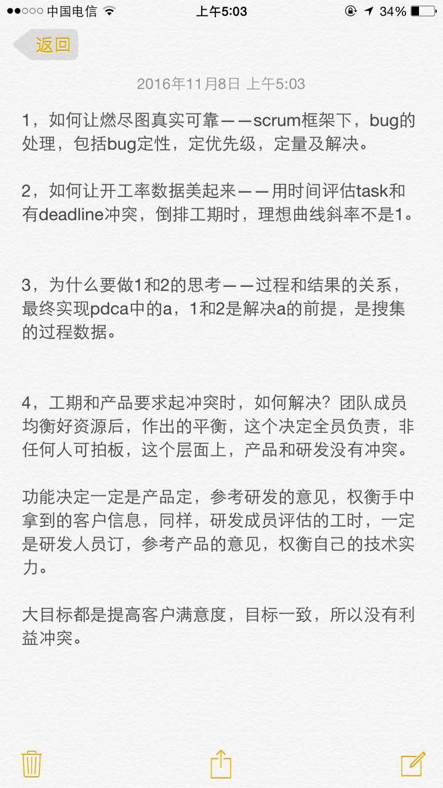
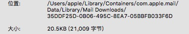
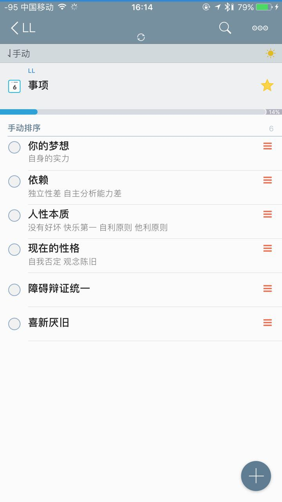
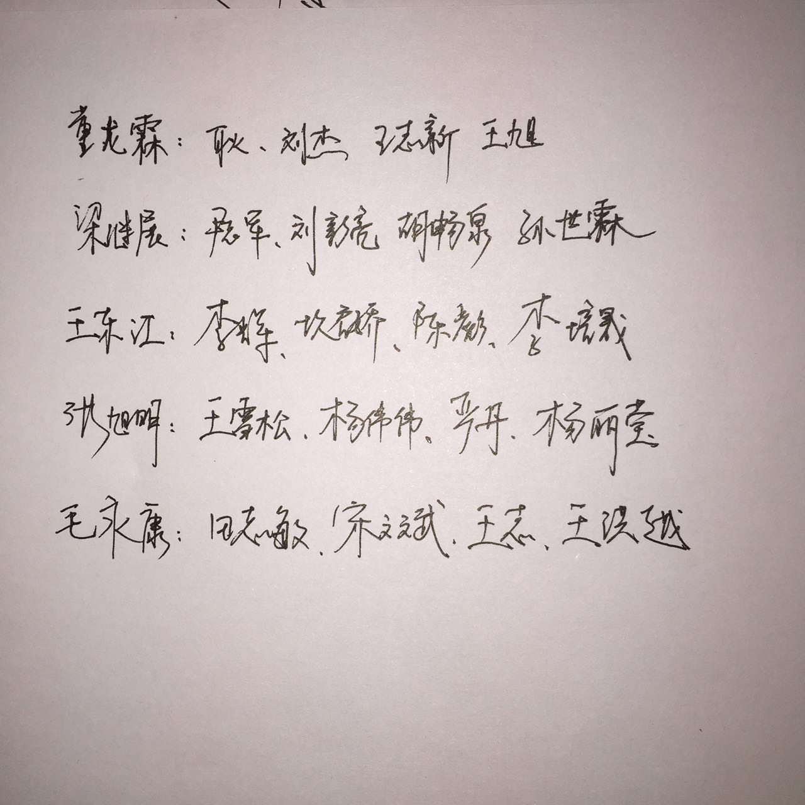
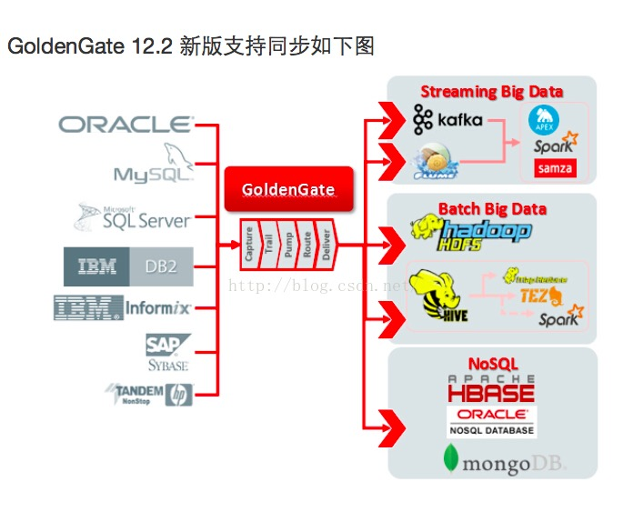
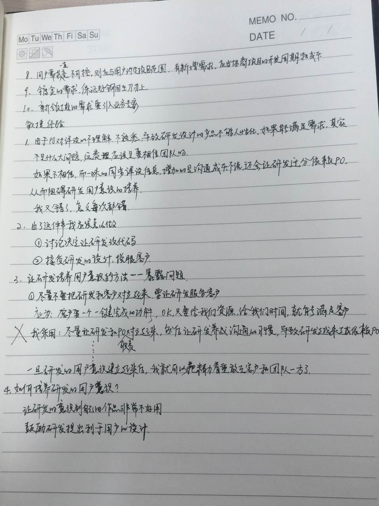

2016-11¶
2016-11-01¶
| 2016-11-01 09:07:11 | 你 | 我都忘了8tto8a做了啥了 |
| 2016-11-01 09:07:36 | 我 | 看看以前的用户故事 |
| 2016-11-01 09:30:57 | 我 | 你们开会有事吗 |
| 2016-11-01 09:34:19 | 我 | 网好了 |
| 2016-11-01 10:36:25 | 你 | 你干嘛去了 |
| 2016-11-01 10:37:12 | 我 | 找李迎，任职资格 |
| 2016-11-01 11:14:50 | 我 | 烦死了，一堆协调的事情 |
| 2016-11-01 11:15:05 | 你 | 是吧 |
| 2016-11-01 11:15:37 | 我 | 你忙啥呢 |
| 2016-11-01 11:16:17 | 你 | 看马姐的性能测试报告 |
| 2016-11-01 11:16:44 | 我 | 好的，今天你忙吗 |
| 2016-11-01 11:17:08 | 你 | 不忙吧 |
| 2016-11-01 11:17:44 | 我 | 有空聊天吗 |
| 2016-11-01 11:23:54 | 你 | 气死我了 |
| 2016-11-01 11:23:59 | 我 | 咋了 |
| 2016-11-01 11:24:15 | 你 | 你说我是因为没睡好觉吗 觉得头晕 |
| 2016-11-01 11:24:58 | 我 | 是 |
| 2016-11-01 11:25:13 | 我 | 中午好好睡一觉吧 |
| 2016-11-01 11:25:41 | 你 | 你睡不好 也会头晕吗 |
| 2016-11-01 11:25:50 | 你 | 不过我是特别想睡觉 |
| 2016-11-01 11:25:51 | 我 | 会 |
| 2016-11-01 11:26:01 | 你 | 那估计是 |
| 2016-11-01 11:26:08 | 我 | 主要还是你昨天冻的 |
| 2016-11-01 11:26:14 | 你 | 唉 |
| 2016-11-01 11:26:17 | 你 | 烦死了 |
| 2016-11-01 11:26:24 | 我 | 怎么啦 |
| 2016-11-01 11:26:32 | 我 | 谁惹你生气了 |
| 2016-11-01 11:26:33 | 你 | 头晕啊 |
| 2016-11-01 11:26:36 | 你 | 没人惹我 |
| 2016-11-01 11:26:47 | 我 | 哦 |
| 2016-11-01 11:26:58 | 我 | 深呼吸 |
| 2016-11-01 11:27:14 | 我 | 然后去吃饭，回来睡觉 |
| 2016-11-01 11:29:36 | 你 | 恩 |
| 2016-11-01 11:39:20 | 你 | [链接] 微信红包 |
| 2016-11-01 11:39:32 | 你 | 晕 |
| 2016-11-01 11:39:38 | 你 | 发错了 |
| 2016-11-01 11:39:44 | 我 | 哈哈 |
| 2016-11-01 12:08:08 | 你 | 你看到红包也不收吗 |
| 2016-11-01 12:11:33 | 我 | 你不是发错了吗 |
| 2016-11-01 12:11:56 | 你 | 是啊 |
| 2016-11-01 12:12:10 | 你 | 一般别人发给我 我就立马收 |
| 2016-11-01 12:14:10 | 我 | 我第一反应也是，不过一看是你发的就先等等看吧，反正也跑不了[呲牙] |
| 2016-11-01 13:29:22 | 我 | 你睡觉了吗 |
| 2016-11-01 13:29:28 | 你 | 睡了 |
| 2016-11-01 13:29:43 | 我 | 还头晕吗 |
| 2016-11-01 13:30:06 | 你 | 好点了 可还是觉得有点沉 |
| 2016-11-01 13:30:58 | 我 | 还是没有歇过来，今天早点睡吧 |
| 2016-11-01 13:35:30 | 你 | 应该是 |
| 2016-11-01 13:35:44 | 你 | 看着你好忙 |
| 2016-11-01 13:36:04 | 我 | 今天上午是很忙，下午应该没事了 |
| 2016-11-01 13:47:07 | 你 | 你看我多不会撒谎 |
| 2016-11-01 13:47:19 | 我 | 怎么了 |
| 2016-11-01 13:47:36 | 你 | 老田 很真诚的问我 好点了吗 |
| 2016-11-01 13:47:55 | 你 | 我就知唔知唔不出个理由 |
| 2016-11-01 13:49:08 | 我 | [微笑] |
| 2016-11-01 13:54:12 | 你 | 我今天去打次球 |
| 2016-11-01 13:54:25 | 我 | 好的，别太累了 |
| 2016-11-01 13:59:51 | 你 | 亲 我突然间不知道干什么了 |
| 2016-11-01 14:00:07 | 我 | 没事了吗 |
| 2016-11-01 14:00:25 | 你 | 那个8t to 8a的 怎么弄啊 |
| 2016-11-01 14:00:50 | 我 | 先写一个全量的用户故事 |
| 2016-11-01 14:01:07 | 你 | 我都写完了 |
| 2016-11-01 14:01:12 | 你 | 全量的 事务的 |
| 2016-11-01 14:01:13 | 我 | 然后你调研一下，看看能不能拆解成更细的故事 |
| 2016-11-01 14:01:17 | 你 | 异常处理的 |
| 2016-11-01 14:02:23 | 你 | 那只发全量的就行吗 |
| 2016-11-01 14:02:56 | 我 | 可以全发，让研发去评估去 |
| 2016-11-01 14:03:05 | 我 | 你就是看看能不能分解 |
| 2016-11-01 14:03:14 | 我 | 这个也是提高你自己能力的一个机会 |
| 2016-11-01 14:03:27 | 你 | 恩 知道了 |
| 2016-11-01 14:03:32 | 我 | 如果你能分解的比较合理，研发方向就不会太偏 |
| 2016-11-01 14:04:36 | 你 | 恩 |
| 2016-11-01 14:04:37 | 你 | 好 |
| 2016-11-01 14:04:41 | 你 | 我想想 |
| 2016-11-01 14:04:54 | 我 | 好的 |
| 2016-11-01 15:15:55 | 我 | 你笑什么 |
| 2016-11-01 15:16:05 | 你 | 就是想笑 |
| 2016-11-01 15:16:41 | 我 | 好吧 |
| 2016-11-01 15:17:02 | 我 | 你忙什么呢 |
| 2016-11-01 15:17:10 | 你 | 没什么 |
| 2016-11-01 15:17:21 | 你 | 李杰血检结果出来了 |
| 2016-11-01 15:17:38 | 我 | 结果呢 |
| 2016-11-01 15:18:27 | 你 | 结果显示4-6周了 |
| 2016-11-01 15:18:35 | 你 | 有3 个指标不怎么正常 |
| 2016-11-01 15:18:51 | 我 | 不严重吧 |
| 2016-11-01 15:19:12 | 你 | 不知道啊 从化验单上看出来的 |
| 2016-11-01 15:19:24 | 你 | 理解等医生说呢 |
| 2016-11-01 15:19:47 | 我 | 好的 |
| 2016-11-01 15:24:37 | 你 | 你看李迎 像不像40的 |
| 2016-11-01 15:24:56 | 我 | 是的 |
| 2016-11-01 15:44:39 | 你 | 我嘴上出泡了 |
| 2016-11-01 15:44:47 | 我 | 着急上火 |
| 2016-11-01 15:44:49 | 你 | 这是上了多大的火 |
| 2016-11-01 15:44:52 | 我 | 多喝水 |
| 2016-11-01 15:45:01 | 我 | 你还有茶吗 |
| 2016-11-01 15:45:07 | 我 | 喝茶也行 |
| 2016-11-01 15:45:08 | 你 | 有啊 |
| 2016-11-01 15:45:13 | 你 | 喝呢 |
| 2016-11-01 15:45:55 | 我 | 等李杰的事情忙完了你也就该好了 |
| 2016-11-01 15:46:17 | 我 | 你比她还着急 |
| 2016-11-01 15:46:30 | 你 | 她也很着急 |
| 2016-11-01 15:46:41 | 你 | 最近睡电褥子睡的 |
| 2016-11-01 15:46:50 | 我 | 是 |
| 2016-11-01 15:46:57 | 我 | 赶紧喝水吧 |
| 2016-11-01 15:47:08 | 你 | 恩 |
| 2016-11-01 15:47:14 | 我 | 李杰有结果了吗 |
| 2016-11-01 15:47:25 | 你 | 还排队呢 |
| 2016-11-01 15:47:46 | 我 | 唉，耐心等着吧 |
| 2016-11-01 15:48:18 | 你 | 是 |
| 2016-11-01 15:48:48 | 我 | 你紧张吗 |
| 2016-11-01 15:48:56 | 你 | 我不紧张啊 |
| 2016-11-01 15:48:58 | 你 | 我紧张什么 |
| 2016-11-01 15:49:15 | 我 | 哈哈，我怕你紧张 |
| 2016-11-01 15:50:52 | 你 | 我不紧张 |
| 2016-11-01 15:51:01 | 我 | 嗯 |
| 2016-11-01 15:51:13 | 你 | 一定会很顺利的 |
| 2016-11-01 15:51:19 | 我 | 是 |
| 2016-11-01 15:52:43 | 你 | 我把8tto8a的用户故事发给你 |
| 2016-11-01 15:52:50 | 我 | 好的 |
| 2016-11-01 16:01:21 | 我 | 感觉全量同步的前两个故事还可以分解 |
| 2016-11-01 16:02:55 | 你 | 能分解 说明有个纬度让我忽略了是不是 |
| 2016-11-01 16:03:31 | 我 | 说实话，我也没有想好 |
| 2016-11-01 16:03:47 | 我 | 主要是里面的文字太多了，感觉应该可以再分解 |
| 2016-11-01 16:03:48 | 你 | 哈哈 |
| 2016-11-01 16:04:36 | 你 | 这个其实挺矛盾 |
| 2016-11-01 16:04:51 | 你 | 字多 说明写的细 怎么会丢纬度呢？ |
| 2016-11-01 16:05:21 | 你 | 按道理来说 字少 说明 内涵小 外延才大啊 |
| 2016-11-01 16:05:25 | 你 | 对吧 嘻嘻 |
| 2016-11-01 16:05:28 | 你 | 我瞎猜的啊 |
| 2016-11-01 16:05:31 | 我 | 对 |
| 2016-11-01 16:05:45 | 我 | 那么字多说明内涵大 |
| 2016-11-01 16:05:54 | 你 | 哈哈 |
| 2016-11-01 16:05:56 | 我 | 那么这个内涵是不是可以再分解呢 |
| 2016-11-01 16:06:23 | 我 | 我现在脑子不转了 |
| 2016-11-01 16:06:29 | 你 | 哦 那不是丢纬度 是用户故事太大了 你说的分解是这个意思吗 |
| 2016-11-01 16:06:30 | 我 | 好像要感冒 |
| 2016-11-01 16:06:31 | 你 | 咋了 |
| 2016-11-01 16:06:33 | 你 | 心情不好 |
| 2016-11-01 16:06:36 | 你 | 啊！！！！！！！！！！ |
| 2016-11-01 16:06:39 | 你 | 沦陷了啊 |
| 2016-11-01 16:06:45 | 你 | 我头晕了这么久 都没事 |
| 2016-11-01 16:06:51 | 我 | 我说的就是故事有点大 |
| 2016-11-01 16:06:53 | 你 | 你突然感冒了 |
| 2016-11-01 16:07:12 | 你 | 我明白了 我再想想 |
| 2016-11-01 16:07:24 | 我 | 好的，我去活动一下 |
| 2016-11-01 16:07:25 | 你 | 你要是感冒了 得吃药 |
| 2016-11-01 16:07:28 | 你 | 恩 |
| 2016-11-01 16:26:03 | 我 | 你看看能不能简化用户故事 |
| 2016-11-01 16:26:09 | 你 | 恩 |
| 2016-11-01 16:26:15 | 你 | 简化？ |
| 2016-11-01 16:26:18 | 你 | 什么意思 |
| 2016-11-01 16:26:27 | 我 | 我觉得你的用户故事把所有的东西都写里面了 |
| 2016-11-01 16:26:46 | 我 | 你抽象一下，看看哪些东西没有了 |
| 2016-11-01 16:26:51 | 你 | 你直接过来找我呗 |
| 2016-11-01 16:27:01 | 我 | 那些没有的就应该是单独的 |
| 2016-11-01 16:40:18 | 你 | 我明白你说的意思了 |
| 2016-11-01 16:40:56 | 我 | 好的，这些需要你仔细去体会用户的想法 |
| 2016-11-01 16:41:08 | 你 | 恩 |
| 2016-11-01 16:41:32 | 我 | 刚开始会有难度，慢慢来 |
| 2016-11-01 16:41:46 | 你 | 恩 是 |
| 2016-11-01 16:41:50 | 我 | 你从现在开始已经进入一个新的层次了 |
| 2016-11-01 16:41:52 | 你 | 每次写都有新的体会 |
| 2016-11-01 16:42:05 | 我 | 需要换一种新的思路 |
| 2016-11-01 16:42:22 | 你 | 我回头看我第一版写的时候 把自己都逗笑了 |
| 2016-11-01 16:43:01 | 我 | 😄，能体会出差距了吧 |
| 2016-11-01 16:43:53 | 你 | 是 |
| 2016-11-01 16:51:11 | 我 | 亲，你有没有发现一个问题 |
| 2016-11-01 16:51:18 | 你 | 什么 |
| 2016-11-01 16:51:38 | 我 | 最近很多事情都得咱俩面谈才能说清楚 |
| 2016-11-01 16:51:51 | 我 | 不像以前通过聊天就能说清楚 |
| 2016-11-01 16:52:06 | 你 | 为什么 |
| 2016-11-01 16:52:54 | 我 | 你好像现在跟不上我的想法 |
| 2016-11-01 16:53:12 | 你 | 你说说 |
| 2016-11-01 16:53:13 | 我 | 还记得在南站电梯上你说你想明白了吗 |
| 2016-11-01 17:19:35 | 我 | 李杰有消息吗 |
| 2016-11-01 17:20:00 | 你 | 恩 没啥事 激素都正常 就是有点小 说2周后看看 |
| 2016-11-01 17:20:16 | 我 | 那就没事 |
| 2016-11-01 17:20:35 | 我 | 你写完了吗 |
| 2016-11-01 17:20:48 | 你 | 差不多了 |
| 2016-11-01 17:20:56 | 我 | 真快 |
| 2016-11-01 17:21:09 | 我 | 你们几点去打球 |
| 2016-11-01 17:21:28 | 你 | 我想6点多点就走 |
| 2016-11-01 17:21:34 | 你 | 想早点回家 |
| 2016-11-01 17:21:59 | 我 | 好的，回家早点睡，赶紧歇过来 |
| 2016-11-01 17:23:23 | 你 | shi |
| 2016-11-01 17:23:31 | 你 | 我头晕的都有点害怕 |
| 2016-11-01 17:24:53 | 我 | 你是怎么头晕 |
| 2016-11-01 17:25:04 | 我 | 有胀的感觉吗 |
| 2016-11-01 17:25:38 | 你 | 就是头晕 |
| 2016-11-01 17:25:44 | 你 | 头有点沉 |
| 2016-11-01 17:26:01 | 你 | 严重的时候 站着不稳 |
| 2016-11-01 17:26:02 | 我 | 类似感冒的症状？ |
| 2016-11-01 17:26:07 | 你 | 不知道 |
| 2016-11-01 17:26:15 | 我 | 脸发烧吗 |
| 2016-11-01 17:26:30 | 你 | 有点中午睡觉睡太多的那种感觉 |
| 2016-11-01 17:27:09 | 我 | 可能还是累的 |
| 2016-11-01 17:27:13 | 我 | 以前有过吗 |
| 2016-11-01 17:27:16 | 你 | 我觉得是 |
| 2016-11-01 17:27:19 | 你 | 没有过 |
| 2016-11-01 17:27:24 | 我 | 是今天才开始的吗 |
| 2016-11-01 17:27:27 | 你 | 有也没这次严重 |
| 2016-11-01 17:27:34 | 你 | 从上周五 |
| 2016-11-01 17:27:42 | 我 | 啊 |
| 2016-11-01 17:27:45 | 你 | 上周五你记得我起很早 |
| 2016-11-01 17:27:50 | 我 | 周五什么时候开始的 |
| 2016-11-01 17:27:55 | 你 | 然后是整个周末 都没怎么休息 |
| 2016-11-01 17:28:05 | 你 | 周六还跟李杰加班去了 |
| 2016-11-01 17:28:16 | 你 | 观察观察 |
| 2016-11-01 17:28:23 | 我 | 你今天打球的时候注意一点 |
| 2016-11-01 17:28:26 | 你 | 周一6点就起来了 |
| 2016-11-01 17:28:39 | 你 | 每天都起的早 睡得晚 |
| 2016-11-01 17:29:36 | 我 | 是 |
| 2016-11-01 17:29:46 | 你 | 我写的你还看吗 |
| 2016-11-01 17:29:51 | 我 | 如果只是累的那就没问题 |
| 2016-11-01 17:29:56 | 我 | 看呀 |
| 2016-11-01 17:30:02 | 你 | 我就是很困 |
| 2016-11-01 17:30:22 | 我 | 我觉得你今天不该去打球 |
| 2016-11-01 17:30:23 | 你 | 早上开晨会的时候 很严重 当时我就像躺地上 |
| 2016-11-01 17:30:32 | 我 | 我看见了 |
| 2016-11-01 17:30:47 | 我 | 你有一阵趴在桌子上 |
| 2016-11-01 17:30:57 | 你 | 而且 我睡眠质量一向不好 |
| 2016-11-01 17:30:59 | 你 | 你忙吗 |
| 2016-11-01 17:31:05 | 你 | 忙的话你就先忙 |
| 2016-11-01 17:31:42 | 我 | 不忙，没事 |
| 2016-11-01 17:31:47 | 我 | 我现在很担心你 |
| 2016-11-01 17:31:52 | 你 | 担心我什么 |
| 2016-11-01 17:32:05 | 我 | 我感觉你有点类似低血糖 |
| 2016-11-01 17:32:07 | 你 | 我下午就好很多了 |
| 2016-11-01 17:32:26 | 你 | 症状跟低血糖累死 但我肯定不是低血糖 |
| 2016-11-01 17:32:37 | 我 | 你打球的时候如果头晕就赶紧歇会 |
| 2016-11-01 17:32:42 | 我 | 晚上早点睡 |
| 2016-11-01 17:32:43 | 你 | 我知道 |
| 2016-11-01 17:32:50 | 你 | 你说我现在怎么这么多毛病 |
| 2016-11-01 17:33:11 | 我 | 没事的，这都正常 |
| 2016-11-01 17:33:21 | 我 | 应该还是你累的 |
| 2016-11-01 17:33:32 | 我 | 不过你最好还是开始锻炼吧 |
| 2016-11-01 17:33:39 | 我 | 毕竟是好处很多 |
| 2016-11-01 17:33:57 | 我 | 而且对你怀孕也有好处 |
| 2016-11-01 17:34:04 | 我 | 到时候不会那么难受 |
| 2016-11-01 17:34:20 | 你 | 恩 |
| 2016-11-01 17:34:22 | 你 | 好 |
| 2016-11-01 17:34:37 | 你 | 我今天想了想你说的运动的事 |
| 2016-11-01 17:34:46 | 我 | 嗯 |
| 2016-11-01 17:34:52 | 你 | 就我这体质 要是不锻炼 估计怀孕的时候很难过 |
| 2016-11-01 17:35:04 | 我 | 是 |
| 2016-11-01 17:35:15 | 我 | 我也很担心这一点 |
| 2016-11-01 17:35:38 | 你 | 担心也没用 |
| 2016-11-01 17:36:01 | 我 | 是呀，我担心肯定是没用呀 |
| 2016-11-01 17:36:23 | 你 | 呵呵 |
| 2016-11-01 17:36:30 | 你 | 我说的是我担心 |
| 2016-11-01 17:36:40 | 我 | 我知道，逗你呢 |
| 2016-11-01 17:36:41 | 你 | 我把我写完的发给吧 |
| 2016-11-01 17:36:46 | 我 | 好的 |
| 2016-11-01 17:37:14 | 我 | 你是不是不喜欢我开这种玩笑 |
| 2016-11-01 17:37:42 | 你 | 没有 |
| 2016-11-01 17:38:01 | 我 | 你要是不喜欢就和我说 |
| 2016-11-01 17:39:16 | 我 | 哇，写的不错呀，超出我的预料 |
| 2016-11-01 17:39:38 | 你 | 真的假的 |
| 2016-11-01 17:39:42 | 你 | 你是不是安慰我呢 |
| 2016-11-01 17:39:54 | 我 | 你怎么那么没有自信呢 |
| 2016-11-01 17:40:06 | 我 | 这两句你问过我多少遍了 |
| 2016-11-01 17:40:13 | 我 | 当然是真的啦 |
| 2016-11-01 17:40:26 | 你 | 我觉得我没改什么啊 |
| 2016-11-01 17:40:31 | 我 | 写的比我像的好 |
| 2016-11-01 17:40:32 | 你 | 你怎么反应这么大 |
| 2016-11-01 17:40:47 | 我 | 我是说你的思维方式，不是你写的东西 |
| 2016-11-01 17:40:58 | 你 | 恩 |
| 2016-11-01 17:41:05 | 你 | 要是这个 可以 |
| 2016-11-01 17:41:14 | 你 | 那个验收标准 其实我写根本没用 |
| 2016-11-01 17:41:31 | 你 | 那个是大家就用户故事达成的一致认识 |
| 2016-11-01 17:41:37 | 你 | 我写的是我自己的 |
| 2016-11-01 17:41:43 | 我 | 提示信息的还可以再分解一下 |
| 2016-11-01 17:41:44 | 你 | 你说是不是 |
| 2016-11-01 17:41:46 | 我 | 是的 |
| 2016-11-01 17:42:38 | 你 | 其实我最开始有一版的思维方式是这样的 当然写的没有这个全面 |
| 2016-11-01 17:42:54 | 我 | 嗯 |
| 2016-11-01 17:43:00 | 你 | 但是考虑到上次我写的用户故事 他们做一处更改就全开发完了 我就放弃了 |
| 2016-11-01 17:43:19 | 你 | 后来你说了以后 我觉得我还是按照我想的（你说的）写 |
| 2016-11-01 17:43:29 | 我 | 嗯 |
| 2016-11-01 17:43:34 | 你 | 开发的觉得写细了 再合不就行了 |
| 2016-11-01 17:43:43 | 我 | 没错 |
| 2016-11-01 17:43:45 | 你 | 就是会显得我写的不高级 |
| 2016-11-01 17:43:58 | 你 | 至少开发的会这么认为 |
| 2016-11-01 17:44:02 | 你 | 你信不 |
| 2016-11-01 17:44:13 | 我 | 我信，但是他们是错的 |
| 2016-11-01 17:44:19 | 你 | 对啊 |
| 2016-11-01 17:44:33 | 你 | 所以 我不能同流合污 我要出淤泥而不染 |
| 2016-11-01 17:44:39 | 我 | 没错 |
| 2016-11-01 17:44:54 | 我 | 这点咱俩很像 |
| 2016-11-01 17:45:00 | 你 | 同流合污是这个污吗 |
| 2016-11-01 17:45:06 | 我 | 是 |
| 2016-11-01 17:45:07 | 你 | 乌合之众 |
| 2016-11-01 17:45:08 | 你 | 哈哈 |
| 2016-11-01 17:45:43 | 我 | 只做正确的事情，直到我们认识到自己是错的 |
| 2016-11-01 17:45:45 | 你 | 我写的是产品模型 纬度也是产品纬度 |
| 2016-11-01 17:46:10 | 你 | 跟开发的是有关系 可是他们如果发现不了关系 也不是我的错 |
| 2016-11-01 17:46:24 | 我 | 对 |
| 2016-11-01 17:46:52 | 你 | 我刚才想 你看 所有数据和指定表 可能实现上只需要一个参数 |
| 2016-11-01 17:47:14 | 你 | 就跟加载里边控制文件中的某个参数一样 |
| 2016-11-01 17:47:22 | 你 | 要是这么类比着看 |
| 2016-11-01 17:47:38 | 你 | 用户故事和用例的区别和联系就出来了 |
| 2016-11-01 17:47:44 | 我 | 对呀 |
| 2016-11-01 17:47:58 | 你 | 不管用例 用户故事 都是描述产品模型的方式而已 |
| 2016-11-01 17:48:18 | 我 | 其实用户故事和用例是一体两面 |
| 2016-11-01 17:49:06 | 我 | 一体指的都是产品模型，两面指的是从不同的维度描述 |
| 2016-11-01 17:49:24 | 你 | 也有可能有另一种描述产品模型的东西 比如xxx |
| 2016-11-01 17:49:29 | 我 | 两者可以互相参考，互相转换 |
| 2016-11-01 17:49:40 | 我 | 说的没错 |
| 2016-11-01 17:49:56 | 我 | 你说的就是需求建模的模型 |
| 2016-11-01 17:50:05 | 你 | 是 |
| 2016-11-01 17:50:17 | 我 | 已经有提升一个层次了 |
| 2016-11-01 17:50:20 | 你 | 你说的两面 我来说说 |
| 2016-11-01 17:50:25 | 你 | 你看看 |
| 2016-11-01 17:50:28 | 我 | 好 |
| 2016-11-01 17:51:00 | 你 | 首先我们都承认两者是表述产品模型的方法 |
| 2016-11-01 17:51:08 | 我 | 你先写 我去开会 |
| 2016-11-01 17:51:15 | 你 | 恩 |
| 2016-11-01 17:58:23 | 我 | 回来了 |
| 2016-11-01 17:58:31 | 我 | 你接着说吧 |
| 2016-11-01 17:58:56 | 你 | 我没想明白 |
| 2016-11-01 17:59:01 | 我 | 看你困的 |
| 2016-11-01 17:59:03 | 你 | 不能跟你说了 |
| 2016-11-01 17:59:11 | 你 | 我不困 我想东西呢 |
| 2016-11-01 17:59:16 | 我 | 没事，明天再说 |
| 2016-11-01 17:59:31 | 我 | 我感觉你又快突破了 |
| 2016-11-01 17:59:38 | 你 | 应该是 |
| 2016-11-01 17:59:54 | 你 | 我觉得我想明白了 可是说不出来 |
| 2016-11-01 17:59:58 | 我 | 等你想明白了就差不多了 |
| 2016-11-01 18:00:01 | 你 | 感觉说出来都不正确 |
| 2016-11-01 18:00:12 | 我 | 慢慢来，不着急 |
| 2016-11-01 18:02:06 | 你 | 我给你说说 |
| 2016-11-01 18:02:17 | 我 | 好 |
| 2016-11-01 18:02:22 | 你 | 比如这个需求模型 有两个纬度字母和数字 |
| 2016-11-01 18:02:38 | 你 | 字母是A B 数字是1 2 |
| 2016-11-01 18:03:32 | 我 | 别着急 |
| 2016-11-01 18:03:53 | 我 | 我提醒你一下 |
| 2016-11-01 18:03:56 | 你 | 用例写的时候会选择一个主线啊 比如字母纬度 |
| 2016-11-01 18:03:58 | 你 | 不用 |
| 2016-11-01 18:04:00 | 你 | 不许说话 |
| 2016-11-01 18:04:05 | 我 | 是 |
| 2016-11-01 18:04:51 | 你 | 会把1，2作为可选 |
| 2016-11-01 18:04:58 | 你 | 这个不是绝对的 |
| 2016-11-01 18:05:11 | 你 | 如果纬度太多会这么做 |
| 2016-11-01 18:05:17 | 我 | 嗯 |
| 2016-11-01 18:05:48 | 你 | 用户故事是字母是一个史诗级 A B是正常的 |
| 2016-11-01 18:05:59 | 你 | 数字是史诗级 1 2 是正常的 |
| 2016-11-01 18:06:17 | 你 | 但是不能把数字 字母组合在一起 |
| 2016-11-01 18:06:31 | 你 | 这也不是绝对的 |
| 2016-11-01 18:06:35 | 我 | 嗯 |
| 2016-11-01 18:06:36 | 你 | 我想不出来了 |
| 2016-11-01 18:06:38 | 你 | 就这样吧 |
| 2016-11-01 18:18:40 | 我 | 我觉得你要感冒 |
| 2016-11-01 18:19:10 | 你 | 我觉得也是 |
| 2016-11-01 18:26:21 | 你 | 我竟然出汗了 |
| 2016-11-01 18:26:25 | 你 | 怎么回事 |
| 2016-11-01 18:26:45 | 你 | 我晚上早点回家 吃点药 早点睡 |
| 2016-11-01 18:26:48 | 我 | 应该没事 |
| 2016-11-01 18:26:50 | 我 | 好的 |
| 2016-11-01 18:33:28 | 我 | 你自己想一下，你刚才的解释一体两面的方式是不是和系统化思维导论里面的例子很像 |
| 2016-11-01 19:17:31 | 我 | 你的衣服放这不好，会吃粉笔灰 |
| 2016-11-01 19:24:13 | 你 | 我走了 |
| 2016-11-01 19:24:17 | 你 | 我要睡觉 |
| 2016-11-01 19:24:35 | 我 | 好的，多睡觉 |
| 2016-11-01 19:24:38 | 你 | 我的上下嘴唇都出泡了 |
| 2016-11-01 19:24:42 | 你 | 我要发火 |
| 2016-11-01 19:25:06 | 我 | 发吧，冲我发，你就没火了 |
2016-11-02¶
| 2016-11-02 08:14:48 | 我 | 你怎么啦 |
| 2016-11-02 08:20:52 | 你 | 我本来说昨天早点睡 结果我家漏水了 |
| 2016-11-02 08:21:08 | 我 | 啊 |
| 2016-11-02 08:21:14 | 你 | 卫生间洗手盆下边的抽屉 都被泡了 |
| 2016-11-02 08:21:48 | 我 | 屋里没事吧 |
| 2016-11-02 08:22:23 | 你 | 屋子没事 |
| 2016-11-02 08:22:36 | 我 | 还好 |
| 2016-11-02 08:22:39 | 你 | 而且我俩看是墙里边渗出来的 |
| 2016-11-02 08:22:43 | 你 | 不知道该咋办 |
| 2016-11-02 08:22:45 | 我 | 是什么漏了 |
| 2016-11-02 08:22:54 | 你 | 渗的可快了 |
| 2016-11-02 08:23:14 | 你 | 最近这是咋了 |
| 2016-11-02 08:23:21 | 我 | 有单独的阀门吗 |
| 2016-11-02 08:23:31 | 你 | 什么意思 |
| 2016-11-02 08:23:42 | 你 | 阀门都不管用 |
| 2016-11-02 08:23:46 | 我 | 啊 |
| 2016-11-02 08:23:54 | 我 | 那现在就一直漏着 |
| 2016-11-02 08:24:07 | 你 | shi |
| 2016-11-02 08:24:17 | 你 | 没办法 |
| 2016-11-02 08:24:30 | 你 | 东东说估计得把墙凿开 |
| 2016-11-02 08:24:34 | 我 | 那今天应该赶紧修呀，问问物业 |
| 2016-11-02 08:25:37 | 你 | 是啊 |
| 2016-11-02 08:25:44 | 你 | 唉 着急上火 |
| 2016-11-02 08:26:14 | 我 | 今天是东东去修吗 |
| 2016-11-02 08:26:22 | 你 | 东东也得上班 |
| 2016-11-02 08:26:37 | 你 | 先漏着吧 |
| 2016-11-02 08:26:53 | 我 | 啊 |
| 2016-11-02 08:27:14 | 我 | 这样不好吧，会把墙体泡坏的 |
| 2016-11-02 08:27:30 | 我 | 有没有渗到楼下 |
| 2016-11-02 08:27:40 | 你 | 不知道 |
| 2016-11-02 08:28:05 | 我 | 唉，关键是没有人能帮你 |
| 2016-11-02 08:28:09 | 你 | 是啊 |
| 2016-11-02 08:28:15 | 你 | 我俩早上商量 |
| 2016-11-02 08:28:26 | 你 | 不行就让我爸爸或者他爸爸来 |
| 2016-11-02 08:29:05 | 我 | 远水解不了近渴 |
| 2016-11-02 08:29:21 | 我 | 这个你们可以让物业看看 |
| 2016-11-02 08:29:30 | 我 | 他们一般都认识人 |
| 2016-11-02 08:29:50 | 我 | 没准有别的住户也有同样的问题，他们都知道怎么办 |
| 2016-11-02 08:30:09 | 我 | 这个不排除是房子质量问题 |
| 2016-11-02 08:30:10 | 你 | 我们小区的物业可烂了 |
| 2016-11-02 08:30:20 | 我 | 哦 |
| 2016-11-02 08:30:21 | 你 | 管的可能性也不打 |
| 2016-11-02 08:30:22 | 你 | 大 |
| 2016-11-02 08:30:25 | 你 | 看看吧 |
| 2016-11-02 08:30:50 | 你 | 找找给我们装修的那个人 |
| 2016-11-02 08:31:00 | 我 | 嗯，这样最好 |
| 2016-11-02 08:31:16 | 我 | 还好，你这还不算啥 |
| 2016-11-02 08:31:21 | 你 | 是 |
| 2016-11-02 08:31:36 | 我 | 你知道昨天宋文彬的车被撞了吗 |
| 2016-11-02 08:31:51 | 我 | 比你这个悲惨多了 |
| 2016-11-02 08:31:54 | 你 | 啊？？？ |
| 2016-11-02 08:31:57 | 你 | 你当时在吗 |
| 2016-11-02 08:32:03 | 你 | 啥时候的事啊 |
| 2016-11-02 08:32:28 | 你 | 不行我这周还得请假 |
| 2016-11-02 08:32:36 | 我 | 昨天早上上班来的时候，他走路口等红绿灯 |
| 2016-11-02 08:32:53 | 我 | 赶紧请假吧 |
| 2016-11-02 08:33:05 | 我 | 关键是东东能不能请假 |
| 2016-11-02 08:35:25 | 你 | 烦死了 |
| 2016-11-02 08:35:32 | 你 | 你说怎么这么多事啊 |
| 2016-11-02 08:35:45 | 我 | 没事的 |
| 2016-11-02 08:35:55 | 我 | 生活就是这样 |
| 2016-11-02 08:36:14 | 我 | 闲一阵，忙一阵 |
| 2016-11-02 08:36:23 | 你 | 唉 |
| 2016-11-02 08:36:47 | 我 | 这还没到你怀孕呢 |
| 2016-11-02 08:36:53 | 你 | 晕头转向的，我本来该洗头发，脑袋沉沉的，早上没起来 |
| 2016-11-02 08:37:12 | 我 | 其实今天你们两个都该请假的 |
| 2016-11-02 08:37:23 | 我 | 在家里把事情处理好 |
| 2016-11-02 08:37:36 | 我 | 现在你们上班心里也不踏实 |
| 2016-11-02 08:38:06 | 你 | 我看东东好像也感冒了 |
| 2016-11-02 08:38:08 | 你 | 我想哭 |
| 2016-11-02 08:38:12 | 你 | 哇哇 |
| 2016-11-02 08:38:48 | 我 | 不哭不哭，没事的 |
| 2016-11-02 08:39:46 | 我 | 这些事情都不大，很容易解决的 |
| 2016-11-02 08:40:10 | 我 | 只是因为是意外事件，才会让你感觉很烦 |
| 2016-11-02 08:40:56 | 我 | 再者说，人不能总是一帆风顺的，会让天妒的 |
| 2016-11-02 08:41:33 | 我 | 天妒英才，你看看那些英年早逝的 |
| 2016-11-02 08:43:59 | 你 | 哈哈 |
| 2016-11-02 08:44:02 | 你 | 看你说的 |
| 2016-11-02 08:44:18 | 你 | 我倒想死了 省得受这罪 |
| 2016-11-02 08:44:28 | 我 | 真的没事的 |
| 2016-11-02 08:44:31 | 你 | 我早已生无可恋了 |
| 2016-11-02 08:44:37 | 我 | 啊，不会吧 |
| 2016-11-02 08:44:54 | 我 | 你看你那么漂亮，怎么可能呢 |
| 2016-11-02 08:45:05 | 我 | 你看看多少人喜欢呀 |
| 2016-11-02 08:45:11 | 你 | 这有什么不可能的 |
| 2016-11-02 08:45:28 | 你 | 活着就那么回事 |
| 2016-11-02 08:45:47 | 我 | 活着有好多快乐呢 |
| 2016-11-02 08:46:01 | 你 | 不讨论这个话题了 |
| 2016-11-02 08:46:34 | 你 | 最近事太多 |
| 2016-11-02 08:46:46 | 你 | 昨天我俩又去买靴子了 又没买到 |
| 2016-11-02 08:46:55 | 你 | 然后回家就漏水了 |
| 2016-11-02 08:47:30 | 我 | 嗯 |
| 2016-11-02 08:47:46 | 你 | 然后我嘴上出了好多大泡 |
| 2016-11-02 08:47:51 | 你 | 也不没了 |
| 2016-11-02 08:47:55 | 你 | 美了 |
| 2016-11-02 08:48:00 | 我 | 所以你就更不能着急啦 |
| 2016-11-02 08:48:02 | 你 | 特别特别生气 |
| 2016-11-02 08:48:09 | 我 | 谁说你不美了 |
| 2016-11-02 08:48:34 | 我 | 告诉你个秘密 |
| 2016-11-02 08:48:45 | 我 | 你嘴上的包别人看不见 |
| 2016-11-02 08:48:46 | 你 | 啥啊 |
| 2016-11-02 08:48:50 | 你 | 且 |
| 2016-11-02 08:49:13 | 我 | 真的，不骗你 |
| 2016-11-02 08:49:27 | 我 | 你的包颜色和你嘴唇的颜色几乎一样 |
| 2016-11-02 08:50:08 | 你 | 我的包是黑色的 |
| 2016-11-02 08:50:47 | 我 | 没有呀，我就没看出来 |
| 2016-11-02 08:55:04 | 你 | 我肯定要感冒 |
| 2016-11-02 08:55:26 | 我 | 啊，这可是大事 |
| 2016-11-02 08:55:42 | 我 | 你有药吗 |
| 2016-11-02 08:56:02 | 我 | 听听你的鼻子 |
| 2016-11-02 08:56:04 | 你 | 我刚吃了去火的 |
| 2016-11-02 08:56:10 | 你 | 昨天晚上吃了 |
| 2016-11-02 08:56:14 | 你 | 早上忘带了 |
| 2016-11-02 08:56:21 | 我 | 唉 |
| 2016-11-02 08:57:01 | 我 | 我这也没有，不行去华庄子去买点吧 |
| 2016-11-02 08:57:27 | 你 | 不去了 |
| 2016-11-02 08:57:29 | 你 | 看吧 |
| 2016-11-02 08:57:40 | 我 | 好担心你 |
| 2016-11-02 08:57:41 | 你 | 你别去啊 |
| 2016-11-02 08:57:42 | 你 | 不用你买 |
| 2016-11-02 08:57:52 | 你 | 我等着 感冒的不行了 就请假回家休息 |
| 2016-11-02 08:57:56 | 我 | 我不去 |
| 2016-11-02 08:58:08 | 你 | 你千万别去 别给我添乱 |
| 2016-11-02 08:58:15 | 我 | 唉，瞧这次把你折腾的 |
| 2016-11-02 08:58:23 | 我 | 我肯定不去 |
| 2016-11-02 08:58:30 | 你 | 是啊 |
| 2016-11-02 08:58:37 | 我 | 我也不知道你该吃啥呀 |
| 2016-11-02 08:58:49 | 我 | 不行中午你就请假吧 |
| 2016-11-02 08:59:16 | 你 | 哈哈 |
| 2016-11-02 09:01:41 | 我 | 唉，看着你，我都替你难受 |
| 2016-11-02 09:02:10 | 你 | 你别看我了 |
| 2016-11-02 09:02:24 | 你 | 越看我越不舒服 |
| 2016-11-02 09:02:25 | 我 | 舍不得呀[流泪] |
| 2016-11-02 10:14:06 | 我 | 你今天把东西都给他们，让他们写文档，进度让刘杰负责，你明天就可以请假了 |
| 2016-11-02 10:14:39 | 你 | 哈哈 |
| 2016-11-02 10:15:02 | 你 | 你看这些事 我要是多管着 也就管了 不管也就不管了 |
| 2016-11-02 10:15:16 | 我 | 是 |
| 2016-11-02 10:48:36 | 你 | 王洪越干啥去了 |
| 2016-11-02 10:49:12 | 我 | 不知道开什么会去了 |
| 2016-11-02 10:49:37 | 你 | 恩 |
| 2016-11-02 10:49:50 | 我 | 你忙啥呢 |
| 2016-11-02 10:50:03 | 你 | 没啥忙的 |
| 2016-11-02 10:50:13 | 你 | 写个8611分片方式的文档 |
| 2016-11-02 10:51:55 | 我 | 嗯，心情好点吗 |
| 2016-11-02 10:52:05 | 你 | 好多了 |
| 2016-11-02 10:52:26 | 我 | 好，今天下午又没有会议室培训了 |
| 2016-11-02 10:52:48 | 你 | 哦 |
| 2016-11-02 10:52:51 | 你 | 那怎么办啊 |
| 2016-11-02 10:53:01 | 我 | 只能不培训了 |
| 2016-11-02 10:53:13 | 你 | 哈哈 |
| 2016-11-02 10:53:44 | 我 | 聊会天吧 |
| 2016-11-02 10:54:20 | 你 | 好啊 |
| 2016-11-02 10:54:52 | 我 | 看看你想聊什么类型的 |
| 2016-11-02 10:55:23 | 你 | 你上次说我跟不上你的想法 |
| 2016-11-02 10:55:26 | 你 | 说说这个呗 |
| 2016-11-02 10:55:37 | 我 | 好的 |
| 2016-11-02 10:56:09 | 我 | 先说第一个吧，你还记得南站电梯上你说你明白了 |
| 2016-11-02 10:57:10 | 你 | 就是太注重结果那个是吗 |
| 2016-11-02 10:57:26 | 我 | 是 |
| 2016-11-02 10:57:56 | 我 | 当时我觉得你之前应该是能明白的，没想到你不明白 |
| 2016-11-02 10:58:50 | 我 | 这今天和你交流的过程中我发现有一个现象，就是有一些道理我以为你明白了，可是都是等你说你明白了我才知道之前你不明白 |
| 2016-11-02 10:59:55 | 我 | 比如昨天说你的用户故事，我说可以分解，结果你认为是维度的问题 |
| 2016-11-02 11:00:10 | 你 | 这个问题在以前也出现过 |
| 2016-11-02 11:00:17 | 你 | 以前更频繁 |
| 2016-11-02 11:00:44 | 你 | 你说我关注结果的这件事 在那之前我真的没明白 而且我不知道你不知道我没明白 |
| 2016-11-02 11:00:50 | 你 | 用户故事那个也是 |
| 2016-11-02 11:00:55 | 你 | 你说的都是事实 |
| 2016-11-02 11:01:14 | 你 | 但关注结果那事 我自己知道我没明白 |
| 2016-11-02 11:01:29 | 我 | 这么说吧，以前我认为你的认知低，所以会相对把你考虑的低一些 |
| 2016-11-02 11:01:34 | 你 | 有很多事 是我自己以为明白了 其实是没明白 关注结果那件事不一样 |
| 2016-11-02 11:01:45 | 你 | 恩 |
| 2016-11-02 11:01:49 | 我 | 最近我是把你考虑的高一点 |
| 2016-11-02 11:01:58 | 你 | 结果证明不行 |
| 2016-11-02 11:01:59 | 你 | 是不是 |
| 2016-11-02 11:02:00 | 你 | 哈哈 |
| 2016-11-02 11:02:06 | 我 | 有些事情就没有特意按照你的节奏进行 |
| 2016-11-02 11:02:18 | 我 | 我就按照我自己的节奏思考了 |
| 2016-11-02 11:02:30 | 我 | 所以我才说你有点跟不上我了 |
| 2016-11-02 11:03:26 | 我 | 相对于你，我思考的步子比较大，很多逻辑关系我是直接就跳过去了 |
| 2016-11-02 11:03:48 | 你 | 恩 |
| 2016-11-02 11:03:55 | 我 | 然后你就迷失了 |
| 2016-11-02 11:04:07 | 你 | 哈哈 |
| 2016-11-02 11:04:08 | 你 | 是 |
| 2016-11-02 11:04:49 | 我 | 你有一个优秀的品质，但是现在对你有不利的地方 |
| 2016-11-02 11:05:05 | 我 | 就是你不懂的时候你会自己努力思考 |
| 2016-11-02 11:05:33 | 我 | 当你迷失的时候，你总是在你迷失的点那不停的思考探索 |
| 2016-11-02 11:05:47 | 你 | 恩 |
| 2016-11-02 11:06:21 | 我 | 但是这时候你就没法跟上我的节奏，我后面说的东西你就记不住了 |
| 2016-11-02 11:06:32 | 你 | 哦 |
| 2016-11-02 11:06:49 | 你 | 然后呢 |
| 2016-11-02 11:07:04 | 你 | 说实话 你说这些的时候 我有点对不上号 |
| 2016-11-02 11:07:13 | 你 | 不知道你为什么会有这种感觉 |
| 2016-11-02 11:07:28 | 你 | 就是『你后来说的东西 我记不住』这个 |
| 2016-11-02 11:07:39 | 我 | 然后就出现我认为你应该能听懂，而且你也没有和我说你没懂，我就接着往下说，结果后来就发现你没有听懂我说的 |
| 2016-11-02 11:08:02 | 我 | 这么说吧，关于用户故事的分解之前我和你说过 |
| 2016-11-02 11:08:20 | 我 | 当时特意把用户故事和用例进行的比较 |
| 2016-11-02 11:08:24 | 你 | 哦 |
| 2016-11-02 11:08:29 | 我 | 说了他们的异同点 |
| 2016-11-02 11:08:37 | 你 | 恩 |
| 2016-11-02 11:08:40 | 我 | 然后我就认为你懂了 |
| 2016-11-02 11:09:03 | 我 | 其实直到昨天你才开始真正思考他们的联系 |
| 2016-11-02 11:09:27 | 你 | 恩 |
| 2016-11-02 11:10:13 | 我 | 你现在明白了我说你跟不上是怎么回事了吧 |
| 2016-11-02 11:11:11 | 我 | 我现在还在分析你这种行为模式，没有得出一个完整的结论，只有一点模糊的想法 |
| 2016-11-02 11:11:53 | 你 | 恩 |
| 2016-11-02 11:12:59 | 你 | 现在我跟李杰说话也是这杨 我很明白你的感受 |
| 2016-11-02 11:14:07 | 我 | 说说你的感觉 |
| 2016-11-02 11:15:41 | 你 | 就说你吧 你给我说你以为是一条很完整的逻辑链 其实我get到的并不是 我会更关注我能来得及反应的那些点 然后把那个点周围的事情当下即想明白 |
| 2016-11-02 11:15:58 | 你 | 但是你说的别的可能就反应不过来了 |
| 2016-11-02 11:17:01 | 我 | 是的 |
| 2016-11-02 11:17:09 | 我 | 李杰也是这样吗 |
| 2016-11-02 11:17:37 | 你 | 是 |
| 2016-11-02 11:17:50 | 你 | 所以很多我跟她说的东西 都得重复 |
| 2016-11-02 11:17:54 | 你 | 说好几遍 |
| 2016-11-02 11:18:07 | 我 | 是的 |
| 2016-11-02 11:18:21 | 你 | 我也一样 |
| 2016-11-02 11:18:52 | 你 | 我现在能想起来的很多你说的用户故事的点 都是最开始推srumn的时候 你说的 |
| 2016-11-02 11:19:02 | 你 | 当时我根本不知道你说的是什么意思 |
| 2016-11-02 11:19:17 | 你 | 你说的那句话 所有字我都看懂 但是不知道什么意思 |
| 2016-11-02 11:19:22 | 你 | 也不知道问什么 |
| 2016-11-02 11:19:26 | 我 | 是 |
| 2016-11-02 11:19:31 | 你 | 但是 在实践过程中就不一样了 |
| 2016-11-02 11:19:36 | 我 | 我现在也在反思 |
| 2016-11-02 11:19:56 | 你 | 我会回想你说的那些话 经常会有 『哦，原来是这个意思』感觉 |
| 2016-11-02 11:20:02 | 我 | 是不是一次给你们的东西太多了 |
| 2016-11-02 11:20:11 | 你 | 也不是吧 |
| 2016-11-02 11:20:38 | 你 | 你肯定是给我的一个你认为完整的东西 |
| 2016-11-02 11:20:46 | 你 | 我觉得这事只能是重复多说 |
| 2016-11-02 11:20:51 | 你 | 我跟李杰也一样 |
| 2016-11-02 11:20:59 | 我 | 我现在想如何能让咱俩配合的更好，能效率更高 |
| 2016-11-02 11:21:04 | 你 | 很多事 我都说好多遍 她就跟没听过一样 |
| 2016-11-02 11:21:14 | 你 | 那只有深入的交流 |
| 2016-11-02 11:21:17 | 你 | 多举例子 |
| 2016-11-02 11:21:37 | 你 | 而且这个例子 得举得恰到好处 |
| 2016-11-02 11:21:44 | 我 | 是，就像你说的，很多东西就得面谈才能说清楚 |
| 2016-11-02 11:21:47 | 你 | 没准哪个我就能明白 |
| 2016-11-02 11:22:03 | 你 | 例子最好是我经历过的 |
| 2016-11-02 11:22:14 | 我 | 是的 |
| 2016-11-02 11:22:18 | 你 | 或者能类比过去的 |
| 2016-11-02 11:22:53 | 你 | 我跟李杰也是 有时候 我只说一个观点 但是要让他明白 我得说2-3个小时 |
| 2016-11-02 11:23:06 | 你 | 你想想我跟李杰 比你跟我熟悉的多 |
| 2016-11-02 11:23:12 | 我 | 嗯 |
| 2016-11-02 11:23:56 | 我 | 先说一个别的，我刚想到的 |
| 2016-11-02 11:24:02 | 你 | 恩 |
| 2016-11-02 11:24:20 | 我 | 你看你现在明白我和交流以及你和李杰交流的模式 |
| 2016-11-02 11:24:41 | 我 | 所以你就可以总结出一些规律了，也总结出一些方法 |
| 2016-11-02 11:25:20 | 我 | 那么我刚才类比一下李杰，你说他现在能不能明白你说的这些道理 |
| 2016-11-02 11:26:15 | 你 | 没明白最后这句 |
| 2016-11-02 11:26:18 | 我 | 如果李杰能明白你说的每次都是只懂一个点，那么她自己以后就可以调整一下，就像你自己在做的调整 |
| 2016-11-02 11:26:34 | 你 | 首先 他自己不知道 |
| 2016-11-02 11:26:46 | 我 | 这么说吧，你通过教李杰明白了我教你是一种什么情况 |
| 2016-11-02 11:26:50 | 你 | 其次这个调整很难的 我都知道 我都做不到 |
| 2016-11-02 11:27:32 | 我 | 所以你自己能够去总结一些东西，也会在实践中自觉的去理解我说的 |
| 2016-11-02 11:28:18 | 我 | 那么李杰现在是不是还做不到自觉的去理解你的说的，还只是停留在自发的阶段 |
| 2016-11-02 11:29:20 | 你 | 这个吧 其实我的总结也不是很多 |
| 2016-11-02 11:29:34 | 你 | 大部分都是拿你的理论实践 |
| 2016-11-02 11:29:45 | 你 | 基本上没有你 自己很难突破 |
| 2016-11-02 11:30:16 | 我 | 其实我是在找你和李杰的本质区别 |
| 2016-11-02 11:30:17 | 你 | 李杰现在也是 她几乎没有自己发现过任何我不知道的东西 |
| 2016-11-02 11:30:26 | 你 | 我俩没啥本质区别 |
| 2016-11-02 11:30:34 | 我 | 现在有呀 |
| 2016-11-02 11:30:36 | 你 | 现在都是 教 学 |
| 2016-11-02 11:30:45 | 你 | 只是年级不同而已 |
| 2016-11-02 11:30:46 | 你 | 哈哈 |
| 2016-11-02 11:30:54 | 我 | 你明显比她高一个层次 |
| 2016-11-02 11:31:03 | 我 | 她是小学，你是初中 |
| 2016-11-02 11:31:04 | 你 | 那必须的啊 |
| 2016-11-02 11:31:08 | 你 | 对啊 |
| 2016-11-02 11:31:19 | 你 | 而且我的她的老师 你是我的老师 |
| 2016-11-02 11:31:43 | 你 | 就是因为我也当老师了 所以我知道很多你『老师』的感觉 |
| 2016-11-02 11:31:54 | 我 | 没错 |
| 2016-11-02 11:32:01 | 你 | 但是她没当过 所以他不知道『老师』的感觉 |
| 2016-11-02 11:32:08 | 我 | 这个感觉反过来也帮助你 |
| 2016-11-02 11:32:26 | 你 | 这样他学起来 速度更受影响 更没我快 |
| 2016-11-02 11:32:30 | 你 | 对的 |
| 2016-11-02 11:32:33 | 你 | 很帮助 |
| 2016-11-02 11:33:30 | 我 | 我在想再过个一年半载的，李杰发现和你的差距那么大，会不会灰心呀 |
| 2016-11-02 11:33:51 | 你 | 不会的 |
| 2016-11-02 11:34:23 | 我 | 那就好 |
| 2016-11-02 11:38:53 | 你 | 我还要出泡 |
| 2016-11-02 11:38:57 | 你 | 晕 |
| 2016-11-02 11:39:41 | 我 | 你是不是去医院感染病毒了 |
| 2016-11-02 11:39:57 | 我 | 你这种泡不像上火 |
| 2016-11-02 11:41:31 | 你 | 肯定是上火的 |
| 2016-11-02 11:41:35 | 你 | 以前也这样 |
| 2016-11-02 11:42:09 | 我 | 哦 |
| 2016-11-02 11:42:27 | 我 | 那就得让它全出来 |
| 2016-11-02 11:42:45 | 你 | 必须的啊 |
| 2016-11-02 11:43:10 | 你 | 我小时候总出，后来很久很久不出了 |
| 2016-11-02 11:44:23 | 我 | 唉，这次你的火太大了 |
| 2016-11-02 14:06:21 | 我 | 性能的事情就这样吧，只要研发能说清楚性能低的原因是什么 |
| 2016-11-02 14:06:31 | 你 | 好 |
| 2016-11-02 14:06:37 | 你 | 我也想的是 |
| 2016-11-02 14:06:41 | 你 | 快点封板得了 |
| 2016-11-02 14:06:49 | 我 | 对 |
| 2016-11-02 14:07:04 | 你 | 就是马姐那老是能测出bug |
| 2016-11-02 14:07:36 | 我 | 这个已经不是他们两个的事情了，是整个二组都这样 |
| 2016-11-02 14:07:58 | 我 | 他们不论哪个送测都是这样，不停的出bug |
| 2016-11-02 14:08:08 | 你 | 好吧 |
| 2016-11-02 14:08:19 | 你 | 就这样吧 |
| 2016-11-02 14:08:22 | 你 | 我也懒得管 |
| 2016-11-02 14:08:42 | 你 | 理论上 马姐测10000这么大的值 这个就不是重点 |
| 2016-11-02 14:08:47 | 你 | 大家都不沟通 |
| 2016-11-02 14:08:58 | 你 | 有人跟马姐说下也行啊 |
| 2016-11-02 14:09:09 | 你 | 我最近也老是偷懒 没关脑子 |
| 2016-11-02 14:09:12 | 你 | 没过脑子 |
| 2016-11-02 14:09:38 | 你 | 送测的时候也不说啥 马姐是傻乎乎的测 报告是傻乎乎的写 不知道写的是啥 |
| 2016-11-02 14:09:41 | 你 | 每个主次 |
| 2016-11-02 14:09:48 | 你 | 没个主次 |
| 2016-11-02 14:10:24 | 我 | 😄傻到一起了 |
| 2016-11-02 14:11:03 | 你 | 你说我觉得老是想睡觉 脑袋沉沉的 是感冒了吧 |
| 2016-11-02 14:12:07 | 我 | 是 |
| 2016-11-02 14:19:37 | 你 | 要是我们把卫生间从新装修的话 那些设备应该能接着用吧 |
| 2016-11-02 14:19:44 | 你 | 热水器 洗手盆啥的 |
| 2016-11-02 14:20:13 | 我 | 可以呀 |
| 2016-11-02 14:20:17 | 你 | 那就好 |
| 2016-11-02 14:22:49 | 你 | 亲 我最近是不是对你不好啊 |
| 2016-11-02 14:22:58 | 你 | 我老是不舒服 所以没好气 |
| 2016-11-02 14:23:26 | 我 | 没有呀，你对我挺好的 |
| 2016-11-02 14:23:38 | 你 | 哈哈 |
| 2016-11-02 14:23:53 | 我 | 你没事了吗 |
| 2016-11-02 14:23:58 | 你 | 有啊 |
| 2016-11-02 14:24:04 | 你 | 写分片的那个文档 |
| 2016-11-02 14:24:17 | 我 | 好吧，那你先忙吧 |
| 2016-11-02 14:24:36 | 我 | 你把手机连上wifi，我给你备份吧 |
| 2016-11-02 14:25:03 | 你 | 好 |
| 2016-11-02 15:37:33 | 我 | [链接] 王雪松和雅娍的聊天记录 |
| 2016-11-02 15:37:34 | 我 | 你知道就行了，保密 |
| 2016-11-02 15:39:10 | 你 | 好 |
| 2016-11-02 16:17:37 | 你 | 这次这么放心我 |
| 2016-11-02 16:18:19 | 我 | 为什么不放心，你都说到我心里去了，我还有什么不放心的 |
| 2016-11-02 16:18:43 | 你 | 啊？真的啊 |
| 2016-11-02 16:19:00 | 你 | 我看现在研发的可听我得了 我还挺有成就感 |
| 2016-11-02 16:19:17 | 我 | 😄，多好呀 |
| 2016-11-02 16:20:09 | 你 | 我跟他们说了 下个迭代刘杰可能不跟了 到时候要是让我出燃尽图 我肯定不会按照刘杰那方式做的 我会如实的画 |
| 2016-11-02 16:20:28 | 你 | 而且一定要保证质量 |
| 2016-11-02 16:20:37 | 你 | bug太多 整个就会不可控 |
| 2016-11-02 16:20:41 | 我 | 为啥刘杰不管了？ |
| 2016-11-02 16:20:48 | 你 | 我就这么跟他们说的 |
| 2016-11-02 16:20:57 | 你 | 刘杰早上跟我说的 不想管了 |
| 2016-11-02 16:21:08 | 你 | 偷偷的说的 |
| 2016-11-02 16:21:09 | 我 | 她没和我说过 |
| 2016-11-02 16:21:14 | 我 | 不是在忽悠你吧 |
| 2016-11-02 16:21:17 | 你 | 她这么跟我说的 |
| 2016-11-02 16:21:28 | 你 | 说：下个迭代看看是不是就不用我了 |
| 2016-11-02 16:21:39 | 我 | 而且从职责上来说，你是PO，她是master，谁都不能少呀 |
| 2016-11-02 16:21:55 | 你 | 说她就是保证我们按流程走的 而且她还有别的工作 |
| 2016-11-02 16:22:00 | 你 | 他以为会让番薯 |
| 2016-11-02 16:22:10 | 我 | 我怎么感觉她是在忽悠你 |
| 2016-11-02 16:22:16 | 你 | 随便吧 |
| 2016-11-02 16:22:22 | 你 | 我是希望她别走 |
| 2016-11-02 16:22:37 | 你 | 她要是走了 我怕我做做的就做成保姆了 |
| 2016-11-02 16:22:40 | 我 | 我不会让她走的，我会让番薯走 |
| 2016-11-02 16:22:51 | 你 | 因为我太有责任心咧 |
| 2016-11-02 16:22:52 | 你 | 嘻嘻 |
| 2016-11-02 16:23:07 | 我 | 是呀 |
| 2016-11-02 16:23:14 | 你 | 把握不好 |
| 2016-11-02 16:23:16 | 我 | 你责任心很强 |
| 2016-11-02 16:23:20 | 你 | 是啊 |
| 2016-11-02 16:23:30 | 你 | 你看这个review 我非得一板一眼的盯着 |
| 2016-11-02 16:24:19 | 你 | 我跟你说啊 刘杰千万别走 |
| 2016-11-02 16:24:31 | 你 | 他一走 我非做成李杰他们那样不可 |
| 2016-11-02 16:24:38 | 你 | 哈哈 |
| 2016-11-02 16:24:41 | 我 | 你放心吧 |
| 2016-11-02 16:25:09 | 你 | 不过刘杰有时候管的也太多 |
| 2016-11-02 16:25:19 | 你 | 其实应该都让贺津他们自己弄 |
| 2016-11-02 16:25:22 | 你 | 才对 |
| 2016-11-02 16:25:24 | 你 | 是不是 |
| 2016-11-02 16:25:37 | 我 | 是 |
| 2016-11-02 16:25:50 | 我 | 现在整个团队就你的认识最高 |
| 2016-11-02 16:25:54 | 你 | 不撒手 真不成长啊 |
| 2016-11-02 16:25:58 | 你 | 我是看出来了 |
| 2016-11-02 16:26:00 | 我 | 对呀 |
| 2016-11-02 16:26:11 | 我 | 你现在理解我为啥不管他们了 |
| 2016-11-02 16:26:15 | 你 | 这些协调的事 谁管沾谁身上 |
| 2016-11-02 16:26:19 | 你 | 嗯嗯 |
| 2016-11-02 16:26:23 | 你 | 我现在理解了 |
| 2016-11-02 16:26:26 | 你 | 非常理解 |
| 2016-11-02 16:55:40 | 我 | 你画什么呢 |
| 2016-11-02 16:55:48 | 你 | 分片的图 |
| 2016-11-02 16:56:26 | 我 | 好的 |
| 2016-11-02 17:06:24 | 我 | 你不理李杰？ |
| 2016-11-02 17:18:54 | 你 | 你说我等到雅称那边有消息再通知江冲吧 |
| 2016-11-02 17:19:03 | 你 | 我把这事给忘了 |
| 2016-11-02 17:19:05 | 你 | 你说呢 |
| 2016-11-02 17:19:19 | 我 | 是先别说呢 |
| 2016-11-02 17:19:37 | 我 | 这边不行的话我看看能不能走pst |
| 2016-11-02 17:20:21 | 你 | 好 |
| 2016-11-02 17:20:30 | 你 | pst他会不会不想来啊 |
| 2016-11-02 17:20:57 | 我 | 没事的，回来就在我手下用 |
| 2016-11-02 17:21:12 | 我 | 就是不知道薪酬会不会有变化 |
| 2016-11-02 17:22:44 | 你 | 哦 那再等等 |
| 2016-11-02 17:22:57 | 我 | 是，先等等吧 |
| 2016-11-02 18:00:06 | 你 | 我今天早点走 去打针 |
2016-11-03¶
| 2016-11-03 10:00:16 | 你 | 刚才量血压60—100 |
| 2016-11-03 10:00:24 | 你 | 我爸妈走了 |
| 2016-11-03 10:00:27 | 你 | 我好难受 |
| 2016-11-03 10:00:38 | 我 | 你在医院吗 |
| 2016-11-03 10:01:00 | 我 | 谁陪着你呢？ |
| 2016-11-03 10:01:05 | 我 | 就你一个人吗 |
| 2016-11-03 10:01:28 | 我 | 血压看着还正常 |
| 2016-11-03 10:01:32 | 你 | 刚从诊所回来，我爸妈走了，就我自己在家 |
| 2016-11-03 10:01:46 | 我 | 你应该去医院 |
| 2016-11-03 10:01:55 | 我 | 恶心吗 |
| 2016-11-03 10:02:08 | 你 | 不恶心 |
| 2016-11-03 10:02:20 | 我 | 就是头晕？ |
| 2016-11-03 10:02:25 | 你 | 早上测了，没怀孕 |
| 2016-11-03 10:02:30 | 你 | 血压有点低 |
| 2016-11-03 10:03:04 | 我 | 还是在正常范围以内 |
| 2016-11-03 10:03:23 | 你 | 那为啥我头晕呢 |
| 2016-11-03 10:03:38 | 你 | 我给东东打电话了，让他回家 |
| 2016-11-03 10:03:41 | 我 | 不知道呢 |
| 2016-11-03 10:03:43 | 你 | 陪我去医院 |
| 2016-11-03 10:03:53 | 我 | 对，赶紧去医院看看 |
| 2016-11-03 10:04:00 | 你 | 还得挂号吧，去哪个医院啊 |
| 2016-11-03 10:04:08 | 我 | 头晕原因可能很多 |
| 2016-11-03 10:04:16 | 我 | 低血糖也会 |
| 2016-11-03 10:04:39 | 我 | 脑部供血不足也会 |
| 2016-11-03 10:04:48 | 我 | 你们最近的医院是哪个 |
| 2016-11-03 10:06:06 | 你 | 我不知道，等东东回来看看吧 |
| 2016-11-03 10:18:03 | 我 | 好医院现在肯定人多 |
| 2016-11-03 10:20:35 | 你 | 不说了，东东说下班了 |
| 2016-11-03 10:20:42 | 我 | 好的 |
| 2016-11-03 10:20:44 | 你 | 他回来后，我就去医院 |
| 2016-11-03 10:21:01 | 你 | 先去附近的稍微大点医院看看 |
| 2016-11-03 10:21:04 | 你 | 不说了 |
| 2016-11-03 10:21:11 | 我 | 嗯 |
2016-11-04¶
| 2016-11-04 08:25:46 | 我 | 你还是应该多休息 |
| 2016-11-04 08:25:57 | 你 | 恩 |
| 2016-11-04 08:26:17 | 你 | 大夫说 像我这个岁数 应该就是身体亚健康的一种表现 |
| 2016-11-04 08:26:34 | 我 | 对 |
| 2016-11-04 08:26:35 | 你 | 要是颅内有问题 是根本忍不住的 |
| 2016-11-04 08:26:44 | 我 | 没错 |
| 2016-11-04 08:26:48 | 你 | 两处的大夫都说多休息 |
| 2016-11-04 08:26:53 | 你 | 注意锻炼 |
| 2016-11-04 08:26:58 | 我 | 唉 |
| 2016-11-04 08:27:39 | 我 | 你就是这几天累着了，天气冷，没缓过来，再加上精神紧张 |
| 2016-11-04 08:27:51 | 你 | 我觉得也是 |
| 2016-11-04 08:28:22 | 你 | 昨天东东给我熬得姜汤 喝完出了点汗 就觉得舒服很多 不过一会汗就下去了 |
| 2016-11-04 08:28:37 | 你 | 你说我从上周到现在 就觉得没一会暖和过来 |
| 2016-11-04 08:28:41 | 你 | 就是冷 |
| 2016-11-04 08:28:55 | 你 | 在家开着空调 我穿着大衣 棉裤 还冷 |
| 2016-11-04 08:29:14 | 你 | 加上我睡觉一直睡不好 |
| 2016-11-04 08:29:20 | 我 | 是 |
| 2016-11-04 08:29:33 | 我 | 你可以考虑泡点枸杞 |
| 2016-11-04 08:29:38 | 你 | 放了 |
| 2016-11-04 08:29:55 | 你 | 姜片 红枣 莲子 枸杞 |
| 2016-11-04 08:29:59 | 你 | 还有红糖 |
| 2016-11-04 08:30:15 | 你 | 我只是纳闷 为啥没感冒 也没发烧 |
| 2016-11-04 08:30:19 | 我 | 唉，都到坐月子的标准了 |
| 2016-11-04 08:30:22 | 你 | 就是没精神 累 |
| 2016-11-04 08:30:40 | 我 | 你最近啪过吗 |
| 2016-11-04 08:31:23 | 你 | a !!!! |
| 2016-11-04 08:31:36 | 我 | 算了，我不问了 |
| 2016-11-04 08:31:59 | 我 | 你自己注意别透支 |
| 2016-11-04 08:32:10 | 你 | 没有 我什么都没干 |
| 2016-11-04 08:32:14 | 我 | 你的症状有点像透支 |
| 2016-11-04 08:32:22 | 你 | 可能吗 |
| 2016-11-04 08:32:47 | 我 | 每个人的身体情况不一样，是有可能的 |
| 2016-11-04 08:32:56 | 你 | 没有 |
| 2016-11-04 08:33:02 | 你 | 我都跟你说了 |
| 2016-11-04 08:33:04 | 我 | 你天生体寒，就是怕透支 |
| 2016-11-04 08:33:25 | 你 | 而且 我快坏事了 |
| 2016-11-04 08:33:32 | 你 | 都赶一起了 |
| 2016-11-04 08:33:37 | 我 | 是 |
| 2016-11-04 08:33:54 | 我 | 现在就是得想办法让你热起来 |
| 2016-11-04 08:34:02 | 你 | 是 |
| 2016-11-04 08:34:04 | 你 | 我觉得是 |
| 2016-11-04 08:34:11 | 你 | 别处于低温状态 |
| 2016-11-04 08:34:16 | 你 | 一定得热起来 |
| 2016-11-04 08:34:28 | 我 | 吃人参应该管用，可是太药劲霸道了 |
| 2016-11-04 08:34:44 | 你 | 不用吧 |
| 2016-11-04 08:34:51 | 我 | 最好别用 |
| 2016-11-04 08:35:00 | 你 | 东东一回家就把空调打开 |
| 2016-11-04 08:35:04 | 你 | 可能也是怕我冷 |
| 2016-11-04 08:35:06 | 我 | 可是这个确实是特效 |
| 2016-11-04 08:35:13 | 我 | 没有用的 |
| 2016-11-04 08:35:19 | 我 | 你需要从里面热 |
| 2016-11-04 08:35:25 | 你 | 我带感冒药了 吃吗？ |
| 2016-11-04 08:35:33 | 我 | 喝热水管用，但是时间不长 |
| 2016-11-04 08:35:39 | 你 | 恩 |
| 2016-11-04 08:35:45 | 你 | 那就喝热水吧 |
| 2016-11-04 08:36:06 | 我 | 你要是没怀上可以吃 |
| 2016-11-04 08:36:23 | 我 | 😄，我现在也有点神经质了 |
| 2016-11-04 08:36:51 | 我 | 你带枸杞了吗 |
| 2016-11-04 08:36:52 | 你 | 肯定没怀 昨天测了 |
| 2016-11-04 08:36:58 | 你 | 我不想吃了 |
| 2016-11-04 08:37:01 | 你 | 就这样吧 |
| 2016-11-04 08:37:15 | 我 | 行吧 ，你注意保暖，多喝热水 |
| 2016-11-04 08:37:21 | 你 | 恩 |
| 2016-11-04 08:37:50 | 我 | 你可以适当活动，别老坐着 |
| 2016-11-04 08:37:58 | 我 | 活动一下身体能热一点 |
| 2016-11-04 08:38:08 | 你 | 累啊 |
| 2016-11-04 08:38:24 | 我 | 是呀，这就是一个互相制约 |
| 2016-11-04 08:38:26 | 你 | 感觉自己像是要冬眠 |
| 2016-11-04 08:38:31 | 你 | 就是想睡觉 |
| 2016-11-04 08:38:41 | 我 | 没错 |
| 2016-11-04 08:38:45 | 我 | 你就是累的 |
| 2016-11-04 08:38:54 | 我 | 身体消耗过度 |
| 2016-11-04 08:39:05 | 我 | 开始出现自我保护了 |
| 2016-11-04 08:39:26 | 我 | 你今天应该多吃，而且应该吃高热量的 |
| 2016-11-04 08:39:40 | 你 | 从上周到现在 就啪过一次 |
| 2016-11-04 08:39:44 | 你 | 哪有心情啊 |
| 2016-11-04 08:39:51 | 我 | 尽快让身体充满能量 |
| 2016-11-04 08:39:53 | 你 | 不可能是这个累的 |
| 2016-11-04 08:40:04 | 你 | 吃不下去啊 |
| 2016-11-04 08:40:06 | 你 | 亲 |
| 2016-11-04 08:40:12 | 我 | 那就是冻得了 |
| 2016-11-04 08:40:28 | 我 | 巧克力最快，可是你又不爱吃 |
| 2016-11-04 08:40:34 | 我 | 要不你吃糖吧 |
| 2016-11-04 08:40:41 | 你 | 啊 |
| 2016-11-04 08:41:08 | 我 | 可以短时间内让你好一点 |
| 2016-11-04 08:41:30 | 我 | 糖的代谢太快，最多也就坚持4小时 |
| 2016-11-04 08:41:48 | 你 | 烦死了 |
| 2016-11-04 08:41:57 | 我 | 亲，千万别烦 |
| 2016-11-04 08:42:09 | 我 | 你心情不好会导致体力流失的更快 |
| 2016-11-04 08:42:20 | 我 | 就陷入恶性循环了 |
| 2016-11-04 08:43:07 | 你 | 我就想睡觉 |
| 2016-11-04 08:44:28 | 我 | 我分析你的主要原因还是因为你本身身体储备的能量不够，上周末被冻着了，能量流失过多，导致身体进入一种自我保护状态，机体开始休眠，降低能量消耗，同时导致体温过低，血流缓慢，影响脑部供血，导致你头晕 |
| 2016-11-04 08:44:48 | 你 | 嗯嗯 |
| 2016-11-04 08:44:54 | 你 | 估计就是这个 |
| 2016-11-04 08:45:00 | 我 | 睡觉是身体自我保护的一种表现，可以暂时缓解，但是不能改善 |
| 2016-11-04 08:45:14 | 我 | 你还是需要快速补充能量 |
| 2016-11-04 08:45:24 | 你 | 那我输液去吧 |
| 2016-11-04 08:45:26 | 你 | 你说呢 |
| 2016-11-04 08:45:42 | 我 | 没必要 |
| 2016-11-04 08:45:54 | 你 | 唉 |
| 2016-11-04 08:46:02 | 你 | 我得开店补充上来 |
| 2016-11-04 08:46:06 | 你 | 快点 |
| 2016-11-04 08:46:12 | 我 | 没错 |
| 2016-11-04 08:46:35 | 我 | 输液的液体本身是凉的 |
| 2016-11-04 08:46:57 | 我 | 我自己的经验就是吃巧克力，会缓解的很快 |
| 2016-11-04 08:47:10 | 我 | 你让我想想你可以吃什么 |
| 2016-11-04 08:47:16 | 你 | 哦 |
| 2016-11-04 08:47:18 | 你 | 好吧 |
| 2016-11-04 08:47:58 | 我 | 你有特别喜欢吃的很甜的东西吗 |
| 2016-11-04 08:48:36 | 你 | 没有吧 我啥也不想吃 |
| 2016-11-04 08:49:04 | 你 | 我觉得你说的很对 |
| 2016-11-04 08:49:30 | 你 | 因为我现在的感受 就跟大病了一场似的 没劲 很软 |
| 2016-11-04 08:49:38 | 你 | 吃东西也没食欲 |
| 2016-11-04 08:49:41 | 我 | 是 |
| 2016-11-04 08:49:47 | 你 | 小时候 生病就是这种感觉 |
| 2016-11-04 08:50:01 | 你 | 一直追着上班 也没时间休息 |
| 2016-11-04 08:50:07 | 我 | 所以你现在需要补充 |
| 2016-11-04 08:50:20 | 你 | 最快的就是输液了 |
| 2016-11-04 08:50:21 | 我 | 不然老这么消耗是真的会得病的 |
| 2016-11-04 08:50:48 | 我 | 输液对身体的伤害太大 |
| 2016-11-04 08:50:54 | 我 | 特别是现在体寒 |
| 2016-11-04 08:51:22 | 我 | 而且没有明显的发炎症状，我还是不建议你输液 |
| 2016-11-04 08:51:29 | 我 | 你感觉发烧吗 |
| 2016-11-04 08:51:31 | 你 | 恩 |
| 2016-11-04 08:51:34 | 你 | 不发 |
| 2016-11-04 08:52:28 | 我 | 你看你原来胃就不太好，现在身体能量不足，肯定就不想吃东西，因为胃不蠕动了 |
| 2016-11-04 08:52:50 | 我 | 你现在也就吃些好消化的你才会舒服 |
| 2016-11-04 08:53:06 | 我 | 可是好消化的一般能量都比较低 |
| 2016-11-04 08:53:20 | 你 | 那吃巧克力呗 |
| 2016-11-04 08:53:29 | 我 | 你不是不爱吃吗 |
| 2016-11-04 08:53:36 | 你 | 不爱吃也得吃啊 |
| 2016-11-04 08:53:45 | 你 | 看来也没别的法了 |
| 2016-11-04 08:54:01 | 我 | 我在想你要是爱吃西点可以去买西式面包 |
| 2016-11-04 08:54:16 | 我 | 就像热狗之类的 |
| 2016-11-04 08:54:21 | 你 | 你别想了 我现在啥也不想吃 |
| 2016-11-04 08:54:27 | 我 | 唉 |
| 2016-11-04 08:54:39 | 你 | 嘴都不想张 |
| 2016-11-04 08:55:01 | 我 | 好心疼呀 |
| 2016-11-04 08:55:32 | 你 | 赶上啥算啥吧 |
| 2016-11-04 08:55:40 | 你 | 别心疼了 |
| 2016-11-04 09:00:45 | 我 | 给你说点高兴的事情吧 |
| 2016-11-04 09:01:36 | 你 | 说吧 |
| 2016-11-04 09:01:37 | 我 | 你周六的功夫没有白费，李杰已经被你说服了 |
| 2016-11-04 09:01:46 | 你 | 咋了 |
| 2016-11-04 09:01:53 | 我 | 开始按照你说的思路思考了 |
| 2016-11-04 09:02:23 | 我 | 她按照你和她说的去推动研发 |
| 2016-11-04 09:02:36 | 我 | 然后有一些冲突 |
| 2016-11-04 09:02:45 | 我 | 后来她来问我 |
| 2016-11-04 09:02:52 | 你 | 哦 |
| 2016-11-04 09:02:55 | 你 | 好吧 |
| 2016-11-04 09:03:01 | 我 | 我就告诉她一些基本道理 |
| 2016-11-04 09:03:05 | 你 | 奶茶是不是热量挺高的 |
| 2016-11-04 09:03:14 | 我 | 她一下就明白你说的了 |
| 2016-11-04 09:03:20 | 我 | 是的 |
| 2016-11-04 09:04:41 | 我 | 虽然认识和你相比还是不够高，但是和以前相比就像换了一个人 |
| 2016-11-04 09:05:02 | 你 | 哈哈 |
| 2016-11-04 09:05:04 | 你 | 是啊 |
| 2016-11-04 09:05:10 | 我 | 你真是功不可没 |
| 2016-11-04 09:05:12 | 你 | 总算开窍了 |
| 2016-11-04 09:05:48 | 我 | 我给你转几条她昨天发的，你看看她的认识 |
| 2016-11-04 09:05:56 | 你 | 好 |
| 2016-11-04 09:07:29 | 我 | [链接] 王雪松和李杰的聊天记录 |
| 2016-11-04 09:07:55 | 我 | 后面我就是不停的回 没错 |
| 2016-11-04 09:12:36 | 我 | 是不是比以前好很多了 |
| 2016-11-04 09:14:56 | 你 | 是 |
| 2016-11-04 09:17:07 | 你 | 但是他们的问题最主要的是研发质量太差，其次才是研发对用户的关注，我理解的啊 |
| 2016-11-04 09:17:18 | 我 | 是 |
| 2016-11-04 09:17:31 | 你 | bug太多 |
| 2016-11-04 09:18:00 | 我 | 他们现在应该重点提高研发人员的素质 |
| 2016-11-04 09:18:09 | 你 | 李杰跟以前的我一样，以为自己多看着，就能保证没事，其实根本不是 |
| 2016-11-04 09:18:20 | 我 | 没错 |
| 2016-11-04 09:18:24 | 你 | 产品更决定不了开发的质量 |
| 2016-11-04 09:18:43 | 你 | 连测试都决定不了，何况产品啊 |
| 2016-11-04 09:18:57 | 我 | 是呀 |
| 2016-11-04 09:19:04 | 你 | 这里的质量是bug率啊 |
| 2016-11-04 09:59:01 | 我 | 你感觉怎么样 |
| 2016-11-04 09:59:15 | 你 | 还好 我喝了一杯奶茶 |
| 2016-11-04 09:59:30 | 我 | 冷吗 |
| 2016-11-04 09:59:56 | 你 | 不冷 |
| 2016-11-04 10:00:11 | 我 | 好的 |
| 2016-11-04 10:29:03 | 你 | 我是不是又多事了 |
| 2016-11-04 10:29:13 | 我 | 没有呀 |
| 2016-11-04 10:29:22 | 我 | 是我对你态度不好吗 |
| 2016-11-04 10:29:26 | 你 | 没有没有 |
| 2016-11-04 10:29:33 | 你 | 就是觉得自己事挺多的 |
| 2016-11-04 10:30:13 | 我 | 没事的，你和我说，我觉得不合适我会告诉你的 |
| 2016-11-04 10:30:22 | 你 | 好 |
| 2016-11-04 10:32:06 | 你 | 我好像好点了 |
| 2016-11-04 10:32:34 | 我 | 那就是像我说的，你缺能量了 |
| 2016-11-04 10:33:13 | 你 | 恩 |
| 2016-11-04 10:33:17 | 你 | 估计是 |
| 2016-11-04 10:33:23 | 你 | 冻的 累的 |
| 2016-11-04 10:33:28 | 我 | 是 |
| 2016-11-04 10:33:56 | 我 | 今天中午去喝碗热面汤吧 |
| 2016-11-04 10:34:03 | 你 | 我带饭了 |
| 2016-11-04 10:34:10 | 你 | 带的牛肉 |
| 2016-11-04 10:34:11 | 你 | 哈哈 |
| 2016-11-04 10:34:16 | 我 | 现在冬天，你带饭其实不够热 |
| 2016-11-04 10:34:45 | 你 | 没事 |
| 2016-11-04 10:34:49 | 你 | 多热会 |
| 2016-11-04 10:35:01 | 我 | 你去买点士力架之类的吧，我记得你好像挺爱吃的 |
| 2016-11-04 10:35:21 | 你 | 哈哈 |
| 2016-11-04 10:35:22 | 你 | 好的 |
| 2016-11-04 10:35:26 | 你 | 中午就去买 |
| 2016-11-04 10:48:51 | 我 | 你的脸色明显见好 |
| 2016-11-04 10:49:03 | 你 | 嗯嗯 |
| 2016-11-04 10:49:06 | 你 | 慢慢就好了 |
| 2016-11-04 10:49:08 | 我 | 比早上好了很多 |
| 2016-11-04 10:49:16 | 你 | 恩 早上很冷 |
| 2016-11-04 10:49:21 | 你 | 帽子都带来了 |
| 2016-11-04 11:30:15 | 我 | 你该吃饭去了吧 |
| 2016-11-04 11:30:26 | 你 | 恩 |
| 2016-11-04 11:30:47 | 我 | 记住买士力架 |
| 2016-11-04 11:30:55 | 你 | 恩 |
| 2016-11-04 12:20:34 | 我 | 好点吗 |
| 2016-11-04 12:21:06 | 你 | 恩 我头好像不晕了 |
| 2016-11-04 12:21:09 | 你 | 就是没劲 |
| 2016-11-04 12:21:11 | 你 | 软 |
| 2016-11-04 12:21:17 | 我 | 正常 |
| 2016-11-04 12:21:33 | 我 | 身体没那么快缓过来 |
| 2016-11-04 12:21:46 | 你 | 有点哆嗦 |
| 2016-11-04 12:22:12 | 我 | 还是冷吗？手凉吗 |
| 2016-11-04 12:22:15 | 你 | 比头晕还舒服很多 |
| 2016-11-04 12:22:19 | 你 | 不冷了 |
| 2016-11-04 12:22:54 | 我 | 你今天不来，在家好好歇歇可能就好了 |
| 2016-11-04 12:22:58 | 你 | 是 |
| 2016-11-04 12:23:06 | 你 | 我自己在家歇不行 |
| 2016-11-04 12:23:14 | 你 | 你知道我不来上班 内心多痛苦吗 |
| 2016-11-04 12:23:21 | 我 | 为啥 |
| 2016-11-04 12:23:40 | 我 | 担心工作吗 |
| 2016-11-04 12:23:43 | 你 | 不知道 就跟上学那会 踏课一样 |
| 2016-11-04 12:23:46 | 你 | 是 |
| 2016-11-04 12:23:56 | 你 | 心理负担很重 |
| 2016-11-04 12:23:58 | 你 | 我睡会 |
| 2016-11-04 12:24:00 | 你 | 不跟你说了 |
| 2016-11-04 12:24:03 | 我 | 睡吧 |
| 2016-11-04 13:15:30 | 你 | 看看马姐那个测试报告行吗 |
| 2016-11-04 13:15:32 | 我 | 睡好了吗 |
| 2016-11-04 13:15:40 | 你 | 不知道睡着了没有 |
| 2016-11-04 13:15:55 | 我 | 你看吧，我相信你 |
| 2016-11-04 13:16:00 | 你 | 好 |
| 2016-11-04 13:20:30 | 我 | 以后我认为你可以干的我都会尽量让你去做 |
| 2016-11-04 13:21:09 | 你 | 恩 好 |
| 2016-11-04 13:21:14 | 你 | 我好多了 |
| 2016-11-04 13:21:22 | 你 | 真的 不怎么晕了 |
| 2016-11-04 13:22:19 | 我 | 那基本上就是我分析的 |
| 2016-11-04 13:24:06 | 你 | 恩 |
| 2016-11-04 13:28:25 | 我 | 你忙什么呢 |
| 2016-11-04 13:28:42 | 你 | 看马姐那个测试报告呢 |
| 2016-11-04 13:29:52 | 我 | 好，以后你就是大总管了 |
| 2016-11-04 13:29:59 | 你 | 嗨 |
| 2016-11-04 13:30:06 | 你 | 你最近跟李杰聊的多吗 |
| 2016-11-04 13:30:16 | 我 | 我想下个release把番薯也调出来 |
| 2016-11-04 13:30:38 | 我 | 不多，就是她下班路上聊一会 |
| 2016-11-04 13:31:02 | 我 | 长时间聊天她会累的，对她身体不好 |
| 2016-11-04 13:31:07 | 你 | 哈哈 |
| 2016-11-04 13:31:10 | 你 | 你真贴心 |
| 2016-11-04 13:31:27 | 我 | 应该的呀 |
| 2016-11-04 13:31:29 | 你 | 怎么调啊 |
| 2016-11-04 13:31:40 | 你 | 我看番薯挺爱参与的 |
| 2016-11-04 13:32:18 | 我 | 我明确告诉他，不用他管了，也可以不参加会了 |
| 2016-11-04 13:32:29 | 我 | 让他管更重要的 |
| 2016-11-04 13:32:48 | 我 | 你说我是不是很坏呀[偷笑] |
| 2016-11-04 13:33:15 | 你 | 哈哈 |
| 2016-11-04 13:33:17 | 你 | 可爱 |
| 2016-11-04 13:33:27 | 你 | 他不参合好很多 |
| 2016-11-04 13:33:35 | 我 | 是 |
| 2016-11-04 13:35:22 | 我 | 他不在，你就可以大展宏图啦 |
| 2016-11-04 13:36:07 | 你 | 还不行 我还得学习 |
| 2016-11-04 13:36:18 | 你 | 他不在 我少点阻力 |
| 2016-11-04 13:36:23 | 我 | 对呀 |
| 2016-11-04 13:36:31 | 你 | 阻力少很多 |
| 2016-11-04 13:37:46 | 我 | 以后要做到挡你者走人 |
| 2016-11-04 13:38:01 | 你 | 哈哈 |
| 2016-11-04 13:38:09 | 你 | 被你逗笑了 |
| 2016-11-04 13:38:19 | 我 | 拿番薯第一个开刀✌️ |
| 2016-11-04 13:38:45 | 你 | 你看我上班来了 多欢乐 自己在家难受死了 |
| 2016-11-04 13:39:03 | 我 | 😄 |
| 2016-11-04 13:39:19 | 你 | 你说我还用去医院吗 |
| 2016-11-04 13:39:38 | 我 | 你要是不头晕了就可以不去了 |
| 2016-11-04 13:39:44 | 你 | 上次医生说了 要是头晕 检查的话 要各个科室都去一遍 |
| 2016-11-04 13:39:48 | 我 | 主要还是担心你头晕 |
| 2016-11-04 13:39:55 | 我 | 是 |
| 2016-11-04 13:39:56 | 你 | 基本不晕了 就是没劲 |
| 2016-11-04 13:40:04 | 你 | 你看我都跟你笑了 |
| 2016-11-04 13:40:11 | 你 | 早上的时候根本没心思 |
| 2016-11-04 13:40:13 | 我 | 那你今天继续补充能量 |
| 2016-11-04 13:40:23 | 我 | 明天看看还头晕不 |
| 2016-11-04 13:40:29 | 你 | 恩 我买了两大板巧克力 |
| 2016-11-04 13:40:30 | 你 | 是 |
| 2016-11-04 13:40:32 | 你 | 我看看吧 |
| 2016-11-04 13:40:38 | 我 | 要是好多了就没事了 |
| 2016-11-04 13:40:47 | 你 | 一会咱们聊聊 李杰和你的聊天记录 |
| 2016-11-04 13:41:20 | 我 | 看时间吧，待会我要去开会 |
| 2016-11-04 13:41:28 | 我 | 我有空找你聊 |
| 2016-11-04 13:41:33 | 你 | 好 |
| 2016-11-04 13:45:31 | 你 | 开什么会啊 |
| 2016-11-04 13:46:16 | 我 | 任职资格培训和初始化辅导 |
| 2016-11-04 13:49:15 | 我 | 严丹太矫情了 |
| 2016-11-04 13:56:39 | 你 | 怎么了 |
| 2016-11-04 13:56:56 | 你 | 本来没他啥事是吗 |
| 2016-11-04 13:57:17 | 你 | 我什么时候能参加这种会啊 |
| 2016-11-04 13:57:34 | 我 | 不是，现场问题的回复严丹挑字眼 |
| 2016-11-04 13:57:51 | 我 | 别着急，你迟早会参加 |
| 2016-11-04 13:58:01 | 我 | 你先积累经验 |
| 2016-11-04 13:58:10 | 你 | 我知道 |
| 2016-11-04 13:58:17 | 你 | 我不着急 只是憧憬一下 |
| 2016-11-04 13:58:20 | 我 | 没有经验参加也是个累赘 |
| 2016-11-04 13:58:24 | 你 | 嗯嗯 |
| 2016-11-04 13:58:52 | 我 | 这种会需要的就是各个方面的经验 |
| 2016-11-04 13:59:03 | 你 | 嗯嗯 |
| 2016-11-04 13:59:09 | 我 | 每个工种的经验都需要 |
| 2016-11-04 13:59:32 | 你 | 嗯嗯 |
| 2016-11-04 13:59:43 | 我 | 现在你还缺项目管理和质控的经验 |
| 2016-11-04 13:59:50 | 我 | 还有理论 |
| 2016-11-04 13:59:52 | 你 | 恩 |
| 2016-11-04 14:00:06 | 你 | 我已经回复了7个 恩 了 |
| 2016-11-04 14:00:07 | 我 | 我先去开会，回来陪你 |
| 2016-11-04 14:00:10 | 你 | 好 |
| 2016-11-04 14:00:45 | 你 | 我多吃 没事吧 |
| 2016-11-04 14:00:55 | 你 | 吃的巧克力 |
| 2016-11-04 14:01:00 | 我 | 没事 |
| 2016-11-04 14:20:10 | 我 | 我犯了一个错误，不该让洪越先讲，他当成培训了，滔滔不绝 |
| 2016-11-04 14:20:19 | 你 | 哈哈 |
| 2016-11-04 14:20:59 | 你 | 我看番薯的人力分解 把小卜调出去做了个问题分析 |
| 2016-11-04 14:21:07 | 你 | 你知道这事吗 |
| 2016-11-04 14:21:43 | 我 | 不知道，我都没看 |
| 2016-11-04 14:21:58 | 我 | 先这样吧，反正他们暂时没事 |
| 2016-11-04 14:22:05 | 你 | 你得看着点 release不结束 这事就没完 |
| 2016-11-04 14:22:11 | 你 | 手册还没写完啊 |
| 2016-11-04 14:22:27 | 你 | 赶紧release了 领导问起来就没事了 |
| 2016-11-04 14:22:31 | 我 | 是，我会过问的 |
| 2016-11-04 14:23:03 | 你 | 就是提醒下 我怕他把贺津小卜都安排了别的 这事拖拖拉拉也不结束 |
| 2016-11-04 14:23:29 | 你 | 再说还有下个8t->8a的release呢 领导到时候又怪你 |
| 2016-11-04 14:23:49 | 我 | 嗯 |
| 2016-11-04 14:24:18 | 你 | 上次就是release结束后 不知道干啥了 |
| 2016-11-04 14:29:21 | 我 | 是 |
| 2016-11-04 14:41:19 | 我 | 亲，我前几天写了点东西，放在一起写了，你有空可以看看 |
| 2016-11-04 14:41:52 | 你 | 好的 |
| 2016-11-04 14:42:00 | 你 | 马姐问那个测试报告给谁 |
| 2016-11-04 14:46:53 | 我 | 就和正式的测试一样吧，应该是给国华，等准备入库的时候再给就行，不着急 |
| 2016-11-04 14:47:19 | 你 | 恩 我看完了 |
| 2016-11-04 14:47:28 | 你 | 我现在想起来 都会哭 |
| 2016-11-04 14:47:39 | 我 | 嗯 |
| 2016-11-04 14:48:23 | 我 | 我不知道该怎么写，就是把心里想不敢和你当面说的写下来了 |
| 2016-11-04 14:48:36 | 你 | 嗯嗯 我给你回复回复 |
| 2016-11-04 14:48:43 | 你 | 你先开你的会 |
| 2016-11-04 16:51:10 | 我 | 你怎么样 |
| 2016-11-04 16:52:46 | 你 | haoduole |
| 2016-11-04 16:52:49 | 你 | 好多了 |
| 2016-11-04 16:52:57 | 我 | 好的 |
| 2016-11-04 16:53:04 | 我 | 周末多休息 |
| 2016-11-04 16:53:38 | 你 | 饿 |
| 2016-11-04 16:53:44 | 你 | 恩 |
| 2016-11-04 17:02:31 | 你 | 咱们聊天吧 |
| 2016-11-04 17:02:40 | 我 | 好呀 |
| 2016-11-04 17:03:54 | 你 | 你们会开的顺利吗 |
| 2016-11-04 17:04:06 | 我 | 顺利，没什么事情 |
| 2016-11-04 17:04:35 | 你 | 恩 |
| 2016-11-04 17:04:45 | 你 | 我本来想跟你说说李杰的事情的 |
| 2016-11-04 17:05:07 | 我 | 现在说吧 |
| 2016-11-04 17:05:19 | 你 | 因为我觉得有些地方她说的不对 我不确定是我错了还是他说错了 |
| 2016-11-04 17:05:43 | 我 | 你说说 |
| 2016-11-04 17:05:53 | 你 | 我想想 |
| 2016-11-04 17:06:27 | 我 | 好的 |
| 2016-11-04 17:07:49 | 你 | 他说的那点开发也要服务用户这点我是比较赞同的 |
| 2016-11-04 17:08:04 | 你 | 这和你说的 开发要有用户意识是一样的 |
| 2016-11-04 17:08:20 | 我 | 嗯 |
| 2016-11-04 17:08:35 | 你 | 但是他说的产品和开发的对立关系那部分 我不认为是流程导致对立 任何流程都不会导致对立 |
| 2016-11-04 17:08:55 | 你 | 是做什么和怎么做本身就是对立的 |
| 2016-11-04 17:09:05 | 你 | 流程怎么会有这么大功效呢 |
| 2016-11-04 17:09:31 | 你 | 可能我俩绕成先有鸡还是先有蛋了 |
| 2016-11-04 17:09:32 | 你 | 嘻嘻 |
| 2016-11-04 17:10:51 | 我 | 首先你说的对 |
| 2016-11-04 17:10:59 | 我 | 本身流程不应该导致对立 |
| 2016-11-04 17:11:17 | 我 | 因为大家的最终利益是一致的 |
| 2016-11-04 17:11:22 | 你 | 对啊 |
| 2016-11-04 17:11:37 | 你 | 我想本身流程就是规定谁在什么时间做什么 |
| 2016-11-04 17:11:47 | 你 | 为什么流程会导致对立呢 |
| 2016-11-04 17:11:59 | 你 | 是做事本身导致对立才对 |
| 2016-11-04 17:12:40 | 你 | 而且 有个点你可能不知道 李杰他们产品其实更多的是项目管理 产品的活很少 因为需求几乎不变 |
| 2016-11-04 17:12:57 | 你 | 之所以产品跟研发对立 是因为研发质量差 导致项目一直延期 |
| 2016-11-04 17:13:07 | 我 | 明白了 |
| 2016-11-04 17:13:18 | 你 | 而产品管了项目经理的活 所以产品管deadline |
| 2016-11-04 17:13:40 | 你 | 质量差（经常上线就宕机）导致延期才是矛盾的根本 |
| 2016-11-04 17:13:54 | 我 | 是 |
| 2016-11-04 17:13:56 | 你 | 根本就不是因为需求频繁变更导致开发和产品对立 |
| 2016-11-04 17:14:11 | 你 | 所以他们的根 就在研发身上 |
| 2016-11-04 17:15:17 | 你 | 那保住deadline应该是项目管理的活吧 虽然产品经理也关心 但是产品经理不关注开发过程 |
| 2016-11-04 17:15:26 | 你 | 甚至站立会都可以不参加的 |
| 2016-11-04 17:15:28 | 你 | 对不对 |
| 2016-11-04 17:16:03 | 你 | 产品经理肯定是 需求+优先级 这两个是最主要的 |
| 2016-11-04 17:17:01 | 我 | 你说的对 |
| 2016-11-04 17:17:14 | 我 | 但是一般公司产品和项目都是一个人 |
| 2016-11-04 17:17:50 | 我 | 其实产品和项目分开是典型的瀑布流程的分工 |
| 2016-11-04 17:17:56 | 你 | 是 但是职责要分开啊 |
| 2016-11-04 17:18:10 | 你 | 哦 我明白了 |
| 2016-11-04 17:18:24 | 你 | 因为po本身就身兼项目管理的活 |
| 2016-11-04 17:18:33 | 我 | 不全对 |
| 2016-11-04 17:18:42 | 你 | 有一部分吧 |
| 2016-11-04 17:18:46 | 你 | 上次你不是讲过 |
| 2016-11-04 17:18:47 | 我 | 对 |
| 2016-11-04 17:18:54 | 你 | 我指的就是那部分 |
| 2016-11-04 17:18:57 | 我 | 还有一部分是团队自己 |
| 2016-11-04 17:19:00 | 我 | 嗯 |
| 2016-11-04 17:19:02 | 你 | 对 |
| 2016-11-04 17:19:05 | 你 | 明白了 |
| 2016-11-04 17:19:49 | 我 | po的项目管理不是要求研发按照时间完成，是当项目无法完成的时候对内容进行调整 |
| 2016-11-04 17:19:50 | 你 | 反正一般说的产品和开发对立 我想到的就是变需求 |
| 2016-11-04 17:19:58 | 你 | 但是李杰他们不是 |
| 2016-11-04 17:20:17 | 你 | 这样啊？？？ |
| 2016-11-04 17:20:26 | 你 | 那李杰他们不是 |
| 2016-11-04 17:20:30 | 你 | 算了 |
| 2016-11-04 17:20:35 | 你 | 不搅和着说 |
| 2016-11-04 17:21:24 | 你 | 还有 李杰现在跟我一样 啥事都管 本来应该是研发内部消化（敏捷的全员负责）的事 他都管 所以她很累 就跟保姆一样 |
| 2016-11-04 17:21:39 | 你 | 最终开发的也不成长 产品又累成了狗 |
| 2016-11-04 17:21:53 | 你 | 但是好处是 在开发眼里 产品成了女神 |
| 2016-11-04 17:22:07 | 我 | 😄 |
| 2016-11-04 17:22:27 | 你 | 超级负责 有事找李杰 |
| 2016-11-04 17:22:36 | 你 | 总会有个解决方案给你 |
| 2016-11-04 17:22:50 | 我 | 你看看现在你在研发的眼里不也差不多吗 |
| 2016-11-04 17:23:05 | 你 | 李杰呢 因为付出了那么那么多劳动 所以训起人来 不折不扣 |
| 2016-11-04 17:23:11 | 你 | 是啊 |
| 2016-11-04 17:23:14 | 你 | 这才是重点 |
| 2016-11-04 17:23:20 | 我 | 对呀 |
| 2016-11-04 17:23:38 | 你 | 所以我看到李杰 再联想你跟我说的话 才恍然大悟 |
| 2016-11-04 17:24:47 | 你 | 我现在说李杰 他肯定又说我不了解他们现状 给我说一堆细节到不能再细节的细节 然后拼命的试图说服我 |
| 2016-11-04 17:24:48 | 你 | 哈哈 |
| 2016-11-04 17:24:59 | 我 | 😄 |
| 2016-11-04 17:25:26 | 我 | 不过我觉得她已经开始上道了 |
| 2016-11-04 17:25:32 | 你 | 恩 |
| 2016-11-04 17:25:37 | 你 | 我觉得也是 |
| 2016-11-04 17:25:51 | 你 | 至少现在开始思考一些东西 |
| 2016-11-04 17:26:05 | 我 | 而且我发现她的逻辑思维能力比你强 |
| 2016-11-04 17:26:14 | 你 | 肯定得 |
| 2016-11-04 17:26:18 | 你 | 他比我强多了 |
| 2016-11-04 17:26:24 | 你 | 他素质比我好 |
| 2016-11-04 17:26:25 | 我 | 她的推理比你严密的多 |
| 2016-11-04 17:26:29 | 你 | 是 |
| 2016-11-04 17:26:42 | 你 | 数学超级好 |
| 2016-11-04 17:26:54 | 我 | 你们两个正好互补 |
| 2016-11-04 17:27:05 | 你 | 是不一样 |
| 2016-11-04 17:29:25 | 我 | 我先去开会 |
| 2016-11-04 17:46:10 | 我 | 看你好心疼 |
| 2016-11-04 17:46:21 | 我 | 你早点回家休息吧 |
| 2016-11-04 17:49:23 | 我 | 你现在头晕吗 |
| 2016-11-04 17:49:34 | 你 | 不晕了 软 |
| 2016-11-04 17:49:39 | 你 | 我脸色怎么样 |
| 2016-11-04 17:49:51 | 我 | 比中午差，比上午好 |
| 2016-11-04 17:49:59 | 我 | 你需要休息 |
| 2016-11-04 17:50:07 | 你 | 刚才跟你说李杰那事的时候 挺舒服的 |
| 2016-11-04 17:50:11 | 我 | 你这样很可能会感冒 |
| 2016-11-04 17:50:13 | 你 | 刚才你开会 又有点不舒服 |
| 2016-11-04 17:50:21 | 你 | 我倒是希望感冒 |
| 2016-11-04 17:50:25 | 我 | 知道为什么吗 |
| 2016-11-04 17:50:38 | 你 | 免疫力低吗 |
| 2016-11-04 17:50:46 | 我 | 你和我说李杰的时候，精神高度集中，大脑供血多 |
| 2016-11-04 17:50:56 | 你 | 嗯嗯 估计是 |
| 2016-11-04 17:50:58 | 我 | 然后你就放松了，脑部供血少 |
| 2016-11-04 17:51:02 | 你 | 你看我都软成啥了 |
| 2016-11-04 17:51:12 | 我 | 是，真的很心疼 |
| 2016-11-04 17:53:48 | 我 | 东东几点来接你 |
| 2016-11-04 17:53:58 | 你 | 不知道啊 |
| 2016-11-04 17:54:13 | 你 | 我刚才跟你说话的时候 你有认真听吗 |
| 2016-11-04 17:54:30 | 我 | 没有，光看你难受了 |
| 2016-11-04 17:54:41 | 你 | 晕 |
| 2016-11-04 17:54:52 | 你 | 我说是刚才我跟你说李杰的时候 |
| 2016-11-04 17:55:48 | 我 | 那当然认真听了 |
| 2016-11-04 17:57:05 | 我 | 我从你说的可以看出你了解了多少 |
| 2016-11-04 17:57:18 | 我 | 所以我喜欢听你说 |
| 2016-11-04 17:57:35 | 我 | 这样我才能有针对性的辅导你 |
| 2016-11-04 17:58:01 | 你 | 恩 |
| 2016-11-04 17:58:41 | 我 | 赶紧让东东来接你回家吧 |
| 2016-11-04 17:58:47 | 你 | 恩 |
| 2016-11-04 18:05:03 | 我 | 你别干活了 |
| 2016-11-04 18:05:09 | 我 | 也别说话了 |
| 2016-11-04 18:05:20 | 我 | 节省能量 |
| 2016-11-04 18:05:30 | 你 | 是 |
| 2016-11-04 18:05:41 | 你 | 我已经吃了两大板巧克力了 |
| 2016-11-04 18:05:46 | 你 | 动动都会出汗 |
| 2016-11-04 18:06:07 | 我 | 你需要睡觉 |
| 2016-11-04 18:06:18 | 我 | 身体已经透支了 |
| 2016-11-04 18:06:47 | 我 | 我和番薯说了，让他周会上提一下，告诉测试 |
| 2016-11-04 18:06:55 | 你 | 好的 |
| 2016-11-04 18:12:35 | 你 | 老王 特想跟你说话 |
| 2016-11-04 18:12:46 | 我 | 我也一样 |
| 2016-11-04 18:12:49 | 你 | 你就会特别特别心疼的看着我 |
| 2016-11-04 18:12:51 | 你 | 嘻嘻 |
| 2016-11-04 18:13:01 | 我 | 你没看见我就围着你转 |
| 2016-11-04 18:13:02 | 你 | 我在一起写上给你回复了 你可以看看 |
| 2016-11-04 18:13:07 | 我 | 好的 |
| 2016-11-04 18:13:08 | 你 | 恩 |
| 2016-11-04 18:13:23 | 你 | 我有个我的心里感受没跟你说 |
| 2016-11-04 18:13:35 | 你 | 还有 我发现了一种我身上的诡异现象 |
| 2016-11-04 18:13:59 | 我 | ？ |
| 2016-11-04 18:15:12 | 我 | 什么现象 |
| 2016-11-04 18:15:28 | 你 | 其实我有很多血泪史 |
| 2016-11-04 18:15:45 | 我 | 啊 |
| 2016-11-04 18:15:50 | 你 | 以前我经常哭 随便怎样就会哭 |
| 2016-11-04 18:16:08 | 你 | 现在想起来 那时候开心的事太少了 |
| 2016-11-04 18:16:18 | 你 | 后来有很久很久我就忘了 |
| 2016-11-04 18:16:19 | 我 | 啊 |
| 2016-11-04 18:16:22 | 你 | 那些事 |
| 2016-11-04 18:16:27 | 你 | 不是我自己的 |
| 2016-11-04 18:16:40 | 你 | 是我经历的 我家的家族史 |
| 2016-11-04 18:17:03 | 你 | 然后 这次生病的时候 这些负能量的东西 一下子都涌出来了 |
| 2016-11-04 18:17:22 | 你 | 我昨天就跟你说我血压低那会 哭的快不行了 |
| 2016-11-04 18:18:06 | 我 | 唉 |
| 2016-11-04 18:18:16 | 你 | 就是很奇怪 |
| 2016-11-04 18:18:20 | 你 | 为什么会这样呢 |
| 2016-11-04 18:18:50 | 我 | 我知道原因 |
| 2016-11-04 18:18:56 | 我 | 但是我不能告诉你 |
| 2016-11-04 18:19:03 | 你 | 为什么啊 |
| 2016-11-04 18:19:21 | 我 | 等你能站在上帝视角的时候 |
| 2016-11-04 18:19:27 | 我 | 否则对你就是伤害 |
| 2016-11-04 18:19:37 | 你 | 哦 |
| 2016-11-04 18:19:55 | 我 | 我有耐心，我也会给你时间的 |
| 2016-11-04 18:20:03 | 我 | 多久都没事 |
| 2016-11-04 18:20:21 | 你 | 恩 多谢 |
| 2016-11-04 18:20:22 | 我 | 你相信我，我永远都不会放弃你 |
| 2016-11-04 18:20:28 | 你 | 恩 |
| 2016-11-04 18:20:31 | 你 | 我相信 |
| 2016-11-04 18:20:48 | 我 | 我也会帮你，让你自己能慢慢掌握上帝视角 |
| 2016-11-04 18:21:05 | 你 | 恩 好 |
| 2016-11-04 18:21:13 | 我 | 让你去体会那种高高在上的感觉 |
| 2016-11-04 18:21:28 | 你 | 恩 |
| 2016-11-04 18:21:31 | 你 | 好 |
| 2016-11-04 18:21:36 | 我 | 当你感觉能控制一切的时候，就没有什么能伤害你了 |
| 2016-11-04 18:21:51 | 你 | 好 |
| 2016-11-04 18:22:17 | 你 | 我会记住你说的这句话 以及上一句、上上句话的[偷笑] |
| 2016-11-04 18:22:34 | 你 | 我也会慢慢去体验那种感觉 |
| 2016-11-04 18:23:03 | 我 | 嗯 |
| 2016-11-04 18:56:52 | 我 | 我先走了 |
| 2016-11-04 18:57:09 | 你 | 走吧 |
| 2016-11-04 19:02:45 | 你 | 看我撵你撵的中气十足，说明我没有事，放心啦 |
| 2016-11-04 19:07:23 | 你 | 东东来了 |
| 2016-11-04 19:07:26 | 你 | 别回了 |
2016-11-07¶
| 2016-11-07 08:05:11 | 你 | 好可爱的头像，今天晚点到 |
| 2016-11-07 08:07:03 | 我 | 嗯 |
| 2016-11-07 08:09:10 | 你 | 为什么换头像 |
| 2016-11-07 08:09:52 | 我 | 上次换了几个你不喜欢，这次换一个看看你喜欢吗 |
| 2016-11-07 08:10:08 | 你 | 嗯 |
| 2016-11-07 10:15:56 | 我 | 你怎么样，好了吗 |
| 2016-11-07 10:16:02 | 你 | 没好呢 |
| 2016-11-07 10:16:09 | 你 | 还有点小尾巴 |
| 2016-11-07 10:16:16 | 你 | 没事了 |
| 2016-11-07 10:16:28 | 我 | 还是晕吗 |
| 2016-11-07 10:16:35 | 你 | 不晕了 |
| 2016-11-07 10:16:47 | 你 | 不想饭吃 |
| 2016-11-07 10:16:53 | 你 | 就是重感冒 |
| 2016-11-07 10:16:57 | 我 | 是 |
| 2016-11-07 10:17:02 | 你 | 昨天输液了 今天好很多 |
| 2016-11-07 10:17:16 | 你 | 今天晚上再输点 就没事了 |
| 2016-11-07 10:17:24 | 我 | 啊 |
| 2016-11-07 10:17:33 | 我 | 你就是冻的 |
| 2016-11-07 10:17:47 | 我 | 这几天穿厚点吧 |
| 2016-11-07 10:18:00 | 你 | 你看我穿的 |
| 2016-11-07 10:18:07 | 你 | 羽绒服 大棉裤 |
| 2016-11-07 10:18:17 | 我 | [微笑] |
| 2016-11-07 10:18:25 | 我 | 多喝热水 |
| 2016-11-07 10:19:20 | 你 | 恩 |
| 2016-11-07 10:19:30 | 你 | 一会去洗杯子 使劲喝 |
| 2016-11-07 10:19:37 | 我 | 好的 |
| 2016-11-07 10:19:54 | 你 | 开什么会 |
| 2016-11-07 10:20:14 | 我 | 核心研发周会 |
| 2016-11-07 10:23:16 | 我 | 周一就是事情多 |
| 2016-11-07 10:23:20 | 我 | 你今天忙吗 |
| 2016-11-07 10:23:25 | 你 | 不忙吧 |
| 2016-11-07 10:23:30 | 你 | 没啥事啊 |
| 2016-11-07 10:23:40 | 我 | 那就歇着吧 |
| 2016-11-07 10:32:30 | 我 | 你觉得同步工具需要开回顾会议吗 |
| 2016-11-07 10:33:30 | 你 | 可以开下 |
| 2016-11-07 10:34:10 | 我 | 你有什么想说的吗 |
| 2016-11-07 10:34:33 | 我 | 我打算说一下让番薯和我退出 |
| 2016-11-07 10:37:13 | 你 | 我想说一是马姐要退出研发的自测 二是研发的要承担一些组内的 协调的事务 |
| 2016-11-07 10:37:29 | 你 | 就是我和刘杰只关注各自角色的事情 |
| 2016-11-07 10:37:35 | 你 | 不当保姆了 |
| 2016-11-07 10:37:46 | 你 | 这些我说了也没用 |
| 2016-11-07 10:37:55 | 你 | 你不想开的话就别开了 |
| 2016-11-07 10:38:12 | 我 | 马姐先不要说退出，说加强研发自测 |
| 2016-11-07 10:38:23 | 你 | 恩 |
| 2016-11-07 10:38:36 | 我 | 这次我是想给你实权 |
| 2016-11-07 10:38:37 | 你 | 还有一件事 就是研发的bug要控制在可控范围内 |
| 2016-11-07 10:38:46 | 你 | 恩 |
| 2016-11-07 10:38:58 | 你 | 不然敏捷曲线就不能收敛了 |
| 2016-11-07 10:39:03 | 我 | 让你体会一下当领导的感觉 |
| 2016-11-07 10:39:07 | 你 | 啊 |
| 2016-11-07 10:39:26 | 你 | 怎么突然想这样了呢 |
| 2016-11-07 10:40:02 | 我 | 没有呀，上次不是和你说了吗？要让番薯出来 |
| 2016-11-07 10:40:09 | 你 | 我觉得马姐提的bug 一定要先走产品 产品定优先级 然后让研发的看何时解决 |
| 2016-11-07 10:40:20 | 你 | 如何解决 |
| 2016-11-07 10:40:21 | 我 | 我和番薯出来你就是领导了 |
| 2016-11-07 10:40:26 | 你 | 哈哈 |
| 2016-11-07 10:40:27 | 你 | 好啊 |
| 2016-11-07 10:40:32 | 你 | 我就爱当领导 |
| 2016-11-07 10:40:42 | 你 | 我只要把握这几个节点就行 |
| 2016-11-07 10:40:48 | 你 | 剩下的都是干活的事 |
| 2016-11-07 10:40:51 | 我 | 是 |
| 2016-11-07 10:41:02 | 我 | 具体的细节咱们回来再说 |
| 2016-11-07 10:41:09 | 你 | 好吧 |
| 2016-11-07 10:41:26 | 你 | 可能我又得老麻烦你了 |
| 2016-11-07 10:41:46 | 我 | 没事的，我就是要给你刷经验的 |
| 2016-11-07 10:41:55 | 你 | OK |
| 2016-11-07 10:42:42 | 我 | 你先准备一下回顾会议的议题，我先看看 |
| 2016-11-07 10:43:29 | 你 | 好 |
| 2016-11-07 10:56:31 | 我 | [链接] 王雪松和田志敏的聊天记录 |
| 2016-11-07 10:57:09 | 你 | 怎么了 |
| 2016-11-07 10:57:51 | 我 | 没事，只是让你了解一下情况 |
| 2016-11-07 10:58:00 | 你 | OK |
| 2016-11-07 10:58:08 | 我 | 以后这些事情我会尽量和你同步 |
| 2016-11-07 10:58:16 | 你 | OK |
| 2016-11-07 10:58:17 | 你 | 好的 |
| 2016-11-07 11:01:22 | 我 | 今天是东东送你来的吗 |
| 2016-11-07 11:01:33 | 你 | 不是 我爸爸 |
| 2016-11-07 11:01:38 | 你 | 我爸妈周末来了陪我 |
| 2016-11-07 11:01:44 | 你 | 今天走了 |
| 2016-11-07 11:01:59 | 我 | 还好 |
| 2016-11-07 11:24:32 | 你 | 明确角色职责范围：各司其职，才能把各自优势发挥到最大 积极主动的解决问题：如何积极主动？解决哪些问题？ |
| 2016-11-07 11:24:37 | 你 | 议题吧 |
| 2016-11-07 11:24:44 | 我 | 好的 |
| 2016-11-07 11:25:02 | 我 | 我刚才喊刘杰差点喊成李杰 |
| 2016-11-07 11:25:08 | 你 | 哈哈 |
| 2016-11-07 11:25:10 | 你 | 喊也没事 |
| 2016-11-07 11:25:12 | 你 | 没人知道 |
| 2016-11-07 11:25:21 | 我 | 😄 |
| 2016-11-07 11:25:28 | 你 | 把我喊成刘辉 |
| 2016-11-07 11:25:37 | 我 | 肯定不会 |
| 2016-11-07 11:27:05 | 我 | 你帮我看看刘杰的邮件 |
| 2016-11-07 11:27:15 | 你 | 我正看呢 |
| 2016-11-07 11:27:33 | 我 | 我的意思是想知道除了开发以外我们用了多少时间 |
| 2016-11-07 11:27:42 | 你 | 为什么他们写的这个这么晦涩 |
| 2016-11-07 11:27:51 | 我 | 比如各个会议的时间，最后准备发版的时间等等 |
| 2016-11-07 11:28:05 | 你 | 这张表有大部分信息都是没用的 有用的还看不出来 |
| 2016-11-07 11:28:07 | 我 | 这样我就可以预测下一次的发版时间 |
| 2016-11-07 11:28:21 | 你 | 我那天看了番薯的邮件 第一反映就是 真能拖 |
| 2016-11-07 11:28:25 | 我 | 现在我们的发版时间总是推后，感觉很不好 |
| 2016-11-07 11:28:34 | 你 | 后来就看你回邮件说工期太长 |
| 2016-11-07 11:28:39 | 你 | 知道了 |
| 2016-11-07 11:33:44 | 你 | 每个sprint的计划会拆task一天（至少8小时），验收会半天（3-4小时），回顾会半天（3-4小时），发版写文档4天 |
| 2016-11-07 11:34:03 | 我 | 嗯 |
| 2016-11-07 11:34:36 | 你 | 这次咱们有三大块的任务：全量、事务、断点续传 |
| 2016-11-07 11:34:59 | 我 | 嗯 |
| 2016-11-07 11:53:43 | 你 | [链接] 李辉和田志敏的聊天记录 |
| 2016-11-07 11:54:09 | 你 | 那天写周报，田给我打的电话 |
| 2016-11-07 11:55:19 | 你 | 打电话说了30分钟，聊了会天 |
| 2016-11-07 11:55:40 | 你 | 等回头跟你说说啥了 |
| 2016-11-07 11:56:14 | 你 | 主要是我给他告王洪越的状了，还有他跟我抱怨二组 |
| 2016-11-07 12:02:07 | 我 | 好的，刚才我儿子的电话 |
| 2016-11-07 12:03:49 | 你 | 嗯 |
| 2016-11-07 13:14:20 | 我 | 睡醒了，好点吗 |
| 2016-11-07 13:14:27 | 你 | 没睡着 |
| 2016-11-07 13:14:34 | 你 | 趴了会 |
| 2016-11-07 13:14:38 | 你 | 没事了 |
| 2016-11-07 13:14:42 | 我 | 好的 |
| 2016-11-07 13:14:58 | 我 | 多歇会 |
| 2016-11-07 13:15:06 | 你 | 歇不住啊 |
| 2016-11-07 13:15:13 | 你 | 嘿嘿 没事 我自己有数 |
| 2016-11-07 13:15:25 | 我 | 好吧 |
| 2016-11-07 13:15:44 | 你 | 番薯更新计划了吗 |
| 2016-11-07 13:15:51 | 我 | 没有 |
| 2016-11-07 13:16:08 | 你 | 真是服死他了 |
| 2016-11-07 13:16:24 | 我 | 是，所以这次一定要把他调出来 |
| 2016-11-07 13:16:51 | 你 | 周六老田打电话 说二组的每天就是拖 晨会汇报都是正常正常 |
| 2016-11-07 13:16:58 | 你 | 一组的人都在玩魔方 |
| 2016-11-07 13:17:02 | 我 | 是 |
| 2016-11-07 13:17:31 | 你 | 后来说起啥了 老田说让我找你 管番薯他们 |
| 2016-11-07 13:17:49 | 你 | 我说老王说话也不好使 scrum的时候 胡组会上来就是要吃人 |
| 2016-11-07 13:18:01 | 你 | 老田说 是 他们就听范树磊一个人的 |
| 2016-11-07 13:18:15 | 你 | 最主要的就是说二组 |
| 2016-11-07 13:18:44 | 你 | 我还说洪越了 说上周人力分解周报我把邮件抄老田的事 |
| 2016-11-07 13:18:51 | 我 | 嗯 |
| 2016-11-07 13:18:58 | 你 | 别的没说啥 |
| 2016-11-07 13:19:11 | 我 | 好的 |
| 2016-11-07 13:19:26 | 我 | 我和你说一下回顾会议的事情吧 |
| 2016-11-07 13:19:31 | 你 | 好 |
| 2016-11-07 13:19:37 | 我 | 你的那两条还是有点虚 |
| 2016-11-07 13:19:49 | 你 | 恩 |
| 2016-11-07 13:20:03 | 你 | 那说具体的啊 |
| 2016-11-07 13:20:14 | 我 | 既然你要当领导了，他们又都是那种依赖很强的人，你需要拿出来几条具体的让他们去做 |
| 2016-11-07 13:20:53 | 你 | 嗯嗯 |
| 2016-11-07 13:20:54 | 你 | 好的 |
| 2016-11-07 13:20:56 | 你 | 我有具体的 |
| 2016-11-07 13:20:58 | 你 | 给你说说 |
| 2016-11-07 13:21:04 | 我 | 好 |
| 2016-11-07 13:21:11 | 你 | 我怕我说具体的 你说我说的全是细节 |
| 2016-11-07 13:23:10 | 我 | 你先给我大的是对的 |
| 2016-11-07 13:23:25 | 我 | 我先看看你整体把握是不是对的 |
| 2016-11-07 13:23:31 | 你 | 第一条 职责的问题，我想说 让大家回想下自己的职责以及其他人的职责 如果这个明确了 当出现问题的时候 就有同步问题的方向 （不是解决问题） |
| 2016-11-07 13:24:13 | 你 | 因为我发现 现在出现问题时候 不知道怎么办 不知道应该跟谁同步信息 |
| 2016-11-07 13:24:48 | 我 | 嗯 |
| 2016-11-07 13:25:02 | 你 | 研发就是等着 master po说 而不是自己去明确自己那部分的问题 当然po matser也是因为职责不清 导致错误的替研发的做了决定 |
| 2016-11-07 13:25:24 | 你 | 我想拿个具体的例子说 |
| 2016-11-07 13:25:29 | 你 | 我是不是说的太细了 |
| 2016-11-07 13:25:33 | 你 | 有点乱 |
| 2016-11-07 13:25:36 | 我 | 是 |
| 2016-11-07 13:25:55 | 你 | 我想说的是 在实践中 很多问题 都是由于职责不清导致的 |
| 2016-11-07 13:25:57 | 我 | 先说说这点吧 |
| 2016-11-07 13:26:14 | 你 | 研发的没有承担自己做决定的东西 PO master 错误的承担这部分东西 |
| 2016-11-07 13:26:18 | 我 | 你需要告诉他们职责应该是什么样的 |
| 2016-11-07 13:26:35 | 我 | 谁该干什么 |
| 2016-11-07 13:26:46 | 你 | 这个问题会导致研发 越来越听PO master的话 越来越不思考 |
| 2016-11-07 13:26:56 | 你 | 职责这部分我一直想说 |
| 2016-11-07 13:27:06 | 你 | 但是我觉得不结合实际例子 他们不听 |
| 2016-11-07 13:27:10 | 你 | 效果也不好 |
| 2016-11-07 13:27:18 | 我 | 我知道 |
| 2016-11-07 13:27:37 | 我 | 我想说的是你需要先和他们说明白职责 |
| 2016-11-07 13:27:49 | 你 | 回顾会上说吗 |
| 2016-11-07 13:27:51 | 我 | 然后告诉他们什么地方没有做到 |
| 2016-11-07 13:27:56 | 你 | 嗯嗯 |
| 2016-11-07 13:27:58 | 你 | 知道了 |
| 2016-11-07 13:28:06 | 我 | 在这个地方举例 |
| 2016-11-07 13:28:11 | 你 | 是 |
| 2016-11-07 13:28:20 | 你 | 先说理论 再结合例子解释 |
| 2016-11-07 13:28:23 | 你 | 对的 |
| 2016-11-07 13:29:02 | 我 | 你还要注意一点，说职责的时候他们可能会争论 |
| 2016-11-07 13:29:24 | 你 | 没有番薯就不会 |
| 2016-11-07 13:29:28 | 我 | 你需要好好理解职责 |
| 2016-11-07 13:29:35 | 你 | 番薯在 一定会 |
| 2016-11-07 13:29:39 | 你 | 嗯嗯 我知道 |
| 2016-11-07 13:30:09 | 你 | 你知道我今天中午想明白了为什么站立会不能时间长 不讨论细节这件事 |
| 2016-11-07 13:30:23 | 我 | 说说 |
| 2016-11-07 13:30:35 | 你 | 我先说讨论细节的坏处 |
| 2016-11-07 13:30:54 | 我 | 好 |
| 2016-11-07 13:31:10 | 你 | 因为我发现 由于大家知道有站立会 有些事情就会<等>,等站立会的时候一起说吧 |
| 2016-11-07 13:31:26 | 我 | 没错 |
| 2016-11-07 13:31:28 | 你 | 其实这是个阻碍随时随地沟通的手段 |
| 2016-11-07 13:31:57 | 你 | 站立会的目的不是 等大家把问题记下来 等到站立会的时候说 |
| 2016-11-07 13:32:16 | 你 | 问题是随时随地解决的 |
| 2016-11-07 13:32:24 | 你 | 不是在大家在的时候讨论出来的 |
| 2016-11-07 13:32:31 | 我 | 没错 |
| 2016-11-07 13:32:45 | 你 | 尤其是马姐这次参与的比较多 很多bug都是 站立会的时候一起说下 |
| 2016-11-07 13:32:50 | 你 | 其实这是不对的 |
| 2016-11-07 13:33:04 | 你 | 这一等 可能就不够及时解决 |
| 2016-11-07 13:33:22 | 我 | 是的 |
| 2016-11-07 13:33:30 | 你 | 要是我们养成随时随地沟通的习惯 |
| 2016-11-07 13:33:35 | 你 | 站立会会很快结束 |
| 2016-11-07 13:33:43 | 我 | 太对了 |
| 2016-11-07 13:33:53 | 你 | 站立会时间长 就是出问题的表现 |
| 2016-11-07 13:34:26 | 我 | 其实站立会是给PO一个全局的进度的，不是研发内部的讨论会 |
| 2016-11-07 13:34:33 | 你 | 是 |
| 2016-11-07 13:34:54 | 我 | PO通过参加站立会去评估风险 |
| 2016-11-07 13:35:27 | 你 | 恩 |
| 2016-11-07 13:35:48 | 你 | 对啊 有问题 PO也不会解决啊 PO知道有问题了就行 |
| 2016-11-07 13:35:58 | 你 | 解决还是研发的事 |
| 2016-11-07 13:36:39 | 你 | 你看现在bug出现了以后 |
| 2016-11-07 13:37:34 | 你 | 理论上就是PO判断优先级 |
| 2016-11-07 13:37:52 | 你 | 然后什么时候解决 怎么解决 这个方案是研发的讨论的结果的 |
| 2016-11-07 13:37:54 | 你 | 是不是 |
| 2016-11-07 13:38:16 | 我 | 是 |
| 2016-11-07 13:38:17 | 你 | 当然还有很多个纬度 |
| 2016-11-07 13:39:37 | 你 | 真正什么时候开始解决这个bug是由很多原因导致的 但是不涉及优先级的那部分理论上都是开发团队定下来的 po会根据优先级 再跟他们讨论下 结果就出来了呗 |
| 2016-11-07 13:39:40 | 你 | 是吧 |
| 2016-11-07 13:39:53 | 我 | 是 |
| 2016-11-07 13:40:09 | 你 | 而且 scrum 根本就没规定bug怎么在迭代中消化 只是说了要拆分task |
| 2016-11-07 13:40:22 | 你 | 而大家对task的理解又不到位 |
| 2016-11-07 13:40:37 | 你 | 导致bug好像跟scrum又格格不入了 |
| 2016-11-07 13:41:11 | 我 | 是 |
| 2016-11-07 13:41:42 | 我 | 好了，说说下一条吧 |
| 2016-11-07 13:42:01 | 你 | 我是不是说的太发散了 |
| 2016-11-07 13:42:36 | 我 | 是有点，所以你在会上说的时候要注意 |
| 2016-11-07 13:42:46 | 你 | 啥时候开会啊 |
| 2016-11-07 13:42:49 | 我 | 当领导了，要是还是这么说就不好了 |
| 2016-11-07 13:42:56 | 我 | 明天或者后天吧 |
| 2016-11-07 13:43:00 | 我 | 看我的时间 |
| 2016-11-07 13:43:01 | 你 | 恩 |
| 2016-11-07 13:43:05 | 你 | 好吧 |
| 2016-11-07 13:43:55 | 你 | 下一条？？ |
| 2016-11-07 13:44:04 | 你 | 你为什么老是说我当领导呢？ |
| 2016-11-07 13:44:07 | 你 | 我没有啊 |
| 2016-11-07 13:44:12 | 我 | 你不是两条吗，第一条职责 |
| 2016-11-07 13:44:22 | 你 | 即使你和番薯都不在 我也不是领导啊 |
| 2016-11-07 13:44:29 | 你 | 你想我负责这个项目是吗 |
| 2016-11-07 13:44:49 | 我 | 是，但是责任由我来承担 |
| 2016-11-07 13:44:55 | 我 | 你只是我的代理 |
| 2016-11-07 13:45:05 | 你 | 恩 |
| 2016-11-07 13:45:06 | 你 | 明白 |
| 2016-11-07 13:45:42 | 我 | 所以你不是名义上的领导，是事实上的领导 |
| 2016-11-07 13:45:58 | 你 | 恩 |
| 2016-11-07 13:51:51 | 你 | 你说我那天想了下 |
| 2016-11-07 13:52:24 | 你 | 你看李杰这样的 看上去可忙了 领导也比较认可 团队也成长不起来 |
| 2016-11-07 13:52:27 | 你 | 也不错 |
| 2016-11-07 13:52:29 | 你 | 哈哈 |
| 2016-11-07 13:52:35 | 我 | 是 |
| 2016-11-07 13:52:43 | 我 | 我先去开会，可以接着聊 |
| 2016-11-07 13:52:51 | 你 | 团队成长起来了 要李杰干嘛 |
| 2016-11-07 13:59:55 | 我 | 其实可以干的事情很多 |
| 2016-11-07 14:00:02 | 你 | 哈哈 |
| 2016-11-07 14:00:20 | 你 | 你开会能聊天吗 |
| 2016-11-07 14:00:23 | 我 | 不过这些都是经验，肯定都是有好处的 |
| 2016-11-07 14:00:26 | 你 | 聊点私事呗 |
| 2016-11-07 14:00:28 | 我 | 能呀 |
| 2016-11-07 14:00:33 | 我 | 好的 |
| 2016-11-07 14:00:44 | 你 | 看你今天跟我都没有眼神交流 |
| 2016-11-07 14:00:53 | 你 | 上来就是说这些 好不习惯 |
| 2016-11-07 14:00:59 | 我 | 啊，是 |
| 2016-11-07 14:01:32 | 我 | 今天上午我有点忙，疏忽了 |
| 2016-11-07 14:01:57 | 我 | 就是这个私事吗 |
| 2016-11-07 14:03:16 | 你 | 是啊 |
| 2016-11-07 14:04:04 | 我 | 我周末想了好多事情，都是关于你的 |
| 2016-11-07 14:04:21 | 我 | 刚才咱们聊的只是其中一点 |
| 2016-11-07 14:05:21 | 你 | 还有别的什么 |
| 2016-11-07 14:06:29 | 我 | 你的逻辑，我想给你补补逻辑 |
| 2016-11-07 14:06:45 | 我 | 还有一个就是上帝视角 |
| 2016-11-07 14:07:14 | 你 | 怎么补 |
| 2016-11-07 14:07:48 | 我 | 说出来就太细了，回来找时间和你说 |
| 2016-11-07 14:07:55 | 你 | 好吧 |
| 2016-11-07 14:08:06 | 你 | 你就想这些事了啊 |
| 2016-11-07 14:08:28 | 我 | 对呀 |
| 2016-11-07 14:08:41 | 我 | 你觉得少？ |
| 2016-11-07 14:08:51 | 你 | 没有 |
| 2016-11-07 14:08:58 | 你 | 不是 |
| 2016-11-07 14:09:21 | 你 | 以为你会想『我是一个怎样的人』这类的 |
| 2016-11-07 14:09:51 | 你 | 早就过了那个阶段了 |
| 2016-11-07 14:09:56 | 我 | 是的 |
| 2016-11-07 14:10:12 | 我 | 我现在是想更多的了解你 |
| 2016-11-07 14:10:44 | 你 | 就是各个方面的是吗 |
| 2016-11-07 14:11:02 | 我 | 没错 |
| 2016-11-07 14:14:54 | 我 | 我最近老是把你李杰相比，觉得你和李杰差的主要就是逻辑 |
| 2016-11-07 14:15:21 | 我 | 所以我想培养你的逻辑 |
| 2016-11-07 14:20:30 | 你 | 恩 |
| 2016-11-07 14:20:35 | 你 | 刚才乔倩找我 |
| 2016-11-07 14:21:46 | 你 | 你发现我比李杰好的地方了吗 |
| 2016-11-07 14:22:15 | 我 | 有呀 |
| 2016-11-07 14:22:24 | 你 | 比如 |
| 2016-11-07 14:22:36 | 我 | 你对世界的理解更快 |
| 2016-11-07 14:22:53 | 我 | 就是你悟道的能力强 |
| 2016-11-07 14:23:05 | 你 | 这个跟我没上过班 没有养成不好习惯有关吧 |
| 2016-11-07 14:23:18 | 我 | 你现在建模的能力也比他强 |
| 2016-11-07 14:23:32 | 你 | 不说这个话题了 |
| 2016-11-07 14:23:33 | 我 | 你说的是原因之一 |
| 2016-11-07 14:23:36 | 我 | 好的 |
| 2016-11-07 14:23:37 | 你 | 说点别的 |
| 2016-11-07 14:32:44 | 我 | ？ |
| 2016-11-07 14:37:28 | 你 | 等会 |
| 2016-11-07 14:37:33 | 你 | UP |
| 2016-11-07 15:12:12 | 我 | UP有什么事情吗 |
| 2016-11-07 15:12:33 | 你 | 研发的有变更 |
| 2016-11-07 15:12:51 | 我 | 啊，又变 |
| 2016-11-07 15:13:23 | 你 | 以前说blob uri字段要是上传完 显示<blob uri> 研发的说显示uri地址 |
| 2016-11-07 15:14:11 | 我 | 显示什么不应该是用户说的吗 |
| 2016-11-07 15:14:31 | 你 | 他们说只能显示这个 |
| 2016-11-07 15:14:44 | 你 | 我说咱们写死下不行吗 |
| 2016-11-07 15:14:52 | 你 | 他们说就显示这个吧 |
| 2016-11-07 15:15:22 | 我 | 这个需要问问范工，不能研发说什么是什么 |
| 2016-11-07 15:15:40 | 我 | 他们又让你改需求？ |
| 2016-11-07 15:17:38 | 你 | 范工说可以 |
| 2016-11-07 15:17:42 | 你 | 是 该需求 |
| 2016-11-07 15:17:44 | 你 | 改 |
| 2016-11-07 15:18:05 | 我 | 那就改吧 |
| 2016-11-07 15:18:26 | 你 | 改呗 范工说这个不关心 研发的做成啥样就那么呆着 |
| 2016-11-07 15:18:39 | 我 | 好的 |
| 2016-11-07 15:32:16 | 我 | 这个破会没完没了 |
| 2016-11-07 15:32:27 | 你 | 哈哈 |
| 2016-11-07 15:38:13 | 我 | 还带中场休息的[流汗] |
| 2016-11-07 15:38:26 | 你 | 给你发封邮件 |
| 2016-11-07 15:40:14 | 你 | 番薯说让我发封邮件出来 |
| 2016-11-07 15:40:20 | 你 | UP的软需变更的 |
| 2016-11-07 15:41:46 | 你 | 咱们不是有需求变更流程吗 |
| 2016-11-07 15:41:48 | 你 | 表啥的 |
| 2016-11-07 15:41:50 | 你 | 还走吗 |
| 2016-11-07 15:42:16 | 我 | 走吧，这次先这样 |
| 2016-11-07 15:42:31 | 你 | 我发合适吗 |
| 2016-11-07 15:42:39 | 你 | 不想让王洪越发 |
| 2016-11-07 15:42:48 | 你 | 本身他也没参与 |
| 2016-11-07 15:42:59 | 我 | 你发吧，抄送洪越就行了 |
| 2016-11-07 15:43:11 | 你 | 恩 就这么发啦 |
| 2016-11-07 15:43:22 | 我 | 嗯 |
| 2016-11-07 15:46:15 | 你 | 你转给我吧 我不小心删了 |
| 2016-11-07 15:46:21 | 你 | 邮件 |
| 2016-11-07 15:52:54 | 你 | 我title写国华和番薯吧 |
| 2016-11-07 15:52:59 | 你 | 写大家好不好 |
| 2016-11-07 15:53:22 | 我 | 好 |
| 2016-11-07 16:07:29 | 你 | 你干嘛呢 |
| 2016-11-07 16:07:35 | 你 | 我好累啊 |
| 2016-11-07 16:07:56 | 我 | 歇会吧 |
| 2016-11-07 16:08:02 | 我 | 我没事 |
| 2016-11-07 16:08:22 | 我 | 无聊 |
| 2016-11-07 16:11:14 | 你 | 我不无聊 |
| 2016-11-07 16:11:21 | 你 | 咱们刚才说啥了 |
| 2016-11-07 16:11:51 | 我 | 你说要说点别的 |
| 2016-11-07 16:12:06 | 你 | 我没什么说的 |
| 2016-11-07 16:12:16 | 你 | 我就是不想说刚才的话题了 |
| 2016-11-07 16:12:21 | 你 | 刚才说的哪个话题？ |
| 2016-11-07 16:12:26 | 你 | 我也忘了 |
| 2016-11-07 16:12:32 | 你 | 你儿子给你打电话有事吗 |
| 2016-11-07 16:12:36 | 我 | 说要加强你的逻辑 |
| 2016-11-07 16:12:59 | 我 | 他没事，就是问问我们什么时候去看他 |
| 2016-11-07 16:13:45 | 你 | 哦 |
| 2016-11-07 16:13:47 | 你 | 好的 |
| 2016-11-07 16:14:19 | 我 | 你今天是不是还得早点下班 |
| 2016-11-07 16:15:29 | 你 | 我想早点 我晚上还要去输液 |
| 2016-11-07 16:15:34 | 你 | 再输一天 |
| 2016-11-07 16:15:56 | 我 | 唉，心疼呀 |
| 2016-11-07 16:16:29 | 你 | 没事的啊 |
| 2016-11-07 16:16:30 | 你 | 没事 |
| 2016-11-07 16:16:42 | 你 | 我得赶紧好了 才能替你分忧啊 |
| 2016-11-07 16:17:26 | 我 | 嗯 |
| 2016-11-07 16:17:44 | 你 | 或者说才能不让你分心 |
| 2016-11-07 16:18:16 | 我 | 我没有分心呀 |
| 2016-11-07 16:18:28 | 我 | 你是最重要的 |
| 2016-11-07 16:24:04 | 你 | 感觉杨丽颖最近很讨厌我 |
| 2016-11-07 16:24:10 | 你 | 不知道哪惹她了 |
| 2016-11-07 16:24:37 | 我 | 她怎么对你了 |
| 2016-11-07 16:25:44 | 你 | 就是不说话 |
| 2016-11-07 16:25:51 | 你 | 我俩本来也没好过 |
| 2016-11-07 16:26:01 | 我 | 你们本来也不怎么说话 |
| 2016-11-07 16:26:10 | 你 | 你还不相信我 |
| 2016-11-07 16:26:14 | 我 | 别上心 |
| 2016-11-07 16:26:15 | 你 | 女人的第六感 |
| 2016-11-07 16:26:21 | 我 | 我相信你 |
| 2016-11-07 16:26:23 | 你 | 我不上心 |
| 2016-11-07 16:26:32 | 你 | 有什么好上心的 随便她 |
| 2016-11-07 16:26:37 | 我 | 我是怕你上心，影响心情 |
| 2016-11-07 16:26:48 | 你 | 她？？ |
| 2016-11-07 16:26:52 | 你 | 肯定不至于啊 |
| 2016-11-07 16:26:56 | 你 | 就是偶尔想起来 |
| 2016-11-07 16:26:57 | 我 | 那就好 |
| 2016-11-07 16:27:07 | 我 | 我就是会紧张你 |
| 2016-11-07 16:27:29 | 你 | 其实还有一个小事情 |
| 2016-11-07 16:27:33 | 你 | 我跟你说下 |
| 2016-11-07 16:27:46 | 我 | 好 |
| 2016-11-07 16:27:49 | 你 | 就是老田给我打电话的时候 说你不允许手底下人犯错 |
| 2016-11-07 16:28:01 | 你 | 说他听到你们组的人说你太严厉啥的 |
| 2016-11-07 16:28:09 | 你 | 就这么一句 |
| 2016-11-07 16:28:18 | 你 | 我就故意撇开了 |
| 2016-11-07 16:28:26 | 我 | 我知道，他说过好多次了 |
| 2016-11-07 16:28:54 | 你 | 你们组谁跟他私下里说出这种话啊 |
| 2016-11-07 16:28:55 | 我 | 而且多次在我们组里当着所有人说我太严厉 |
| 2016-11-07 16:29:12 | 我 | 他就是去卖人情 |
| 2016-11-07 16:29:25 | 你 | 我只是关心你们组谁跟他好 |
| 2016-11-07 16:29:33 | 你 | 这件事我根本不觉得是你的问题 |
| 2016-11-07 16:29:42 | 我 | 我也不知道，没准是旭明 |
| 2016-11-07 16:29:57 | 你 | 随便吧 |
| 2016-11-07 16:29:59 | 我 | 还有就是老毛 |
| 2016-11-07 16:30:11 | 我 | 其他人应该都不会和他说话 |
| 2016-11-07 16:30:14 | 你 | 我觉得可能是王旭 或者 王志 |
| 2016-11-07 16:30:29 | 我 | 有可能，你提醒我了 |
| 2016-11-07 16:32:45 | 我 | 上周刘杰和我说她不想参加今年的初始化 |
| 2016-11-07 16:33:03 | 我 | 我让她自己去找李迎 |
| 2016-11-07 16:34:59 | 你 | 然后呢 |
| 2016-11-07 16:35:05 | 你 | 刚才王洪越说我了 |
| 2016-11-07 16:35:10 | 我 | 我不知道 |
| 2016-11-07 16:35:14 | 你 | 说不改我发这个邮件 |
| 2016-11-07 16:35:18 | 我 | 他说你啥 |
| 2016-11-07 16:35:24 | 你 | 我就知道他会说我 |
| 2016-11-07 16:35:32 | 你 | 本来这事也没想让他管 |
| 2016-11-07 16:35:40 | 我 | 你别理他，他就是找事 |
| 2016-11-07 16:35:48 | 你 | 我知道 |
| 2016-11-07 16:35:50 | 我 | 你听着就行 |
| 2016-11-07 16:35:51 | 你 | 没事 |
| 2016-11-07 16:36:18 | 你 | 就是 我就说 ：我都愁死了 咋没想到跟你说呢 |
| 2016-11-07 16:36:28 | 你 | 无所谓了 |
| 2016-11-07 16:36:32 | 我 | 我先和你说一件事情吧 |
| 2016-11-07 16:36:36 | 你 | 说吧 |
| 2016-11-07 16:37:00 | 我 | 后面我让你当领导，刚开始大家可能没感觉 |
| 2016-11-07 16:37:16 | 我 | 以后必然大家都会知道的 |
| 2016-11-07 16:37:29 | 你 | 恩 |
| 2016-11-07 16:37:30 | 我 | 到时候你的压力就会大了 |
| 2016-11-07 16:37:35 | 你 | 恩 |
| 2016-11-07 16:37:47 | 我 | 在这之前，咱们要尽可能韬光养晦 |
| 2016-11-07 16:37:55 | 你 | 知道 |
| 2016-11-07 16:37:56 | 你 | 要低调 |
| 2016-11-07 16:38:02 | 我 | 让他们知道的越晚越好 |
| 2016-11-07 16:38:08 | 你 | 厚积薄发 |
| 2016-11-07 16:38:13 | 我 | 对 |
| 2016-11-07 16:38:16 | 你 | 恩 |
| 2016-11-07 16:38:19 | 你 | 我知道 |
| 2016-11-07 16:38:41 | 你 | 要等到有能力的时候 就没人说三道四了 |
| 2016-11-07 16:38:56 | 我 | 没错 |
| 2016-11-07 16:39:10 | 你 | 我知道 |
| 2016-11-07 16:39:23 | 你 | 而且我不想跟李杰一样 靠苦力 |
| 2016-11-07 16:39:50 | 我 | 对 |
| 2016-11-07 16:40:10 | 我 | 在咱们公司，李杰那样的很难出头 |
| 2016-11-07 16:40:18 | 你 | 是 |
| 2016-11-07 16:40:40 | 你 | 当领导的必须有能力才能站得住 |
| 2016-11-07 16:41:05 | 我 | 没错，而且最好是全方位的 |
| 2016-11-07 16:41:13 | 你 | 是啊 |
| 2016-11-07 16:41:14 | 你 | 我知道 |
| 2016-11-07 16:41:17 | 你 | 放心吧 |
| 2016-11-07 16:41:18 | 我 | 不要深度，要广度 |
| 2016-11-07 16:41:27 | 你 | 恩 |
| 2016-11-07 16:41:30 | 我 | 我当然放心啦 |
| 2016-11-07 16:41:37 | 你 | 真的啊 |
| 2016-11-07 16:41:39 | 我 | 我特别相信你 |
| 2016-11-07 16:41:45 | 你 | 真的吗 |
| 2016-11-07 16:41:50 | 我 | 真的 |
| 2016-11-07 16:42:12 | 我 | 虽然你还有很多问题要解决 |
| 2016-11-07 16:42:13 | 你 | 所以要抓住一切机会学习 |
| 2016-11-07 16:42:18 | 你 | 是 |
| 2016-11-07 16:42:26 | 你 | 是 |
| 2016-11-07 16:42:31 | 我 | 但是我相信你的能力和毅力 |
| 2016-11-07 16:42:39 | 你 | 恩 |
| 2016-11-07 16:44:40 | 你 | 你知道吗 每次我写的需求文档改完 发出去的时候 我都写清楚怎么改的 |
| 2016-11-07 16:44:58 | 你 | 每次王洪越回复给大家的都不写 |
| 2016-11-07 16:45:06 | 我 | 是，我知道。他们都不写 |
| 2016-11-07 16:45:25 | 你 | 现在我们组的文档只有他那一个出口 |
| 2016-11-07 16:45:26 | 我 | 我每次都不知道他们改什么了，特别讨厌 |
| 2016-11-07 16:45:32 | 你 | 他把的很死 |
| 2016-11-07 16:45:48 | 我 | 他就是要权 |
| 2016-11-07 16:45:54 | 你 | 而且 他特别不希望我们发邮件 |
| 2016-11-07 16:45:55 | 你 | 是 |
| 2016-11-07 16:46:03 | 你 | 他就是要权 |
| 2016-11-07 16:46:09 | 你 | 但是我觉得他做的根本不好 |
| 2016-11-07 16:46:24 | 你 | 我的改的一般我都把邮件给他写好 发给他 |
| 2016-11-07 16:46:29 | 你 | 他就直接用我的 |
| 2016-11-07 16:46:34 | 你 | 然后我就特别生气 |
| 2016-11-07 16:46:41 | 我 | 是 |
| 2016-11-07 16:46:48 | 我 | 他就是这样 |
| 2016-11-07 16:46:54 | 你 | 都是小事啦 |
| 2016-11-07 16:46:58 | 我 | 以前在我手下也是 |
| 2016-11-07 16:47:06 | 你 | 是吧 |
| 2016-11-07 16:47:12 | 我 | 让胖子先写，然后他发 |
| 2016-11-07 16:47:23 | 我 | 他对我不敢 |
| 2016-11-07 16:47:25 | 你 | 然后这个变更的事 他自己不管 我发邮件他还说我 |
| 2016-11-07 16:47:33 | 我 | 还有王志也是一样 |
| 2016-11-07 16:47:37 | 你 | 就是 |
| 2016-11-07 16:47:46 | 你 | 觉得王志这个人 很讨厌 |
| 2016-11-07 16:47:49 | 你 | 不喜欢他 |
| 2016-11-07 16:47:56 | 你 | 一点不真诚 |
| 2016-11-07 16:48:01 | 我 | 是，太滑头 |
| 2016-11-07 16:48:07 | 你 | 恩 |
| 2016-11-07 16:48:10 | 我 | 可是领导特别喜欢他 |
| 2016-11-07 16:48:22 | 你 | 是吗 |
| 2016-11-07 16:48:25 | 你 | 没看出来啊 |
| 2016-11-07 16:48:27 | 我 | 是 |
| 2016-11-07 16:48:34 | 我 | 打算提他呢 |
| 2016-11-07 16:48:37 | 你 | 他可怕你了 比不在他特别活跃 |
| 2016-11-07 16:48:44 | 我 | 只是最近没有机会 |
| 2016-11-07 16:48:53 | 你 | 哦 |
| 2016-11-07 16:49:15 | 我 | 王志自己知道领导想重用他 |
| 2016-11-07 16:49:17 | 你 | 唉 |
| 2016-11-07 16:49:26 | 你 | 没办法 |
| 2016-11-07 16:49:29 | 我 | 所以平时就爱指手画脚的 |
| 2016-11-07 16:49:52 | 你 | 我上次问他扩容的事 让我对他有新的看法 |
| 2016-11-07 16:49:56 | 我 | 他当我一套背我一套 |
| 2016-11-07 16:49:59 | 你 | 觉得他不真陈 |
| 2016-11-07 16:50:21 | 我 | 是 |
| 2016-11-07 16:56:54 | 你 | 你们还不该结束啊 |
| 2016-11-07 16:57:00 | 我 | 快了 |
| 2016-11-07 16:59:00 | 我 | 终于完了 |
| 2016-11-07 17:58:18 | 我 | [动画表情] |
| 2016-11-07 17:58:30 | 我 | 你咋样 |
| 2016-11-07 17:58:58 | 你 | 我今一天没跟你说一句话 |
| 2016-11-07 17:59:16 | 我 | 是，我太忙了 |
| 2016-11-07 19:24:40 | 你 | |
| 2016-11-07 19:24:52 | 你 | 输上了 |
| 2016-11-07 19:25:05 | 我 | 好心疼 |
| 2016-11-07 19:25:12 | 我 | 谁陪你呢 |
| 2016-11-07 19:25:39 | 你 | 这边门诊有个女孩，我让东东回家做饭去了 |
| 2016-11-07 19:26:40 | 我 | 哦 |
| 2016-11-07 19:26:46 | 你 | 不聊了 |
| 2016-11-07 19:26:47 | 我 | 需要多久 |
| 2016-11-07 19:26:51 | 我 | 嗯 |
| 2016-11-07 19:26:53 | 你 | 不知道 |
| 2016-11-07 19:26:56 | 你 | 有点困 |
| 2016-11-07 19:27:07 | 你 | 回家吃了饭就睡觉 |
| 2016-11-07 19:27:23 | 我 | 不聊了，你歇会 |
| 2016-11-07 19:27:33 | 你 | 你干嘛呢 |
| 2016-11-07 19:27:49 | 我 | 没事干，看他们进度 |
| 2016-11-07 19:27:50 | 你 | 我今天输完就没事了应该 |
| 2016-11-07 19:28:05 | 我 | 好的 |
| 2016-11-07 19:28:14 | 我 | 赶快好吧，急死我了 |
| 2016-11-07 19:28:15 | 你 | 我今天下班跟严丹一起做电梯，一路无话 |
| 2016-11-07 19:28:22 | 你 | 哈哈 |
| 2016-11-07 19:28:30 | 你 | 我今天一句话没跟你说 |
| 2016-11-07 19:28:41 | 我 | 是呢 |
| 2016-11-07 19:29:01 | 你 | 你最近忙了好多 |
| 2016-11-07 19:29:27 | 我 | 是的，最近事情太多 |
| 2016-11-07 19:30:16 | 你 | 是 |
{kind=link}
2016-11-08¶
| 2016-11-08 08:22:25 | 你 |  |
| 2016-11-08 08:22:42 | 你 | 把它发到咱三个人的群里 |
| 2016-11-08 08:23:40 | 我 | 发了 |
| 2016-11-08 08:24:54 | 我 | 亲，你不会起的那么早吧 |
| 2016-11-08 08:42:59 | 你 | 我起醒了睡不着 |
| 2016-11-08 08:43:21 | 我 | 你困吗 |
| 2016-11-08 08:43:37 | 你 | 要是再睡一个小时就好了 |
| 2016-11-08 08:43:53 | 我 | 是，醒的太早了 |
| 2016-11-08 08:43:56 | 你 | 胡来五点多开始困了 睡到7：27我老公把我叫起来了 |
| 2016-11-08 08:44:30 | 你 | 我昨天晚上输完液回家 感觉很不舒服 睡觉的时候 嘴里特别特别苦 吗啊 不知道还以为我怀孕了呢 |
| 2016-11-08 08:44:36 | 你 | 特别特别苦 |
| 2016-11-08 08:44:41 | 你 | 后来早上就好了 |
| 2016-11-08 08:44:47 | 你 | 早起来轻松很多 |
| 2016-11-08 08:44:51 | 我 | 就是输液闹的 |
| 2016-11-08 08:45:10 | 我 | 你今天还输液吗 |
| 2016-11-08 08:45:22 | 你 | 大夫说看看 今天不用输了 |
| 2016-11-08 08:45:25 | 你 | 吃点药 |
| 2016-11-08 08:45:35 | 你 | 我想不行也不输了 |
| 2016-11-08 08:45:45 | 你 | 总得缓缓 |
| 2016-11-08 08:45:52 | 你 | 今早上起来好多了 |
| 2016-11-08 08:45:53 | 我 | 是 |
| 2016-11-08 08:46:12 | 我 | 注意保暖 |
| 2016-11-08 08:46:25 | 我 | 怎么也得缓一周 |
| 2016-11-08 08:46:29 | 你 | 你看我穿的 |
| 2016-11-08 08:46:35 | 你 | 我的大衣穿不了了 |
| 2016-11-08 08:46:38 | 你 | 怕冷 |
| 2016-11-08 08:46:56 | 我 | 是，等你好了就可以穿了 |
| 2016-11-08 08:47:01 | 你 | 是 |
| 2016-11-08 08:47:04 | 你 | 不冷的话 |
| 2016-11-08 08:54:22 | 你 | 我睡一会 |
| 2016-11-08 09:17:55 | 你 | 你看我写的了吗 |
| 2016-11-08 09:27:15 | 我 | 看了，写的很不错 |
| 2016-11-08 09:30:46 | 我 | 你睡不着就想这些事情吗 |
| 2016-11-08 09:31:02 | 你 | 是啊 |
| 2016-11-08 09:31:25 | 我 | 你写的确实很不错 |
| 2016-11-08 09:31:34 | 你 | 想了很久，想明白了很多事 |
| 2016-11-08 09:31:40 | 你 | 我想跟你说说呢 |
| 2016-11-08 09:32:03 | 你 | 还有很多细节我没写，串在一起很多东西 |
| 2016-11-08 09:32:34 | 我 | 嗯，等我有空咱俩好好聊聊 |
| 2016-11-08 09:38:06 | 我 | 洪越就是在找事 |
| 2016-11-08 10:03:51 | 我 | 今天听你说话都好了很多 |
| 2016-11-08 10:04:04 | 你 | 是吧 |
| 2016-11-08 10:04:13 | 你 | 以后每天会越来越好的 |
| 2016-11-08 10:04:18 | 我 | 有底气了 |
| 2016-11-08 10:04:24 | 我 | 赶紧好吧 |
| 2016-11-08 10:04:25 | 你 | 是 |
| 2016-11-08 10:04:35 | 你 | 这感冒病毒真厉害啊 |
| 2016-11-08 10:04:52 | 我 | 你主要还是冻着了 |
| 2016-11-08 10:05:03 | 我 | 感冒病毒是外因 |
| 2016-11-08 10:05:15 | 你 | 是啊 |
| 2016-11-08 10:05:19 | 我 | 自身抵抗力下降是内因 |
| 2016-11-08 10:05:22 | 你 | 反正就是很厉害 |
| 2016-11-08 10:05:29 | 我 | 😄 |
| 2016-11-08 10:05:42 | 你 | 这跟流鼻涕 嗓子疼比起来 厉害多了 |
| 2016-11-08 10:05:55 | 我 | 是 |
| 2016-11-08 10:07:02 | 你 | 你有时间叫我 |
| 2016-11-08 10:07:10 | 你 | 我可以跟你说说我想的东西 |
| 2016-11-08 10:07:23 | 我 | 好的 |
| 2016-11-08 10:26:29 | 你 | 这群人真闲 |
| 2016-11-08 10:32:26 | 我 | 懒得理他们 |
| 2016-11-08 10:53:55 | 你 | 坏了，被杨丽颖看到了 |
| 2016-11-08 10:56:26 | 我 | 没事 |
| 2016-11-08 11:41:28 | 你 | 我刚才说错话了 |
| 2016-11-08 11:41:39 | 我 | 怎么啦 |
| 2016-11-08 11:41:56 | 你 | 在电梯间碰到领导，说他问老田的问题，在我写的文档里都有 |
| 2016-11-08 11:42:17 | 你 | 后又补刀“一看就没好好看” |
| 2016-11-08 11:42:23 | 我 | 哈哈 |
| 2016-11-08 11:42:29 | 你 | 我怎么说了这么一句话[大哭][大哭][大哭][大哭] |
| 2016-11-08 11:42:30 | 我 | 没事的 |
| 2016-11-08 11:42:42 | 你 | 领导多挂不住 |
| 2016-11-08 11:42:47 | 你 | 气死我了 |
| 2016-11-08 11:42:51 | 你 | 真笨 |
| 2016-11-08 11:42:59 | 我 | 没事的，真的 |
| 2016-11-08 11:43:12 | 你 | 给我妈妈回电话 |
| 2016-11-08 13:00:48 | 我 | 这么早就醒了 |
| 2016-11-08 13:03:41 | 你 | 没睡着 |
| 2016-11-08 13:03:51 | 你 | 等他们消停了再睡 |
| 2016-11-08 13:04:21 | 我 | 嗯，你睡吧 |
| 2016-11-08 13:38:46 | 我 | 你咋样 |
| 2016-11-08 13:38:52 | 你 | 我没事 |
| 2016-11-08 13:38:53 | 你 | 好了 |
| 2016-11-08 13:38:56 | 你 | 没事 |
| 2016-11-08 13:38:59 | 我 | 好的 |
| 2016-11-08 13:39:09 | 我 | 我两点去开会 |
| 2016-11-08 13:39:18 | 你 | 武总那个会是吧 |
| 2016-11-08 13:39:19 | 我 | 等我回来咱俩聊天 |
| 2016-11-08 13:39:23 | 你 | 好 |
| 2016-11-08 13:39:29 | 我 | 是，同步工具的 |
| 2016-11-08 13:47:58 | 你 | 我们今天还没有说话是不是 |
| 2016-11-08 13:48:10 | 你 | 我们可以坚持一下 看最长多长时间不说话 |
| 2016-11-08 13:48:17 | 我 | 好 |
| 2016-11-08 13:48:50 | 你 | 你还回复我 好！！！！！！！！！！！ |
| 2016-11-08 13:48:54 | 你 | 真气人 |
| 2016-11-08 13:49:06 | 我 | 哈哈 |
| 2016-11-08 13:50:06 | 你 | 查看文件大小的命令是什么 |
| 2016-11-08 13:50:13 | 你 | dh |
| 2016-11-08 13:50:41 | 我 | dh可以 |
| 2016-11-08 13:50:49 | 我 | 后面跟文件名 |
| 2016-11-08 13:52:16 | 你 | 你不想跟我说话吗 |
| 2016-11-08 13:52:30 | 我 | 当然想啦 |
| 2016-11-08 13:52:33 | 我 | 特别想 |
| 2016-11-08 13:52:40 | 你 | 哦 |
| 2016-11-08 13:52:42 | 你 | 好吧 |
| 2016-11-08 13:52:48 | 我 | 你不信？ |
| 2016-11-08 13:53:30 | 你 | 没有 |
| 2016-11-08 13:53:36 | 你 | 就是最近交流太少了 |
| 2016-11-08 13:53:58 | 我 | 最近我太忙，你又不舒服 |
| 2016-11-08 13:54:18 | 你 | 是 你太忙了 |
| 2016-11-08 13:54:28 | 你 | 我与不舒服 |
| 2016-11-08 13:54:29 | 你 | 又 |
| 2016-11-08 13:54:59 | 我 | 我最近想了很多事情 |
| 2016-11-08 13:55:12 | 你 | 说说 |
| 2016-11-08 13:55:28 | 我 | 等我开会回来吧，我该走了 |
| 2016-11-08 13:56:49 | 你 | 好 |
| 2016-11-08 13:59:01 | 你 | 要是会上能聊天，记得找我 |
| 2016-11-08 14:15:16 | 我 | 回来了，没事了 |
| 2016-11-08 14:15:19 | 我 | 聊天吧 |
| 2016-11-08 14:15:25 | 你 | 怎么这么快 |
| 2016-11-08 14:15:32 | 我 | 说说你今天早上都想了什么吧 |
| 2016-11-08 14:15:40 | 我 | 没有领导在，不扯皮 |
| 2016-11-08 14:18:11 | 你 | 好滴 |
| 2016-11-08 14:18:15 | 你 | 等会啊 |
| 2016-11-08 14:18:18 | 我 | 不急 |
| 2016-11-08 14:30:07 | 你 | 来了来了 |
| 2016-11-08 14:30:16 | 你 | 你刚走 洪越就给我个需求 |
| 2016-11-08 14:30:24 | 我 | 什么需求 |
| 2016-11-08 14:30:50 | 你 | 没事 你别管了 |
| 2016-11-08 14:30:55 | 你 | 我跟你说说我想的 |
| 2016-11-08 14:30:58 | 我 | 好的 |
| 2016-11-08 14:31:48 | 你 | 我看看 我的那截图 |
| 2016-11-08 14:34:23 | 你 | 先说你跟刘杰说的 收集的过程数据 |
| 2016-11-08 14:35:52 | 你 | 我感觉昨天想的都是质控的事 |
| 2016-11-08 14:36:05 | 你 | 安我这性子 说出来又得罪人 |
| 2016-11-08 14:36:07 | 我 | 你说说 |
| 2016-11-08 14:37:16 | 你 | 先说第一个 |
| 2016-11-08 14:37:32 | 你 | 我想的就是把bug管理进来 |
| 2016-11-08 14:37:40 | 你 | 就是用我们的框架 |
| 2016-11-08 14:37:46 | 我 | 是 |
| 2016-11-08 14:38:22 | 你 | 我不能只提问题 不说解决方案 |
| 2016-11-08 14:38:35 | 你 | 我就从头把上个迭代的过程过了一边 |
| 2016-11-08 14:38:42 | 你 | 所有的bug我都找到位置了 |
| 2016-11-08 14:38:54 | 我 | 嗯 |
| 2016-11-08 14:38:57 | 你 | 最起码 有燃尽图 有PB 我就能还原整个过程 |
| 2016-11-08 14:39:10 | 我 | 没错 |
| 2016-11-08 14:39:27 | 你 | 剩下的都是细节了 |
| 2016-11-08 14:39:29 | 你 | 你听吗 |
| 2016-11-08 14:39:38 | 你 | 就是我想的整套的解决方案 |
| 2016-11-08 14:39:49 | 我 | 听呀 |
| 2016-11-08 14:39:53 | 你 | 以及每个角色在出现什么事的时候应该做什么 |
| 2016-11-08 14:39:57 | 我 | 我想听所有的 |
| 2016-11-08 14:40:01 | 你 | 好 |
| 2016-11-08 14:40:06 | 你 | 那你得耐心点 |
| 2016-11-08 14:40:10 | 我 | 不急 |
| 2016-11-08 14:40:28 | 你 | 假设现在我们开始了开发过程 |
| 2016-11-08 14:40:51 | 你 | 研发的每天的日常 写代码也好 测试也好 我们不会再细化 |
| 2016-11-08 14:41:04 | 你 | 细化的是 每日构建完提给测试后的 |
| 2016-11-08 14:41:22 | 我 | 嗯 |
| 2016-11-08 14:41:31 | 你 | 如果出现bug 先由开发的给bug定性 |
| 2016-11-08 14:41:36 | 你 | 这一步很重要 |
| 2016-11-08 14:42:00 | 你 | 而且由于PO对设计不了解的局限性 研发不定性之前 PO甚至不能判断优先级 |
| 2016-11-08 14:42:44 | 你 | 这个定性大致分为两大类：一类是涉及用户的 比如：功能的、性能的、易用性 |
| 2016-11-08 14:43:09 | 我 | 嗯 |
| 2016-11-08 14:43:41 | 你 | 一类是仅涉及task的 比如：自测未覆盖、编码问题、错别字、异常提示等等 |
| 2016-11-08 14:44:02 | 你 | 第一类还包括架构局限性导致的 刚才丢了 |
| 2016-11-08 14:44:19 | 我 | 嗯 |
| 2016-11-08 14:44:24 | 你 | 听着呢？ |
| 2016-11-08 14:44:31 | 我 | 对呀 |
| 2016-11-08 14:44:32 | 你 | 把task的称为二类 |
| 2016-11-08 14:44:50 | 你 | 出现二类问题 那么确定为研发的这个task未完成 |
| 2016-11-08 14:45:06 | 你 | 因为这个是RD自己的bug 必须自己消化 |
| 2016-11-08 14:45:22 | 我 | 说的好 |
| 2016-11-08 14:45:57 | 你 | 等会 |
| 2016-11-08 14:46:46 | 你 | 听着啊 |
| 2016-11-08 14:47:01 | 你 | 这时候 这个task要加进燃尽图里 |
| 2016-11-08 14:48:18 | 你 | 这会导致总任务工时增大 如果按照正常评估无误 则势必导致延期 如果通过加班消化 那燃尽图斜率就会变大 待会再说斜率的事 总之 燃尽图会反应出来 |
| 2016-11-08 14:48:33 | 你 | 而且必须要反应出来 |
| 2016-11-08 14:48:45 | 你 | 这个bug就是过程数据的一部分 |
| 2016-11-08 14:48:56 | 你 | 质控的可以统计迭代过程中的bug率 |
| 2016-11-08 14:49:06 | 我 | 没错 |
| 2016-11-08 14:49:14 | 你 | 这也是你想要的数据 |
| 2016-11-08 14:49:17 | 我 | 你说的就是我想做的 |
| 2016-11-08 14:49:25 | 你 | 我就知道 |
| 2016-11-08 14:49:28 | 你 | shizheyang |
| 2016-11-08 14:49:54 | 你 | 二类bug不需要定优先级 必须及时发现及时解决 最起码这个迭代要解决 |
| 2016-11-08 14:50:03 | 你 | 二类bug就这么多 |
| 2016-11-08 14:50:08 | 你 | 再说说一类bug |
| 2016-11-08 14:50:25 | 你 | 一类bug 研发的定性后 PO要判断优先级 |
| 2016-11-08 14:51:16 | 你 | 一般这类的bug 尽量做到与用户故事一个级别，比较大 |
| 2016-11-08 14:51:31 | 我 | 嗯 |
| 2016-11-08 14:51:33 | 你 | 这类bug一定要进PB |
| 2016-11-08 14:52:04 | 你 | 二类bug可以不记 但是要是为了不增加维护表格工作量 也可以跟踪到PB中 但不建议这么做 |
| 2016-11-08 14:52:19 | 你 | 而且很明显bug比用户故事纬度要多 |
| 2016-11-08 14:52:24 | 你 | 就是bug种类 |
| 2016-11-08 14:52:25 | 我 | 是的 |
| 2016-11-08 14:52:41 | 你 | 设计问题 编码问题 这些要分开统计 |
| 2016-11-08 14:53:11 | 你 | 我说的这个过程基本把沟通过程也说了 |
| 2016-11-08 14:54:05 | 你 | 就是bug出来后 该如何做 不同角色 在讨论过程中需要提供哪些信息 最终讨论出来的结果 就都规定了 |
| 2016-11-08 14:57:44 | 我 | 嗯 |
| 2016-11-08 15:01:36 | 我 | 你接着说 |
| 2016-11-08 15:05:54 | 你 | 好 |
| 2016-11-08 15:06:02 | 你 | 我看老田在 跟你说话怕影响你 |
| 2016-11-08 15:06:09 | 你 | 我还有好多要说呢 |
| 2016-11-08 15:06:13 | 你 | 你别嫌我烦啊 |
| 2016-11-08 15:06:56 | 你 | 现在bug这个大问题解决了 过程数据也有了 研发的效率就能够评估了 |
| 2016-11-08 15:07:12 | 你 | 接着说2斜率的问题 |
| 2016-11-08 15:07:28 | 我 | 你知道吗，看你说这些我特别高兴 |
| 2016-11-08 15:07:33 | 你 | 真的啊 |
| 2016-11-08 15:07:43 | 我 | 是的，不骗你 |
| 2016-11-08 15:07:47 | 你 | 我接着说 |
| 2016-11-08 15:07:59 | 你 | 这次领导定deadline |
| 2016-11-08 15:08:10 | 你 | 我们还要敏捷 |
| 2016-11-08 15:08:19 | 你 | 我们还要正常评估 |
| 2016-11-08 15:08:48 | 你 | 那如果评估的结果是10天 deadline只有5天 |
| 2016-11-08 15:08:53 | 你 | 那势必延期 |
| 2016-11-08 15:09:34 | 我 | 是 |
| 2016-11-08 15:09:36 | 你 | 瀑布就是 先做 |
| 2016-11-08 15:09:40 | 你 | 知道加班 |
| 2016-11-08 15:09:47 | 你 | 埋头瞎做呗 |
| 2016-11-08 15:10:00 | 你 | 敏捷不一样 敏捷的评估是精确到小时的 |
| 2016-11-08 15:10:06 | 你 | 所以你想一下 |
| 2016-11-08 15:10:29 | 你 | 如果正常评估时间是10天 就是jira的纵轴是10 |
| 2016-11-08 15:10:44 | 你 | 横轴是时间 5 |
| 2016-11-08 15:10:55 | 你 | 所以这时候的理想曲线斜率不是1 |
| 2016-11-08 15:11:12 | 我 | 嗯 |
| 2016-11-08 15:11:16 | 你 | 我们按照时间评估 |
| 2016-11-08 15:11:42 | 你 | 这时候的结果就是 需要每天开工率是200% |
| 2016-11-08 15:12:03 | 你 | 理论上斜率是1 是不加班 定时定量完成 |
| 2016-11-08 15:12:09 | 我 | 是 |
| 2016-11-08 15:12:37 | 你 | 这样的话 我们在干活的第一天就知道每天要干16个小时的活才能不延期 |
| 2016-11-08 15:12:57 | 你 | 而且燃尽图也可以给领导看 我们的开工率是200% |
| 2016-11-08 15:13:30 | 我 | 没错 |
| 2016-11-08 15:13:50 | 你 | 这样开发团队最开始就知道加班情况 |
| 2016-11-08 15:14:05 | 你 | 而不会造成先松后紧的现象 |
| 2016-11-08 15:14:12 | 你 | 即使造成了 心里也有数 |
| 2016-11-08 15:14:32 | 你 | 瀑布永远做不到 |
| 2016-11-08 15:14:42 | 我 | 嗯 |
| 2016-11-08 15:14:58 | 你 | 而且 你想 瀑布现在的可行性评估四2-3天 |
| 2016-11-08 15:15:10 | 你 | 评估的是大概2-3个月的工作量 |
| 2016-11-08 15:15:29 | 你 | 这个是大概率事件 够准确 但不精确 |
| 2016-11-08 15:16:04 | 你 | 就像思维导论中说的 π约等于3 这个说法足够准确 但不精确 |
| 2016-11-08 15:16:15 | 我 | 没错 |
| 2016-11-08 15:16:21 | 我 | 你说的太对了 |
| 2016-11-08 15:16:30 | 你 | 而π=3.14159 这种说法不准确但是精确 |
| 2016-11-08 15:16:55 | 你 | 敏捷就是随机事件中的要精确不要准确 |
| 2016-11-08 15:17:26 | 你 | 瀑布就是大概略事件中的要准确 不要精确 |
| 2016-11-08 15:17:46 | 我 | 是 |
| 2016-11-08 15:18:04 | 你 | 所以 你想咱们的燃尽图 这次的 |
| 2016-11-08 15:18:09 | 你 | 跟上都是错的 |
| 2016-11-08 15:18:23 | 你 | 因为咱们跟踪的是按照斜率为1估的 |
| 2016-11-08 15:18:51 | 你 | 二deadline是领导排的 怎么可能是1 |
| 2016-11-08 15:18:59 | 我 | 嗯 |
| 2016-11-08 15:19:04 | 你 | 研发的为了救活deadline 压缩了自己的评估时间 |
| 2016-11-08 15:19:17 | 你 | 其实没有必要压缩 正常评估就行 |
| 2016-11-08 15:20:32 | 你 | 这是第二点 |
| 2016-11-08 15:20:59 | 你 | 而且 这种有deadline的敏捷 开发的很反感 |
| 2016-11-08 15:21:15 | 我 | 没错 |
| 2016-11-08 15:21:25 | 你 | 让人家正常平 就得延期 不正常平 燃尽图还监控 |
| 2016-11-08 15:21:47 | 你 | 说说第三点 |
| 2016-11-08 15:22:19 | 你 | 第三点就是我想如果把pb 燃尽图维护好 把时间窗口放长 自然就知道问题出现在哪 |
| 2016-11-08 15:22:32 | 你 | 就可以针对性的改善啊 |
| 2016-11-08 15:22:45 | 我 | 对 |
| 2016-11-08 15:22:55 | 你 | 就是PDCA中的A啊 如果没有过程 怎么记录问题 怎么改善啊 |
| 2016-11-08 15:23:10 | 你 | 永远在原地踏步 不会进阶的 |
| 2016-11-08 15:23:45 | 你 | 上次刘杰跟我吵吵 说什么这些数据没用啥的 |
| 2016-11-08 15:23:55 | 你 | 说这些数据反应出来的问题没有共性 |
| 2016-11-08 15:24:09 | 你 | 随便挑一个点 肯定没有 |
| 2016-11-08 15:24:13 | 你 | 多了就有了呗 |
| 2016-11-08 15:24:36 | 你 | 为什么你们质控的不拿一次评审结果当做结果 而是要统计数据啊 |
| 2016-11-08 15:24:48 | 我 | 是呀 |
| 2016-11-08 15:24:51 | 你 | 都不知道统计哪些 怎么在数据之上做分析 |
| 2016-11-08 15:25:00 | 你 | 我头有点晕了 |
| 2016-11-08 15:25:02 | 你 | 用脑过度 |
| 2016-11-08 15:25:21 | 我 | 歇会 |
| 2016-11-08 15:25:27 | 我 | 别累着 |
| 2016-11-08 15:25:29 | 我 | 我心疼 |
| 2016-11-08 15:26:16 | 你 | 这是我想到的这些需要拿下来的数据 |
| 2016-11-08 15:26:27 | 你 | 以后慢慢的会更多 |
| 2016-11-08 15:26:33 | 我 | 嗯 |
| 2016-11-08 15:26:41 | 你 | 而且加班 请假从燃尽图中都能看出来 |
| 2016-11-08 15:26:48 | 你 | 整个过程都能复原 |
| 2016-11-08 15:26:50 | 我 | 是的 |
| 2016-11-08 15:27:04 | 你 | 我说完了 |
| 2016-11-08 15:27:06 | 你 | 该你了 |
| 2016-11-08 15:27:38 | 我 | 我现在特别高兴 |
| 2016-11-08 15:27:50 | 你 | 恩 |
| 2016-11-08 15:27:52 | 我 | 你这次分析特别明晰 |
| 2016-11-08 15:27:58 | 你 | 我说的有错吗 |
| 2016-11-08 15:28:09 | 我 | 大部分没有错误 |
| 2016-11-08 15:28:21 | 你 | 小部分呢 |
| 2016-11-08 15:28:30 | 我 | 有几个地方和现实不一定相符 |
| 2016-11-08 15:28:43 | 你 | 说说 |
| 2016-11-08 15:28:45 | 我 | 首先领导定了一个deadline |
| 2016-11-08 15:28:58 | 我 | 研发评估了一个时间 |
| 2016-11-08 15:29:31 | 我 | 研发评估的时间长，领导会认为研发评估的不准 |
| 2016-11-08 15:30:37 | 你 | 啊 |
| 2016-11-08 15:30:58 | 你 | 那也得按照研发评估的跟踪 |
| 2016-11-08 15:31:14 | 你 | 就是理想曲线是不应该受外界干扰的 |
| 2016-11-08 15:31:18 | 我 | 领导经常说的不应该用这么久 |
| 2016-11-08 15:35:31 | 我 | 你说的理想的情况 |
| 2016-11-08 15:35:56 | 我 | 其实现在领导和老田咬我们的也是这个矛盾 |
| 2016-11-08 15:36:12 | 我 | 他们不理解你说的不应该受外界干扰 |
| 2016-11-08 15:36:38 | 我 | 他们在给deadline的时候自己已经有一个评估了 |
| 2016-11-08 15:36:44 | 你 | 没有 我们的x轴是领导排的日子 |
| 2016-11-08 15:36:57 | 你 | Y轴是自己评估的啊 |
| 2016-11-08 15:37:22 | 我 | 我说的是这两者之间的矛盾 |
| 2016-11-08 15:37:40 | 你 | 哦 你接着说吧 |
| 2016-11-08 15:38:14 | 我 | 你自己在分析的过程中也说到了有矛盾需要解决 |
| 2016-11-08 15:38:58 | 我 | 敏捷是反对加班的，但是现在研发的评估和deadline之间又有矛盾 |
| 2016-11-08 15:39:10 | 你 | 对 |
| 2016-11-08 15:39:33 | 我 | 所以我说你缺乏对这个矛盾的分析和解决 |
| 2016-11-08 15:39:55 | 我 | 这个矛盾站在不同的角色有不同的解释 |
| 2016-11-08 15:40:10 | 你 | 你接着说 |
| 2016-11-08 15:40:13 | 你 | 我保存体力 |
| 2016-11-08 15:40:14 | 我 | 领导认为研发评估保守，不尽力 |
| 2016-11-08 15:40:25 | 你 | 对 |
| 2016-11-08 15:40:33 | 我 | 研发认为领导太乐观，不体恤 |
| 2016-11-08 15:41:30 | 我 | 这个矛盾就变成了类似个人恩怨的感情用事 |
| 2016-11-08 15:41:43 | 我 | 番薯他们组现在就是这种情绪 |
| 2016-11-08 15:42:07 | 我 | 所以工作很难安排下去 |
| 2016-11-08 15:42:38 | 我 | 这个已经和你理性分析所得出来的东西无关了 |
| 2016-11-08 15:43:00 | 我 | 这完全是人性，感性的东西 |
| 2016-11-08 15:44:42 | 我 | 你的分析中对这些的考虑不多 |
| 2016-11-08 15:47:39 | 你 | 明白了 |
| 2016-11-08 15:48:14 | 我 | 你对人性的不了解是你的弱点 |
| 2016-11-08 15:50:33 | 你 | 哦 |
| 2016-11-08 15:50:53 | 你 | 哈哈 |
| 2016-11-08 15:51:48 | 我 | 你工作中有时候显得莽撞就是因为不了解人性 |
| 2016-11-08 15:51:55 | 你 | 哈哈 |
| 2016-11-08 15:51:57 | 你 | 是呢 |
| 2016-11-08 15:52:07 | 你 | 耿直girl |
| 2016-11-08 15:56:33 | 我 | 还记得之前你和抱怨研发的时候，我总是说就这样 |
| 2016-11-08 15:57:16 | 你 | 恩 |
| 2016-11-08 15:57:37 | 我 | 就是因为我知道如果我强推的后果就是加强了他们的抵触 |
| 2016-11-08 15:57:52 | 我 | 从长期来看，是非常不值得的事情 |
| 2016-11-08 15:58:14 | 你 | 恩 |
| 2016-11-08 15:58:32 | 我 | 所以我宁可让他们先犯错，让他们知道自己有错误，再去想办法改变他们 |
| 2016-11-08 15:58:41 | 你 | 恩 |
| 2016-11-08 15:59:01 | 我 | 其他的你说的都没有错误 |
| 2016-11-08 15:59:42 | 我 | 说明你现在对这些东西已经开始上道了 |
| 2016-11-08 16:00:12 | 你 | 恩 |
| 2016-11-08 16:00:59 | 我 | 以后你需要考虑多学一些人性的东西 |
| 2016-11-08 16:01:10 | 你 | 恩 |
| 2016-11-08 16:01:19 | 我 | 不知道你是不是有兴趣 |
| 2016-11-08 16:01:38 | 你 | 啥啊 |
| 2016-11-08 16:01:58 | 我 | 学习人性呀 |
| 2016-11-08 16:02:51 | 你 | 学习呗 |
| 2016-11-08 16:02:55 | 你 | 我就是太善良 |
| 2016-11-08 16:03:14 | 我 | 这和善良没有关系 |
| 2016-11-08 16:03:42 | 你 | 啊？ |
| 2016-11-08 16:03:45 | 你 | 好吧 |
| 2016-11-08 16:04:15 | 我 | 刚才你和我讲了这么多，是不是觉得氧气不够了 |
| 2016-11-08 16:04:49 | 你 | 是啊 |
| 2016-11-08 16:05:01 | 你 | 说到第三点的时候 我都没办法呼吸了感觉 |
| 2016-11-08 16:05:08 | 你 | 太费脑子 |
| 2016-11-08 16:05:20 | 你 | 你别看我说的时候就这么点东西 我想了很久 |
| 2016-11-08 16:05:28 | 我 | 对，大脑需氧量太大了 |
| 2016-11-08 16:05:32 | 我 | 我知道 |
| 2016-11-08 16:05:41 | 我 | 我也经常这样 |
| 2016-11-08 16:06:04 | 我 | 但是经过这次，以后你就不用这么费脑子了 |
| 2016-11-08 16:06:24 | 你 | 是啊 |
| 2016-11-08 16:06:31 | 我 | 你分析的这些逐渐的就会变成你的潜意识 |
| 2016-11-08 16:06:34 | 你 | 而且我想的这些就是模型级别的东西 |
| 2016-11-08 16:06:41 | 我 | 变成了你的习惯 |
| 2016-11-08 16:06:42 | 你 | 是不是啊 |
| 2016-11-08 16:06:51 | 我 | 对呀，就是模型 |
| 2016-11-08 16:06:57 | 你 | 我发现我现在每次思考都是从矛盾开始的 |
| 2016-11-08 16:07:05 | 你 | 我好奇心又重 |
| 2016-11-08 16:07:09 | 你 | 总是有各种问题 |
| 2016-11-08 16:07:13 | 我 | 嗯 |
| 2016-11-08 16:07:18 | 你 | 有了问题就会思考 |
| 2016-11-08 16:07:55 | 我 | 嗯 |
| 2016-11-08 16:08:02 | 你 | 你又要说方案啊 |
| 2016-11-08 16:08:06 | 我 | 待会回来和你聊 |
| 2016-11-08 17:13:33 | 你 | 江冲收到offer了 |
| 2016-11-08 17:25:25 | 我 | 好的 |
| 2016-11-08 18:26:58 | 我 | 对不起，又没有陪你 |
| 2016-11-08 18:27:17 | 你 | 你是不是很喜欢跟他们讨论问题啊 |
| 2016-11-08 18:27:18 | 我 | 你几点走呀 |
| 2016-11-08 18:27:23 | 我 | 不喜欢 |
| 2016-11-08 18:27:24 | 你 | 不知道呢 |
| 2016-11-08 18:27:30 | 你 | 我看你挺喜欢的 |
| 2016-11-08 18:27:43 | 我 | 我要是喜欢就不会生气了 |
| 2016-11-08 18:27:54 | 你 | 恩 |
| 2016-11-08 18:28:18 | 我 | 只是明知道错的我不能让他们去做呀 |
| 2016-11-08 18:28:34 | 你 | 哈哈 |
| 2016-11-08 18:28:49 | 我 | 你还记得我发的朋友圈吧 |
| 2016-11-08 18:28:56 | 你 | 重蹈覆辙的 |
| 2016-11-08 18:28:59 | 你 | 当然知道 |
| 2016-11-08 18:29:01 | 我 | 是 |
| 2016-11-08 18:29:07 | 我 | 无奈呀 |
| 2016-11-08 18:29:10 | 你 | 刚才吃了药 好恶心 |
| 2016-11-08 18:29:16 | 我 | 啊 |
| 2016-11-08 18:29:20 | 我 | 什么药 |
| 2016-11-08 18:29:56 | 你 | 感冒药啊 |
| 2016-11-08 18:30:13 | 我 | 吃块糖吧 |
| 2016-11-08 18:30:22 | 你 | 恩 |
| 2016-11-08 18:30:41 | 我 | 你好点吗？还缺氧吗 |
| 2016-11-08 18:30:47 | 你 | 感觉没咽下去 |
| 2016-11-08 18:30:50 | 你 | 好多了 |
| 2016-11-08 18:30:52 | 你 | 没事 |
| 2016-11-08 18:31:11 | 我 | 以后每天只能讨论一次这么烧脑的 |
| 2016-11-08 18:31:30 | 你 | 没事啊 我主要最近身体不好 |
| 2016-11-08 18:31:58 | 我 | 等你病好了，需要锻炼了 |
| 2016-11-08 18:32:06 | 你 | 是 |
| 2016-11-08 18:32:12 | 你 | 我已经知道了 |
| 2016-11-08 19:00:09 | 你 | 走了 别回了 |
{kind=link}
2016-11-09¶
| 2016-11-09 08:18:42 | 你 | 你把头像换成你儿子啦 |
| 2016-11-09 08:18:54 | 我 | 是 |
| 2016-11-09 08:18:57 | 你 | 好可爱 |
| 2016-11-09 08:19:13 | 你 | 我还没好呢 |
| 2016-11-09 08:19:24 | 我 | 啊，厉害了吗 |
| 2016-11-09 08:19:33 | 我 | 要不你请假吧 |
| 2016-11-09 08:19:45 | 我 | 在家多睡睡就好了 |
| 2016-11-09 08:20:10 | 你 | 不请，坚持 |
| 2016-11-09 08:20:19 | 你 | 站着晃来晃去的 |
| 2016-11-09 08:20:27 | 你 | 我想多和你说说话 |
| 2016-11-09 08:20:44 | 我 | 好吧，可千万别反复了 |
| 2016-11-09 08:38:58 | 你 | 这下别人一看就知道跟你聊天呢 |
| 2016-11-09 08:42:24 | 我 | 那倒是， 我再去找找 |
| 2016-11-09 08:51:18 | 我 | 是你的手机吗 |
| 2016-11-09 08:51:57 | 你 | 我还是很不舒服 亲 |
| 2016-11-09 09:02:12 | 我 | 怎么不舒服？ |
| 2016-11-09 09:02:58 | 你 | 没劲 |
| 2016-11-09 09:03:34 | 我 | 你吃点东西，看看好点嘛 |
| 2016-11-09 09:04:39 | 你 | 恩 |
| 2016-11-09 09:04:40 | 你 | 好 |
| 2016-11-09 09:32:13 | 我 | 你好点吗？ |
| 2016-11-09 10:09:02 | 你 | 我感觉我一直在哆嗦 |
| 2016-11-09 10:09:22 | 我 | 多穿点吧，今天屋里就是冷 |
| 2016-11-09 10:09:28 | 我 | 多喝点热水 |
| 2016-11-09 10:09:36 | 我 | 发烧吗 |
| 2016-11-09 10:09:41 | 你 | 没有 |
| 2016-11-09 10:09:54 | 我 | 那就注意保暖吧 |
| 2016-11-09 10:10:51 | 你 | 我没太听懂你今天说的话 |
| 2016-11-09 10:11:11 | 我 | 我今天说了好几件事情 |
| 2016-11-09 10:11:40 | 我 | 哪个你没听懂 |
| 2016-11-09 10:14:58 | 你 | 怎么做才能达到领导的预期 |
| 2016-11-09 10:16:21 | 我 | 应该说不是达到预期，而是和预期相符。这里面包括两个方面，一个是我们做到领导的预期，另一个是调整领导的预期 |
| 2016-11-09 10:16:34 | 我 | 这个就是一个调整妥协的过程 |
| 2016-11-09 10:17:19 | 你 | 你说现在是领导预期的问题 还是scrum的问题 |
| 2016-11-09 10:17:56 | 我 | 都有，领导对scrum不了解，有些要求是不合适的。 |
| 2016-11-09 10:18:54 | 我 | 关键是要能掌握领导的预期里面对领导来说哪些是重要的哪些是次要的 |
| 2016-11-09 10:19:06 | 你 | 恩 |
| 2016-11-09 10:46:12 | 我 | 你好点吗 |
| 2016-11-09 10:47:38 | 你 | 好点了 |
| 2016-11-09 10:47:41 | 你 | 真的 |
| 2016-11-09 10:47:49 | 你 | 我准备晚上接着输液去 |
| 2016-11-09 10:47:50 | 我 | 头晕吗 |
| 2016-11-09 10:47:59 | 你 | 看看明天情况 |
| 2016-11-09 10:48:07 | 我 | 好吧 |
| 2016-11-09 10:48:15 | 我 | 怎么又反复了呢 |
| 2016-11-09 10:48:20 | 你 | 不知道 |
| 2016-11-09 10:48:24 | 我 | 要不待会你就回家吧 |
| 2016-11-09 10:48:37 | 你 | 昨天应该接着输的 觉得没事 就偷懒了 |
| 2016-11-09 10:48:38 | 我 | 中午去输液，下午睡一觉 |
| 2016-11-09 10:48:45 | 你 | 我没办法回家啊 |
| 2016-11-09 10:48:53 | 你 | 让东东送我回去 |
| 2016-11-09 10:49:49 | 我 | 打个车呢 |
| 2016-11-09 10:50:04 | 我 | 不行就让东东送一趟吧，中午应该来得及 |
| 2016-11-09 10:50:12 | 你 | 我不想自己在家呆着 |
| 2016-11-09 10:50:32 | 我 | 你输完液就睡觉 |
| 2016-11-09 10:50:50 | 我 | 睡醒了要是有时间我陪你聊天 |
| 2016-11-09 10:53:36 | 我 | 你们家里的暖气热了吗 |
| 2016-11-09 10:54:02 | 你 | 有 家里很暖和 |
| 2016-11-09 10:54:22 | 你 | 不行中午我就回去 |
| 2016-11-09 10:54:23 | 我 | 那还是回家吧 |
| 2016-11-09 10:54:33 | 我 | 今天咱们屋子太冷了 |
| 2016-11-09 10:54:34 | 你 | 我这次生病把东东也折腾的够呛 |
| 2016-11-09 10:54:47 | 我 | 是，所以你要赶紧好起来 |
| 2016-11-09 10:55:47 | 你 | 恩 |
| 2016-11-09 10:55:49 | 你 | 我可内疚了 |
| 2016-11-09 10:55:57 | 你 | 还老是胡思乱想 |
| 2016-11-09 10:56:24 | 我 | 你可千万别内疚，这样对你对大家都不好 |
| 2016-11-09 10:56:38 | 我 | 先安心养病 |
| 2016-11-09 10:57:09 | 我 | 现在你的任务就是让自己好了，其他的都不要想 |
| 2016-11-09 10:57:19 | 我 | 你好了大家就都好了 |
| 2016-11-09 10:57:20 | 你 | 恩 |
| 2016-11-09 10:57:24 | 你 | 是 |
| 2016-11-09 10:57:52 | 我 | 你要是早点决定可以让老田带你 |
| 2016-11-09 10:58:29 | 你 | 算了 |
| 2016-11-09 10:58:35 | 你 | 我自己走吧 |
| 2016-11-09 10:58:59 | 我 | 东东能送你吗？ |
| 2016-11-09 10:59:19 | 你 | 我中午的时候再跟他说 |
| 2016-11-09 10:59:29 | 你 | 送的话肯定能送 |
| 2016-11-09 11:00:16 | 我 | 可惜我不能帮你 |
| 2016-11-09 11:00:37 | 你 | 谁都帮不了我啊 |
| 2016-11-09 11:01:09 | 我 | 要不你问问东江能不能送你一下 |
| 2016-11-09 11:01:21 | 你 | 不用 |
| 2016-11-09 11:01:33 | 你 | 送的话 肯定是东东送我 |
| 2016-11-09 11:01:38 | 你 | 他离咱们公司不远 |
| 2016-11-09 11:01:39 | 你 | 没事的 |
| 2016-11-09 11:01:46 | 你 | 我肯定让东东送我回去 |
| 2016-11-09 11:02:15 | 我 | 别逞强，要是东东没空就让东江送，要是东江没空就去打车 |
| 2016-11-09 11:02:27 | 你 | 我不逞强 |
| 2016-11-09 11:02:32 | 我 | 宋文彬没有车，不然我就让他送你了 |
| 2016-11-09 11:02:37 | 你 | 东东肯定送我 |
| 2016-11-09 11:02:42 | 我 | 好的 |
| 2016-11-09 11:02:45 | 你 | 不用 |
| 2016-11-09 11:02:48 | 你 | 说什么呢 |
| 2016-11-09 11:02:53 | 你 | 我有东东呢 |
| 2016-11-09 11:03:08 | 我 | 好 |
| 2016-11-09 11:03:59 | 你 | 你这个头像也不好看 |
| 2016-11-09 11:04:05 | 你 | 太色了 |
| 2016-11-09 11:04:12 | 我 | 啊 |
| 2016-11-09 11:04:13 | 你 | shai |
| 2016-11-09 11:04:20 | 你 | 颜色太亮了 |
| 2016-11-09 11:04:26 | 你 | 根本不适合你 |
| 2016-11-09 11:04:31 | 我 | 😄 |
| 2016-11-09 11:04:39 | 我 | 先用几天 |
| 2016-11-09 11:04:41 | 你 | 快换回最开始那个吧 |
| 2016-11-09 11:05:10 | 我 | 我也需要换换风格 |
| 2016-11-09 11:05:35 | 你 | 恩 |
| 2016-11-09 11:05:37 | 你 | 好 |
| 2016-11-09 11:25:19 | 我 | 你忙什么呢 |
| 2016-11-09 11:26:10 | 你 | 写需求 |
| 2016-11-09 11:27:11 | 我 | 唉，你该休息 |
| 2016-11-09 11:28:40 | 你 | 咱们今年业绩怎么样啊 |
| 2016-11-09 11:29:10 | 我 | 不好，离预计的目标有点远 |
| 2016-11-09 11:29:16 | 你 | 啊 |
| 2016-11-09 11:29:37 | 我 | 别说出 |
| 2016-11-09 11:29:52 | 我 | 还有一件事情 |
| 2016-11-09 11:29:58 | 你 | 啥事 |
| 2016-11-09 11:30:14 | 你 | 不说 |
| 2016-11-09 11:30:18 | 我 | 江冲没有人知道是你推荐的 |
| 2016-11-09 11:30:25 | 你 | 恩 |
| 2016-11-09 11:30:29 | 你 | 我会告诉他的 |
| 2016-11-09 11:30:35 | 你 | 我看他还在犹豫 |
| 2016-11-09 11:30:45 | 我 | 胖子他们都知道我很想要他 |
| 2016-11-09 11:30:54 | 我 | 嗯 |
| 2016-11-09 11:30:55 | 你 | 恩 |
| 2016-11-09 11:31:28 | 我 | 让他自己拿主意吧，你也别操心了 |
| 2016-11-09 11:31:33 | 你 | 我不操心 |
| 2016-11-09 11:31:39 | 你 | 以后这些事我才不管了 |
| 2016-11-09 11:31:51 | 我 | [微笑] |
| 2016-11-09 11:32:05 | 你 | 当初说来的也是他 犹豫的也是他 |
2016-11-10¶
| 2016-11-10 10:14:24 | 你 | 在干嘛 |
| 2016-11-10 10:14:58 | 我 | 没事，担心你呢 |
| 2016-11-10 10:15:16 | 你 | 嗯，我吃了点饭，洗个澡，准备去输液 |
| 2016-11-10 10:15:22 | 你 | 比昨天好多了 |
| 2016-11-10 10:15:42 | 你 | 大夫给加药了，希望这几天能养好 |
| 2016-11-10 10:15:46 | 你 | 唉 |
| 2016-11-10 10:16:09 | 我 | 好好养病 |
| 2016-11-10 10:16:22 | 你 | 嗯，太厉害了 |
| 2016-11-10 10:16:27 | 我 | 是 |
| 2016-11-10 10:18:44 | 我 | 你赶紧去输液吧，我今天一天都有空 |
| 2016-11-10 10:19:58 | 你 | 好，等我啊 |
| 2016-11-10 13:40:27 | 你 | 输完了 |
| 2016-11-10 13:40:53 | 我 | 好的，好点吗 |
| 2016-11-10 13:41:10 | 我 | 我们正在开回顾会议 |
| 2016-11-10 13:41:25 | 你 | 还行 |
| 2016-11-10 13:41:27 | 你 | 开吧 |
| 2016-11-10 13:41:36 | 你 | 我都参加不了 |
| 2016-11-10 13:41:41 | 你 | 说啥了都 |
| 2016-11-10 13:41:53 | 我 | 刚开始 |
| 2016-11-10 13:42:37 | 我 | 你是不是感觉很软 |
| 2016-11-10 13:42:42 | 你 | 我要是赶下周也不好，你会找新的po吗 |
| 2016-11-10 13:42:45 | 你 | 唉 |
| 2016-11-10 13:42:51 | 你 | 感觉好不了了 |
| 2016-11-10 13:42:55 | 我 | 不会的 |
| 2016-11-10 13:42:57 | 你 | 是，很软 |
| 2016-11-10 13:43:20 | 你 | 昨天失眠了 |
| 2016-11-10 13:43:25 | 我 | 啊 |
| 2016-11-10 13:43:28 | 你 | 可能是下午睡多了 |
| 2016-11-10 13:44:42 | 我 | 好心疼 |
| 2016-11-10 13:44:59 | 你 | 别心疼了，我妈也心疼的不行 |
| 2016-11-10 13:45:24 | 我 | 关心你的人都会心疼的 |
| 2016-11-10 13:46:31 | 你 | 是 |
| 2016-11-10 13:46:32 | 你 | 感觉自己连阵风都能吹倒 |
| 2016-11-10 13:47:21 | 我 | 嗯，好好休息 |
| 2016-11-10 13:48:57 | 我 | 我已经宣布了，我和蕃薯不参加站立会议，以后就是团队自己负责 |
| 2016-11-10 13:54:53 | 我 | 今天刘杰表现很抢眼 |
| 2016-11-10 14:01:59 | 你 | 怎么抢眼了 |
| 2016-11-10 14:17:56 | 我 | 不停的说 |
| 2016-11-10 14:38:48 | 我 | 开完了 |
| 2016-11-10 14:40:57 | 你 | 他每次都那样 |
| 2016-11-10 14:41:12 | 你 | 你在更得说了 |
| 2016-11-10 14:41:53 | 我 | 是 |
| 2016-11-10 14:42:07 | 你 | 说的怎么样啊 |
| 2016-11-10 14:42:56 | 我 | 他们哪能说到点子上 |
| 2016-11-10 14:43:16 | 我 | 我又照着你的意思说了一遍 |
| 2016-11-10 14:43:41 | 我 | 告诉他们要快速反馈，要考虑bug |
| 2016-11-10 14:45:37 | 你 | 我的意思？ |
| 2016-11-10 14:45:41 | 你 | 说吧 |
| 2016-11-10 14:45:54 | 我 | 你那天和我说的那些东西 |
| 2016-11-10 14:46:17 | 我 | 你要是不舒服就歇会吧，别回了 |
| 2016-11-10 14:46:53 | 你 | 哈哈 |
| 2016-11-10 14:47:11 | 你 | 嗯，我嘴里又开始苦的厉害 |
| 2016-11-10 14:47:30 | 我 | 正常，输液的结果 |
| 2016-11-10 14:48:01 | 你 | 好想上班 |
| 2016-11-10 14:48:13 | 你 | 可是一直也不好 |
| 2016-11-10 14:48:30 | 我 | 没事的，在家歇着吧，我陪着你，和上班一样 |
| 2016-11-10 14:48:45 | 你 | 你把我跟你说的跟他们说了是吗？ |
| 2016-11-10 14:48:56 | 你 | 这说明我说的对是不是 |
| 2016-11-10 14:49:02 | 你 | 好开心 |
| 2016-11-10 14:49:26 | 我 | 对呀，你说的当然对了 |
| 2016-11-10 14:49:44 | 你 | 我就知道 |
| 2016-11-10 14:51:17 | 我 | 他们的理解和你一比差远了 |
| 2016-11-10 14:51:34 | 你 | 他们都没时间想这些 |
| 2016-11-10 14:52:23 | 我 | 是，特别是马大姐，说最重要的是要保证她的测试时间 |
| 2016-11-10 14:52:38 | 我 | 保证时间就能干得好 |
| 2016-11-10 14:52:44 | 你 | 唉 |
| 2016-11-10 14:52:56 | 你 | 她总那样，都那么大岁数了 |
| 2016-11-10 14:53:01 | 你 | 一点长进都没有 |
| 2016-11-10 14:53:07 | 你 | 研发的都说啥了 |
| 2016-11-10 14:53:19 | 我 | 研发就是说代码 |
| 2016-11-10 14:53:25 | 我 | 说如何发现问题 |
| 2016-11-10 14:53:40 | 你 | 啊？ |
| 2016-11-10 14:53:55 | 你 | 有互相指责吗 |
| 2016-11-10 14:54:00 | 我 | 番薯就是强调大家比以前都熟悉了，所以就好了 |
| 2016-11-10 14:54:06 | 我 | 没有 |
| 2016-11-10 14:54:20 | 你 | 有说自己哪不好了吗 |
| 2016-11-10 14:54:24 | 我 | 这次时间太赶了，后面还有一个评审会 |
| 2016-11-10 14:54:30 | 你 | 嗯 |
| 2016-11-10 14:54:35 | 我 | 没有 |
| 2016-11-10 14:54:48 | 你 | 没反思啊 |
| 2016-11-10 14:54:58 | 我 | 小卜说这次开发比上次有很大进步 |
| 2016-11-10 14:55:02 | 你 | 有番薯就不行 |
| 2016-11-10 14:55:08 | 我 | 反思都是我说的 |
| 2016-11-10 14:55:15 | 你 | 哈哈 |
| 2016-11-10 14:55:29 | 你 | 他们都看不到自己的问题，也不会看 |
| 2016-11-10 14:55:38 | 我 | 我说我们现在大概有10天的其他时间，以后要把这个压缩 |
| 2016-11-10 14:55:39 | 你 | 也不看 |
| 2016-11-10 14:55:43 | 我 | 对呀 |
| 2016-11-10 14:55:54 | 你 | 所以也没什么提高 |
| 2016-11-10 14:56:15 | 我 | 是 |
| 2016-11-10 14:56:23 | 你 | 刘杰就是一直说一直说，也不知道他说啥 |
| 2016-11-10 14:56:27 | 你 | 也不落地 |
| 2016-11-10 14:56:34 | 我 | 没错 |
| 2016-11-10 14:56:35 | 你 | 感觉说的都对， |
| 2016-11-10 14:56:45 | 你 | 听完跟没听一样 |
| 2016-11-10 14:57:13 | 我 | 都是正确的废话 |
| 2016-11-10 14:57:19 | 你 | 是 |
| 2016-11-10 14:57:27 | 你 | 一点作用也起不了 |
| 2016-11-10 14:57:48 | 你 | 刘杰一直在团队里都挺强势的 |
| 2016-11-10 14:58:02 | 你 | 涉及到内容了是一点不懂 |
| 2016-11-10 14:58:11 | 我 | 是 |
| 2016-11-10 14:58:14 | 你 | 也不走脑子 |
| 2016-11-10 14:58:17 | 你 | 所以他不知道真正问题出在哪 |
| 2016-11-10 14:58:33 | 你 | 也不理逻辑 |
| 2016-11-10 14:58:38 | 我 | 她根本就不去理解 |
| 2016-11-10 14:58:40 | 你 | 也不推导 |
| 2016-11-10 14:58:43 | 你 | 是啊 |
| 2016-11-10 14:58:55 | 你 | 所以他不知道我写的那些是什么意思 |
| 2016-11-10 14:59:01 | 我 | 对 |
| 2016-11-10 14:59:13 | 你 | 说话的时候没有例证就显得很空 |
| 2016-11-10 14:59:14 | 我 | 只有我能懂你 |
| 2016-11-10 14:59:18 | 你 | 哈哈 |
| 2016-11-10 14:59:49 | 你 | 是呗，我说他们也听，主要我说的番薯都不爱听，所以每次他都搅和 |
| 2016-11-10 14:59:59 | 你 | 搅合的我说不成 |
| 2016-11-10 15:00:15 | 我 | 没错，他也搅和我 |
| 2016-11-10 15:00:23 | 你 | 就是瞎搅和 |
| 2016-11-10 15:00:32 | 你 | 最讨厌他了 |
| 2016-11-10 15:00:58 | 我 | 是，所以这次把他弄出来 |
| 2016-11-10 15:01:10 | 你 | 好 |
| 2016-11-10 15:01:22 | 你 | 也不知道他是咋想的 |
| 2016-11-10 15:01:37 | 我 | 他的认知就这样了 |
| 2016-11-10 15:02:33 | 你 | 我看你最近管一组管的很紧啊 |
| 2016-11-10 15:03:00 | 我 | 是，你知道最近进了多少特别紧急的问题 |
| 2016-11-10 15:03:14 | 我 | 都是影响回款的 |
| 2016-11-10 15:03:22 | 你 | 嗯 |
| 2016-11-10 15:03:29 | 我 | 要是因为我们收不回钱来，事情就大了 |
| 2016-11-10 15:03:36 | 你 | 领导压力是不是也很大啊 |
| 2016-11-10 15:03:51 | 我 | 对呀，现在几乎天天去见客户 |
| 2016-11-10 15:03:59 | 你 | 嗯 |
| 2016-11-10 15:04:04 | 你 | 是 |
| 2016-11-10 15:04:15 | 你 | 销售的这个季度最忙了 |
| 2016-11-10 15:04:19 | 你 | 我姐夫也是 |
| 2016-11-10 15:04:33 | 我 | 你姐怎么样了 |
| 2016-11-10 15:04:41 | 你 | 他没事 |
| 2016-11-10 15:04:43 | 你 | 挺好的 |
| 2016-11-10 15:04:49 | 我 | 最近我也没有找她，估计她也挺忙的 |
| 2016-11-10 15:05:11 | 你 | 别找她了 |
| 2016-11-10 15:05:20 | 你 | 等她找你 |
| 2016-11-10 15:05:22 | 我 | 嗯 |
| 2016-11-10 15:05:29 | 你 | 她有问题自然会找你 |
| 2016-11-10 15:05:33 | 我 | 是 |
| 2016-11-10 15:05:50 | 你 | 没问题你找她，她也不听话 |
| 2016-11-10 15:06:33 | 我 | 😄 |
| 2016-11-10 15:06:52 | 你 | 没什么说的了 |
| 2016-11-10 15:06:55 | 我 | 不过你上次去教她的那些东西明显起作用了 |
| 2016-11-10 15:07:08 | 你 | 你觉得现在敏捷有什么大问题吗 |
| 2016-11-10 15:07:12 | 我 | 不会吧，我还有好多想和你说呢 |
| 2016-11-10 15:07:30 | 我 | 最大的问题就是人的认识问题 |
| 2016-11-10 15:07:43 | 你 | 我想的，这个团队有我在，有你在就能做下去，而且会做的很好，我特别有信心 |
| 2016-11-10 15:07:49 | 我 | 包括领导对敏捷的认识、团队对敏捷的认识 |
| 2016-11-10 15:07:55 | 你 | shi |
| 2016-11-10 15:07:58 | 你 | 是 |
| 2016-11-10 15:08:09 | 你 | 我今天会写点东西，写完给你看 |
| 2016-11-10 15:08:16 | 你 | 昨天失眠就一直想 |
| 2016-11-10 15:08:20 | 我 | 好的 |
| 2016-11-10 15:08:23 | 我 | 别累着 |
| 2016-11-10 15:08:37 | 你 | 我也不知道会不会累着 |
| 2016-11-10 15:08:57 | 你 | 反正很累，又阻止不了自己想 |
| 2016-11-10 15:09:12 | 我 | 唉，你做事太认真 |
| 2016-11-10 15:09:21 | 我 | 这是优点 |
| 2016-11-10 15:09:28 | 我 | 就是会苦了你 |
| 2016-11-10 15:09:50 | 你 | 你知道，我在的话，很多事都会过脑子，过了脑子就会找到我认为合适的解决方法 |
| 2016-11-10 15:09:58 | 我 | 是 |
| 2016-11-10 15:10:02 | 你 | 又有你指导我，就不会错的离谱 |
| 2016-11-10 15:10:10 | 你 | 整个团队都在心里 |
| 2016-11-10 15:10:12 | 你 | 很踏实 |
| 2016-11-10 15:10:17 | 我 | 是 |
| 2016-11-10 15:10:28 | 你 | 上周请了几天假，明显就很散 |
| 2016-11-10 15:10:42 | 你 | 大家就不知道该干啥，我特别有感觉 |
| 2016-11-10 15:10:55 | 我 | 嗯 |
| 2016-11-10 15:11:06 | 我 | 现在他们还是需要指导 |
| 2016-11-10 15:11:12 | 我 | 以前是我，以后就是你了 |
| 2016-11-10 15:11:24 | 你 | 我可以帮你 |
| 2016-11-10 15:11:29 | 你 | 自己也学习 |
| 2016-11-10 15:11:47 | 你 | 而且我一定能把他们管好 |
| 2016-11-10 15:12:04 | 我 | 是，我相信你 |
| 2016-11-10 15:12:12 | 你 | 然后总结出一套很完善，很精细的敏捷流程 |
| 2016-11-10 15:12:21 | 我 | 你最近好像对敏捷思考的很多 |
| 2016-11-10 15:12:27 | 你 | 我知道我还差得很远 |
| 2016-11-10 15:12:30 | 你 | 是啊 |
| 2016-11-10 15:12:34 | 你 | 思考的很多 |
| 2016-11-10 15:12:59 | 我 | 你最近和我聊天的重点几乎全是敏捷 |
| 2016-11-10 15:13:07 | 我 | 好像就是从北京回来以后 |
| 2016-11-10 15:13:08 | 你 | 因为这个是新东西，觉得好玩，想出来后会很有成就感 |
| 2016-11-10 15:13:44 | 你 | 想敏捷主要是这次bug比较多 |
| 2016-11-10 15:14:06 | 你 | 跟刘杰吵过一次未果后触动的 |
| 2016-11-10 15:14:16 | 我 | 嗯 |
| 2016-11-10 15:14:19 | 你 | 还有我在总结 |
| 2016-11-10 15:14:33 | 你 | 没有总结就没有收获 |
| 2016-11-10 15:14:48 | 你 | 就这么天天傻干 |
| 2016-11-10 15:14:58 | 我 | 对 |
| 2016-11-10 15:15:18 | 你 | 你说我做的对吗 |
| 2016-11-10 15:15:26 | 我 | 当然对啦 |
| 2016-11-10 15:15:27 | 你 | 我该做这些事吗？ |
| 2016-11-10 15:15:34 | 我 | 太应该了 |
| 2016-11-10 15:15:36 | 你 | 还是我该做些别的 |
| 2016-11-10 15:15:43 | 你 | 真的啊 |
| 2016-11-10 15:15:51 | 我 | 真的 |
| 2016-11-10 15:16:02 | 我 | 我平时也是一样的 |
| 2016-11-10 15:16:17 | 我 | 你知道我是一个完美主义者 |
| 2016-11-10 15:16:25 | 你 | 是 |
| 2016-11-10 15:16:36 | 我 | 所以总是在不停的总结，想不停的提高 |
| 2016-11-10 15:16:44 | 你 | 是 |
| 2016-11-10 15:17:11 | 我 | 虽然我平时不怎么参加你们的活动，但是我一直在分析你们，在想你们的问题在哪 |
| 2016-11-10 15:17:22 | 你 | 是吧 |
| 2016-11-10 15:17:26 | 我 | 你现在这么做和我不谋而合 |
| 2016-11-10 15:17:31 | 你 | 跟我想的一样 |
| 2016-11-10 15:17:38 | 你 | 我就知道你是在观察 |
| 2016-11-10 15:17:57 | 你 | 只是你没我那么明显 |
| 2016-11-10 15:18:05 | 我 | 嗯 |
| 2016-11-10 15:18:09 | 你 | 太好了 |
| 2016-11-10 15:18:33 | 你 | 我终于能够在你不告诉怎么做我就知道该做什么了 |
| 2016-11-10 15:18:47 | 我 | 是 |
| 2016-11-10 15:18:55 | 你 | 不是一直等着你 |
| 2016-11-10 15:19:04 | 我 | 你已经上道了 |
| 2016-11-10 15:19:13 | 你 | 哈哈 |
| 2016-11-10 15:19:28 | 我 | 相对你，李杰就是还在道外摸索呢 |
| 2016-11-10 15:19:33 | 你 | 你都说过很多次我上道了 |
| 2016-11-10 15:19:37 | 你 | 是 |
| 2016-11-10 15:20:06 | 我 | 其实你把自己和李杰对比一下就知道什么是上道 |
| 2016-11-10 15:21:00 | 我 | 悟道虽然说需要别人去引领，但是最重要的还是自己悟，要找到自己的方法 |
| 2016-11-10 15:21:08 | 我 | 你现在就是找到自己的方法了 |
| 2016-11-10 15:21:16 | 你 | 是 |
| 2016-11-10 15:21:21 | 你 | 我觉得也是 |
| 2016-11-10 15:22:02 | 我 | 找到自己的方法比理解事情的本质还难 |
| 2016-11-10 16:25:07 | 你 | 我写完了 |
| 2016-11-10 16:25:14 | 你 | 是我写给杨总的一封邮件 |
| 2016-11-10 16:25:31 | 我 | 这么快 |
| 2016-11-10 16:25:40 | 你 | 是先发个你看看，还是我直接发给他 密送你 |
| 2016-11-10 16:25:44 | 我 | 发给我看看 |
| 2016-11-10 16:25:47 | 你 | 好 |
| 2016-11-10 16:29:52 | 我 | 我说说我的看法吧 |
| 2016-11-10 16:30:53 | 你 | 说吧、 |
| 2016-11-10 16:31:25 | 我 | 你对于PO的理解比较到位 |
| 2016-11-10 16:31:45 | 我 | 对于敏捷中研发和测试的理解还有欠缺 |
| 2016-11-10 16:32:21 | 我 | 最后的解决方案太理想化了，基本上不会有什么效果 |
| 2016-11-10 16:32:26 | 你 | 是 很明显 |
| 2016-11-10 16:32:35 | 我 | 你可以发给领导 |
| 2016-11-10 16:32:44 | 你 | 哦 |
| 2016-11-10 16:32:45 | 我 | 不用改什么 |
| 2016-11-10 16:33:00 | 你 | 我觉得领导对敏捷的认识 还不如我呢 |
| 2016-11-10 16:33:05 | 我 | 这正好反映你的能力和水平 |
| 2016-11-10 16:33:08 | 你 | 你跟他说 也不合适 |
| 2016-11-10 16:33:15 | 你 | 我跟他说挺合适的 |
| 2016-11-10 16:33:22 | 我 | 是 |
| 2016-11-10 16:33:26 | 你 | 平时我俩也会分享一些知识 |
| 2016-11-10 16:33:34 | 你 | 我也比较爱跟他德波 |
| 2016-11-10 16:33:38 | 你 | 嘚啵 |
| 2016-11-10 16:33:44 | 我 | 不过你也可能会误导他 |
| 2016-11-10 16:33:46 | 你 | 也不会上升到什么程度 |
| 2016-11-10 16:33:52 | 你 | 啊 我就是怕这点 |
| 2016-11-10 16:33:58 | 我 | 不过没关系啦 |
| 2016-11-10 16:33:59 | 你 | 不然我就直接发给他的 |
| 2016-11-10 16:34:12 | 我 | 你就这么发吧 |
| 2016-11-10 16:34:17 | 你 | 我怕我有说错地方 会影响你 |
| 2016-11-10 16:34:23 | 你 | 的工作开展 |
| 2016-11-10 16:34:31 | 我 | 没事的，我心里有数 |
| 2016-11-10 16:34:37 | 你 | 他也不会看那么认真的 |
| 2016-11-10 16:34:43 | 我 | 这样做对你有好处 |
| 2016-11-10 16:34:48 | 你 | 但是上次他过问这件事 我回答的很不好 |
| 2016-11-10 16:35:01 | 你 | 想补救补救 |
| 2016-11-10 16:35:12 | 我 | 至少让他知道你的能力 |
| 2016-11-10 16:35:18 | 你 | 恩 |
| 2016-11-10 16:35:28 | 我 | 有错误是正常的，这样才真实 |
| 2016-11-10 16:35:29 | 你 | 或者 至少让他知道我态度是认真的 |
| 2016-11-10 16:35:35 | 你 | 我发给他了 |
| 2016-11-10 16:35:39 | 我 | 好的 |
| 2016-11-10 16:37:44 | 你 | 我是不是特别能啰嗦 |
| 2016-11-10 16:38:01 | 我 | 挺好的 |
| 2016-11-10 16:38:24 | 我 | 我觉得你最近的状态特别好 |
| 2016-11-10 16:38:33 | 你 | 是啊 就是生病了 |
| 2016-11-10 16:38:39 | 你 | 不然会很好的 |
| 2016-11-10 16:38:48 | 你 | 最近做工作特别顺 |
| 2016-11-10 16:39:04 | 你 | 总是觉得做不下去的时候 就冒出思路来 |
| 2016-11-10 16:39:09 | 我 | 是，最近你特别有感觉 |
| 2016-11-10 16:39:10 | 你 | 就是我这病也不好 |
| 2016-11-10 16:39:22 | 我 | 所以要好好养病 |
| 2016-11-10 16:39:32 | 你 | 好担心 一直不好 |
| 2016-11-10 16:39:35 | 我 | 回来就好好实践 |
| 2016-11-10 16:39:40 | 你 | 是 |
| 2016-11-10 16:39:58 | 我 | 好好休息吧，应该会好 |
| 2016-11-10 16:40:10 | 我 | 病去如抽丝 |
| 2016-11-10 16:40:16 | 你 | 昨天晚上 读了一晚上的琵琶行 |
| 2016-11-10 16:40:36 | 我 | 挺好 |
| 2016-11-10 16:41:58 | 我 | 你最近是不是心思有点重了 |
| 2016-11-10 16:42:51 | 你 | 有点 |
| 2016-11-10 16:43:00 | 你 | 就是幸福感太差 |
| 2016-11-10 16:43:04 | 你 | 老是胡思乱想 |
| 2016-11-10 16:45:14 | 我 | 哦，能和我说说为啥幸福感差吗 |
| 2016-11-10 16:46:47 | 你 | 就是身体不舒服 |
| 2016-11-10 16:47:11 | 我 | 嗯 |
| 2016-11-10 16:47:23 | 你 | 身体不舒服就什么心情都没有 |
| 2016-11-10 16:47:27 | 你 | 没心情打扮 |
| 2016-11-10 16:47:38 | 我 | 是 |
| 2016-11-10 16:47:40 | 你 | 干什么都不快乐 |
| 2016-11-10 16:48:05 | 我 | 是 |
| 2016-11-10 16:48:06 | 你 | 工作那些困扰啊 不得志啊 跟身体不舒服比起来 差好远 |
| 2016-11-10 16:48:27 | 我 | 对呀，身体是革命的本钱 |
| 2016-11-10 16:48:46 | 你 | 上周我特别着急 想着老是请假 也不好 稍微好点就上班 |
| 2016-11-10 16:49:06 | 你 | 这周我想 管不了那么多了 不管多少天 先治好病再说 |
| 2016-11-10 16:49:13 | 我 | 对 |
| 2016-11-10 16:49:18 | 你 | 病不好啥也干不好 |
| 2016-11-10 16:49:25 | 我 | 好好歇着 |
| 2016-11-10 16:49:28 | 你 | 脑袋不会思考 老是忘事 |
| 2016-11-10 16:49:34 | 我 | 不然干啥都没有心情了 |
| 2016-11-10 16:49:40 | 你 | 是啊 |
| 2016-11-10 16:49:43 | 你 | 干啥都没心情 |
| 2016-11-10 16:50:00 | 我 | 你需要休息会吗 |
| 2016-11-10 16:50:07 | 你 | 恩 不聊了 |
| 2016-11-10 16:50:11 | 你 | 我歇会 |
| 2016-11-10 16:50:18 | 你 | 脑袋晕晕的 |
| 2016-11-10 16:50:23 | 我 | 嗯 |
| 2016-11-10 17:33:14 | 你 | [链接] 李辉和杨伟伟的聊天记录 |
| 2016-11-10 17:33:58 | 你 | 刚发给我的 |
| 2016-11-10 17:34:18 | 我 | 好的，你好点吗 |
| 2016-11-10 17:34:22 | 你 | 你看领导就是个这样的人 |
| 2016-11-10 17:34:31 | 你 | 还那样，躺着呢 |
| 2016-11-10 17:35:26 | 我 | 你觉得领导是个什么样的人 |
| 2016-11-10 17:35:57 | 你 | 他就是很简单的 |
| 2016-11-10 17:36:09 | 你 | 我的心思他都不懂 |
| 2016-11-10 17:36:24 | 你 | 我俩永远也不会有深入的交流 |
| 2016-11-10 17:36:35 | 你 | 就是让他信任我， |
| 2016-11-10 17:36:39 | 我 | 是 |
| 2016-11-10 17:37:54 | 我 | 你去医院看了吗 |
| 2016-11-10 17:38:51 | 你 | 没有，就是接着输液呢 |
| 2016-11-10 17:39:10 | 你 | 去医院也就这些，就是病毒引起的 |
| 2016-11-10 17:39:40 | 我 | 也不发烧？ |
| 2016-11-10 17:39:48 | 你 | 不发烧 |
| 2016-11-10 17:39:58 | 你 | 胃口也还行 |
| 2016-11-10 17:40:03 | 我 | 有什么症状吗 |
| 2016-11-10 17:40:07 | 你 | 昨天吃的挺多 |
| 2016-11-10 17:40:34 | 你 | 脑袋沉，头重脚轻 |
| 2016-11-10 17:40:37 | 你 | 没劲 |
| 2016-11-10 17:40:53 | 你 | 昨天会哆嗦，输完液后好了 |
| 2016-11-10 17:41:17 | 你 | 体温一直36.6 |
| 2016-11-10 17:41:30 | 你 | 要是病毒会发烧吗？ |
| 2016-11-10 17:44:50 | 我 | 不一定 |
| 2016-11-10 17:44:51 | 你 | 不说了，再观察观察 |
| 2016-11-10 17:44:59 | 我 | 刚才有事 |
| 2016-11-10 17:45:01 | 你 | 一会东东回来了 |
| 2016-11-10 17:45:05 | 我 | 好的 |
2016-11-11¶
| 2016-11-11 13:15:28 | 你 | 输完液回来了 |
| 2016-11-11 13:15:41 | 我 | 怎么样？好点吗 |
| 2016-11-11 13:15:46 | 你 | 今早上验了下血 |
| 2016-11-11 13:16:06 | 你 | 显示白细胞数量多点，淋巴啥的高点 |
| 2016-11-11 13:16:11 | 你 | 别的没毛病 |
| 2016-11-11 13:16:33 | 我 | 就是感冒了 |
| 2016-11-11 13:16:53 | 我 | 多休息 |
| 2016-11-11 13:19:01 | 你 | 嗯，就是 |
| 2016-11-11 13:19:22 | 你 | 你知道，我现在吃啥都是苦的 |
| 2016-11-11 13:19:31 | 你 | 苹果也是苦的， |
| 2016-11-11 13:19:37 | 你 | 小米粥都是苦的 |
| 2016-11-11 13:19:42 | 我 | 是，输液的后果 |
| 2016-11-11 13:19:56 | 我 | 你可以稍微喝一点糖水 |
| 2016-11-11 13:20:06 | 你 | 喝啥都不行 |
| 2016-11-11 13:20:10 | 你 | 就是苦 |
| 2016-11-11 13:20:20 | 我 | 还有淡盐水 |
| 2016-11-11 13:20:34 | 你 | 不想喝 |
| 2016-11-11 13:20:38 | 你 | 太苦了 |
| 2016-11-11 13:20:41 | 我 | 你是输液太多，体液不平衡了 |
| 2016-11-11 13:20:57 | 你 | 嗯 |
| 2016-11-11 13:21:24 | 你 | 单位有事吗 |
| 2016-11-11 13:24:18 | 我 | 没事，今天上午开UP的评审会 |
| 2016-11-11 13:24:25 | 我 | 好像有一个遗留问题 |
| 2016-11-11 13:24:33 | 我 | 也不是什么大事 |
| 2016-11-11 14:43:31 | 我 | 你干啥呢 |
| 2016-11-11 16:09:32 | 你 | 今天感觉好多了 |
| 2016-11-11 16:09:50 | 我 | 好的 |
| 2016-11-11 16:10:08 | 我 | 嘴里还苦吗 |
| 2016-11-11 16:10:43 | 你 | 苦 |
| 2016-11-11 16:10:45 | 你 | 很苦 |
| 2016-11-11 16:10:55 | 你 | 不过头轻松多了 |
| 2016-11-11 16:11:01 | 你 | 腿也有劲了 |
| 2016-11-11 16:11:37 | 我 | 好的 |
| 2016-11-11 16:12:01 | 我 | 多喝水 |
| 2016-11-11 16:12:30 | 你 | 恩 |
| 2016-11-11 16:12:32 | 你 | 你干嘛呢 |
| 2016-11-11 16:12:34 | 你 | 今天忙吗 |
| 2016-11-11 16:12:55 | 我 | 我没事，今天很清闲 |
| 2016-11-11 16:13:11 | 你 | 今天是不是王志新也没上班啊 |
| 2016-11-11 16:13:21 | 我 | 是，好像是家里有事情 |
| 2016-11-11 16:13:34 | 你 | 恩 我看她昨天把周报就给我了 |
| 2016-11-11 16:17:35 | 我 | 唉，你还得写周报吧 |
| 2016-11-11 16:17:46 | 你 | 是啊 |
| 2016-11-11 16:17:49 | 你 | 写周报 |
| 2016-11-11 16:18:33 | 我 | 生病还得写周报 |
| 2016-11-11 16:19:19 | 你 | 写呗 正好我好了 照着前天也写不了 |
| 2016-11-11 16:19:44 | 我 | 好吧，要注意别累着 |
| 2016-11-11 16:19:49 | 你 | 恩 没事 |
| 2016-11-11 16:20:00 | 你 | 有什么话跟我说嘛 |
| 2016-11-11 16:20:12 | 我 | 老田也是，你都病了，就应该让严丹替你写一次 |
| 2016-11-11 16:20:24 | 你 | 他估计忘了 |
| 2016-11-11 16:20:35 | 我 | 有，但是想不起来了 |
| 2016-11-11 16:20:36 | 你 | 严丹肯定也不乐意 |
| 2016-11-11 16:20:43 | 你 | 我写吧 |
| 2016-11-11 16:20:50 | 我 | 光剩担心你了 |
| 2016-11-11 16:20:52 | 你 | 那就是没有呗 笨 |
| 2016-11-11 16:20:55 | 你 | 别担心我了 |
| 2016-11-11 16:21:02 | 你 | 其实我想问你个问题 |
| 2016-11-11 16:21:06 | 我 | 问吧 |
| 2016-11-11 16:21:19 | 你 | 我发现我生病的这两天 咱们在公司说话很少 为什么呢 |
| 2016-11-11 16:21:30 | 你 | 你不会是怕我传染给你 躲着我吧 |
| 2016-11-11 16:22:25 | 我 | 你怎么又胡思乱想了 |
| 2016-11-11 16:22:32 | 我 | 你说可能吗 |
| 2016-11-11 16:22:41 | 你 | 我不知道啊 |
| 2016-11-11 16:22:45 | 你 | 我觉得不可能啊 |
| 2016-11-11 16:22:53 | 你 | 因为我的病不传染 |
| 2016-11-11 16:23:01 | 你 | 但是我老是感觉你躲着我 |
| 2016-11-11 16:23:20 | 我 | 没有，我是担心你 |
| 2016-11-11 16:23:29 | 你 | 照你以前 你应该是 每次都要扑过来的感觉 |
| 2016-11-11 16:23:42 | 你 | 就是照我扑过来 |
| 2016-11-11 16:23:51 | 你 | 这次感觉你离我特别远 |
| 2016-11-11 16:23:52 | 我 | 这次也一样 |
| 2016-11-11 16:24:04 | 你 | 可能是我生病了 胡思乱想 |
| 2016-11-11 16:24:14 | 你 | 我真的超级爱胡思乱想的 |
| 2016-11-11 16:24:40 | 我 | 是，就是因为你爱胡思乱想，所以我才有点手足无措 |
| 2016-11-11 16:24:59 | 我 | 你还记得那天晚上，我摸你的头吗 |
| 2016-11-11 16:25:07 | 我 | 你觉得以前我会这么做吗 |
| 2016-11-11 16:26:16 | 我 | 亲，是因为你病了，感觉需要更多的照顾，然后你就觉得我和以前不太一样了 |
| 2016-11-11 16:26:31 | 我 | 其实我没有变 |
| 2016-11-11 16:27:47 | 我 | ？ |
| 2016-11-11 16:27:49 | 我 | 怎么啦 |
| 2016-11-11 16:28:49 | 你 | 恩 |
| 2016-11-11 16:28:53 | 你 | 刚才上厕所 |
| 2016-11-11 16:29:01 | 你 | 没变就好啊 我只是随便问问 |
| 2016-11-11 16:29:04 | 你 | 你看你紧张的 |
| 2016-11-11 16:29:06 | 你 | 我没事 |
| 2016-11-11 16:29:21 | 我 | 你知道，就你这么一会没理我，我就开始胡思乱想了 |
| 2016-11-11 16:29:31 | 你 | 哈哈 |
| 2016-11-11 16:29:37 | 你 | 你也喜欢胡思乱想吗 |
| 2016-11-11 16:29:55 | 我 | 是的，我的感性也是很强的 |
| 2016-11-11 16:30:10 | 你 | 我前两天输液输的 手都浮肿了 但是不厉害 |
| 2016-11-11 16:30:17 | 你 | 脚也有点 |
| 2016-11-11 16:30:27 | 我 | 是，输的太多了 |
| 2016-11-11 16:30:45 | 你 | 而且 我发现我喝水不像以前那么爱上厕所了 我就想 是不是我的肾坏了 |
| 2016-11-11 16:30:49 | 你 | 噗嗤 |
| 2016-11-11 16:30:52 | 你 | 好不好笑 |
| 2016-11-11 16:31:04 | 你 | 今天就好了 从昨天晚上就好了 |
| 2016-11-11 16:31:05 | 我 | 不好笑 |
| 2016-11-11 16:31:09 | 你 | 不肿了 |
| 2016-11-11 16:31:14 | 你 | 怎么了 |
| 2016-11-11 16:31:19 | 我 | 担心你呀 |
| 2016-11-11 16:31:30 | 你 | 唉 这次太厉害了 |
| 2016-11-11 16:31:35 | 你 | 把我也吓坏了 |
| 2016-11-11 16:31:40 | 我 | 是 |
| 2016-11-11 16:31:49 | 你 | 昨天晚上还哭哭啼啼的 |
| 2016-11-11 16:31:53 | 你 | 东东心疼的啊 |
| 2016-11-11 16:31:54 | 我 | 以后可千万别冻着啦 |
| 2016-11-11 16:32:01 | 你 | 这次生病 东东表现可好了 |
| 2016-11-11 16:32:09 | 我 | 那是必须的 |
| 2016-11-11 16:32:13 | 你 | 我挺意外的都 |
| 2016-11-11 16:32:20 | 你 | 估计他也挺害怕的 |
| 2016-11-11 16:32:33 | 我 | 是 |
| 2016-11-11 16:32:43 | 我 | 因为太意外了 |
| 2016-11-11 16:33:06 | 你 | 是 |
| 2016-11-11 16:33:22 | 你 | 你是不是也没想到这么严重啊 |
| 2016-11-11 16:33:29 | 我 | 对呀 |
| 2016-11-11 16:33:32 | 你 | 你见过这么严重的感冒 |
| 2016-11-11 16:33:41 | 我 | 见过 |
| 2016-11-11 16:33:42 | 你 | 而且没有任何感冒症状的 |
| 2016-11-11 16:33:52 | 我 | 是 |
| 2016-11-11 16:34:12 | 我 | 这种情况很难确诊 |
| 2016-11-11 16:34:17 | 我 | 一般都没事 |
| 2016-11-11 16:34:33 | 你 | 恩 |
| 2016-11-11 16:34:39 | 你 | 就是很难确诊 |
| 2016-11-11 16:34:40 | 我 | 大多是因为身体抵抗力下降造成的 |
| 2016-11-11 16:34:46 | 你 | 是啊 |
| 2016-11-11 16:34:50 | 我 | 一般多见于老人 |
| 2016-11-11 16:35:03 | 你 | 反正我在李杰他们家那两天 身体感觉特别不舒服 |
| 2016-11-11 16:35:08 | 你 | 就是说不出的不舒服 |
| 2016-11-11 16:35:35 | 我 | 是，身体一下子透支太多了 |
| 2016-11-11 16:35:44 | 我 | 估计你以前也没有过这样累的 |
| 2016-11-11 16:36:21 | 你 | 我没觉得哪累着了 |
| 2016-11-11 16:36:32 | 你 | 太冷 身体体能消耗比较大 |
| 2016-11-11 16:36:37 | 我 | 是 |
| 2016-11-11 16:36:45 | 你 | 以后 供暖之前 一定得多注意了 |
| 2016-11-11 16:37:20 | 我 | 还有停暖气以后也得注意 |
| 2016-11-11 16:37:34 | 你 | 是 |
| 2016-11-11 16:37:40 | 你 | 这两小块时间 |
| 2016-11-11 16:37:41 | 我 | 像这种换季的时候人是最容易生病的 |
| 2016-11-11 16:37:44 | 你 | 是 |
| 2016-11-11 16:38:13 | 我 | 你快点好吧，我还有好多话想和你说呢 |
| 2016-11-11 16:38:23 | 你 | 什么话啊 |
| 2016-11-11 16:38:28 | 你 | 我也希望快点好 |
| 2016-11-11 16:38:36 | 我 | 好多方面的 |
| 2016-11-11 16:38:44 | 你 | 我没生病的时候 每天特别开心 |
| 2016-11-11 16:38:48 | 你 | 过的很充实 |
| 2016-11-11 16:38:56 | 你 | 觉得世界可美好了 |
| 2016-11-11 16:39:02 | 你 | 我这么漂亮 |
| 2016-11-11 16:39:04 | 你 | 哈哈 |
| 2016-11-11 16:39:09 | 我 | 因为我觉得你最近进步挺大的，想教给你更多的东西 |
| 2016-11-11 16:39:14 | 我 | 对呀 |
| 2016-11-11 16:39:18 | 你 | 这一生病 照镜子的时候 丑死了 |
| 2016-11-11 16:39:27 | 你 | 是啊 |
| 2016-11-11 16:39:32 | 我 | 没有啦 |
| 2016-11-11 16:39:34 | 你 | 好啊 好啊 |
| 2016-11-11 16:39:49 | 我 | 就算你生病也比王志新漂亮好多倍 |
| 2016-11-11 16:39:57 | 我 | 也比阿娇漂亮 |
| 2016-11-11 16:39:58 | 你 | 哈哈 |
| 2016-11-11 16:40:00 | 你 | 哈哈 |
| 2016-11-11 16:40:03 | 你 | 哪有啊 |
| 2016-11-11 16:40:06 | 你 | 很憔悴 |
| 2016-11-11 16:40:19 | 我 | 知道东施效颦吗 |
| 2016-11-11 16:40:37 | 我 | 你看人家西施生病的样子也是美的 |
| 2016-11-11 16:40:41 | 我 | 你也一样 |
| 2016-11-11 16:40:44 | 你 | 哈哈 |
| 2016-11-11 16:40:56 | 你 | 你那是爱屋及乌 偏向了 |
| 2016-11-11 16:41:18 | 我 | 你说错了，我是很理性的看的 |
| 2016-11-11 16:41:47 | 你 | 你想教我什么啊 |
| 2016-11-11 16:41:50 | 你 | 说来听听 |
| 2016-11-11 16:41:57 | 你 | 你怎么会那么多东西呢 |
| 2016-11-11 16:42:18 | 我 | 我想全面的教你 |
| 2016-11-11 16:42:30 | 你 | 嗯嗯 |
| 2016-11-11 16:42:41 | 我 | 你现在工作这一块长进不少 |
| 2016-11-11 16:42:58 | 我 | 就需要补其他方面，这样才好平衡 |
| 2016-11-11 16:43:17 | 你 | 恩 |
| 2016-11-11 16:43:18 | 你 | 是 |
| 2016-11-11 16:44:18 | 我 | 先不说这些了 |
| 2016-11-11 16:44:31 | 我 | 等你好了咱们有的是时间说 |
| 2016-11-11 16:44:33 | 你 | 恩 |
| 2016-11-11 16:44:35 | 你 | 好 |
| 2016-11-11 16:44:54 | 我 | 你看看那天你和我说一次之后把你累得，我都心疼坏了 |
| 2016-11-11 16:45:38 | 你 | 是吧 |
| 2016-11-11 16:45:49 | 你 | 是那次顿悟吗 |
| 2016-11-11 16:45:58 | 你 | 是呢 真是费脑子啊 |
| 2016-11-11 16:46:03 | 我 | 对呀 |
| 2016-11-11 16:46:33 | 你 | 我现在已经养成比较好的思考总结习惯了 |
| 2016-11-11 16:46:38 | 你 | 你发现没有 |
| 2016-11-11 16:46:43 | 我 | 发现了 |
| 2016-11-11 16:47:20 | 你 | 那次我和旭明去工大 送光盘 |
| 2016-11-11 16:47:39 | 我 | 嗯 |
| 2016-11-11 16:47:43 | 你 | 旭明说 我们这样的很幸运 在工作最开始就碰到你 可以帮助我们养成一些好习惯 |
| 2016-11-11 16:48:00 | 你 | 当时没觉得怎么样 现在想想 此话果真不假 |
| 2016-11-11 16:51:40 | 我 | [微笑] |
| 2016-11-11 16:51:49 | 你 | 是不是没话说了 |
| 2016-11-11 16:52:24 | 我 | 谁说的 |
| 2016-11-11 16:55:18 | 你 | 那说什么啊 |
| 2016-11-11 16:55:59 | 你 | 2.监控工具（build30.3）：用户手册编写及测试问题分析修改；张铭、赵兴华；集群监控工具；100% 3.监控工具（build30.4）：监控工具测试问题修改；赵兴华；集群监控工具；100% 4.监控工具（build30.5）：监控工具测试问题修改；赵兴华；集群监控工具；100% 5.监控工具（build30.6）：现场发现问题修复计划评估；王凤臣、赵健、赵兴华；集群监控工具80% |
| 2016-11-11 16:56:07 | 你 | 你看番薯写的人力分解 |
| 2016-11-11 16:56:11 | 你 | 我真是无语了 |
| 2016-11-11 16:56:20 | 我 | 我刚才也在看呢 |
| 2016-11-11 16:56:26 | 我 | 实在是无语了 |
| 2016-11-11 16:56:40 | 我 | 我打算从下周开始给他们组开会 |
| 2016-11-11 16:57:05 | 你 | 我就给他写 监控工具个版本问题应对得了 |
| 2016-11-11 16:57:10 | 你 | 各 |
| 2016-11-11 16:57:14 | 我 | 是 |
| 2016-11-11 16:57:27 | 你 | 你说人家武总会关注你30.3.4.5.6吗 |
| 2016-11-11 16:57:30 | 你 | 真是无语 |
| 2016-11-11 16:58:03 | 我 | 他呀，就是怕自己干活没人知道 |
| 2016-11-11 16:58:18 | 我 | 恨不得上个厕所都让领导知道 |
| 2016-11-11 16:58:32 | 你 | 可是这样汇报真的显得他很low |
| 2016-11-11 16:58:34 | 你 | 哈哈 |
| 2016-11-11 16:58:36 | 你 | 哈哈 |
| 2016-11-11 16:59:08 | 我 | 他就觉得说的越多越好，从来不想领导要看什么 |
| 2016-11-11 17:00:36 | 你 | 你记得我刚到公司的时候 你老是说我日志写的不对吗 |
| 2016-11-11 17:00:49 | 你 | 当时还跟你纷争 |
| 2016-11-11 17:00:53 | 我 | 记得 |
| 2016-11-11 17:01:02 | 你 | 你觉得番薯现在跟那时候的我像不像 |
| 2016-11-11 17:01:09 | 你 | 看上去真的太傻了 |
| 2016-11-11 17:01:17 | 我 | 还不如你那时候呢 |
| 2016-11-11 17:01:51 | 你 | 哈哈 |
| 2016-11-11 17:02:01 | 你 | 你给他们组开会说什么 |
| 2016-11-11 17:02:23 | 我 | 就是和一组一样开例会 |
| 2016-11-11 17:03:21 | 我 | 每天让他们汇报工作 |
| 2016-11-11 17:03:27 | 你 | 恩 可以 |
| 2016-11-11 17:03:28 | 我 | 给他们一些压力 |
| 2016-11-11 17:03:32 | 你 | 给吧 |
| 2016-11-11 17:03:44 | 我 | 省的他们现在没事就玩魔方 |
| 2016-11-11 17:03:52 | 你 | 你说我每次去乔倩那 赵兴华都在乔倩那呆着 |
| 2016-11-11 17:03:58 | 你 | 他们也不怕别人说闲话 |
| 2016-11-11 17:04:20 | 我 | 哈哈，大家可能都见怪不怪了 |
| 2016-11-11 17:04:41 | 你 | 你笑什么 |
| 2016-11-11 17:04:50 | 你 | 难道只有我这么想吗 |
| 2016-11-11 17:04:59 | 你 | 我觉得华仔人怪怪的 |
| 2016-11-11 17:05:17 | 我 | 是，他的心理上有问题 |
| 2016-11-11 17:06:32 | 你 | 打算几点开 |
| 2016-11-11 17:06:52 | 我 | 还没想好 |
| 2016-11-11 17:06:56 | 我 | 应该还是晚上 |
| 2016-11-11 17:07:16 | 你 | 恩 |
| 2016-11-11 17:07:18 | 我 | 不会和早上的站立会冲突 |
| 2016-11-11 17:07:25 | 你 | 恩 |
| 2016-11-11 17:07:29 | 你 | 晚上比较好 |
| 2016-11-11 17:07:44 | 我 | 而且我也想把他们排除在外 |
| 2016-11-11 17:07:53 | 我 | 这样更有利于你领导 |
| 2016-11-11 17:08:07 | 你 | 哈哈 |
| 2016-11-11 17:08:18 | 你 | 你真觉得我能当领导啊 |
| 2016-11-11 17:08:28 | 我 | 为啥不能 |
| 2016-11-11 17:08:48 | 我 | 而且现在有这么一个机会，当然要让你上了 |
| 2016-11-11 17:08:53 | 你 | 我不是觉得我不能 我是不知道 你为啥对我有信心 |
| 2016-11-11 17:09:02 | 你 | 哈哈 我必须要当领导啊 |
| 2016-11-11 17:09:07 | 我 | 就像昨天你给领导发信是一样的 |
| 2016-11-11 17:09:11 | 你 | 我就是为领导而生滴 |
| 2016-11-11 17:09:15 | 我 | 对呀 |
| 2016-11-11 17:09:27 | 你 | 我给领导发信怎么了 |
| 2016-11-11 17:09:40 | 你 | 这件事我完全是凭感觉走的 |
| 2016-11-11 17:09:41 | 你 | 哈哈 |
| 2016-11-11 17:09:58 | 我 | 我知道，我是分析过的 |
| 2016-11-11 17:10:26 | 我 | 这些事情等你好了我再给你解释吧 |
| 2016-11-11 17:10:33 | 我 | 还有一件事 |
| 2016-11-11 17:11:02 | 你 | 怎么了 |
| 2016-11-11 17:11:04 | 我 | 就是你当领导一定是要表现出是自己争取来的 |
| 2016-11-11 17:11:12 | 我 | 不能是我帮的 |
| 2016-11-11 17:11:21 | 你 | 怎么表现啊 |
| 2016-11-11 17:11:27 | 你 | 我表现的还不够吗 |
| 2016-11-11 17:11:37 | 你 | 我觉得我表现的有点够了 |
| 2016-11-11 17:11:49 | 我 | 你现在的表现大家都还是会认为是我帮你呢 |
| 2016-11-11 17:12:02 | 你 | 恩 |
| 2016-11-11 17:12:07 | 你 | 明白 |
| 2016-11-11 17:12:13 | 你 | 那我该怎么表现呢 |
| 2016-11-11 17:12:53 | 我 | 简单一点说，就是你要问我东西都私下问，然后就说是你自己想出来的 |
| 2016-11-11 17:13:14 | 我 | 我会在适当的时候表扬你一下 |
| 2016-11-11 17:13:47 | 你 | 哈哈 |
| 2016-11-11 17:13:49 | 你 | 哈哈 |
| 2016-11-11 17:13:53 | 你 | 好吧 |
| 2016-11-11 17:13:56 | 你 | 哈哈 |
| 2016-11-11 17:13:58 | 我 | 等你的实力够强的时候，我就适当的帮帮研发说话 |
| 2016-11-11 17:14:00 | 你 | 这你都想好了啊 |
| 2016-11-11 17:14:07 | 你 | 好 |
| 2016-11-11 17:14:19 | 我 | 对呀，这些事情可费脑子了 |
| 2016-11-11 17:14:31 | 你 | 肯定得 |
| 2016-11-11 17:15:25 | 你 | 同步工具那个小团队 刘杰掺和着 我不敢跟他顶 |
| 2016-11-11 17:15:34 | 你 | 而且现在还比较需要她 |
| 2016-11-11 17:15:45 | 你 | 我根本没把番薯放在眼里 |
| 2016-11-11 17:15:48 | 我 | 是 |
| 2016-11-11 17:16:29 | 你 | 刘杰有时候太强势 |
| 2016-11-11 17:16:41 | 你 | 我现在不能得罪她 |
| 2016-11-11 17:16:48 | 我 | 但是她不如你思路清楚 |
| 2016-11-11 17:16:52 | 你 | 而且她也没把我当成竞争对手 |
| 2016-11-11 17:16:57 | 我 | 是 |
| 2016-11-11 17:17:04 | 你 | 他也知道 争不过我 |
| 2016-11-11 17:17:13 | 我 | 你需要先联合她确立你的地位 |
| 2016-11-11 17:17:26 | 你 | 马姐自从我跟她对过几次事后 每次出什么事都来找我 |
| 2016-11-11 17:17:33 | 你 | 总是跟我叫PO大人 |
| 2016-11-11 17:17:36 | 你 | 是 |
| 2016-11-11 17:17:37 | 我 | 😄 |
| 2016-11-11 17:17:45 | 你 | 我现在必须联合她 |
| 2016-11-11 17:18:23 | 你 | 他去找刘杰 刘杰也给她解决不了 |
| 2016-11-11 17:18:40 | 我 | 是 |
| 2016-11-11 17:20:02 | 你 | 你说 按理说 release的测试方案 用户手册 我不管 谁也说不上啥 |
| 2016-11-11 17:20:05 | 你 | 你说是不是 |
| 2016-11-11 17:20:12 | 你 | 可是我不管我心里就不放心 |
| 2016-11-11 17:20:26 | 我 | 是 |
| 2016-11-11 17:20:39 | 我 | 有你我就很放心 |
| 2016-11-11 17:20:40 | 你 | 这就是我责任心的表现 |
| 2016-11-11 17:20:43 | 我 | 对呀 |
| 2016-11-11 17:20:59 | 你 | 手册那些东西 来回过两次 心里就特别有底 |
| 2016-11-11 17:21:08 | 你 | 不过问 心里就没底 |
| 2016-11-11 17:21:13 | 你 | 这事 谁都不管 |
| 2016-11-11 17:21:14 | 我 | 是 |
| 2016-11-11 17:21:20 | 你 | 番薯也不管 |
| 2016-11-11 17:21:44 | 你 | UP那事也是 还不是觉得领导不关心了 老田就不管了 |
| 2016-11-11 17:21:53 | 我 | 对呀 |
| 2016-11-11 17:22:03 | 我 | 他们都是看领导 |
| 2016-11-11 17:22:39 | 你 | 是 |
| 2016-11-11 17:22:45 | 你 | 王洪越更是 |
| 2016-11-11 17:23:00 | 我 | 对呀 |
| 2016-11-11 17:23:01 | 你 | 你说领导怎么那么看不上王洪越了呢 |
| 2016-11-11 17:23:24 | 我 | 因为洪越老推责任 |
| 2016-11-11 17:23:37 | 我 | 领导喜欢的是负责任的人 |
| 2016-11-11 17:24:06 | 你 | 是 |
| 2016-11-11 17:24:19 | 你 | 而且 他俩气场挺不对的 |
| 2016-11-11 17:24:27 | 我 | 你看老田 |
| 2016-11-11 17:24:31 | 你 | 领导就喜欢我这样的 |
| 2016-11-11 17:24:34 | 你 | 哈哈 |
| 2016-11-11 17:24:40 | 我 | 领导在的时候就特别负责任 |
| 2016-11-11 17:24:41 | 你 | 老田那种傻干的 |
| 2016-11-11 17:24:54 | 我 | 不在的时候就甩手 |
| 2016-11-11 17:25:15 | 我 | 所以领导会喜欢你呀，给你一个A |
| 2016-11-11 17:25:36 | 你 | 哈哈 |
| 2016-11-11 17:25:39 | 你 | 是呗 |
| 2016-11-11 17:25:44 | 你 | 你也喜欢我啊 |
| 2016-11-11 17:25:59 | 我 | 我喜欢你是全面的 |
| 2016-11-11 17:26:10 | 我 | 是因为我了解你 |
| 2016-11-11 17:26:30 | 你 | 恩 |
| 2016-11-11 17:26:31 | 你 | 是 |
| 2016-11-11 17:26:37 | 你 | 你是最了解我的人的 |
| 2016-11-11 17:26:46 | 你 | 了解了还喜欢我 说明是真的喜欢 |
| 2016-11-11 17:27:11 | 我 | 对呀 |
| 2016-11-11 17:28:48 | 我 | 我收拾一下，要准备去赶车，你也歇会 |
| 2016-11-11 17:28:49 | 你 | 你说责任心是天生的吗 |
| 2016-11-11 17:28:53 | 你 | 嗯嗯 |
| 2016-11-11 17:28:54 | 你 | 去吧 |
| 2016-11-11 17:28:58 | 你 | 不聊了 |
| 2016-11-11 17:29:03 | 我 | 好的 |
2016-11-14¶
{kind=link}
2016-11-15¶
| 2016-11-15 08:23:11 | 我 | 好点吗 |
| 2016-11-15 08:23:43 | 你 | 恩 |
| 2016-11-15 08:23:46 | 你 | 好点了 |
| 2016-11-15 08:24:03 | 我 | 好的 |
| 2016-11-15 08:25:52 | 我 | 现在来得早的人太多了，都没法和你愉快的聊天了 |
| 2016-11-15 08:25:59 | 你 | 是啊 |
| 2016-11-15 08:26:06 | 你 | 为啥他们都来这么早呢 |
| 2016-11-15 08:30:25 | 你 | 昨天那封邮件有问题吗 |
| 2016-11-15 08:30:38 | 我 | 没有 |
| 2016-11-15 08:32:02 | 你 | 现在UP有个问题 很棘手 |
| 2016-11-15 08:32:47 | 我 | 怎么了 |
| 2016-11-15 08:44:18 | 你 | 三两句说不清楚啊 |
| 2016-11-15 08:45:07 | 我 | 好吧 |
| 2016-11-15 08:46:50 | 我 | 是研发的问题还是需求的问题 |
| 2016-11-15 08:50:29 | 你 | 需求 |
| 2016-11-15 08:51:44 | 我 | 是需求变更还是需求不明 |
| 2016-11-15 08:52:10 | 你 | 是需求要变 王洪越不干 |
| 2016-11-15 08:52:23 | 你 | 我说改了软需得了 他不让改 |
| 2016-11-15 08:52:28 | 我 | 谁发起的变更 |
| 2016-11-15 08:52:47 | 你 | 就是blob上传下载的那个 |
| 2016-11-15 08:53:04 | 你 | 最开始说的是blob 后来变成了blob uri |
| 2016-11-15 08:53:12 | 你 | 这个在软需的变更记录里写了 |
| 2016-11-15 08:53:18 | 我 | 我听说了 |
| 2016-11-15 08:53:31 | 你 | 昨天给范工打电话 他又说blob 和blob uri |
| 2016-11-15 08:53:55 | 我 | 是因为hive不支持吗 |
| 2016-11-15 08:54:16 | 你 | 他说blob和blob uri对用户没区别 |
| 2016-11-15 08:54:22 | 你 | 我问了研发的 研发的说可以做 |
| 2016-11-15 08:54:54 | 你 | 王洪越现在追当初为什么从blob改到blob uri了 |
| 2016-11-15 08:55:07 | 我 | 就是用户界面上显示的吧 |
| 2016-11-15 08:55:11 | 你 | 可是当初也没留下邮件啥的 |
| 2016-11-15 08:55:19 | 你 | 不是 是实际支持 |
| 2016-11-15 08:55:35 | 你 | 就是现在软需写的是blob uri的上传下载 |
| 2016-11-15 08:55:58 | 你 | 范公说要改为blob uri和blob的上传下载 |
| 2016-11-15 08:55:59 | 我 | 这么写肯定不对 |
| 2016-11-15 08:56:15 | 我 | uri是不能下载的 |
| 2016-11-15 08:56:23 | 你 | 不是写法的问题 |
| 2016-11-15 08:56:27 | 我 | 是通过uri下载 |
| 2016-11-15 08:56:28 | 你 | 是实际功能 |
| 2016-11-15 08:56:47 | 我 | 实际功能也不对吧 |
| 2016-11-15 08:56:53 | 我 | 存储的是uri |
| 2016-11-15 08:57:05 | 我 | 但是上传下载的是blob |
| 2016-11-15 08:57:56 | 你 | 唉 越说越乱 |
| 2016-11-15 08:58:11 | 我 | 你把需求发给我看看 |
| 2016-11-15 08:58:27 | 你 | UP的？ |
| 2016-11-15 09:07:03 | 我 | 10月12日陈浩回复测试方案的邮件里面提到了uri |
| 2016-11-15 09:10:18 | 我 | 9月29日宗杰回复你的邮件里面明确说了：UP不支持BLOB字段，支持 BLOB URI字段 |
| 2016-11-15 09:10:32 | 你 | 我晕 |
| 2016-11-15 09:10:34 | 你 | 哈哈 |
| 2016-11-15 09:30:16 | 我 | 开会怎么样 |
| 2016-11-15 09:32:03 | 你 | 待会当面跟你说 |
| 2016-11-15 09:32:13 | 我 | 好的 |
| 2016-11-15 09:33:37 | 我 | 你咋了，眼睛突然睁那么大 |
| 2016-11-15 13:07:56 | 我 | 你醒了，睡好了吗 |
| 2016-11-15 13:08:02 | 你 | 没睡着 |
| 2016-11-15 13:08:24 | 我 | 今天头晕的厉害吗 |
| 2016-11-15 13:08:31 | 你 | 我今天下午把jira弄弄 |
| 2016-11-15 13:08:36 | 你 | 还好 不是很晕 |
| 2016-11-15 13:08:59 | 你 | 最近睡眠都不咋好 中午不睡 没准晚上就能睡好了 没事 |
| 2016-11-15 13:09:06 | 我 | 好的 |
| 2016-11-15 13:09:22 | 我 | 今天李杰找我，说他们有大变动 |
| 2016-11-15 13:09:36 | 你 | 咋了 |
| 2016-11-15 13:09:41 | 你 | 啥大变动啊 |
| 2016-11-15 13:10:27 | 我 | [链接] 王雪松和李杰的聊天记录 |
| 2016-11-15 13:12:28 | 你 | 让他折腾去吧 |
| 2016-11-15 13:12:53 | 我 | 有点担心她 |
| 2016-11-15 13:13:21 | 我 | 不过这事谁都帮不上 |
| 2016-11-15 13:13:27 | 你 | 我不担心 |
| 2016-11-15 13:13:38 | 你 | 没心情管她了 |
| 2016-11-15 13:13:45 | 你 | 我自己没毛病了再说 |
| 2016-11-15 13:13:51 | 你 | 你跟她聊吧 |
| 2016-11-15 13:13:52 | 我 | 😄 |
| 2016-11-15 13:15:24 | 我 | 你现在有精神聊天吗 |
| 2016-11-15 13:16:43 | 你 | 还好 |
| 2016-11-15 13:16:47 | 你 | 聊点简单的可以 |
| 2016-11-15 13:16:59 | 你 | 今天比昨天好多了 但是还不是很健全 |
| 2016-11-15 13:17:33 | 我 | 我就是想问问你昨天我让你别管他们了，你怎么那么激动 |
| 2016-11-15 13:19:49 | 你 | 什么时候 |
| 2016-11-15 13:19:52 | 你 | 下班的时候吗 |
| 2016-11-15 13:19:58 | 我 | 是 |
| 2016-11-15 13:20:17 | 你 | 哦 没啥 |
| 2016-11-15 13:20:25 | 你 | 就是我还有事要做呢 |
| 2016-11-15 13:20:30 | 你 | 不能不管 |
| 2016-11-15 13:20:36 | 你 | 而且我想管 |
| 2016-11-15 13:21:29 | 我 | 我知道你想管，我只是怕你累着，没想到你反应那么大 |
| 2016-11-15 13:22:03 | 你 | 大吗？ |
| 2016-11-15 13:22:04 | 你 | 哈哈 |
| 2016-11-15 13:22:06 | 你 | 吓到你了 |
| 2016-11-15 13:22:19 | 我 | 是 |
| 2016-11-15 13:23:03 | 你 | 没有事啦 |
| 2016-11-15 13:23:05 | 你 | 没事 |
| 2016-11-15 13:23:14 | 你 | 我买的香水到了 |
| 2016-11-15 13:23:21 | 我 | 好的 |
| 2016-11-15 13:23:34 | 你 | 我觉得我就快好了 |
| 2016-11-15 13:23:47 | 你 | 我要是好了 就可以撒手干大事了 |
| 2016-11-15 13:23:50 | 你 | 好开心啊 |
| 2016-11-15 13:23:52 | 我 | 是，感觉你已经好多了 |
| 2016-11-15 13:23:54 | 你 | 哇哈哈 |
| 2016-11-15 13:25:06 | 我 | [链接] 敏捷之旅2016天津站报名啦 |
| 2016-11-15 13:26:11 | 我 | 这个组织者就是来咱们公司培训scrum的人，申健 |
| 2016-11-15 13:26:27 | 我 | 就是东海和老田参加的那个培训 |
| 2016-11-15 13:26:28 | 你 | 我怎么看见宋文斌了呢 |
| 2016-11-15 13:26:31 | 你 | 哦 |
| 2016-11-15 13:26:38 | 你 | 我可以报名参加 |
| 2016-11-15 13:26:43 | 我 | 去年宋文斌参加了 |
| 2016-11-15 13:26:50 | 你 | 哦 |
| 2016-11-15 13:27:00 | 我 | 现在报名好像是88 |
| 2016-11-15 13:28:32 | 你 | 我选择报名的话 报哪个啊 |
| 2016-11-15 13:28:42 | 你 | 88块钱的吗 |
| 2016-11-15 13:28:45 | 我 | 88的呀 |
| 2016-11-15 13:28:53 | 你 | 你哪来的这个 |
| 2016-11-15 13:29:19 | 我 | 他有个群，是宋文彬把我拉进去的 |
| 2016-11-15 13:29:27 | 你 | 哦 |
| 2016-11-15 13:29:52 | 我 | 平时群里面没什么有用的 |
| 2016-11-15 13:30:05 | 你 | 你建议我去吗 |
| 2016-11-15 13:30:08 | 你 | 就我自己去啊 |
| 2016-11-15 13:30:13 | 你 | 你报名了吗 |
| 2016-11-15 13:30:20 | 我 | 天津确实是块IT盐碱地 |
| 2016-11-15 13:30:30 | 你 | 哈哈 那肯定的 |
| 2016-11-15 13:30:34 | 我 | 我没有，不太想去，水平一般 |
| 2016-11-15 13:30:49 | 你 | 那别去了 |
| 2016-11-15 13:30:53 | 你 | 可以参加北京的啊 |
| 2016-11-15 13:31:00 | 我 | 而且要是你去万一在和东东撞见就不好了 |
| 2016-11-15 13:31:01 | 你 | 找个北京的吧 高大上 |
| 2016-11-15 13:31:07 | 你 | 是 |
| 2016-11-15 13:31:11 | 你 | 我也不想去啊 |
| 2016-11-15 13:31:16 | 你 | 我想去北京的 |
| 2016-11-15 13:31:37 | 我 | 我不知道北京的怎么报名 |
| 2016-11-15 13:32:26 | 你 | 看呗 |
| 2016-11-15 13:32:31 | 你 | 这种交流应该很多 |
| 2016-11-15 13:32:47 | 我 | 是 |
| 2016-11-15 13:33:00 | 你 | 没准过几年我就去北京了 |
| 2016-11-15 13:33:08 | 我 | 嗯 |
| 2016-11-15 13:33:46 | 你 | 我可是有大志向的人 |
| 2016-11-15 13:33:51 | 你 | 就是岁数有点大了 |
| 2016-11-15 13:34:22 | 你 | jira跟好了 |
| 2016-11-15 13:34:23 | 我 | 你岁数才不大呢 |
| 2016-11-15 13:34:30 | 我 | 好的 |
| 2016-11-15 13:35:41 | 你 | 最近都没怎么深入的交流 |
| 2016-11-15 13:35:53 | 你 | 等我好了 都补回来 |
| 2016-11-15 13:35:56 | 我 | 是呀 |
| 2016-11-15 13:36:55 | 你 | 我发现我从你说的每句话 都能发现自己能够提高的点 |
| 2016-11-15 13:37:12 | 你 | 我现在正处在一个快速成长的时候 |
| 2016-11-15 13:37:36 | 我 | 😄，这就是我说的你入道了 |
| 2016-11-15 13:37:45 | 你 | 哈 |
| 2016-11-15 13:38:06 | 我 | 只是你现在还是不太平衡，其他方面没有跟上 |
| 2016-11-15 13:39:17 | 我 | 亲，我忘了jira的密码了😭 |
| 2016-11-15 13:39:26 | 你 | 1234 |
| 2016-11-15 13:39:31 | 你 | 试试 |
| 2016-11-15 13:40:48 | 你 | 上来了吗 |
| 2016-11-15 13:40:59 | 我 | 好了 |
| 2016-11-15 13:41:28 | 你 | |
| 2016-11-15 13:41:33 | 你 | 这个project |
| 2016-11-15 13:41:48 | 我 | 嗯 |
| 2016-11-15 13:42:08 | 你 | 第一个release太乱了 从这个开始弄吧 |
| 2016-11-15 13:42:12 | 你 | 那个时候还不会用 |
| 2016-11-15 13:42:28 | 我 | 是，这次比上次好多了 |
| 2016-11-15 13:42:35 | 你 | 好太多了 |
| 2016-11-15 13:43:05 | 我 | 这次你先自己玩，等你玩熟了，下次就可以让大家一起用了 |
| 2016-11-15 13:43:13 | 你 | 是 |
| 2016-11-15 13:43:16 | 我 | 到时候你就是真正的领导了 |
| 2016-11-15 13:43:17 | 你 | 我知道 |
| 2016-11-15 13:43:46 | 你 | 我这次把燃尽图跟好 |
| 2016-11-15 13:43:59 | 你 | 上次都是想起来跟新下 这次一定要准确 |
| 2016-11-15 13:44:04 | 你 | 看最后成啥样 |
| 2016-11-15 13:44:05 | 我 | 嗯 |
| 2016-11-15 13:45:11 | 我 | 等这次做好了，你就是scrum的专家了，到时候连领导都得和你请教 |
| 2016-11-15 13:45:23 | 你 | 哈哈 |
| 2016-11-15 13:45:24 | 你 | 哈哈 |
| 2016-11-15 13:45:28 | 你 | 想想就开心 |
| 2016-11-15 13:45:29 | 你 | 哈哈 |
| 2016-11-15 13:45:32 | 我 | 对呀 |
| 2016-11-15 13:45:46 | 你 | 他才不会跟我请教呢 |
| 2016-11-15 13:45:49 | 我 | 到时候像老田之类的让他们靠边站 |
| 2016-11-15 13:45:54 | 你 | 就是 |
| 2016-11-15 13:46:55 | 我 | 就凭着你能用jira跟踪，他们就没有人能比得上你 |
| 2016-11-15 13:47:04 | 你 | 就是 |
| 2016-11-15 13:47:17 | 你 | 你们最近有事吗 |
| 2016-11-15 13:47:32 | 我 | 没什么大事，基本上都能cover |
| 2016-11-15 13:49:52 | 我 | 确实太cool了，这才是我想要的东西 |
| 2016-11-15 13:50:34 | 你 | 啥cool啊 |
| 2016-11-15 13:50:43 | 我 | jira呀 |
| 2016-11-15 13:51:05 | 你 | 嗯嗯 我把每个人物对应的人 都填上了 |
| 2016-11-15 13:51:18 | 你 | 以后真用起来 就自己更新自己的就行 |
| 2016-11-15 13:51:27 | 你 | 就是assign |
| 2016-11-15 13:51:37 | 你 | release信息也可以链接上 |
| 2016-11-15 13:51:41 | 你 | 不错不错 |
| 2016-11-15 13:51:44 | 我 | 这里面有个小问题，就是怎么把测试纳入 |
| 2016-11-15 13:52:02 | 你 | 恩 这个只能在跟踪的时候 人保证了 |
| 2016-11-15 13:52:07 | 你 | 我先试试跟跟 |
| 2016-11-15 13:52:39 | 我 | 是，先做起来 |
| 2016-11-15 13:52:53 | 你 | 恩 |
| 2016-11-15 13:52:54 | 我 | 有问题再想办法 |
| 2016-11-15 13:52:56 | 你 | 我做吧 |
| 2016-11-15 13:53:05 | 你 | 到时候 做不进去我再跟你说 |
| 2016-11-15 13:53:09 | 你 | 应该没啥问题 |
| 2016-11-15 13:53:13 | 你 | 你就等着看吧 |
| 2016-11-15 13:53:50 | 我 | 好的 |
| 2016-11-15 13:54:12 | 你 | 有至少2个地方可以反应 |
| 2016-11-15 13:54:18 | 你 | 但是都不会很明显 |
| 2016-11-15 13:54:26 | 我 | 嗯 |
| 2016-11-15 13:54:28 | 你 | 我先做吧 做出来再看 |
| 2016-11-15 13:54:54 | 我 | 好的 |
| 2016-11-15 13:56:55 | 你 | 现在说的release时间是12/14 |
| 2016-11-15 13:57:04 | 你 | 这里边不包括计划会和验收会 |
| 2016-11-15 13:57:48 | 你 | 中间会有3个计划会4个验收会 |
| 2016-11-15 13:57:53 | 我 | 是，慢慢来 |
| 2016-11-15 13:58:20 | 你 | 得12月底了估计 |
| 2016-11-15 13:59:42 | 我 | 没事的，这些我也没有想好 |
| 2016-11-15 13:59:51 | 我 | 也是做着看 |
| 2016-11-15 13:59:54 | 你 | 恩 |
| 2016-11-15 13:59:57 | 你 | 好 |
| 2016-11-15 14:00:03 | 你 | 我觉得没啥事啊 |
| 2016-11-15 14:00:29 | 你 | 上个迭代结束 就做下个迭代的计划会 所有计划从计划会结束开始跟踪就OK |
| 2016-11-15 14:00:54 | 你 | 计划会的时间本来就不是开发需要的时间 |
| 2016-11-15 14:01:13 | 你 | 这个时间没有 他们也拆不出task |
| 2016-11-15 14:02:24 | 我 | 是 |
| 2016-11-15 14:08:35 | 你 | 谁给武总汇报任务啊 |
| 2016-11-15 14:08:44 | 我 | 没有汇报了 |
| 2016-11-15 14:08:46 | 你 | 给杨总汇报的还是刘杰是吗 |
| 2016-11-15 14:08:49 | 我 | 是 |
| 2016-11-15 14:08:55 | 你 | 以后都不汇报了吗 |
| 2016-11-15 14:09:02 | 我 | 当初只是说汇报第一个release的 |
| 2016-11-15 14:09:19 | 我 | 后来结束了就没人再提这件事情了 |
| 2016-11-15 14:09:28 | 你 | 恩 |
| 2016-11-15 14:09:30 | 你 | 好吧 |
| 2016-11-15 14:09:37 | 你 | 那就跟杨总汇报就行 |
| 2016-11-15 14:09:38 | 你 | 你说呢 |
| 2016-11-15 14:09:44 | 我 | 是 |
| 2016-11-15 14:09:53 | 我 | 汇报的事情先这样 |
| 2016-11-15 14:33:53 | 我 | 你咋样 |
| 2016-11-15 14:34:02 | 你 | 老样子 |
| 2016-11-15 14:34:10 | 你 | 恢复得有个过程 |
| 2016-11-15 14:34:13 | 你 | 慢慢来吧 |
| 2016-11-15 14:34:22 | 你 | 东东明天后天出差 |
| 2016-11-15 14:34:26 | 我 | 嗯，屋里有点热 |
| 2016-11-15 14:34:28 | 你 | 我叫小宁陪我了 |
| 2016-11-15 14:34:29 | 你 | 是 |
| 2016-11-15 14:34:33 | 我 | 好的 |
| 2016-11-15 14:57:35 | 我 | 你和马姐谈的怎么样 |
| 2016-11-15 14:58:02 | 你 | 挺好的 |
| 2016-11-15 14:58:08 | 你 | 搞定他 分分钟 |
| 2016-11-15 14:58:15 | 我 | 哈哈 |
| 2016-11-15 14:58:16 | 你 | 我说的重点他都不听 |
| 2016-11-15 14:58:21 | 你 | 只听跟自己相关的 |
| 2016-11-15 14:58:27 | 我 | 是 |
| 2016-11-15 14:58:28 | 你 | 其他的都忽略 |
| 2016-11-15 14:58:41 | 我 | 严格的说他不合格 |
| 2016-11-15 14:58:51 | 你 | 哈哈 |
| 2016-11-15 14:58:59 | 你 | 都没有合格的 |
| 2016-11-15 14:59:01 | 我 | 这也是我想让研发加强自测的原因 |
| 2016-11-15 14:59:08 | 你 | 是 |
| 2016-11-15 14:59:23 | 你 | 是啊 研发的自测是每天都会提的 |
| 2016-11-15 14:59:45 | 我 | 我是说自测质量能达到测试组的水平 |
| 2016-11-15 14:59:59 | 你 | 哦 |
| 2016-11-15 15:00:11 | 我 | 我给你转篇文章看看人家是怎么做测试 |
| 2016-11-15 15:00:21 | 你 | 恩 |
| 2016-11-15 15:02:43 | 我 | [链接] 分布式系统测试那些事儿——错误注入 |
| 2016-11-15 15:13:05 | 你 | 我有时间再看 |
| 2016-11-15 15:13:10 | 你 | 现在有个需求需要做 |
| 2016-11-15 15:31:14 | 我 | 是UP的需求吗？ |
| 2016-11-15 15:33:40 | 你 | 不是 |
| 2016-11-15 15:33:44 | 你 | 新需求 |
| 2016-11-15 15:33:50 | 我 | 好的 |
| 2016-11-15 15:33:51 | 你 | 35003、 |
| 2016-11-15 16:08:55 | 我 | 你不舒服吗 |
| 2016-11-15 16:12:44 | 你 | youdian |
| 2016-11-15 16:13:16 | 我 | 出去走一下，这屋里氧气不足，我也有点头疼 |
| 2016-11-15 16:13:42 | 你 | shi |
| 2016-11-15 16:13:46 | 你 | 可是我懒得动 |
| 2016-11-15 16:14:13 | 我 | 😄 |
| 2016-11-15 16:14:38 | 我 | 活动一下吧，去找马姐聊聊天 |
| 2016-11-15 16:14:49 | 你 | 不去 |
| 2016-11-15 16:15:30 | 我 | 我陪你出去走走？ |
| 2016-11-15 16:16:20 | 你 | 不用了 |
| 2016-11-15 16:16:22 | 你 | 我不想动 |
| 2016-11-15 16:17:12 | 我 | 好吧 |
| 2016-11-15 17:09:54 | 你 | 聊会天吧 |
| 2016-11-15 17:10:03 | 我 | 好呀 |
| 2016-11-15 17:10:10 | 我 | 我已经无聊半天了 |
| 2016-11-15 17:10:21 | 你 | 我一听你说架构 我就想找小卜说架构去 |
| 2016-11-15 17:10:23 | 你 | 哈哈 |
| 2016-11-15 17:10:31 | 我 | 你去了也没用 |
| 2016-11-15 17:10:37 | 你 | 我不去 |
| 2016-11-15 17:10:38 | 我 | 你知道我为啥不管吗 |
| 2016-11-15 17:10:40 | 你 | 说着玩呢 |
| 2016-11-15 17:10:49 | 你 | 你说说 |
| 2016-11-15 17:11:06 | 我 | 我要是管他们就更依赖我了，那么你就没法管了 |
| 2016-11-15 17:11:25 | 我 | 现在重要的先立你 |
| 2016-11-15 17:11:30 | 你 | 哦 |
| 2016-11-15 17:11:32 | 你 | 是啊 |
| 2016-11-15 17:11:37 | 你 | 唉 |
| 2016-11-15 17:11:38 | 你 | 又是我 |
| 2016-11-15 17:11:49 | 我 | 为啥叹气 |
| 2016-11-15 17:11:58 | 你 | 你会不会累啊 |
| 2016-11-15 17:12:03 | 你 | 老是为我想 |
| 2016-11-15 17:12:05 | 我 | 本来这个项目就是为你呀 |
| 2016-11-15 17:12:16 | 我 | 当然不会啦 |
| 2016-11-15 17:12:21 | 你 | 恩 那就好 |
| 2016-11-15 17:12:27 | 我 | 看你成长这么快，这么懂事 |
| 2016-11-15 17:12:35 | 你 | 真的吗？ |
| 2016-11-15 17:12:41 | 我 | 真的 |
| 2016-11-15 17:12:44 | 你 | 有那么欣慰？ |
| 2016-11-15 17:12:51 | 我 | 那当然啦 |
| 2016-11-15 17:13:06 | 你 | 嗯嗯 那就好那就好 |
| 2016-11-15 17:14:02 | 你 | 又想找你聊天了 |
| 2016-11-15 17:14:11 | 你 | 不知道说啥 就是说说话 |
| 2016-11-15 17:14:24 | 我 | 我知道 |
| 2016-11-15 17:14:29 | 你 | 我刚才想 我直接去你那 然后说 老王走 出去走走去 |
| 2016-11-15 17:14:38 | 你 | 你说别人会什么反应 |
| 2016-11-15 17:14:43 | 我 | 😄 |
| 2016-11-15 17:14:46 | 你 | 我自己都被自己逗乐了 |
| 2016-11-15 17:15:00 | 我 | 一定一地眼镜片 |
| 2016-11-15 17:15:06 | 你 | 是 |
| 2016-11-15 17:16:09 | 你 | 你从什么时候想的要把我推上去 |
| 2016-11-15 17:16:25 | 你 | 我知道你推敏捷就是为了我 |
| 2016-11-15 17:16:44 | 我 | 老早就有了 |
| 2016-11-15 17:16:52 | 你 | 我想知道知道你的计划 我在这计划里该注意什么呢 |
| 2016-11-15 17:17:04 | 你 | 别让大家看出我跟你的关系 |
| 2016-11-15 17:17:11 | 你 | 还有 我这么表现行吗 |
| 2016-11-15 17:17:22 | 我 | 你这么表现可以 |
| 2016-11-15 17:17:25 | 你 | 昨天马姐给我发微信说不喜欢刘杰 |
| 2016-11-15 17:17:34 | 你 | 哈哈 |
| 2016-11-15 17:17:51 | 你 | 原话是这样的：我并不太喜欢那个女人 |
| 2016-11-15 17:17:56 | 你 | 笑得我啊 |
| 2016-11-15 17:18:09 | 我 | 😄 |
| 2016-11-15 17:18:24 | 你 | 她在医院的时候跟我说 |
| 2016-11-15 17:18:32 | 你 | 说自己傻了吧唧的 |
| 2016-11-15 17:18:37 | 我 | 马姐也是一个挺势利的一个人 |
| 2016-11-15 17:18:44 | 你 | 一头扎到IT行业20多年 |
| 2016-11-15 17:18:49 | 我 | 他老想冒尖 |
| 2016-11-15 17:18:53 | 你 | 现在也快干不动了 |
| 2016-11-15 17:19:02 | 你 | 随时准备撤退 |
| 2016-11-15 17:19:25 | 我 | 她只是那么说 |
| 2016-11-15 17:19:26 | 你 | 还说 我要多为将来考虑考虑 别等着20年后还在写需求 |
| 2016-11-15 17:19:47 | 我 | 😄，她哪里知道你的志向 |
| 2016-11-15 17:19:55 | 你 | 恩 |
| 2016-11-15 17:20:21 | 你 | 她说 『我看你现在挺不错的，领导总会给你派些出彩的活』 |
| 2016-11-15 17:20:31 | 你 | 估计大家都看出来了 |
| 2016-11-15 17:25:28 | 我 | 肯定是能看出点什么的 |
| 2016-11-15 17:26:23 | 你 | 这个死笨蛋 |
| 2016-11-15 17:26:34 | 我 | 简单一点说有几个新人可以不做打杂的活 |
| 2016-11-15 17:27:04 | 我 | 所以这次你要独立去完成 |
| 2016-11-15 17:27:18 | 你 | 恩 |
| 2016-11-15 17:27:21 | 我 | 向他们证明是你自己的能力而不是我帮你 |
| 2016-11-15 17:27:25 | 你 | 明白 |
| 2016-11-15 17:27:28 | 你 | 恩 |
| 2016-11-15 17:27:58 | 我 | 我表面上要去栽培刘杰，很少再具体指导你 |
| 2016-11-15 17:28:12 | 你 | 哦 |
| 2016-11-15 17:28:15 | 你 | 那我可以问你吗 |
| 2016-11-15 17:28:25 | 我 | 这样你就不会称为焦点 |
| 2016-11-15 17:28:28 | 你 | 我知道怎么做了 |
| 2016-11-15 17:28:30 | 你 | 恩 |
| 2016-11-15 17:28:31 | 我 | 可以 |
| 2016-11-15 17:28:44 | 我 | 能私下问的尽量私下问 |
| 2016-11-15 17:28:45 | 你 | 我尽量不问你了 |
| 2016-11-15 17:28:48 | 你 | 嗯嗯 |
| 2016-11-15 17:28:49 | 你 | 私下问 |
| 2016-11-15 17:37:07 | 我 | 我回答你的问题吧，这次让你去做领导是在上次研发到一半的时候我就有想法了 |
| 2016-11-15 17:37:35 | 我 | 等研发上次研发之后我就基本上想好了怎么做 |
| 2016-11-15 17:37:56 | 我 | 你知道我是喜欢策划的 |
| 2016-11-15 17:38:28 | 我 | 所有的步骤我都推演了好几遍 |
| 2016-11-15 17:38:33 | 你 | 真的啊 |
| 2016-11-15 17:38:46 | 我 | 就目前看还基本上吻合 |
| 2016-11-15 17:38:57 | 你 | 你们这个级别的人 应该就是怎么用人了 |
| 2016-11-15 17:39:02 | 你 | 考虑的事情 |
| 2016-11-15 17:39:07 | 我 | 是的 |
| 2016-11-15 17:40:06 | 我 | 关于这事我再多说两句 |
| 2016-11-15 17:40:37 | 我 | 我的整个计划不是去考虑做什么事情 |
| 2016-11-15 17:41:10 | 你 | 恩 |
| 2016-11-15 17:41:12 | 你 | 说吧 |
| 2016-11-15 17:41:20 | 我 | 是从人的角度，考虑人对事情的反应 |
| 2016-11-15 17:41:27 | 你 | 哦 |
| 2016-11-15 17:41:34 | 你 | 根本不是事情本身 |
| 2016-11-15 17:41:38 | 你 | 对吧 |
| 2016-11-15 17:41:47 | 我 | 如何控制人们的反应是按照我的预期 |
| 2016-11-15 17:41:53 | 你 | 事情是载体嘍 |
| 2016-11-15 17:41:58 | 你 | 哦 |
| 2016-11-15 17:42:01 | 你 | 我理解错了 |
| 2016-11-15 17:42:25 | 我 | 比如我想让你当领导，最简单的做法是直接指定 |
| 2016-11-15 17:42:36 | 你 | 恩 |
| 2016-11-15 17:42:43 | 我 | 可是这样其他的反应就不一定好 |
| 2016-11-15 17:42:51 | 你 | 那肯定的 |
| 2016-11-15 17:42:54 | 我 | 然后你也不一定做的稳 |
| 2016-11-15 17:42:58 | 你 | 他们也不听我的 |
| 2016-11-15 17:43:01 | 你 | 是 |
| 2016-11-15 17:43:17 | 我 | 所以我要考虑如何让他们听你的 |
| 2016-11-15 17:43:35 | 你 | 对 |
| 2016-11-15 17:43:39 | 你 | 这个比较难了 |
| 2016-11-15 17:44:04 | 我 | 因此首先我和番薯要退出，这样给你留下空间 |
| 2016-11-15 17:44:22 | 你 | 恩 |
| 2016-11-15 17:44:27 | 你 | 合理 |
| 2016-11-15 17:44:53 | 我 | 然后以非常隐蔽的方法遏制的的潜在竞争对手 |
| 2016-11-15 17:45:28 | 我 | 私下里再加强你本身的技术能力 |
| 2016-11-15 17:45:34 | 你 | 哈哈 |
| 2016-11-15 17:45:43 | 我 | 在幕后支持你解决问题 |
| 2016-11-15 17:46:47 | 我 | 其他人只能看见表面的，就会觉得你很厉害 |
| 2016-11-15 17:47:03 | 你 | 哈哈 |
| 2016-11-15 17:47:04 | 你 | 哈哈 |
| 2016-11-15 17:47:10 | 你 | 可是你不能一直帮我啊 |
| 2016-11-15 17:47:21 | 你 | 我得自己做 |
| 2016-11-15 17:47:35 | 我 | 对呀，所以还有最重要的一环，就是你要自己学会我的方法 |
| 2016-11-15 17:48:06 | 我 | 就是以人性为中心的方法 |
| 2016-11-15 17:48:42 | 我 | 我刚才告诉你这些不是告诉你我要怎么做，你让你体会我是怎么想的 |
| 2016-11-15 17:48:58 | 你 | 我知道 |
| 2016-11-15 17:49:31 | 我 | 从大的计划上说，我准备给你补的也是这块知识 |
| 2016-11-15 17:49:56 | 你 | 好吧 |
| 2016-11-15 17:49:58 | 我 | 工作以及技术上的你现在已经够用了 |
| 2016-11-15 17:50:07 | 你 | 等我彻底好了 我就开始学 |
| 2016-11-15 17:50:16 | 你 | 我现在状态不是最佳 |
| 2016-11-15 17:50:25 | 我 | 是，不着急 |
| 2016-11-15 17:50:26 | 你 | 你教了 我吸收的也不好 |
| 2016-11-15 17:50:37 | 你 | 恩 好 |
| 2016-11-15 17:51:28 | 我 | [链接] 事务隔离级别和脏读的快速入门 |
| 2016-11-15 17:51:29 | 我 | 你看看这个 |
| 2016-11-15 18:34:42 | 你 | 走了，别回了 |
{kind=link}
2016-11-16¶
| 2016-11-16 09:19:04 | 我 | 哈哈，老田被迫改口了 |
| 2016-11-16 09:19:20 | 我 | 昨天晨会还说这个没必要 |
| 2016-11-16 10:17:27 | 你 | 今天有个好玩的事 |
| 2016-11-16 10:22:37 | 我 | ？ |
| 2016-11-16 10:24:01 | 你 | 你记得昨天我跟你说 整库配置的实现不了那事 |
| 2016-11-16 10:24:27 | 我 | 记得 |
| 2016-11-16 10:25:45 | 你 | 今天站立会提出来了 我说下个迭代做，但是下个迭代没有这个任务的时间 我想的是 下个迭代计划会的时候他们再出task，调整用户故事啥的 把这个做进来 |
| 2016-11-16 10:26:11 | 你 | 如果导致别的用户故事做不完 那就再根据优先级调整release的功能 |
| 2016-11-16 10:26:52 | 我 | 好的 |
| 2016-11-16 10:26:53 | 你 | 因为领导关注的是发版 不是特别关注版本有哪些功能 所以我心里有底呢 |
| 2016-11-16 10:27:14 | 我 | 😀 |
| 2016-11-16 10:27:32 | 我 | 果然有领导范了 |
| 2016-11-16 10:27:33 | 你 | 结果刘杰上来问我 这个功能必须要吗 我说必须 然后小卜说做新任务 就得延期 |
| 2016-11-16 10:27:45 | 你 | 刘杰上来就说 那研发的要加班消化 |
| 2016-11-16 10:27:50 | 你 | 小卜一下子就火了 |
| 2016-11-16 10:28:00 | 你 | 这事本来就是刘杰不对 |
| 2016-11-16 10:28:12 | 你 | 她还一直大肆宣扬研发的不加班 |
| 2016-11-16 10:28:24 | 你 | 刚才来找我 被我说服了 |
| 2016-11-16 10:28:39 | 我 | 😀 |
| 2016-11-16 10:28:46 | 你 | 小卜火是因为 当初评估的时候 就说会不准 |
| 2016-11-16 10:28:58 | 你 | 现在又让按部就班的做 一点余地都没有 |
| 2016-11-16 10:29:16 | 你 | 那当初我评估的时候 你们就不该逼我 出一个粗略的 |
| 2016-11-16 10:29:23 | 你 | 我当时就想笑 |
| 2016-11-16 10:29:30 | 我 | 是 |
| 2016-11-16 10:29:34 | 我 | 挺好玩 |
| 2016-11-16 10:29:56 | 你 | 刘杰说 以后就让他们研发的出一份极其严肃的task计划 |
| 2016-11-16 10:30:01 | 你 | 让他们负责 |
| 2016-11-16 10:30:11 | 你 | 我说 这不可能 |
| 2016-11-16 10:30:38 | 你 | 即使给研发一个月做计划 这个计划也不可能没有漏掉的用户故事和bug |
| 2016-11-16 10:30:57 | 你 | 而且 敏捷本身就不赞成做长远的计划 |
| 2016-11-16 10:31:15 | 你 | 有漏掉的用户故事和bug是很正常的现象 |
| 2016-11-16 10:31:35 | 你 | 这个解决方式 就是根据优先级 定出什么时候做就行了 |
| 2016-11-16 10:31:42 | 我 | 没错 |
| 2016-11-16 10:31:46 | 你 | 现在刘杰每次都是盯着计划 不让变 |
| 2016-11-16 10:31:50 | 你 | 怎么可能呢 |
| 2016-11-16 10:32:09 | 你 | 研发的明天站立会 提出问题 说今天任务没完成 怎么办 |
| 2016-11-16 10:32:23 | 你 | 站立会本来就是可以说没完成今天任务的 |
| 2016-11-16 10:32:53 | 你 | 这时候根据优先级灵活应对就是了 |
| 2016-11-16 10:33:01 | 你 | 结果把研发的逼成这样 |
| 2016-11-16 10:33:41 | 我 | 刘杰现在就是很强势 |
| 2016-11-16 10:33:47 | 我 | 这样也好 |
| 2016-11-16 10:33:56 | 你 | 是 |
| 2016-11-16 10:34:03 | 你 | 我心里知道怎么做 |
| 2016-11-16 10:34:10 | 你 | 所以觉得特别好玩 |
| 2016-11-16 10:34:41 | 你 | 今早上对着我说半天 说你是PO 你要对用户负责啥的 |
| 2016-11-16 10:35:00 | 我 | 😄 |
| 2016-11-16 10:35:03 | 你 | 我就点头应着 心想 这我不知道 用你这么耳提面命的说我 |
| 2016-11-16 10:35:38 | 我 | 就让刘杰去做吧 |
| 2016-11-16 10:35:53 | 我 | 反正最后我给你撑腰 |
| 2016-11-16 10:38:23 | 你 | 做呗 他们现在做啥我都hold住 |
| 2016-11-16 10:38:26 | 你 | 放心吧 |
| 2016-11-16 10:38:39 | 我 | 是，我特别放心 |
| 2016-11-16 10:38:40 | 你 | 而且 我会告诉他们怎么做 |
| 2016-11-16 10:38:52 | 你 | 今早上我就把刘杰说服了 |
| 2016-11-16 10:39:14 | 我 | 好 |
| 2016-11-16 10:39:19 | 你 | 她不服不行 她自己圆不起来 我能说圆 |
| 2016-11-16 10:39:41 | 我 | 她肯定说不圆，她自己都没有搞明白 |
| 2016-11-16 10:39:46 | 你 | 是啊 |
| 2016-11-16 10:40:06 | 我 | 哪像你，得我真传 |
| 2016-11-16 10:40:11 | 你 | 哈哈 |
| 2016-11-16 10:40:13 | 你 | 是呗 |
| 2016-11-16 10:40:15 | 你 | 就是 |
| 2016-11-16 10:40:28 | 你 | 他们现在说的任何事 我都知道该怎么做 好神奇 |
| 2016-11-16 10:40:34 | 你 | 就是想明白了 |
| 2016-11-16 10:40:44 | 我 | 多这么打几次，他们就知道你的本事了 |
| 2016-11-16 10:41:02 | 你 | 是 |
| 2016-11-16 10:41:11 | 你 | 到时候都把他们整的服服贴贴的 |
| 2016-11-16 10:41:22 | 我 | 你现在是不是有一种all in control的感觉 |
| 2016-11-16 10:41:49 | 你 | 是啊 |
| 2016-11-16 10:41:54 | 你 | 很安全 |
| 2016-11-16 10:42:00 | 我 | 对 |
| 2016-11-16 10:42:02 | 你 | 觉得都在自己掌握之中 |
| 2016-11-16 10:43:05 | 我 | 抛掉做同步工具，其实任何事情都是一样的，一旦你想明白了，就一切尽在掌握 |
| 2016-11-16 10:43:23 | 你 | 是 |
| 2016-11-16 10:43:43 | 你 | 以前我总是会发现问题 |
| 2016-11-16 10:43:51 | 你 | 同步工具开发过程中 |
| 2016-11-16 10:44:22 | 你 | 然后会按照自己的想法处理 我还会跟你问 我发现你给出的解决方案 和我想的会有很大不同 |
| 2016-11-16 10:44:33 | 你 | 你给的 总是觉得恰到好处 |
| 2016-11-16 10:44:51 | 你 | 我想的总是要么违背敏捷原则 要么就是凭感觉做事 |
| 2016-11-16 10:45:06 | 你 | 现在我都知道原则是什么了 每次做事的时候 特别有思路 |
| 2016-11-16 10:45:19 | 你 | 所以有问题我也不怕 我还希望多出点问题 |
| 2016-11-16 10:45:23 | 我 | 嗯 |
| 2016-11-16 10:45:32 | 你 | 这样我就能验证我的模型是不是够全面了 |
| 2016-11-16 10:45:37 | 你 | 太TM神奇了 |
| 2016-11-16 10:45:39 | 我 | 没错 |
| 2016-11-16 10:46:22 | 你 | 我真的是顿悟了 |
| 2016-11-16 10:46:30 | 我 | 其实人生本来就是一个敏捷过程，先建模，然后实践，修正模型，再实践 |
| 2016-11-16 10:46:43 | 你 | 是 |
| 2016-11-16 10:46:53 | 我 | 所有的事情都是一样 |
| 2016-11-16 10:47:02 | 你 | 而且 还会看出别人的问题 |
| 2016-11-16 10:47:23 | 我 | 包括工作、家庭、婚姻、教育等等 |
| 2016-11-16 10:47:47 | 你 | 各个方面 各行各业 |
| 2016-11-16 10:48:24 | 我 | 对 |
| 2016-11-16 10:49:06 | 我 | 你现在已经知道敏捷的道了，我回来再教给你其他的道 |
| 2016-11-16 10:49:16 | 你 | 好啊 |
| 2016-11-16 10:49:18 | 你 | 好的 |
| 2016-11-16 10:49:33 | 我 | 等你再明白几个道，你就可以去学习道之道 |
| 2016-11-16 10:49:45 | 你 | 哈哈 |
| 2016-11-16 10:49:57 | 你 | 是呢 |
| 2016-11-16 10:50:05 | 我 | 告诉你一个诀窍 |
| 2016-11-16 10:50:21 | 你 | 什么诀窍 |
| 2016-11-16 10:50:53 | 我 | 要想知道更高一层的道，必须总结几个没有关系的道 |
| 2016-11-16 10:51:06 | 我 | 能明白这句话吗 |
| 2016-11-16 10:51:10 | 你 | 明白 |
| 2016-11-16 10:51:20 | 我 | 嗯 |
| 2016-11-16 10:51:30 | 你 | 但是想不清楚 |
| 2016-11-16 10:51:35 | 你 | 我知道你说的是啥 |
| 2016-11-16 10:51:43 | 我 | 没事的，你现在知道的道太少 |
| 2016-11-16 10:51:55 | 你 | 比如 需求是有需求的道的 敏捷是有敏捷的道 |
| 2016-11-16 10:52:14 | 我 | 就像你现在的顿悟，你想明白的是我之前说的话 |
| 2016-11-16 10:52:18 | 你 | 要想知道道的道 要总结需求的道和敏捷的道 |
| 2016-11-16 10:52:30 | 你 | 我举的例子啊 |
| 2016-11-16 10:52:37 | 我 | 我现在说的你得等你以后才能明白 |
| 2016-11-16 10:53:19 | 我 | 我复述你的话：要想知道软件工程的道，要总结需求的道和敏捷的道 |
| 2016-11-16 10:53:52 | 你 | 恩恩 |
| 2016-11-16 10:53:53 | 我 | 其实还有研发的道、项目管理的道、质量控制的道和配置管理的道 |
| 2016-11-16 10:54:00 | 你 | 哦 |
| 2016-11-16 10:54:02 | 你 | 对的 |
| 2016-11-16 10:54:10 | 你 | 这个我还不知道 |
| 2016-11-16 10:54:18 | 我 | 这几个道和在一起才是软件工程的道 |
| 2016-11-16 10:54:23 | 你 | 我现在还处于钻研某一个的道的过程 |
| 2016-11-16 10:54:27 | 你 | 嗯嗯 |
| 2016-11-16 10:54:48 | 我 | 不过这几个对你来说已经不是问题了 |
| 2016-11-16 10:55:02 | 你 | 真的啊 |
| 2016-11-16 10:55:03 | 我 | 触类旁通，很容易学的 |
| 2016-11-16 10:55:19 | 我 | 毕竟他们都是属于同一类道，软件工程 |
| 2016-11-16 10:55:49 | 你 | 恩 |
| 2016-11-16 10:56:04 | 我 | 我想让你掌握的是更高的道 |
| 2016-11-16 10:56:10 | 你 | 恩 |
| 2016-11-16 10:56:27 | 你 | 还有很长的路要走啊 |
| 2016-11-16 10:57:13 | 我 | 没事的，而且路上的风景不错，越走越开心 |
| 2016-11-16 10:57:28 | 你 | 哈哈 |
| 2016-11-16 10:57:30 | 你 | 肯定得 |
| 2016-11-16 10:58:02 | 我 | 你现在能体会这种快乐了吧 |
| 2016-11-16 10:58:35 | 你 | 是啊 |
| 2016-11-16 10:58:38 | 你 | 很快乐 |
| 2016-11-16 10:58:58 | 我 | 是不是很享受很满足 |
| 2016-11-16 10:59:06 | 你 | 是 |
| 2016-11-16 10:59:08 | 你 | 很是 |
| 2016-11-16 10:59:13 | 你 | 我老公出差了 |
| 2016-11-16 10:59:41 | 我 | 嗯，你昨天说了 |
| 2016-11-16 11:00:14 | 你 | 本来可以找个机会 跟你聊天的 但是我最近身体不好 要多休息 |
| 2016-11-16 11:00:24 | 你 | 等我完全好了吧 |
| 2016-11-16 11:00:25 | 我 | 是，你需要好好休息 |
| 2016-11-16 11:00:30 | 你 | 恩 |
| 2016-11-16 11:00:38 | 你 | 现在上班还是会觉得挺累的 |
| 2016-11-16 11:00:45 | 你 | 不过昨天睡得不错 |
| 2016-11-16 11:00:52 | 我 | 好 |
| 2016-11-16 11:01:02 | 你 | 已经很久没睡这么好了 |
| 2016-11-16 11:01:06 | 我 | 我估计你下周应该就缓过来了 |
| 2016-11-16 11:01:14 | 你 | 而且我嘴里还是很苦 没什么食欲 |
| 2016-11-16 11:01:39 | 我 | 应该还是有炎症，继续吃药吧 |
| 2016-11-16 11:01:50 | 你 | 恩 |
| 2016-11-16 11:01:53 | 我 | 周末去验一下血 |
| 2016-11-16 11:01:55 | 你 | 不想吃可 |
| 2016-11-16 11:01:56 | 你 | 恩 |
| 2016-11-16 11:02:00 | 你 | 周末去 |
| 2016-11-16 11:02:32 | 我 | 快点好吧 |
| 2016-11-16 11:03:05 | 我 | 这几天我看你皱眉头我就紧张，怕你不舒服 |
| 2016-11-16 11:03:08 | 你 | 是呗 |
| 2016-11-16 11:03:12 | 你 | 别紧张 |
| 2016-11-16 11:03:21 | 你 | 我正在好转 这是最好的现象 |
| 2016-11-16 11:03:27 | 我 | 嗯 |
| 2016-11-16 11:03:28 | 你 | 就是慢点 |
| 2016-11-16 11:05:45 | 我 | 你先歇会，我去开个会 |
| 2016-11-16 11:06:15 | 你 | 好 |
| 2016-11-16 11:41:53 | 你 | 我的毛衣好看吗 |
| 2016-11-16 11:42:51 | 我 | 好看呀 |
| 2016-11-16 11:43:06 | 我 | 外套有点暗 |
| 2016-11-16 11:43:08 | 你 | 总是这一个说法 |
| 2016-11-16 11:43:23 | 我 | 没办法，人漂亮 |
| 2016-11-16 11:43:39 | 你 | 那是 |
| 2016-11-16 11:43:51 | 我 | 人家是人靠衣装 |
| 2016-11-16 11:44:01 | 你 | 就是稍微黑点 |
| 2016-11-16 11:44:03 | 我 | 你是衣装靠人 |
| 2016-11-16 13:30:22 | 你 | 我也是.net出身 |
| 2016-11-16 13:30:25 | 我 | 是的 |
| 2016-11-16 13:36:09 | 我 | 领导又嫌你们闲着了 |
| 2016-11-16 13:36:16 | 你 | 是 |
| 2016-11-16 13:36:32 | 我 | 可恨老田也不说，你们现在那么多事情 |
| 2016-11-16 13:36:33 | 你 | 这么明目张胆的说 |
| 2016-11-16 13:36:48 | 你 | 老田敢说啥啊 |
| 2016-11-16 13:36:58 | 我 | 老田在领导面前太没原则了 |
| 2016-11-16 13:37:01 | 你 | 反正是没有问题组那么忙 |
| 2016-11-16 13:37:10 | 你 | 他总是这样啊 |
| 2016-11-16 13:37:37 | 你 | 领导又想把我安排出去干别的吧 |
| 2016-11-16 13:37:48 | 你 | 需求组的除了需求 还能干啥啊 |
| 2016-11-16 13:37:49 | 我 | 不知道 |
| 2016-11-16 13:37:57 | 我 | 行政呀 |
| 2016-11-16 13:38:10 | 你 | 哪有那么多行政的活干啊 |
| 2016-11-16 13:38:12 | 我 | 他不是一直想给你安排吗 |
| 2016-11-16 13:38:24 | 你 | 再说 他要是把我干行政 我就跟他明说 不干 |
| 2016-11-16 13:38:38 | 我 | 严丹的项目管理早就想交出来了 |
| 2016-11-16 13:39:07 | 我 | 估计领导是想把严丹开发中心的工作都给你 |
| 2016-11-16 13:39:15 | 我 | 让严丹做产品线 |
| 2016-11-16 13:39:26 | 我 | 你做开发中心 |
| 2016-11-16 13:39:35 | 你 | 项目管理可以干 |
| 2016-11-16 13:39:36 | 你 | 吧 |
| 2016-11-16 13:40:01 | 我 | 严丹这个不是项目管理，只是项目跟踪 |
| 2016-11-16 13:40:09 | 你 | 好么 |
| 2016-11-16 13:40:10 | 我 | 和真正的管理差远了 |
| 2016-11-16 13:40:20 | 我 | 基本上就是打杂的活 |
| 2016-11-16 13:40:26 | 你 | 啊？ |
| 2016-11-16 13:40:41 | 我 | 项目管理差不多都在我这 |
| 2016-11-16 13:41:01 | 我 | 首先严丹没有策划的权利，都是我和老田策划 |
| 2016-11-16 13:41:25 | 我 | 其次风险她也管不了 |
| 2016-11-16 13:41:40 | 我 | 最终交付时间她也管不了 |
| 2016-11-16 13:41:41 | 你 | 是 |
| 2016-11-16 13:41:57 | 我 | 还不如你现在管同步呢 |
| 2016-11-16 13:42:23 | 你 | 是吧 |
| 2016-11-16 13:42:24 | 我 | 好歹你说什么他们还听 |
| 2016-11-16 13:42:37 | 我 | 他们对你的意见也很重视 |
| 2016-11-16 13:43:12 | 我 | 看看再说吧 |
| 2016-11-16 13:43:22 | 我 | 谁知道领导咋想的 |
| 2016-11-16 13:43:47 | 我 | 怎么感觉你现在和李杰差不多，都要听别人的安排[发怒] |
| 2016-11-16 13:44:24 | 你 | 那肯定的啊 |
| 2016-11-16 13:44:36 | 你 | 我们这样基层的有什么发言权 |
| 2016-11-16 13:45:16 | 我 | 我就是想让你干出点成绩，不用让别人这么瞎安排 |
| 2016-11-16 13:45:28 | 我 | 人生还是得自己掌握 |
| 2016-11-16 13:45:34 | 你 | 恩 |
| 2016-11-16 13:46:23 | 你 | 我该怎么办啊 |
| 2016-11-16 13:46:30 | 你 | 等领导说什么吧 |
| 2016-11-16 13:46:32 | 你 | 哈哈 |
| 2016-11-16 13:46:39 | 你 | 我不想想了 脑袋疼 |
| 2016-11-16 13:46:52 | 我 | 你就等就行了 |
| 2016-11-16 13:47:32 | 我 | 我想领导不会直接找你，还是和以前一样通过田，等田找你的时候再说 |
| 2016-11-16 13:48:02 | 你 | 恩 |
| 2016-11-16 13:48:04 | 你 | 是 |
| 2016-11-16 13:48:11 | 我 | 而且田找你的时候也会说现在的需求工作不会让你不干的，先兼职 |
| 2016-11-16 13:48:12 | 你 | 肯定会通过田的 |
| 2016-11-16 13:48:20 | 你 | 是 |
| 2016-11-16 13:48:48 | 我 | 等你干一段时间，特别是怀孕以后就名正言顺的让你干行政了 |
| 2016-11-16 13:49:28 | 我 | 所以我才着急让你赶紧领导同步工具 |
| 2016-11-16 13:49:36 | 你 | 是 |
| 2016-11-16 13:49:42 | 你 | 我知道 |
| 2016-11-16 13:49:47 | 我 | 等你怀孕前证明你能做PO |
| 2016-11-16 13:50:32 | 我 | 你休假的时候我先让别人干一段时间，等你回来就说你干的好，让你接着干 |
| 2016-11-16 13:50:51 | 你 | 恩 |
| 2016-11-16 13:50:57 | 你 | 一定能做到 |
| 2016-11-16 13:51:01 | 我 | 你再表达一下自己想干PO 然后这事就好办了 |
| 2016-11-16 13:51:42 | 你 | 是 |
| 2016-11-16 13:53:11 | 我 | 这事你也别发愁，大部分活还得我来干 |
| 2016-11-16 13:53:20 | 你 | 恩 |
| 2016-11-16 13:53:23 | 你 | 好吧 |
| 2016-11-16 13:53:33 | 我 | 如果有问题我会第一时间告诉你的 |
| 2016-11-16 13:53:40 | 你 | 好的 |
| 2016-11-16 13:53:47 | 我 | 没有问题我就不会和你说太多 |
| 2016-11-16 13:53:58 | 我 | 就像现在我和李杰一样 |
| 2016-11-16 13:54:00 | 你 | 我想要是我最后最后跟领导提 不想做行政 他应该也不会强迫我吧 |
| 2016-11-16 13:54:29 | 我 | 到时候再说，要评估一下这么说的后果 |
| 2016-11-16 13:54:36 | 你 | 嗯嗯 |
| 2016-11-16 13:54:38 | 你 | 到时候再说吧 |
| 2016-11-16 13:54:51 | 我 | 你也知道领导是很会说服人的 |
| 2016-11-16 13:54:59 | 你 | 唉 |
| 2016-11-16 13:55:32 | 我 | 要是他说你先试试，不行再说。你也没法回绝他 |
| 2016-11-16 13:56:12 | 你 | 我就说我想做需求 或者做PO 做PO现在肯定不行 |
| 2016-11-16 13:56:21 | 你 | 这个还没到全职的地步 |
| 2016-11-16 13:56:27 | 你 | 不想走行政 |
| 2016-11-16 13:56:58 | 我 | 大不了不管是田还是领导第一次找你的时候，你就说从来没想过，需要时间好好想想，等几天给他们回信 |
| 2016-11-16 13:57:36 | 你 | 一时半会不会的 |
| 2016-11-16 13:57:44 | 我 | 看看吧 |
| 2016-11-16 13:57:51 | 你 | 调我出去 田还得跟洪越谈呢 |
| 2016-11-16 13:58:35 | 我 | 我估计最晚明年组织结构调整的时候就会和你说了 |
| 2016-11-16 13:58:54 | 你 | 我怎么办啊 |
| 2016-11-16 13:59:22 | 我 | 到时候可能就和李杰他们一样，先调整开发中心的组织结构，给你专门安排一个位置 |
| 2016-11-16 13:59:34 | 我 | 然后说觉得你挺合适 |
| 2016-11-16 13:59:48 | 我 | 这种情况下，谁都没法反对 |
| 2016-11-16 14:00:24 | 我 | 现在咱们都没有办法 |
| 2016-11-16 14:00:41 | 我 | 只能随机应变，看看他们怎么出牌 |
| 2016-11-16 14:00:53 | 我 | 只是咱们要做好准备 |
| 2016-11-16 14:01:18 | 你 | 我晕 |
| 2016-11-16 14:01:21 | 我 | 你知道我现在什么感觉吗 |
| 2016-11-16 14:01:26 | 你 | 什么 |
| 2016-11-16 14:01:31 | 我 | 感觉你和李杰一样了 |
| 2016-11-16 14:01:47 | 你 | 是吗 |
| 2016-11-16 14:01:49 | 我 | 她昨天和我谈他们变化的时候也是一样 |
| 2016-11-16 14:01:50 | 你 | 我觉得不是啊 |
| 2016-11-16 14:02:08 | 我 | 我是说你们两个的心理状态 |
| 2016-11-16 14:02:16 | 我 | 不是实际情况 |
| 2016-11-16 14:02:33 | 你 | 心理状态是什么 |
| 2016-11-16 14:02:36 | 你 | 等 |
| 2016-11-16 14:03:49 | 我 | 都是那种现在刚刚安排好了，就出现了一个变数，对自己有很大的影响，从心理上因为这种不确定性而出现一种不安全感 |
| 2016-11-16 14:04:16 | 你 | 是 |
| 2016-11-16 14:05:33 | 我 | 你就放宽心吧，这事交给我。你就先享受一下悟道的快乐吧 |
| 2016-11-16 14:13:42 | 你 | 你怎么那么明显呢 |
| 2016-11-16 14:13:48 | 你 | 不怕别人看到你看着我呢啊 |
| 2016-11-16 14:14:16 | 我 | 有吗？我没觉出来 |
| 2016-11-16 14:14:38 | 你 | 哈哈 |
| 2016-11-16 14:14:41 | 我 | 看样子我最近太在意你了，已经不在乎别人了 |
| 2016-11-16 14:14:50 | 你 | 有可能 |
| 2016-11-16 15:01:21 | 我 | 你干啥呢 |
| 2016-11-16 15:01:37 | 你 | 写需求 |
| 2016-11-16 15:01:49 | 我 | 好的 |
| 2016-11-16 15:29:36 | 你 | 干嘛呢 |
| 2016-11-16 15:29:41 | 你 | 需求写的差不多了 |
| 2016-11-16 15:29:42 | 我 | 没事 |
| 2016-11-16 15:29:51 | 我 | 好的，刚才正想问你呢 |
| 2016-11-16 15:29:55 | 我 | 你累吗 |
| 2016-11-16 15:29:58 | 你 | 不累 |
| 2016-11-16 15:30:10 | 我 | 好，比前几天好多了 |
| 2016-11-16 15:30:15 | 你 | 我刚才找小卜说今早上的事了 |
| 2016-11-16 15:30:17 | 你 | 是 |
| 2016-11-16 15:30:19 | 你 | 好多了 |
| 2016-11-16 15:31:05 | 你 | 我跟他说 以后这些节点的会议 我会提醒着点大家 按照正常流程走 |
| 2016-11-16 15:31:28 | 我 | 嗯 |
| 2016-11-16 15:32:01 | 你 | 他说 那天评估你也不在 贺津也不在 刘杰追我屁股后边催 |
| 2016-11-16 15:32:18 | 你 | 我都跟他说了 评估的可能不准 她又说延期 |
| 2016-11-16 15:32:23 | 你 | 把我笑得啊 |
| 2016-11-16 15:32:53 | 我 | 😄 |
| 2016-11-16 15:33:46 | 你 | 你干嘛呢 |
| 2016-11-16 15:34:09 | 我 | 没事，正在上传聊天记录 |
| 2016-11-16 15:34:59 | 你 | 恩 |
| 2016-11-16 15:42:03 | 我 | 更新好了 |
| 2016-11-16 15:42:09 | 你 | 恩 |
| 2016-11-16 15:42:16 | 你 | 去看看 |
| 2016-11-16 15:42:22 | 我 | 好的 |
| 2016-11-16 15:43:32 | 你 | safari怎么打不开呢 |
| 2016-11-16 15:43:44 | 我 | 等一等，可能慢 |
| 2016-11-16 15:43:55 | 我 | 也可能是被墙了 |
| 2016-11-16 15:44:00 | 你 | 好了 |
| 2016-11-16 15:44:06 | 我 | 好 |
| 2016-11-16 15:44:19 | 你 | 都这么多了 |
| 2016-11-16 15:44:28 | 我 | 对呀 |
| 2016-11-16 16:00:54 | 你 | 我看咱们的聊天记录呢 |
| 2016-11-16 16:01:19 | 你 | 你说：可是你也有另一面，很女性，很柔性的一面 |
| 2016-11-16 16:01:21 | 我 | 我知道呀，慢慢看吧，没准还有新的想法呢 |
| 2016-11-16 16:01:38 | 你 | 我没看悟道的 |
| 2016-11-16 16:01:44 | 你 | 看平时的聊天呢 |
| 2016-11-16 16:01:52 | 你 | 咱们相识的过程 |
| 2016-11-16 16:02:06 | 我 | 哦 |
| 2016-11-16 17:12:25 | 我 | 没事，我就是想和你说话了 |
| 2016-11-16 17:12:32 | 你 | 我晕 |
| 2016-11-16 17:12:36 | 你 | 吓我一大跳 |
| 2016-11-16 17:12:41 | 你 | 以为你发现什么问题了呢 |
| 2016-11-16 17:13:08 | 我 | 我是想发现点问题，就是想不出来 |
| 2016-11-16 17:13:25 | 我 | 有问题才还有借口和你说话呀 |
| 2016-11-16 17:13:28 | 你 | 哈哈 |
| 2016-11-16 17:13:30 | 你 | 那倒是 |
| 2016-11-16 17:13:36 | 你 | 下次直接说看jira |
| 2016-11-16 17:13:44 | 我 | 好主意 |
| 2016-11-16 17:13:46 | 你 | 我有好多可以跟你摆活的 |
| 2016-11-16 17:13:54 | 我 | 嗯 |
| 2016-11-16 17:17:40 | 我 | 你几点下班 |
| 2016-11-16 17:17:46 | 你 | 六点 |
| 2016-11-16 17:17:57 | 我 | 好的 |
| 2016-11-16 17:44:30 | 我 | 别纠结了，我也不是认真的，就是想和你聊聊天 |
| 2016-11-16 17:44:43 | 你 | 我想明白了 |
| 2016-11-16 17:44:48 | 你 | 果然反应不出来 |
| 2016-11-16 17:44:52 | 你 | 你瞎说的是对的 |
| 2016-11-16 17:44:55 | 你 | 哈哈 |
| 2016-11-16 17:44:57 | 我 | 😄 |
| 2016-11-16 17:45:09 | 你 | 只能反映出生产率 |
| 2016-11-16 17:45:13 | 你 | 反应不出加班 |
| 2016-11-16 17:45:19 | 我 | 是 |
| 2016-11-16 17:49:48 | 你 | 你怎么不搭理我了 |
| 2016-11-16 17:50:01 | 我 | 没有呀 |
| 2016-11-16 17:50:09 | 我 | 你不是该走了吗 |
| 2016-11-16 17:50:19 | 我 | 我还没和你聊够呢 |
| 2016-11-16 17:50:27 | 你 | 恩 |
| 2016-11-16 17:50:39 | 我 | 看你这么生龙活虎的好高兴 |
| 2016-11-16 17:50:51 | 你 | 是吧 |
| 2016-11-16 17:50:54 | 你 | 我也很高兴 |
| 2016-11-16 17:51:14 | 我 | [微笑] |
| 2016-11-16 17:51:30 | 我 | 今天还要早点睡 |
| 2016-11-16 17:51:35 | 你 | 是 |
| 2016-11-16 17:51:41 | 你 | 小宁说了 早点睡 |
| 2016-11-16 17:51:43 | 我 | 最好和昨天一样睡得好 |
| 2016-11-16 17:51:48 | 你 | 不聊天了 |
| 2016-11-16 17:51:50 | 你 | 早点睡 |
| 2016-11-16 17:51:56 | 我 | 嗯 |
| 2016-11-16 17:51:59 | 你 | 明天就大好了 |
| 2016-11-16 17:52:04 | 你 | 你们是不是要吃饭了 |
| 2016-11-16 17:52:11 | 我 | 下周吃 |
| 2016-11-16 17:52:30 | 我 | 这周领导没空，你身体也不好 |
| 2016-11-16 17:52:49 | 你 | 恩 |
| 2016-11-16 17:52:51 | 你 | 是 |
| 2016-11-16 17:52:54 | 你 | 周几定了吗 |
| 2016-11-16 17:53:02 | 我 | 下周五 |
| 2016-11-16 17:53:10 | 你 | 好 |
| 2016-11-16 17:54:30 | 你 | 你们不开会吗 |
| 2016-11-16 17:54:42 | 我 | 耿燕他们在讨论怎么统计同步工具呢 |
| 2016-11-16 17:54:56 | 你 | 哈哈 |
| 2016-11-16 17:54:57 | 我 | 不开了，没那么多事情 |
| 2016-11-16 17:55:03 | 你 | 讨论的怎么样 |
| 2016-11-16 17:55:18 | 我 | 不知道，我只是听见他们说呢 |
| 2016-11-16 17:55:28 | 你 | 他俩中午就开始讨论了 |
| 2016-11-16 17:55:37 | 我 | 我没注意 |
| 2016-11-16 17:55:53 | 你 | 严丹跟番薯说的事 也是我总找番薯的事 |
| 2016-11-16 17:55:54 | 我 | 现在给他们一个耳朵听 |
| 2016-11-16 17:56:00 | 你 | 他这个人问题真是超级大 |
| 2016-11-16 17:56:20 | 我 | 是，未来我要逐渐让他出去 |
| 2016-11-16 17:57:21 | 我 | 我现在还没想好用谁替代他 |
| 2016-11-16 17:57:34 | 你 | 唉 |
| 2016-11-16 17:57:43 | 你 | 老生常谈了 |
| 2016-11-16 17:57:54 | 我 | 是，所以也不着急 |
| 2016-11-16 17:58:05 | 你 | 就是 不急 |
| 2016-11-16 17:58:12 | 我 | 你该走了 |
| 2016-11-16 17:58:17 | 你 | 是 |
| 2016-11-16 17:58:23 | 我 | 明天见 |
| 2016-11-16 17:58:30 | 你 | 我早上的时候特别担心开车会晕 |
| 2016-11-16 17:58:36 | 你 | 来的时候还不错 |
| 2016-11-16 17:58:41 | 你 | 没晕 |
| 2016-11-16 17:58:46 | 我 | 开车一般不会晕 |
| 2016-11-16 17:58:47 | 你 | 今天看起来就好多了 |
| 2016-11-16 17:58:55 | 你 | 注意力比较集中 |
| 2016-11-16 17:58:56 | 我 | 你明天就好了 |
2016-11-17¶
| 2016-11-17 08:49:08 | 我 | 我今天会让刘杰在站立会议的时候和研发说，让他们给我发一个全量的设计，你听着就行了 |
| 2016-11-17 08:56:00 | 你 | 嗯 |
| 2016-11-17 08:56:05 | 你 | 困不困啊 |
| 2016-11-17 08:56:45 | 我 | 还行吧，中午需要睡觉 |
| 2016-11-17 08:56:56 | 我 | 你睡得怎么样 |
| 2016-11-17 08:57:02 | 你 | 一般 |
| 2016-11-17 08:57:08 | 你 | 我也得中午补觉 |
| 2016-11-17 08:57:33 | 我 | 唉，还以为你会睡得好呢 |
| 2016-11-17 08:57:39 | 你 | 小宁睡觉轻 我在床上不敢动都 |
| 2016-11-17 08:57:43 | 我 | 前一天你不是睡得好吗 |
| 2016-11-17 08:57:47 | 你 | 恩 |
| 2016-11-17 08:57:51 | 你 | 挺好的 |
| 2016-11-17 08:57:53 | 你 | 没事 |
| 2016-11-17 08:58:17 | 我 | 你呀，有时候就是太在意别人了 |
| 2016-11-17 08:58:56 | 你 | 没有啦 本来他能陪我 我就很高兴了 |
| 2016-11-17 08:59:40 | 我 | 我不是说你在意她，是你的习惯 |
| 2016-11-17 09:01:03 | 你 | 哦 |
| 2016-11-17 09:01:05 | 你 | 哈哈 |
| 2016-11-17 09:08:43 | 我 | 你写的太专业了，补集😄 |
| 2016-11-17 09:09:05 | 你 | 我瞎写的 |
| 2016-11-17 09:09:22 | 我 | 写的不错 |
| 2016-11-17 09:09:28 | 你 | 到时候说下 大家能动就行 不咬文嚼字了 |
| 2016-11-17 09:09:31 | 你 | 懂 |
| 2016-11-17 09:26:16 | 我 | 看你没睡够的样子 |
| 2016-11-17 09:26:26 | 你 | 是啊 |
| 2016-11-17 09:26:57 | 我 | 比我反应还明显 |
| 2016-11-17 09:27:07 | 你 | 有吗 |
| 2016-11-17 09:27:09 | 我 | 你趴着歇会吧 |
| 2016-11-17 09:27:10 | 你 | 没有吧 |
| 2016-11-17 09:27:14 | 你 | 不用 |
| 2016-11-17 09:27:24 | 我 | 千万别再重了 |
| 2016-11-17 09:27:43 | 你 | 恩 是 |
| 2016-11-17 10:37:11 | 你 | 小卜那个设计文档你看了吗 |
| 2016-11-17 10:37:30 | 我 | 还没有空看 |
| 2016-11-17 10:37:32 | 你 | 我的感觉是 你想看的他都没写 |
| 2016-11-17 10:37:43 | 我 | 待会我看看吧 |
| 2016-11-17 10:47:20 | 我 | 是不是那部分功能是贺津负责？ |
| 2016-11-17 10:47:40 | 你 | 哪部分？ |
| 2016-11-17 10:47:51 | 我 | 就是具体的同步的部分 |
| 2016-11-17 10:48:19 | 你 | 小卜这次做完5就能实现了 |
| 2016-11-17 10:48:28 | 我 | 我看小卜说的都是外围的东西 |
| 2016-11-17 10:48:30 | 你 | 实现全量同步 |
| 2016-11-17 10:48:33 | 你 | 对啊 |
| 2016-11-17 10:48:34 | 你 | 哈哈 |
| 2016-11-17 10:48:41 | 你 | 我就说 你想看的一点没写 |
| 2016-11-17 10:48:42 | 你 | 哈哈 |
| 2016-11-17 10:48:58 | 你 | 我看写的比需求稍微就稍微细了一点 |
| 2016-11-17 10:49:02 | 你 | 这哪是设计啊 |
| 2016-11-17 10:49:09 | 我 | 对呀 |
| 2016-11-17 10:49:33 | 我 | 这次番薯没有给你们捣乱吧 |
| 2016-11-17 10:49:40 | 你 | 你回头问下 还是？问得时候叫上我 |
| 2016-11-17 10:49:42 | 你 | 没有 |
| 2016-11-17 10:49:46 | 你 | 番薯没管 |
| 2016-11-17 10:49:57 | 你 | 我去找下小卜？ |
| 2016-11-17 10:49:59 | 你 | 用吗 |
| 2016-11-17 10:50:02 | 我 | 不用 |
| 2016-11-17 10:50:07 | 我 | 先等等 |
| 2016-11-17 10:50:44 | 你 | 我晕 要是jdbc读写的话 性能是不是很慢啊 |
| 2016-11-17 10:50:52 | 我 | 对呀 |
| 2016-11-17 10:50:57 | 你 | 这可不是增量 |
| 2016-11-17 10:51:13 | 你 | 那么大的数据 没有多长时间同步的啊 |
| 2016-11-17 10:51:16 | 你 | 他们有没有脑子啊 |
| 2016-11-17 10:51:39 | 你 | 这是番薯不参合的结果！！！！！！！ |
| 2016-11-17 10:51:43 | 你 | 真是够了 |
| 2016-11-17 10:51:54 | 我 | 😄 |
| 2016-11-17 10:52:12 | 你 | 不用修改不一定是最好的啊 |
| 2016-11-17 10:52:24 | 你 | 又被研发的坑了 |
| 2016-11-17 10:52:34 | 你 | 他们怎么一点用户意识都没有 |
| 2016-11-17 10:52:40 | 我 | 这个没有经过你的认可吧 |
| 2016-11-17 10:52:55 | 你 | 我不知道做成这样啊 |
| 2016-11-17 10:53:05 | 你 | 我都知道jdbc读写会很慢 |
| 2016-11-17 10:53:34 | 我 | 幸亏你没去找他 |
| 2016-11-17 10:53:39 | 我 | 我发邮件了 |
| 2016-11-17 10:53:46 | 你 | 恩 |
| 2016-11-17 10:53:52 | 你 | 我追个邮件 |
| 2016-11-17 10:54:26 | 我 | 👌 |
| 2016-11-17 10:57:27 | 你 | 现场用户只关心的是实现全量同步的功能和性能，这种实现方式能满足功能，但是性能能满足吗？ 全量同步可不是增量，已有数据会很大，对性能要求极高。 jdbc读写的方式，我需要性能数据 |
| 2016-11-17 10:57:34 | 你 | 这样回可以吗 |
| 2016-11-17 10:57:44 | 你 | 我现在也不知道全量同步的性能指标 |
| 2016-11-17 10:58:30 | 我 | 不好 |
| 2016-11-17 10:58:43 | 你 | 我以为他们会用xloader的类似的方式做呢 |
| 2016-11-17 10:58:52 | 你 | 怎么回啊 |
| 2016-11-17 11:00:16 | 你 | 这样回呢：我没问过他们的设计，但是jdbc读写的方式性能估计不行吧？ |
| 2016-11-17 11:00:34 | 我 | 理论上不应该低于加载的速度一半 |
| 2016-11-17 11:00:38 | 我 | 肯定不行 |
| 2016-11-17 11:01:08 | 我 | 调用加载工具的方案以前番薯和我说过 |
| 2016-11-17 11:01:30 | 我 | 虽然很麻烦，但是好像也只能这么做了 |
| 2016-11-17 11:01:40 | 你 | 什么意思 |
| 2016-11-17 11:01:50 | 你 | 就是调用加载工具的方式吗 |
| 2016-11-17 11:01:54 | 我 | 用jdbc估计连十分之一的性能都达不到 |
| 2016-11-17 11:01:59 | 你 | 对啊 |
| 2016-11-17 11:02:02 | 我 | 就是我说的第一个方案 |
| 2016-11-17 11:02:03 | 你 | jdbc肯定不行 |
| 2016-11-17 11:02:10 | 你 | 那我怎么回邮件啊 |
| 2016-11-17 11:02:32 | 我 | 你不回也行 |
| 2016-11-17 11:02:39 | 你 | 你@我了 |
| 2016-11-17 11:03:04 | 我 | 我知道，从表面上看，我也对你工作不满意，这样他们就没法和你抱怨了 |
| 2016-11-17 11:03:14 | 你 | 他这个是要通过万兆网实现同步的 |
| 2016-11-17 11:03:20 | 你 | 哦 |
| 2016-11-17 11:03:25 | 你 | 原来是这样啊 |
| 2016-11-17 11:03:53 | 我 | 你还可以找他们去，就说我也给你压力了 |
| 2016-11-17 11:03:57 | 你 | 这个确实我也没想过 |
| 2016-11-17 11:04:00 | 你 | 恩 |
| 2016-11-17 11:04:04 | 你 | 我正想去呢 |
| 2016-11-17 12:02:48 | 我 | 我今天吓到你了吗？ |
| 2016-11-17 13:24:11 | 你 | 你不睡会觉吗 |
| 2016-11-17 13:24:25 | 我 | 不睡了 |
| 2016-11-17 13:24:30 | 我 | 你睡好了吗 |
| 2016-11-17 13:24:35 | 你 | 没睡着 |
| 2016-11-17 13:24:45 | 我 | 啊 |
| 2016-11-17 13:24:54 | 我 | 是因为上午的事情吗 |
| 2016-11-17 13:25:07 | 你 | 不全是 有点不舒服 |
| 2016-11-17 13:25:13 | 你 | 先不说了 我歇会 |
| 2016-11-17 13:25:18 | 我 | 好 |
| 2016-11-17 13:42:46 | 我 | 你要是不舒服就多喝热水 |
| 2016-11-17 13:42:55 | 你 | 恩 |
| 2016-11-17 13:43:01 | 我 | 我中午和番薯谈了半小时 |
| 2016-11-17 13:43:13 | 我 | 你别想这些了 |
| 2016-11-17 13:43:15 | 你 | 哦 他说啥了 |
| 2016-11-17 13:43:25 | 我 | 他还是老样子 |
| 2016-11-17 13:43:38 | 我 | 我说他是leader，所以他今天的做法非常不合适 |
| 2016-11-17 13:44:09 | 你 | 他不会听你的的 |
| 2016-11-17 13:44:33 | 我 | 后来又反复说了敏捷的原则，还有就是这个团队不让他管了 |
| 2016-11-17 13:44:44 | 你 | 恩 |
| 2016-11-17 13:44:45 | 我 | 让你们自己自治 |
| 2016-11-17 13:44:51 | 你 | 恩 |
| 2016-11-17 13:44:52 | 你 | 好 |
| 2016-11-17 13:45:39 | 我 | 你可以去找研发谈，就是刚才咱俩说的，写一个史诗级的task |
| 2016-11-17 13:45:51 | 你 | 恩 好 |
| 2016-11-17 13:45:52 | 我 | 你就说是你想出来的办法 |
| 2016-11-17 13:45:56 | 你 | 我不想说话 |
| 2016-11-17 13:46:00 | 你 | 待会再说吧 |
| 2016-11-17 13:46:08 | 我 | 这样就相当于你们开始合作 |
| 2016-11-17 13:46:09 | 你 | 不想跟二组的人说话 |
| 2016-11-17 13:46:15 | 你 | 恩 知道了 |
| 2016-11-17 13:46:16 | 我 | 我知道 |
| 2016-11-17 13:46:22 | 我 | 你先歇会 |
| 2016-11-17 13:46:28 | 你 | 好 |
| 2016-11-17 13:46:32 | 我 | 你应该是受到情绪的影响了 |
| 2016-11-17 13:46:39 | 你 | 是 |
| 2016-11-17 14:01:16 | 我 | 亲，你忙什么呢 |
| 2016-11-17 14:01:21 | 你 | 没忙啥 |
| 2016-11-17 14:01:34 | 我 | 聊会天吗 |
| 2016-11-17 14:01:41 | 你 | 你知道 一个人的悲伤情绪持续的时间最长 |
| 2016-11-17 14:01:49 | 你 | 能到达15天 |
| 2016-11-17 14:02:00 | 我 | 这么长呀 |
| 2016-11-17 14:02:26 | 我 | 再长是不是就该抑郁了[呲牙] |
| 2016-11-17 14:02:27 | 你 | 对啊 |
| 2016-11-17 14:02:32 | 你 | 估计是 |
| 2016-11-17 14:02:38 | 你 | 那就抑郁了 |
| 2016-11-17 14:02:57 | 我 | 你现在抑郁吗 |
| 2016-11-17 14:03:08 | 你 | 当然不勒 |
| 2016-11-17 14:03:10 | 你 | 了 |
| 2016-11-17 14:03:23 | 你 | 我怎么可能抑郁呢 |
| 2016-11-17 14:03:34 | 我 | 那就好 |
| 2016-11-17 14:03:48 | 我 | 我说一下，你感兴趣吗 |
| 2016-11-17 14:04:09 | 你 | 说说 |
| 2016-11-17 14:04:41 | 我 | 你还记得以前我和你说过，有时候你会把自己藏在一个蛋壳里面 |
| 2016-11-17 14:04:57 | 你 | 恩 |
| 2016-11-17 14:05:23 | 我 | 在蛋壳里面时间长了也是会抑郁的 |
| 2016-11-17 14:06:00 | 我 | 很早以前我说过你外表非常坚强，其实你的内心是非常脆弱的 |
| 2016-11-17 14:06:08 | 你 | 是 |
| 2016-11-17 14:06:22 | 我 | 从那以后我就一直非常小心的护着你 |
| 2016-11-17 14:06:40 | 你 | 恩 |
| 2016-11-17 14:07:12 | 我 | 我还说要给你个安全屋让你练胆量[偷笑] |
| 2016-11-17 14:07:28 | 你 | 是呗 |
| 2016-11-17 14:07:58 | 你 | 我又有点自我否定了 觉得自己啥也做不好 |
| 2016-11-17 14:08:03 | 我 | 说实话，最近我发现我真的是不了解你 |
| 2016-11-17 14:08:13 | 你 | 怎么了 |
| 2016-11-17 14:08:24 | 我 | 以前我以为你的这些都是来自你父母的事情 |
| 2016-11-17 14:08:45 | 我 | 所以我就重点帮你解决那个心结 |
| 2016-11-17 14:08:59 | 我 | 然后我就认为你应该没事啦[呲牙] |
| 2016-11-17 14:09:23 | 我 | 可是最近的很多事情让我开始反思自己，是不是真的了解你了 |
| 2016-11-17 14:09:38 | 我 | 结果突然发现我几乎对你一无所知 |
| 2016-11-17 14:09:50 | 你 | 啊 |
| 2016-11-17 14:09:54 | 你 | 有这么严重吗 |
| 2016-11-17 14:10:03 | 我 | 很多事情我自己无法自圆其说 |
| 2016-11-17 14:10:18 | 我 | 逻辑链总是断的 |
| 2016-11-17 14:10:36 | 你 | 比如 |
| 2016-11-17 14:10:44 | 你 | 你把我都说蒙了 |
| 2016-11-17 14:10:56 | 你 | 可能是我的一些说法迷惑你了 |
| 2016-11-17 14:11:03 | 我 | 比如你最近老是自我否定 |
| 2016-11-17 14:11:19 | 你 | 是 |
| 2016-11-17 14:11:26 | 我 | 还有刚才和你说话的时候，你的表情、你的反应 |
| 2016-11-17 14:11:43 | 你 | 跟我不舒服有关 |
| 2016-11-17 14:11:46 | 你 | 你别太在意 |
| 2016-11-17 14:11:51 | 我 | 不是的 |
| 2016-11-17 14:12:03 | 我 | 你的不舒服是因为的心情 |
| 2016-11-17 14:12:13 | 我 | 不是你的心情因为你不舒服 |
| 2016-11-17 14:12:24 | 你 | 恩 |
| 2016-11-17 14:12:32 | 你 | 有道理 |
| 2016-11-17 14:13:18 | 我 | 你看你昨天还说一切尽在掌握，可是今天你好像又回到了一切都在失控的状态 |
| 2016-11-17 14:13:30 | 你 | 是 |
| 2016-11-17 14:13:36 | 你 | 还是我对敏捷理解不够 |
| 2016-11-17 14:13:42 | 你 | 是这个原因 |
| 2016-11-17 14:13:50 | 我 | 不全是这个原因 |
| 2016-11-17 14:14:17 | 我 | 一定还有其他的原因，否则这个逻辑是说不通的 |
| 2016-11-17 14:14:40 | 我 | 不知道你注意到没有 |
| 2016-11-17 14:14:45 | 你 | 怎么了 |
| 2016-11-17 14:17:30 | 我 | 最近几天我教给你道理比以前少了很多 |
| 2016-11-17 14:17:50 | 我 | 一个是因为你对敏捷的理解比以前深刻了 |
| 2016-11-17 14:17:57 | 你 | 恩 |
| 2016-11-17 14:18:00 | 我 | 另一个就是我现在正在重新了解你 |
| 2016-11-17 14:18:10 | 你 | 哦 |
| 2016-11-17 14:18:14 | 你 | 是啊 |
| 2016-11-17 14:18:33 | 我 | 我需要调整以前对你建立的模型 |
| 2016-11-17 14:18:45 | 你 | 哈哈 |
| 2016-11-17 14:18:47 | 你 | 整理吧 |
| 2016-11-17 14:18:48 | 我 | 因为你现在的反应和我的预期不一样 |
| 2016-11-17 14:19:04 | 你 | 我也不知道 我好像最近很反常 |
| 2016-11-17 14:19:29 | 我 | 其实从心理学上说，没有反常的情况 |
| 2016-11-17 14:19:50 | 我 | 各种反常的情况只是心理状态变化的结果 |
| 2016-11-17 14:20:05 | 你 | 是 |
| 2016-11-17 14:20:09 | 你 | 说得通 |
| 2016-11-17 14:21:24 | 我 | 比如如果一个人家里最近很不顺。那么在工作中他就会比较急躁，容易发火，看事情就会特别负面 |
| 2016-11-17 14:21:49 | 你 | 是 |
| 2016-11-17 14:21:56 | 我 | 可是他的同事不知道原因，就会觉得这个人怎么这么怪呀 |
| 2016-11-17 14:22:19 | 你 | 哈哈 |
| 2016-11-17 14:22:31 | 我 | 这个例子是比较典型的还能找到原因的 |
| 2016-11-17 14:22:43 | 我 | 很多的就是不能找到原因的 |
| 2016-11-17 14:22:50 | 我 | 我说一个我的例子 |
| 2016-11-17 14:23:06 | 你 | 好 |
| 2016-11-17 14:23:16 | 我 | 我还没有去北京之前，在工厂里面干活 |
| 2016-11-17 14:23:25 | 你 | 哈哈 |
| 2016-11-17 14:23:28 | 你 | 然后呢 |
| 2016-11-17 14:23:34 | 我 | 当时特别怕出错，神经就蹦的紧紧的 |
| 2016-11-17 14:23:45 | 我 | 每天脑子里面就是这些事情 |
| 2016-11-17 14:23:58 | 你 | 恩 |
| 2016-11-17 14:25:02 | 我 | 有一次在家，我儿子捣乱，结果把我的思路给搅和了，我就找了一个借口狠狠的打了他一顿 |
| 2016-11-17 14:25:28 | 你 | 啊！！！！！！！ |
| 2016-11-17 14:25:34 | 你 | 这么可怜 |
| 2016-11-17 14:25:35 | 我 | 当时是当着我岳父的面子打的 |
| 2016-11-17 14:25:49 | 你 | word晕 |
| 2016-11-17 14:25:51 | 我 | 结果我岳父就说我是耍给他看的 |
| 2016-11-17 14:26:30 | 我 | 这事我是很久以后才想明白的 |
| 2016-11-17 14:26:45 | 你 | 想明白什么 |
| 2016-11-17 14:27:02 | 你 | 我是你岳父 也会认为你是耍给他看的 |
| 2016-11-17 14:27:04 | 我 | 当时就觉得这个小孩太淘气了，太不听话了，打他也是因为他不听话 |
| 2016-11-17 14:28:18 | 我 | 后来才想明白是因为工作的原因，不是小孩淘气 |
| 2016-11-17 14:28:27 | 你 | 哦 |
| 2016-11-17 14:42:44 | 你 | 怎么不写了 |
| 2016-11-17 14:42:58 | 我 | 看你出去啦 |
| 2016-11-17 14:43:06 | 你 | 接着写 |
| 2016-11-17 14:43:13 | 你 | 我叫党费去了 |
| 2016-11-17 14:43:16 | 我 | 哦 |
| 2016-11-17 14:43:49 | 我 | 其实也没什么了，就是想说心理这个东西有时候是非常难以捉摸的 |
| 2016-11-17 14:44:10 | 我 | 但是一旦搞明白了，所有这些是有逻辑的 |
| 2016-11-17 14:44:15 | 你 | 嗯嗯 |
| 2016-11-17 14:44:20 | 你 | 是 |
| 2016-11-17 14:44:28 | 我 | 包括今天上午的事情 |
| 2016-11-17 14:44:37 | 我 | 你看见我后来和耿燕聊天了吧 |
| 2016-11-17 14:44:45 | 你 | 哦 我明白了 |
| 2016-11-17 14:44:50 | 你 | 你接着说 |
| 2016-11-17 14:44:58 | 我 | 我就和她说瀑布一定会导致矛盾，她就不认为 |
| 2016-11-17 14:45:17 | 我 | 我说这是人性导致的，这属于社会心理学的范畴 |
| 2016-11-17 14:45:18 | 你 | 然后呢 |
| 2016-11-17 14:45:26 | 你 | 恩 |
| 2016-11-17 14:45:35 | 我 | 她就说大家都注意一下应该会好的 |
| 2016-11-17 14:45:45 | 我 | 她认为我太悲观了 |
| 2016-11-17 14:45:53 | 你 | 呵呵 |
| 2016-11-17 14:46:03 | 我 | 其实不是我悲观，是历史的必然 |
| 2016-11-17 14:46:34 | 你 | 是 |
| 2016-11-17 14:48:01 | 我 | 我得出这个结论，是综合了管理学、工程学、心理学、社会学，甚至是生物进化史的很多知识，按照这些知识的理论经过逻辑推理得出来的 |
| 2016-11-17 14:48:15 | 你 | 哈哈 |
| 2016-11-17 14:48:25 | 你 | 是呗 我们都没有这些知识 |
| 2016-11-17 14:48:28 | 你 | 所以看不透 |
| 2016-11-17 14:48:45 | 你 | 所以跟你引起不了共鸣 |
| 2016-11-17 14:49:04 | 你 | 不过我始终相信你说的是对的 |
| 2016-11-17 14:49:15 | 我 | 嗯，我知道 |
| 2016-11-17 14:49:30 | 我 | 我也想把这些知识教给你 |
| 2016-11-17 14:49:49 | 你 | 恩 |
| 2016-11-17 14:50:15 | 我 | 不是所有的知识，而是这些领域的基本理论以及怎么进行跨领域分析的方法 |
| 2016-11-17 14:50:33 | 你 | 恩 |
| 2016-11-17 14:51:25 | 你 | 我跟你发下牢骚 |
| 2016-11-17 14:51:36 | 我 | 说吧 |
| 2016-11-17 14:52:17 | 你 | 今天这件事是我刚开始考虑不够周全 没想到他们会用jdbc的方案 而且最开始的时候我记得小卜说过用这个方案 当时着急出评估的结果 就没走脑子 |
| 2016-11-17 14:52:32 | 你 | 但是 这次之所以这样 跟刘杰有很大的关系 |
| 2016-11-17 14:52:59 | 我 | 嗯 |
| 2016-11-17 14:53:06 | 你 | 我也不知道为啥 她一直跟研发的说加班啥的 第二天开站立会就说要延期 |
| 2016-11-17 14:53:19 | 你 | 研发的也挺难的 我倒是看在眼里 |
| 2016-11-17 14:53:27 | 你 | 就是说不通刘杰 |
| 2016-11-17 14:53:57 | 你 | 但是 今天这么一吵 刘杰立马意识到自己错了 刚才我们三个说话的时候 也说自己认识的不正确啥的 |
| 2016-11-17 14:54:05 | 你 | 这个态度还是比较好的 |
| 2016-11-17 14:54:18 | 你 | 但是研发的自始至终都没有表态自己错了 |
| 2016-11-17 14:54:42 | 你 | 我在想 这件事谁都有责任 我和刘杰都意识到自己的问题了 但是研发的还没有 还觉得自己是对的 |
| 2016-11-17 14:57:09 | 我 | 嗯 |
| 2016-11-17 14:57:14 | 我 | 还有吗 |
| 2016-11-17 14:57:20 | 你 | 没了 |
| 2016-11-17 14:57:35 | 我 | 我说说我的看法吧 |
| 2016-11-17 14:57:51 | 你 | 好 |
| 2016-11-17 14:57:55 | 我 | 这事先分成两部分说 |
| 2016-11-17 14:58:01 | 你 | 恩 好 |
| 2016-11-17 14:58:26 | 我 | 你说的这些都没错，研发确实态度不太端正 |
| 2016-11-17 14:58:31 | 我 | 这个和番薯有关系 |
| 2016-11-17 14:58:44 | 我 | 但是目前也只能是这样 |
| 2016-11-17 14:58:59 | 我 | 咱们只能当成没看见 |
| 2016-11-17 14:59:09 | 我 | 该怎么干还得怎么干 |
| 2016-11-17 14:59:44 | 你 | 是 |
| 2016-11-17 15:00:06 | 我 | 就像上个迭代，关于分包的事情，我那么早提了，他们不做我也没办法，只能当成没看见 |
| 2016-11-17 15:00:19 | 你 | 恩 |
| 2016-11-17 15:00:20 | 你 | 好 |
| 2016-11-17 15:00:41 | 你 | 我今天下午会组织小卜 刘杰开个会 |
| 2016-11-17 15:00:42 | 我 | 所以也别太纠结这个 |
| 2016-11-17 15:00:45 | 你 | 需要点时间 |
| 2016-11-17 15:00:49 | 你 | 这个会我必须开 |
| 2016-11-17 15:00:54 | 你 | 不开我受不了了 |
| 2016-11-17 15:00:56 | 我 | 你打算几点开 |
| 2016-11-17 15:01:06 | 你 | 看吧 刘杰回来就开 |
| 2016-11-17 15:01:18 | 我 | 那好，我赶紧把另一半说了 |
| 2016-11-17 15:01:23 | 你 | 说吧 |
| 2016-11-17 15:02:04 | 我 | 你刚才说和刘杰有很大的关系，其实应该说是和我有很大的关系 |
| 2016-11-17 15:02:26 | 我 | 这个是我故意安排的 |
| 2016-11-17 15:02:44 | 我 | 还是和想让你当领导有关，你听我给你解释一下 |
| 2016-11-17 15:03:24 | 你 | 这个里边的故事我知道 |
| 2016-11-17 15:03:29 | 我 | PO本身就容易和研发发生冲突，像今天番薯就针对你 |
| 2016-11-17 15:03:33 | 你 | 我没有怪刘杰 |
| 2016-11-17 15:03:37 | 你 | 也没有怪你 |
| 2016-11-17 15:03:45 | 你 | 要保住deadline 这是对的 |
| 2016-11-17 15:04:04 | 我 | 所以我就故意把很多事情让刘杰去做，这样可以转移研发和你的矛盾 |
| 2016-11-17 15:04:10 | 你 | 恩 |
| 2016-11-17 15:04:12 | 你 | 明白 |
| 2016-11-17 15:04:14 | 你 | 我知道 |
| 2016-11-17 15:05:02 | 我 | 一般来说，人都不会两面作战，所以刘杰和他们的矛盾大，他们就会选择和你和解 |
| 2016-11-17 15:05:10 | 你 | 是 |
| 2016-11-17 15:05:15 | 你 | 现在就是这样 |
| 2016-11-17 15:05:23 | 我 | 这样逐渐的你就得到了团队的控制权 |
| 2016-11-17 15:05:32 | 你 | 恩 |
| 2016-11-17 15:05:38 | 你 | 明白 |
| 2016-11-17 15:06:02 | 你 | 我今天跟他们说的是如何做事 不说具体的细节 |
| 2016-11-17 15:06:07 | 我 | 所以你和研发沟通包括你开会的时候都要注意不要激化和研发的矛盾 |
| 2016-11-17 15:06:13 | 你 | 我知道 |
| 2016-11-17 15:06:16 | 我 | 至于刘杰就看你的心情 |
| 2016-11-17 15:06:24 | 我 | 我不太关心她 |
| 2016-11-17 15:06:29 | 你 | 我知道 |
| 2016-11-17 15:07:27 | 我 | 你说过你是一个有心机的女人，在这件事情上就需要你的心机了 |
| 2016-11-17 15:07:36 | 你 | 明白 |
| 2016-11-17 15:41:11 | 你 | 又换成刘杰说了 |
| 2016-11-17 15:41:15 | 你 | 这个女人 |
| 2016-11-17 15:41:41 | 我 | 唉 |
| 2016-11-17 16:30:22 | 我 | 还没开完吗 |
| 2016-11-17 16:31:58 | 我 | 开得怎么样 |
| 2016-11-17 16:36:11 | 你 | 开得很好 |
| 2016-11-17 16:36:15 | 你 | 这才是反思会呢 |
| 2016-11-17 16:36:27 | 你 | 刘杰一直说个没完 |
| 2016-11-17 16:36:33 | 我 | 怎么个好法 |
| 2016-11-17 16:36:35 | 你 | 不过说了很多干货 |
| 2016-11-17 16:36:47 | 你 | 就是做了很多约定 |
| 2016-11-17 16:36:57 | 你 | 出现什么情况 该怎么解决 |
| 2016-11-17 16:37:02 | 我 | 嗯 |
| 2016-11-17 16:38:16 | 我 | 这些东西你们应该写下来，作为团队的约定 |
| 2016-11-17 16:38:32 | 你 | 恩 我写下来 |
| 2016-11-17 16:39:13 | 你 | 我让刘杰写写 看他写不写 |
| 2016-11-17 16:39:16 | 我 | 你看，这些东西就是你们自己商量出来的，不是领导安排的 |
| 2016-11-17 16:39:19 | 你 | 他不写 我就写 |
| 2016-11-17 16:39:20 | 我 | 可以 |
| 2016-11-17 16:39:24 | 你 | 是 |
| 2016-11-17 16:39:27 | 你 | 你说的很对 |
| 2016-11-17 16:39:29 | 你 | 哈哈 |
| 2016-11-17 16:43:28 | 你 | 刘杰说等周一贺津 马姐来了再开 |
| 2016-11-17 16:43:56 | 我 | 嗯，你自己先记下来吧 |
| 2016-11-17 16:44:24 | 你 | 好 |
| 2016-11-17 16:48:20 | 我 | 又想和我聊天啦 |
| 2016-11-17 17:04:49 | 我 | 亲，你累吗 |
| 2016-11-17 17:05:03 | 你 | 不累 就是还有点头晕 |
| 2016-11-17 17:05:21 | 我 | 歇会吧，别干活了 |
| 2016-11-17 17:16:28 | 我 | 聊天吗 |
| 2016-11-17 17:16:37 | 你 | 可以啊 |
| 2016-11-17 17:16:40 | 你 | 聊天吧 |
| 2016-11-17 17:17:15 | 我 | 我昨天给你发的两个链接你看了吗 |
| 2016-11-17 17:17:36 | 你 | 没有 |
| 2016-11-17 17:17:43 | 你 | 事务的 和测试的是吧 |
| 2016-11-17 17:17:47 | 我 | 没有就算了 |
| 2016-11-17 17:17:50 | 你 | 我看了 看不下去 |
| 2016-11-17 17:17:52 | 你 | 就放弃了 |
| 2016-11-17 17:17:58 | 你 | 我是个病人亲 |
| 2016-11-17 17:18:02 | 我 | 那就先收藏，等以后再说 |
| 2016-11-17 17:18:03 | 你 | 别对我要求太高 |
| 2016-11-17 17:18:06 | 你 | 好 |
| 2016-11-17 17:18:24 | 我 | 我可舍不得对你要求高 |
| 2016-11-17 17:18:36 | 你 | 我知道 |
| 2016-11-17 17:19:08 | 我 | 要不是你想实现你的梦想，好些事情我都替你干了 |
| 2016-11-17 17:19:18 | 你 | 不用 |
| 2016-11-17 17:19:21 | 你 | 我想自己干 |
| 2016-11-17 17:19:30 | 我 | 是的，我知道 |
| 2016-11-17 17:21:11 | 我 | 我要是都帮你干了那叫溺爱，结果是害了你 |
| 2016-11-17 17:28:21 | 我 | 唉，又跑了 |
| 2016-11-17 17:37:01 | 你 | 小宁今天不陪我了 |
| 2016-11-17 17:37:05 | 你 | 呜呜呜呜呜呜呜呜呜呜呜呜呜呜呜呜 |
| 2016-11-17 17:37:13 | 我 | 啊 |
| 2016-11-17 17:37:27 | 我 | 那咋办呀，东东今天回来吗 |
| 2016-11-17 17:37:36 | 你 | 我自己呗 |
| 2016-11-17 17:37:45 | 你 | 我问阿娇 他也不陪我 |
| 2016-11-17 17:37:49 | 你 | 直接无情拒绝 |
| 2016-11-17 17:38:10 | 我 | 掐死她[发怒] |
| 2016-11-17 17:38:21 | 你 | 哈哈 |
| 2016-11-17 17:38:49 | 我 | 你这还不舒服呢 |
| 2016-11-17 17:38:58 | 你 | 那怎么办啊 |
| 2016-11-17 17:39:01 | 你 | 我只能自己了 |
| 2016-11-17 17:39:38 | 我 | 我也想不出办法😒 |
| 2016-11-17 17:39:50 | 你 | 没办法 只能自己了 |
| 2016-11-17 17:39:54 | 你 | 你还有姥姥陪着 |
| 2016-11-17 17:40:05 | 我 | 是[流泪] |
| 2016-11-17 17:40:34 | 我 | 我去陪你好像也不太好 |
| 2016-11-17 17:41:14 | 我 | 我也想不出能让谁陪你 |
| 2016-11-17 17:41:16 | 你 | 你陪我 我又睡不好了 |
| 2016-11-17 17:41:21 | 你 | 没有人了 |
| 2016-11-17 17:41:23 | 我 | 对呀 |
| 2016-11-17 17:41:36 | 我 | 让我想想 |
| 2016-11-17 17:41:49 | 我 | 你们家是不是还有酒 |
| 2016-11-17 18:28:54 | 我 | 你还不走吗？ |
| 2016-11-17 18:29:02 | 我 | 我想走了 |
| 2016-11-17 18:29:34 | 你 | 我送你吧 |
| 2016-11-17 18:29:46 | 我 | 好吧 |
| 2016-11-17 18:29:50 | 你 | 陪我一会 |
| 2016-11-17 18:30:09 | 我 | 好，我也想 |
| 2016-11-17 18:32:20 | 你 | 赶紧走了 |
| 2016-11-17 18:32:27 | 你 | 别跟这个女人废话 |
| 2016-11-17 18:33:24 | 我 | 稍微等一下，严丹也要走 |
| 2016-11-17 18:33:44 | 你 | 好，我在车里等你 |
| 2016-11-17 18:35:33 | 我 | 下楼了 |
| 2016-11-17 18:36:24 | 你 | 车在出门口右手边 |
| 2016-11-17 18:36:51 | 我 | 好的 |
| 2016-11-17 20:01:59 | 你 | 到了 |
| 2016-11-17 20:02:20 | 我 | 好的，赶紧做饭吧 |
| 2016-11-17 20:02:47 | 你 | 买点吃 |
| 2016-11-17 20:03:14 | 我 | 好的，买热一点的，千万别吃凉了 |
2016-11-18¶
| 2016-11-18 07:41:30 | 你 | 林丹出轨了 |
| 2016-11-18 07:41:50 | 你 | 我还没起，不想起 |
| 2016-11-18 07:41:59 | 你 | |
| 2016-11-18 07:58:04 | 我 | 😀，我刚起来 |
| 2016-11-18 07:58:25 | 我 | 没睡醒，好困呀 |
| 2016-11-18 08:28:50 | 你 | 哈哈 |
| 2016-11-18 08:29:46 | 我 | 你出来了吗 |
| 2016-11-18 08:31:57 | 你 | 出门 |
| 2016-11-18 08:32:12 | 我 | 好的 |
| 2016-11-18 08:32:51 | 你 | 你呢 |
| 2016-11-18 08:33:47 | 我 | 我也刚出门，今天是真晚了，我还得主持晨会呢[抓狂] |
| 2016-11-18 09:07:36 | 你 | 哈哈，到哪了 |
| 2016-11-18 09:07:59 | 你 | 我到了 |
| 2016-11-18 09:08:18 | 我 | 好的，我也快下车了 |
| 2016-11-18 09:08:59 | 你 | 耿燕跟刘杰又讨论敏捷呢 |
| 2016-11-18 09:09:06 | 你 | 就是耿燕说的 要报停 |
| 2016-11-18 09:09:24 | 我 | 没事，这个她说了不算 |
| 2016-11-18 09:24:04 | 你 | 大家都在说你为啥还没来呢 |
| 2016-11-18 09:24:28 | 我 | 爬楼梯呢 |
| 2016-11-18 09:24:35 | 我 | 累死我了 |
| 2016-11-18 09:29:55 | 我 | 你睡好了吗 |
| 2016-11-18 10:21:51 | 我 | 为啥不理我？ |
| 2016-11-18 10:22:00 | 你 | 没有啊 |
| 2016-11-18 10:22:05 | 你 | 你不是一直开会吗 |
| 2016-11-18 10:23:06 | 我 | 那个风别对着人吹呀 |
| 2016-11-18 10:24:06 | 你 | 哈哈 |
| 2016-11-18 10:24:08 | 你 | 好的 |
| 2016-11-18 10:26:30 | 我 | [链接] 拼单好价：SHARP 夏普 KC-WE31 加湿型空气净化器*2台 2718元包邮（2798-80），合1359元/台 |
| 2016-11-18 10:27:00 | 你 | 这家伙 |
| 2016-11-18 10:27:06 | 我 | [链接] 什么空气净化器值得买 |
| 2016-11-18 10:27:07 | 你 | 我让我姐给我找一个 |
| 2016-11-18 10:27:13 | 你 | 我晕 |
| 2016-11-18 10:28:19 | 你 | 你还没睡醒吗 |
| 2016-11-18 10:28:24 | 你 | 看你抽烟好奇怪 |
| 2016-11-18 10:28:28 | 你 | 从来没见过 |
| 2016-11-18 10:28:41 | 我 | 哦 |
| 2016-11-18 10:29:13 | 我 | 好像你是没见过 |
| 2016-11-18 10:29:17 | 我 | 你昨天睡好了吗 |
| 2016-11-18 10:29:44 | 你 | 还行 睡得不错 |
| 2016-11-18 10:29:49 | 你 | 一直翻身 |
| 2016-11-18 10:29:57 | 我 | 那就好 |
| 2016-11-18 10:31:26 | 你 | http://item.gome.com.cn/9133624148-1122400072.html |
| 2016-11-18 10:31:33 | 你 | 李杰买的这个 内部价2700 |
| 2016-11-18 10:32:21 | 我 | 这个是最好的，你可以买这个 |
| 2016-11-18 10:34:13 | 我 | 你打算放在哪个屋子 |
| 2016-11-18 10:34:44 | 你 | 客厅吧， |
| 2016-11-18 10:34:48 | 你 | 或者主卧 |
| 2016-11-18 10:35:14 | 我 | 客厅可能需要大一点的，卧室没有问题 |
| 2016-11-18 10:35:39 | 你 | 嗯 |
| 2016-11-18 10:35:51 | 你 | 我就烦这样的 |
| 2016-11-18 10:35:56 | 你 | 屁大点事 说来说去 |
| 2016-11-18 10:36:00 | 我 | 没错 |
| 2016-11-18 10:36:03 | 你 | 你看王旭 |
| 2016-11-18 10:36:09 | 你 | 真是嘴大 |
| 2016-11-18 10:36:22 | 你 | 我姐这个便宜快1000块钱了 |
| 2016-11-18 10:36:29 | 你 | 这东西真是暴力 |
| 2016-11-18 11:04:39 | 我 | 你买了吗 |
| 2016-11-18 11:04:58 | 你 | 没呢啊 等李杰给我连接 |
| 2016-11-18 11:05:06 | 我 | 哦 |
| 2016-11-18 11:05:17 | 我 | 我今天下午4点去答辩 |
| 2016-11-18 11:05:43 | 你 | 恩 我知道 |
| 2016-11-18 11:18:20 | 我 | 你忙啥呢 |
| 2016-11-18 11:18:21 | 你 | 你干嘛呢 |
| 2016-11-18 11:18:25 | 你 | 神同步 |
| 2016-11-18 11:18:30 | 我 | 😀 |
| 2016-11-18 11:18:38 | 你 | 我跟李杰聊天呢 |
| 2016-11-18 11:18:49 | 我 | 好的，她还好吧 |
| 2016-11-18 11:18:57 | 你 | 挺好的 |
| 2016-11-18 11:19:02 | 你 | 就是胃口不好 |
| 2016-11-18 11:24:00 | 我 | 正常 |
| 2016-11-18 11:30:26 | 你 | 吃饭去 |
| 2016-11-18 11:31:15 | 我 | 刚才打水的时候回头看你一眼，结果让水烫到了 |
| 2016-11-18 13:13:08 | 我 | 你干啥呢 |
| 2016-11-18 13:15:30 | 你 | 领导问我天津雾霾大不大 |
| 2016-11-18 13:15:39 | 你 | 非得让我给他拍照片 |
| 2016-11-18 13:15:51 | 我 | 😄，他今天没事干了 |
| 2016-11-18 13:15:56 | 你 | 是 |
| 2016-11-18 13:16:06 | 你 | 他无聊了又 |
| 2016-11-18 13:16:19 | 我 | 嗯，你们慢慢聊 |
| 2016-11-18 13:16:52 | 你 | 不聊了 |
| 2016-11-18 13:17:11 | 我 | 你中午睡好了吗 |
| 2016-11-18 13:17:44 | 你 | 没睡着 |
| 2016-11-18 13:18:04 | 我 | 最近已经连着几天你中午都没有睡着了 |
| 2016-11-18 13:18:23 | 你 | 是 |
| 2016-11-18 13:18:29 | 你 | 睡不着没事 |
| 2016-11-18 13:18:54 | 我 | 你不累就行 |
| 2016-11-18 13:19:13 | 你 | 没事 |
| 2016-11-18 13:19:20 | 你 | 我一会跟小卜拆task去 |
| 2016-11-18 13:19:25 | 你 | 盯着他干活 |
| 2016-11-18 13:19:28 | 你 | 我就不信了 |
| 2016-11-18 13:19:38 | 我 | 😄 |
| 2016-11-18 13:21:35 | 我 | 你晚点去吧，想和你聊会天 |
| 2016-11-18 13:22:04 | 你 | 本来我是想我跟小卜去的 刘杰嚷嚷着也去 |
| 2016-11-18 13:22:25 | 我 | 什么时候？ |
| 2016-11-18 13:22:35 | 你 | 10分钟 |
| 2016-11-18 13:22:51 | 我 | 你们群里发的吗？ |
| 2016-11-18 13:22:54 | 你 | 是 |
| 2016-11-18 13:23:05 | 我 | 待会再去吧 |
| 2016-11-18 13:23:17 | 你 | 好 那你说吧 有什么事 |
| 2016-11-18 13:23:21 | 我 | 你去了，待会我去答辩，今天就没工夫聊天了 |
| 2016-11-18 13:23:35 | 我 | 没什么事情，就是想和你聊天 |
| 2016-11-18 13:24:15 | 你 | 恩 |
| 2016-11-18 13:24:48 | 我 | 要不我给你讲一讲全量的架构，待会你好和小卜PK？ |
| 2016-11-18 13:26:41 | 你 | 好 |
| 2016-11-18 13:27:02 | 我 | 你们不是都过去了吗 |
| 2016-11-18 13:28:50 | 你 | 是啊 |
| 2016-11-18 13:28:59 | 你 | 我现在就能跟他pk |
| 2016-11-18 13:29:10 | 你 | 我中午一直想这事 |
| 2016-11-18 13:29:17 | 你 | 刘杰跟我说你说她呢 |
| 2016-11-18 13:29:28 | 我 | 是，中午说她了 |
| 2016-11-18 13:30:32 | 你 | 说她说话就是个屁 |
| 2016-11-18 13:32:45 | 我 | 我没这么说她呀，她说这话是什么意思 |
| 2016-11-18 13:51:00 | 你 | 没啥意思，就是说她说不动研发 |
| 2016-11-18 13:51:04 | 你 | 不是说你 |
| 2016-11-18 13:51:24 | 我 | 哦 |
| 2016-11-18 13:53:59 | 我 | 你是对我做手势吗 |
| 2016-11-18 14:07:52 | 我 | 唉，果然不理我了，伤心呀[流泪] |
| 2016-11-18 15:05:40 | 我 | 我去答辩 |
| 2016-11-18 15:10:06 | 你 | 啊，我还想找你呢 |
| 2016-11-18 15:10:38 | 我 | 没事，你说吧，今天都是应届生 |
| 2016-11-18 15:10:47 | 你 | 好 |
| 2016-11-18 15:12:58 | 你 | 把task都分好了 |
| 2016-11-18 15:13:09 | 我 | 进展顺利吗 |
| 2016-11-18 15:13:26 | 你 | 顺利，研发的躲事 |
| 2016-11-18 15:13:38 | 我 | 是，他们一直这样 |
| 2016-11-18 15:14:40 | 我 | 你今天几点回家，我还想找你说说jira的事情 |
| 2016-11-18 15:16:58 | 你 | 不着急 |
| 2016-11-18 15:17:09 | 我 | 好的 |
| 2016-11-18 15:17:10 | 你 | 我跟你汇报下今天的情况 |
| 2016-11-18 15:17:15 | 我 | 好 |
| 2016-11-18 15:47:59 | 我 | ？ |
| 2016-11-18 15:48:14 | 你 | 等 |
| 2016-11-18 15:48:16 | 你 | 写周报 |
| 2016-11-18 15:48:22 | 我 | 好的 |
| 2016-11-18 15:51:02 | 你 | 刘志增让我给他办点事 |
| 2016-11-18 15:51:27 | 我 | 嗯 |
| 2016-11-18 16:07:49 | 你 | 我好忙 |
| 2016-11-18 16:08:03 | 我 | 是 |
| 2016-11-18 16:08:21 | 你 | 好忙啊 |
| 2016-11-18 16:08:27 | 我 | 你先忙，我不着急 |
| 2016-11-18 16:08:29 | 你 | 今天超级忙 |
| 2016-11-18 16:08:31 | 你 | 嗯嗯 |
| 2016-11-18 16:08:44 | 我 | 唉，事情都赶一块了 |
| 2016-11-18 16:08:47 | 你 | 我今天干了一件我非常满意的事 |
| 2016-11-18 16:08:57 | 我 | 快说说 |
| 2016-11-18 16:10:33 | 你 | 等 |
| 2016-11-18 16:24:58 | 你 | 天啊 |
| 2016-11-18 16:25:04 | 你 | 旭明和王志吵起来了 |
| 2016-11-18 16:25:07 | 你 | 什么情况 |
| 2016-11-18 16:25:28 | 你 | 你看看我发的邮件 |
| 2016-11-18 16:25:34 | 我 | 是不是因为王志的设计方案 |
| 2016-11-18 16:25:39 | 你 | 是 |
| 2016-11-18 16:26:09 | 我 | 这次王志被虐惨了 |
| 2016-11-18 16:26:23 | 你 | 就一个全量同步 第一个用户故事 评估了21天 |
| 2016-11-18 16:26:32 | 你 | 我真是服了 二组的生产率 |
| 2016-11-18 16:26:48 | 你 | 今天2个小时 把task都拆出来了 |
| 2016-11-18 16:28:13 | 我 | 嗯 |
| 2016-11-18 16:30:40 | 我 | 显示进度可能会有问题，昨天的那个方案是没有办法获得进度的 |
| 2016-11-18 16:31:21 | 你 | 可以 |
| 2016-11-18 16:31:27 | 你 | 进度显示两个参数 |
| 2016-11-18 16:31:48 | 我 | 这个你先知道吧，等他们研发提出来再说 |
| 2016-11-18 16:36:02 | 你 | 我们已经讨论过了 |
| 2016-11-18 16:36:11 | 你 | 他们这个时间我是无能为力了 |
| 2016-11-18 16:37:18 | 你 | 配上这样的队友 真丢人 |
| 2016-11-18 16:37:44 | 我 | 唉，他们就是这个水平了 |
| 2016-11-18 16:38:01 | 我 | 其实他们的评估水分很大 |
| 2016-11-18 16:38:18 | 我 | 总是怕自己的时间不够用 |
| 2016-11-18 16:38:23 | 你 | 这还觉得被压迫呢 |
| 2016-11-18 16:38:26 | 你 | 因为不加班啊 |
| 2016-11-18 16:38:41 | 我 | 就是番薯惯的 |
| 2016-11-18 16:39:12 | 你 | 我跟你说说我觉得自己很有成就感的事 |
| 2016-11-18 16:39:51 | 我 | 好的 |
| 2016-11-18 16:41:52 | 你 | 我在想 研发的就是托 我以前以为 这些事我是改变不了什么的 |
| 2016-11-18 16:42:41 | 你 | 今天中午我就想 我跟着过方案 分task 我自己做的话 都有个大概方案了 研发的怎么这么难产 |
| 2016-11-18 16:42:53 | 你 | 然后下午我就叫了小卜去拆task |
| 2016-11-18 16:43:13 | 你 | 他最开始是说贺津不在 做不出来 有很多技术问题 做不出来 |
| 2016-11-18 16:43:26 | 你 | 结果下午这些问题都解决了 |
| 2016-11-18 16:43:57 | 你 | 我把方案问了一个遍 把task一条条的过了 |
| 2016-11-18 16:44:06 | 你 | 2个小时 搞定 |
| 2016-11-18 16:44:17 | 我 | 👍 |
| 2016-11-18 16:44:23 | 你 | 一个迭代 提测4个版本 每个版本的功能都出来了 |
| 2016-11-18 16:44:50 | 你 | 我就想 研发的生产率我是说不了啥了 但是依然找到了可以提高的点 |
| 2016-11-18 16:45:02 | 你 | 以后所有方案我都要跟 |
| 2016-11-18 16:45:07 | 我 | 嗯 |
| 2016-11-18 16:45:13 | 你 | 每个task我不认可就不让过 |
| 2016-11-18 16:45:57 | 我 | 😀 |
| 2016-11-18 16:46:31 | 你 | 我今天又把他们惊呆了 |
| 2016-11-18 16:46:33 | 你 | 哼 |
| 2016-11-18 16:46:44 | 你 | task已经拆完 就剩时间了 |
| 2016-11-18 16:46:51 | 我 | 好的 |
| 2016-11-18 16:46:54 | 你 | 这个就是研发的事 |
| 2016-11-18 16:47:14 | 你 | 以前的计划会 纯粹是扯淡 |
| 2016-11-18 16:47:41 | 你 | 耿燕说刘杰呢 |
| 2016-11-18 16:47:49 | 我 | 说什么 |
| 2016-11-18 16:48:05 | 你 | 刘杰跟耿燕抱怨呢 |
| 2016-11-18 16:48:15 | 你 | 研发的 被挨你说的 |
| 2016-11-18 16:48:25 | 你 | 耿燕说她应该怎么怎么做 |
| 2016-11-18 16:51:38 | 我 | 都说做什么了？ |
| 2016-11-18 16:51:54 | 你 | 耿燕快憋不住了 |
| 2016-11-18 16:52:04 | 你 | 说他自己亲自跟 |
| 2016-11-18 16:52:07 | 你 | 这是气话 |
| 2016-11-18 16:52:15 | 你 | 我听不清楚 |
| 2016-11-18 16:52:26 | 我 | 知道了 |
| 2016-11-18 16:52:55 | 你 | 好像是说 刘杰逼研发的今天出来task啥的 耿燕说 你跟研发的说 你们主管要求你们做到什么样 |
| 2016-11-18 16:53:27 | 你 | 说他们要是做不到 要问他们能做到什么样 |
| 2016-11-18 16:53:34 | 你 | 不然这个问题就是无解 |
| 2016-11-18 16:53:39 | 我 | 我知道了，我就是想知道耿燕是怎么想的 |
| 2016-11-18 16:53:47 | 你 | 你知道就行 |
| 2016-11-18 16:53:55 | 你 | 刘杰现在被逼的快受不了 |
| 2016-11-18 16:53:58 | 我 | 她完全还是她自己那套，不是敏捷 |
| 2016-11-18 16:54:03 | 你 | 是 |
| 2016-11-18 16:54:08 | 你 | 超级强势 |
| 2016-11-18 16:54:34 | 我 | 这样最好，省得刘杰老跟着他跑 |
| 2016-11-18 16:54:56 | 你 | 她就是参合 |
| 2016-11-18 16:55:06 | 你 | 掀不起大浪 |
| 2016-11-18 16:57:18 | 我 | 嗯，我得防着她 |
| 2016-11-18 16:57:28 | 你 | 是 |
| 2016-11-18 16:57:39 | 你 | 刘杰的炮弹都是她给的 |
| 2016-11-18 16:58:01 | 我 | 所以刘杰被他带跑了 |
| 2016-11-18 17:03:45 | 我 | [抓狂]他们居然还要多答几个 |
| 2016-11-18 17:04:10 | 我 | 本来我使劲往前提，就差一个人了 |
| 2016-11-18 17:04:28 | 我 | 这下又得快7点了 |
| 2016-11-18 17:16:50 | 你 | 没事 我今天晚点走 等你会 |
| 2016-11-18 17:17:08 | 你 | 评估了50人日 |
| 2016-11-18 17:17:21 | 我 | 好的 |
| 2016-11-18 17:29:07 | 你 | 到12月27号release结束 |
| 2016-11-18 17:29:44 | 我 | 好的，先这样，基本上是一个半月 |
| 2016-11-18 17:30:22 | 你 | 你能接受吗 |
| 2016-11-18 17:30:44 | 我 | 能，没问题 |
| 2016-11-18 17:31:13 | 你 | 第一个迭代10个工作日 第二个迭代7个工作日 第三个迭代4.5个工作日 |
| 2016-11-18 17:32:14 | 我 | 嗯 |
| 2016-11-18 17:32:20 | 我 | 还可以 |
| 2016-11-18 17:32:44 | 你 | 第一个迭代11各工作日 |
| 2016-11-18 17:32:47 | 你 | 我看错了 |
| 2016-11-18 17:32:53 | 你 | 我觉得还不错 |
| 2016-11-18 17:32:57 | 我 | 是 |
| 2016-11-18 17:33:06 | 我 | 已经靠谱很多了 |
| 2016-11-18 17:33:30 | 你 | 7 和 4.5的都送测2版 11个的送测4版 |
| 2016-11-18 17:58:21 | 我 | 最后一个了 |
| 2016-11-18 17:58:28 | 你 | 好 |
| 2016-11-18 17:58:31 | 你 | 挺快的 |
| 2016-11-18 18:01:10 | 我 | 我尽量不问问题[呲牙] |
| 2016-11-18 18:01:18 | 你 | 哈哈 |
| 2016-11-18 18:01:42 | 你 | 你们组的聊大天呢 |
| 2016-11-18 18:01:51 | 我 | 你明天还要来加班吗？ |
| 2016-11-18 18:02:23 | 你 | 加班 |
| 2016-11-18 18:02:25 | 我 | 嗯，让他们轻松一下吧，已经连着几天高强度工作了 |
| 2016-11-18 18:02:30 | 你 | 恩 |
| 2016-11-18 18:02:32 | 你 | 是 |
| 2016-11-18 18:04:44 | 你 | 那个外甥女要来 我不能陪你了 气死我了 |
| 2016-11-18 18:04:58 | 我 | 啊 |
| 2016-11-18 18:05:00 | 你 | 今早上说他要来 我就不想让他来 东东也不回来 我还得给她做饭 |
| 2016-11-18 18:05:12 | 你 | 我都跟旭明说好了 一起去食堂吃 |
| 2016-11-18 18:05:15 | 你 | 真气人 |
| 2016-11-18 18:05:19 | 我 | 唉，那你去吧 |
| 2016-11-18 18:05:22 | 你 | 我对象都没跟我说 |
| 2016-11-18 18:05:30 | 你 | 刚接到那个外甥女的电话 |
| 2016-11-18 18:05:49 | 我 | 没事的，明天还能看见你 |
| 2016-11-18 18:06:01 | 你 | 恩 |
| 2016-11-18 18:23:15 | 你 | 你还不回来 |
| 2016-11-18 18:23:21 | 你 | 老田回来了啊 |
| 2016-11-18 18:23:44 | 我 | 我们不是加了两个吗 |
| 2016-11-18 18:24:03 | 我 | 这就回去 |
| 2016-11-18 18:24:19 | 你 | 哦 |
| 2016-11-18 18:24:20 | 你 | 好吧 |
| 2016-11-18 18:24:30 | 你 | 你要是还有很长 我不等你了 |
| 2016-11-18 18:56:45 | 你 | 你不在的时候，王志可是活蹦乱跳的 |
| 2016-11-18 18:56:59 | 我 | 嗯 |
| 2016-11-18 18:57:14 | 我 | 他老想当领导，我一直压着他 |
| 2016-11-18 18:57:22 | 你 | 哈哈 |
| 2016-11-18 18:57:37 | 我 | 这种人让他当了领导，下面人还不得累死 |
| 2016-11-18 18:57:51 | 我 | 他是那种可以拿别人邀功的人 |
| 2016-11-18 18:57:58 | 你 | 哈哈 |
| 2016-11-18 18:58:20 | 我 | 老杨挺喜欢他 |
| 2016-11-18 18:58:38 | 我 | 反正我的团队不能让这种人给糟蹋了 |
| 2016-11-18 19:00:54 | 你 | 嗯 |
| 2016-11-18 19:01:11 | 你 | 看望看人不如你准 |
| 2016-11-18 19:07:30 | 我 | 我也准备回家了，能这么和你聊天特别高兴，再加上看你明白这么多道理就更高兴了。double happy |
| 2016-11-18 19:08:15 | 你 | 我也是啊 |
| 2016-11-18 19:08:19 | 你 | 我超级高兴 |
| 2016-11-18 19:08:27 | 你 | 这就是越努力越幸运 |
| 2016-11-18 19:08:35 | 你 | 超级开心 |
| 2016-11-18 19:08:43 | 我 | 对呀，以后还是得找机会多聊天 |
| 2016-11-18 19:08:45 | 你 | 我今天的工作强度好大啊 |
| 2016-11-18 19:08:48 | 你 | 就是 |
| 2016-11-18 19:09:00 | 我 | 你今天累吗 |
| 2016-11-18 19:09:23 | 你 | 还好，刚才有点头疼了，但是头疼也挡不住我高兴 |
| 2016-11-18 19:09:35 | 你 | 而且我今晚上又有得思考了 |
| 2016-11-18 19:09:54 | 你 | 我想想以前的迭代究竟哪做错了 |
| 2016-11-18 19:09:56 | 你 | 哈哈 |
| 2016-11-18 19:09:58 | 我 | 先别着急 |
| 2016-11-18 19:10:04 | 我 | 今天好好睡一觉 |
| 2016-11-18 19:10:05 | 你 | 嗯 |
| 2016-11-18 19:10:16 | 你 | 我昨晚做瑜伽了 |
| 2016-11-18 19:10:18 | 你 | 很舒服 |
| 2016-11-18 19:10:21 | 我 | 是吧 |
| 2016-11-18 19:10:24 | 你 | 浑身都热起来了 |
| 2016-11-18 19:10:28 | 我 | 对 |
| 2016-11-18 19:10:37 | 我 | 也不会太累 |
| 2016-11-18 19:10:40 | 你 | 走了 |
| 2016-11-18 19:10:42 | 我 | 坚持吧 |
| 2016-11-18 19:11:03 | 我 | 好的 |
| 2016-11-18 20:37:38 | 你 | 我老公说他今晚回来 |
| 2016-11-18 20:39:08 | 你 | 干嘛呢，好想跟你聊天 |
| 2016-11-18 20:39:21 | 你 | 我有点累着了感觉 |
| 2016-11-18 20:39:46 | 我 | 我刚到家 |
| 2016-11-18 20:39:54 | 我 | 你先歇会吧 |
| 2016-11-18 20:40:10 | 你 | 这么晚 |
| 2016-11-18 20:40:24 | 我 | 是，没有车送[流泪] |
| 2016-11-18 20:40:38 | 你 | 哈哈 |
| 2016-11-18 20:40:51 | 你 | 那你也够晚的 |
| 2016-11-18 20:41:11 | 我 | 你吃了吗 |
| 2016-11-18 20:41:26 | 你 | 嗯 |
| 2016-11-18 20:42:03 | 我 | 好的，刚才在路上我还在想你现在的情况呢 |
| 2016-11-18 20:42:24 | 我 | 觉得你最近好像顿悟的非常快 |
| 2016-11-18 20:42:32 | 你 | 是 |
| 2016-11-18 20:42:44 | 我 | 今天晚上我和你讲的这些你也听懂了 |
| 2016-11-18 20:42:58 | 你 | 对啊，听懂了 |
| 2016-11-18 20:43:08 | 你 | 今天晚上才是重点 |
| 2016-11-18 20:43:17 | 我 | 对，没错 |
| 2016-11-18 20:43:18 | 你 | 真是没白等你 |
| 2016-11-18 20:43:37 | 我 | 关键是下午你们做对了 |
| 2016-11-18 20:43:53 | 我 | 否则我怎么说你都没法体会 |
| 2016-11-18 20:43:59 | 你 | 是 |
| 2016-11-18 20:44:09 | 你 | 关键是我跨出去的这一步 |
| 2016-11-18 20:44:17 | 我 | 没错 |
| 2016-11-18 20:44:23 | 你 | 开会之前我也没想到是这个样子 |
| 2016-11-18 20:44:26 | 你 | 真的 |
| 2016-11-18 20:44:42 | 你 | 就像你说的，这个初衷反倒是不重要了 |
| 2016-11-18 20:44:55 | 我 | 其实我发火也好，给你们压力也罢，就是逼着你们去走这步 |
| 2016-11-18 20:45:18 | 你 | 哈哈 |
| 2016-11-18 20:45:22 | 我 | 你们只有走了才能真正明白我说的 |
| 2016-11-18 20:45:27 | 你 | 是 |
| 2016-11-18 20:46:06 | 你 | 很透彻 |
| 2016-11-18 20:46:21 | 我 | 等你有了经验了，你就可以像我一样通过推理就可以得到经验了，不用亲身经历了 |
| 2016-11-18 20:46:41 | 你 | 是吗？ |
| 2016-11-18 20:46:47 | 我 | 对呀 |
| 2016-11-18 20:46:50 | 你 | 不知道那是怎样的体验 |
| 2016-11-18 20:47:02 | 我 | 你以为这些事情我都体验过？ |
| 2016-11-18 20:47:10 | 我 | 那我不得累死呀 |
| 2016-11-18 20:47:13 | 你 | 啊？ |
| 2016-11-18 20:47:23 | 你 | 我晕，你没体验过吗？ |
| 2016-11-18 20:47:28 | 我 | 没有 |
| 2016-11-18 20:47:48 | 我 | 来公司之前我就带过一个团队 |
| 2016-11-18 20:47:54 | 我 | 没这么费劲 |
| 2016-11-18 20:48:56 | 我 | 你们都以为我经验丰富 |
| 2016-11-18 20:48:57 | 你 | 哈哈 |
| 2016-11-18 20:49:06 | 你 | 我们是不是太差劲了 |
| 2016-11-18 20:49:08 | 我 | 其实我没有那么多经历 |
| 2016-11-18 20:49:22 | 我 | 不是，就是平常人 |
| 2016-11-18 20:49:39 | 我 | 别人犯的错你们也烦 |
| 2016-11-18 20:49:43 | 你 | 我们真的是挺慢的 |
| 2016-11-18 20:50:27 | 你 | 可是我们犯的错你好像都知道怎么解决啊 |
| 2016-11-18 20:50:47 | 你 | 其实我是那个掉坑后最痛苦的人 |
| 2016-11-18 20:50:55 | 我 | 我和你们不一样的就是不停的思考和提炼 |
| 2016-11-18 20:51:04 | 我 | 是的 |
| 2016-11-18 20:51:22 | 你 | 这也太神奇了 |
| 2016-11-18 20:51:45 | 我 | 其实没那么神奇，你也可以做到 |
| 2016-11-18 20:51:59 | 我 | 只是你还没有入门 |
| 2016-11-18 20:52:22 | 我 | 不对，是还没找到门 |
| 2016-11-18 20:53:08 | 我 | 你看我昨天和你说你已经找到了敏捷的道 |
| 2016-11-18 20:53:33 | 我 | 开始理解敏捷的原则了 |
| 2016-11-18 20:53:51 | 你 | 嗯 |
| 2016-11-18 20:53:56 | 我 | 但是对我来说，这个道其实还是很低级的 |
| 2016-11-18 20:54:03 | 你 | 我知道 |
| 2016-11-18 20:54:22 | 我 | 我现在可以创建新的原则 |
| 2016-11-18 20:54:35 | 我 | 也可以根据情况改变原则 |
| 2016-11-18 20:54:45 | 你 | 嗯 |
| 2016-11-18 20:55:03 | 我 | 你现在理解的东西是我创建的 |
| 2016-11-18 20:55:16 | 我 | 所以我就是上帝 |
| 2016-11-18 20:55:27 | 我 | 我看你们就是上帝视角 |
| 2016-11-18 20:55:42 | 我 | 神奇吧 |
| 2016-11-18 20:55:47 | 你 | 我理解的不是敏捷吗 |
| 2016-11-18 20:55:55 | 我 | 是敏捷 |
| 2016-11-18 20:56:15 | 我 | 但是你没发现和书本上的敏捷不太一样吗 |
| 2016-11-18 20:56:27 | 你 | 没有啊 |
| 2016-11-18 20:56:36 | 你 | 我觉得都挺一样的 |
| 2016-11-18 20:56:37 | 我 | 哈哈 |
| 2016-11-18 20:56:47 | 我 | 那说明你还没有看透 |
| 2016-11-18 20:56:53 | 你 | 啊 |
| 2016-11-18 20:56:55 | 我 | 只是刚刚入道 |
| 2016-11-18 20:57:08 | 你 | 我理解的在ppt里都有说啊 |
| 2016-11-18 20:57:18 | 我 | 对 |
| 2016-11-18 20:57:21 | 你 | 你把我说蒙了 |
| 2016-11-18 20:57:39 | 你 | 我以为我理解的是你理解过的 |
| 2016-11-18 20:57:47 | 我 | 等你以后理解了你就知道我说的了 |
| 2016-11-18 20:57:53 | 你 | 你告诉我，我理解的是你创建得 |
| 2016-11-18 20:58:01 | 我 | 是的 |
| 2016-11-18 20:58:20 | 你 | 你看我理解的，我会告诉团队里的别人 |
| 2016-11-18 20:58:33 | 你 | 那时候，他们理解的都是我理解过的 |
| 2016-11-18 20:59:03 | 你 | 要是他们不思考，等着我吐给他们，他们永远没我理解的透， |
| 2016-11-18 20:59:13 | 你 | 在这个规则里，永远我说了算 |
| 2016-11-18 20:59:25 | 你 | 你指的是这个意思吗 |
| 2016-11-18 20:59:34 | 你 | 我真蒙了 |
| 2016-11-18 20:59:45 | 我 | 这么说吧，你理解的是我想让你理解的。或者说是我认为你能理解的 |
| 2016-11-18 21:00:13 | 我 | 你看很多话和道理我以前也告诉过你们 |
| 2016-11-18 21:00:17 | 我 | 你们不理解 |
| 2016-11-18 21:00:31 | 我 | 我就思考如何让你们理解 |
| 2016-11-18 21:00:39 | 你 | 对啊，但是这个“你让我理解的东西”就是敏捷啊 |
| 2016-11-18 21:01:07 | 我 | 我做个比喻吧 |
| 2016-11-18 21:01:19 | 我 | 你学过机械制图吗 |
| 2016-11-18 21:01:38 | 你 | 学过一点点 |
| 2016-11-18 21:02:11 | 我 | 知道三视图吗 |
| 2016-11-18 21:21:10 | 你 | 不聊了，我歇会 |
| 2016-11-18 21:21:11 | 我 | 好的 |
{kind=link}
2016-11-19¶
{kind=link}
2016-11-21¶
| 2016-11-21 08:14:15 | 我 | 王洪越这个大灯泡，讨厌死他了 |
| 2016-11-21 08:15:53 | 你 | 就是 |
| 2016-11-21 08:15:57 | 你 | 最讨厌他了 |
| 2016-11-21 08:16:50 | 你 | 一点也不自觉 人不稀罕狗不爱的 |
| 2016-11-21 08:16:59 | 我 | 😄，没错 |
| 2016-11-21 08:31:07 | 我 | 亲，我上周回小卜的邮件你看了吗 |
| 2016-11-21 08:31:15 | 你 | 看到了 |
| 2016-11-21 08:31:34 | 我 | 让他们改改吧 |
| 2016-11-21 08:31:37 | 你 | 你说的那两个任务 我们最开始说的没有 他自己加上去的 |
| 2016-11-21 08:31:45 | 你 | 恩 我早上跟他说 |
| 2016-11-21 08:32:08 | 我 | 现场技术支持2小时的活，他们需要两天 |
| 2016-11-21 08:32:26 | 你 | 我就跟他说 NFS的那个阿彪配过 让他问问 上次阿彪还说给我演示呢 |
| 2016-11-21 08:32:43 | 我 | 这要是报给领导，还不知道会是什么结果呢 |
| 2016-11-21 08:33:24 | 你 | 恩 等我跟他么说下吧 |
| 2016-11-21 08:33:31 | 我 | 好的 |
| 2016-11-21 08:36:25 | 你 | 我趴会 |
| 2016-11-21 08:36:27 | 你 | 有点困 |
| 2016-11-21 08:36:31 | 你 | 早上起早了 |
| 2016-11-21 08:36:33 | 我 | 好 |
| 2016-11-21 08:59:44 | 你 | 小卜今天请假了 |
| 2016-11-21 08:59:55 | 我 | 呵呵 |
| 2016-11-21 09:00:13 | 你 | 这算是猪一样的队友吗 |
| 2016-11-21 09:00:26 | 我 | 你要是会编程，我就不要他们了 |
| 2016-11-21 09:00:35 | 你 | 唉 |
| 2016-11-21 09:00:46 | 你 | 他们比我多的 也就这点东西了 |
| 2016-11-21 09:00:57 | 我 | 是 |
| 2016-11-21 09:01:10 | 我 | 说的我都想教你编程了😄 |
| 2016-11-21 09:01:18 | 你 | 哈哈 |
| 2016-11-21 09:01:27 | 你 | 我也编过好吗 |
| 2016-11-21 09:01:35 | 我 | 对呀 |
| 2016-11-21 09:02:23 | 我 | 反过来说，像他们这样技能单一的很难获得上升的机会 |
| 2016-11-21 09:02:36 | 你 | 是呗 |
| 2016-11-21 09:02:41 | 你 | 我也算技能单一的 |
| 2016-11-21 09:02:51 | 你 | 我不会是算没技能的吧 |
| 2016-11-21 09:02:53 | 你 | 哈哈 |
| 2016-11-21 09:03:10 | 我 | 你不算单一 |
| 2016-11-21 09:03:25 | 我 | 我怎么可能让你技能单一呢 |
| 2016-11-21 09:03:37 | 你 | 是 |
| 2016-11-21 09:04:07 | 我 | 你现在除了编程以外，就差质控了，剩下的都全了 |
| 2016-11-21 09:04:28 | 你 | 项目管理呢 |
| 2016-11-21 09:04:36 | 你 | 刘杰真是蠢 |
| 2016-11-21 09:04:47 | 我 | 项目管理你已经有经验了，就是差理论 |
| 2016-11-21 09:05:03 | 你 | 就是 |
| 2016-11-21 09:05:06 | 你 | 好的 |
| 2016-11-21 09:05:16 | 你 | 贺津来了 我心里还好受点 |
| 2016-11-21 09:05:20 | 你 | 小卜 真不行 |
| 2016-11-21 09:05:38 | 我 | 是 |
| 2016-11-21 09:06:29 | 我 | 以后你可以和贺津私下里多交流交流 |
| 2016-11-21 09:07:16 | 你 | 好 |
| 2016-11-21 09:07:52 | 我 | 争取让他变成你的人 |
| 2016-11-21 09:08:22 | 你 | 恩 |
| 2016-11-21 09:09:43 | 你 | 他嘚啵啥呢 |
| 2016-11-21 09:09:45 | 你 | 自high |
| 2016-11-21 09:10:02 | 我 | 😄 |
| 2016-11-21 09:10:13 | 我 | 他就是和你说呢 |
| 2016-11-21 09:10:21 | 你 | 我都不知道回他啥 |
| 2016-11-21 09:10:26 | 我 | 你看其他人谁理他呀 |
| 2016-11-21 09:10:31 | 你 | 这种闲篇 他应该跟严丹说 |
| 2016-11-21 09:10:50 | 我 | 严丹才看不上他呢 |
| 2016-11-21 09:11:23 | 你 | 他周五的时候买的水果 还让我给他那得快递 |
| 2016-11-21 09:11:28 | 你 | 拿得 |
| 2016-11-21 09:11:41 | 你 | 唉 我回来后 洪越眼巴巴的看着我。。。 |
| 2016-11-21 09:11:55 | 我 | 奇怪了，他怎么不让国华去 |
| 2016-11-21 09:12:03 | 你 | 不知道 |
| 2016-11-21 09:12:12 | 我 | 让你个小姑娘去拿，太不人道了 |
| 2016-11-21 09:12:14 | 你 | 国华毕竟是测试那屋的 |
| 2016-11-21 09:12:31 | 我 | 他都让蓓蓓拿过 |
| 2016-11-21 09:12:39 | 你 | 是吧 |
| 2016-11-21 09:12:44 | 你 | 这你都知道 |
| 2016-11-21 09:12:51 | 我 | 好多次啦 |
| 2016-11-21 09:12:57 | 你 | 哦哦 |
| 2016-11-21 09:13:02 | 我 | 只是你没主意 |
| 2016-11-21 09:13:11 | 我 | 你们不开会吗 |
| 2016-11-21 09:13:18 | 你 | 贺津没来呢 |
| 2016-11-21 09:13:29 | 你 | 马姐也没来呢 |
| 2016-11-21 09:13:34 | 我 | 唉 |
| 2016-11-21 09:14:55 | 你 | 我先把贺津变成我的人 然后再收了小卜 |
| 2016-11-21 09:15:15 | 我 | 不能要小卜 |
| 2016-11-21 09:15:39 | 我 | 你应该让贺津去收了小卜 |
| 2016-11-21 09:15:45 | 你 | 哈哈 |
| 2016-11-21 09:15:47 | 你 | 哈哈 |
| 2016-11-21 09:15:55 | 我 | 你是管大事的人 |
| 2016-11-21 09:15:56 | 你 | 贺津太爱玩了 |
| 2016-11-21 09:16:02 | 你 | 嗯嗯 |
| 2016-11-21 09:16:19 | 你 | 我试试吧 |
| 2016-11-21 09:16:32 | 你 | 耿燕在我面前说过好几次贺津的好话 |
| 2016-11-21 09:16:33 | 我 | 嗯，你先专心收贺津 |
| 2016-11-21 09:16:49 | 你 | OK |
| 2016-11-21 09:16:55 | 你 | 这不是硬骨头 |
| 2016-11-21 09:21:15 | 你 | 你看了那个用需了吗 |
| 2016-11-21 09:21:27 | 我 | 看了 |
| 2016-11-21 09:22:16 | 你 | 写的太中立了 |
| 2016-11-21 09:22:27 | 你 | 就等着评审的时候 大家商量着怎么办 |
| 2016-11-21 09:22:40 | 我 | 是，这里面其实还有几个坑 |
| 2016-11-21 09:22:46 | 你 | 对啊 |
| 2016-11-21 09:22:51 | 你 | 好多坑 |
| 2016-11-21 09:22:53 | 你 | 我先说 |
| 2016-11-21 09:22:57 | 你 | 你看我说的对不对 |
| 2016-11-21 09:23:25 | 我 | 好的 |
| 2016-11-21 09:23:37 | 你 | 首先 他就没规定什么时候系统会出现gbase用户 |
| 2016-11-21 09:24:00 | 你 | 这个其实需求是可以给出来的 这个活早晚都得干 |
| 2016-11-21 09:24:46 | 我 | 嗯 |
| 2016-11-21 09:25:12 | 你 | 而且 系统用户gbase的密码和demo.options中写的不一致的时候 也不是不允许安装 这个点是用户需求分析错了 我的个人意见啊 |
| 2016-11-21 09:25:27 | 你 | 而且也不是只有安装才会有这种行为 |
| 2016-11-21 09:25:41 | 你 | 升级和扩容都可能会有 |
| 2016-11-21 09:25:55 | 我 | 对 |
| 2016-11-21 09:26:03 | 你 | 反正他就想坑死研发的和测试的 |
| 2016-11-21 09:26:09 | 你 | 写这么晦涩 |
| 2016-11-21 09:26:44 | 我 | 甩锅呀 |
| 2016-11-21 09:26:51 | 我 | 这不是他一直的风格吗 |
| 2016-11-21 09:27:05 | 我 | 你说的几个点都对 |
| 2016-11-21 09:27:14 | 我 | 我担心的也是这几个点 |
| 2016-11-21 09:28:05 | 你 | 我当时写的比这个具体多了 他根本没沿着我的思路写 |
| 2016-11-21 09:28:08 | 你 | 他就是不想干活 |
| 2016-11-21 09:28:15 | 你 | 写成这样 |
| 2016-11-21 09:28:21 | 我 | 是 |
| 2016-11-21 09:28:32 | 你 | 评审的时候 让他去念吧 我嫌丢人 |
| 2016-11-21 09:28:41 | 我 | 没错 |
| 2016-11-21 09:29:44 | 你 | 旭明他们的可行性评估 会给出具体计划吗 |
| 2016-11-21 09:29:51 | 你 | 具体计划什么时候给啊 |
| 2016-11-21 09:30:24 | 我 | 评估完了会给一个计划 |
| 2016-11-21 09:30:42 | 我 | 等软需评审完了可能还会改计划 |
| 2016-11-21 09:30:48 | 你 | 我看评估完就给个大致时间是吗 |
| 2016-11-21 09:30:50 | 你 | 好吧 |
| 2016-11-21 09:51:05 | 你 | 刘杰又话痨了 |
| 2016-11-21 09:51:39 | 我 | 让她说呗 |
| 2016-11-21 09:53:01 | 你 | 嗯 |
| 2016-11-21 10:25:50 | 我 | 你们去哪了 |
| 2016-11-21 10:26:16 | 我 | 刘杰整的这个bug记录表是什么鬼 |
| 2016-11-21 10:47:25 | 你 | 不知道，我刚知道， |
| 2016-11-21 10:47:29 | 你 | 今晚提出来的 |
| 2016-11-21 10:47:45 | 你 | 今早 |
| 2016-11-21 10:48:03 | 我 | 好的，只要不是你提的就行 |
| 2016-11-21 10:48:28 | 我 | 待会我会回一个邮件，谴责一下这种行为 |
| 2016-11-21 10:48:43 | 我 | 没准又是耿燕出的主意 |
| 2016-11-21 10:53:06 | 你 | 就是耿燕说的 |
| 2016-11-21 10:53:13 | 你 | 我提了不跟 |
| 2016-11-21 10:53:18 | 你 | 他说我呢 |
| 2016-11-21 10:53:39 | 我 | 你别说 |
| 2016-11-21 10:53:46 | 我 | 我来说 |
| 2016-11-21 10:54:49 | 你 | 我说了[擦汗][擦汗][擦汗][擦汗][擦汗] |
| 2016-11-21 10:55:02 | 你 | 我觉得马姐没必要维护这张表 |
| 2016-11-21 10:55:07 | 我 | 唉，你太着急了 |
| 2016-11-21 10:55:08 | 你 | 我提的是这个 |
| 2016-11-21 10:55:38 | 你 | 她说是收集的过程数据 |
| 2016-11-21 11:01:11 | 你 | 你不会怪我吧， |
| 2016-11-21 11:01:18 | 你 | 就说了两句 |
| 2016-11-21 11:01:19 | 我 | 不会 |
| 2016-11-21 11:01:25 | 我 | 没事，我正在回邮件 |
| 2016-11-21 11:29:12 | 你 | 刘杰快吓死了 |
| 2016-11-21 11:29:19 | 你 | 怕你说她 |
| 2016-11-21 11:29:54 | 我 | 我在邮件里说他了，语气很重 |
| 2016-11-21 11:30:04 | 你 | 你在哪呢 |
| 2016-11-21 11:30:05 | 我 | 是说给耿燕 |
| 2016-11-21 11:30:11 | 我 | 抽烟 |
| 2016-11-21 11:30:19 | 你 | 我刚才跟他说了 这事没有耿燕的事 她说是 |
| 2016-11-21 11:30:33 | 你 | 我跟他说 scrum没有让耿燕插手 |
| 2016-11-21 11:30:47 | 我 | 嗯 |
| 2016-11-21 11:30:54 | 你 | 渗透给他 |
| 2016-11-21 11:31:08 | 你 | 那个表就是耿燕让出的 |
| 2016-11-21 11:31:37 | 我 | 我知道 |
| 2016-11-21 12:19:21 | 你 | 他们提测的4各版本 分别在29号，1号，2号，2好 |
| 2016-11-21 12:19:23 | 你 | 号 |
| 2016-11-21 12:19:35 | 你 | 真是没办法 下个迭代再说吧 |
| 2016-11-21 12:19:46 | 我 | 没办法 |
| 2016-11-21 12:19:54 | 我 | 就这能力 |
| 2016-11-21 12:20:17 | 我 | 你赶紧睡会吧 |
| 2016-11-21 12:22:15 | 你 | 恩 |
| 2016-11-21 13:16:15 | 你 | 是领导说把同步工具停掉吗 |
| 2016-11-21 13:16:25 | 我 | 是的 |
| 2016-11-21 13:16:41 | 我 | 没事的，对你影响不大 |
| 2016-11-21 13:16:56 | 你 | 没事 停就停吧 |
| 2016-11-21 13:17:02 | 你 | 是要抽人吗 |
| 2016-11-21 13:17:11 | 我 | 是，有紧急任务 |
| 2016-11-21 13:18:10 | 我 | 我先回邮件，待会再和你聊 |
| 2016-11-21 13:18:18 | 你 | 恩 |
| 2016-11-21 13:18:19 | 你 | 你忙吧 |
| 2016-11-21 13:29:30 | 我 | 我发邮件了，你看看吧 |
| 2016-11-21 13:58:06 | 你 | 你一中午不睡觉，就回得这个邮件啊 |
| 2016-11-21 13:58:50 | 我 | 是 |
| 2016-11-21 14:01:50 | 你 | 我以为是给武总的呢 |
| 2016-11-21 14:02:09 | 你 | 我把你回的写本上了， |
| 2016-11-21 14:02:18 | 你 | 随时温习 |
| 2016-11-21 14:02:29 | 我 | 哦，不会吧 |
| 2016-11-21 14:02:45 | 我 | 这些东西没那么重要 |
| 2016-11-21 14:02:56 | 你 | 啊，我觉得还好 |
| 2016-11-21 14:03:01 | 我 | 而且都是冲着他们的缺点说的 |
| 2016-11-21 14:03:03 | 你 | 敏捷就那点东西 |
| 2016-11-21 14:03:12 | 我 | 是 |
| 2016-11-21 14:03:34 | 你 | 但是老是忘 |
| 2016-11-21 14:04:35 | 我 | 那还是没理解透 |
| 2016-11-21 14:23:48 | 你 | 真能扯 |
| 2016-11-21 14:24:21 | 我 | 😀 |
| 2016-11-21 14:26:06 | 你 | 这个需求就是gbase用户和设置的密码不同时，停止安装 |
| 2016-11-21 14:26:13 | 你 | 分析的行为 |
| 2016-11-21 14:26:26 | 你 | 然后用户把这俩改成一致 |
| 2016-11-21 14:27:13 | 我 | 嗯 |
| 2016-11-21 14:56:36 | 我 | 开的怎么样 |
| 2016-11-21 14:56:43 | 你 | 还行吧 |
| 2016-11-21 14:56:46 | 你 | 挺好的 |
| 2016-11-21 14:57:00 | 我 | 好的，你累吗 |
| 2016-11-21 14:57:50 | 你 | 不累 |
| 2016-11-21 14:58:05 | 我 | 好的，你还有事情吗 |
| 2016-11-21 14:58:43 | 你 | 没什么事了 就是改改这个文档 |
| 2016-11-21 14:59:08 | 我 | 好的，我也没什么事情了，可以聊会天 |
| 2016-11-21 14:59:31 | 你 | 好 |
| 2016-11-21 15:14:08 | 你 | 今天早上跟贺津说话 就说了以下方案 贺津就说：这个迭代要把这个线路跑通 |
| 2016-11-21 15:14:14 | 你 | 我当时眼泪汪汪的 |
| 2016-11-21 15:14:25 | 你 | 跟小卜说了一周 他都没反应过来 这就是能力 |
| 2016-11-21 15:15:13 | 我 | 😄 |
| 2016-11-21 15:15:31 | 我 | 贺津属于内秀 |
| 2016-11-21 15:16:00 | 你 | 而且今天跟贺津沟通超级流畅 反应的快 也没有排斥心里 |
| 2016-11-21 15:16:14 | 你 | 就跟iPhone 和安卓似的 |
| 2016-11-21 15:16:22 | 你 | 贺津是iPhone 小卜是安卓 |
| 2016-11-21 15:16:30 | 我 | 对呀，所以我建议你收了贺津 |
| 2016-11-21 15:16:38 | 你 | 必须的啊 |
| 2016-11-21 15:16:48 | 你 | 先收了再说 |
| 2016-11-21 15:16:59 | 我 | 没错 |
| 2016-11-21 15:18:35 | 我 | 同步工具可能先暂停两周 |
| 2016-11-21 15:18:55 | 我 | 反正现场也没有特别着急要的 |
| 2016-11-21 15:19:12 | 你 | 可以 |
| 2016-11-21 15:19:15 | 你 | 停吧 |
| 2016-11-21 15:19:41 | 我 | 正好这段时间给你补一补其他方面的东西 |
| 2016-11-21 15:22:26 | 你 | 恩 好 |
| 2016-11-21 15:42:36 | 你 | 用需改完了 |
| 2016-11-21 15:43:14 | 我 | 有空了？ |
| 2016-11-21 15:43:15 | 我 | 好的 |
| 2016-11-21 16:10:44 | 你 | 你干嘛了 |
| 2016-11-21 16:11:12 | 我 | 刚才家里的电话，我妈肾炎 |
| 2016-11-21 16:11:21 | 你 | 啊？ |
| 2016-11-21 16:11:26 | 你 | 刚检查出来的吗 |
| 2016-11-21 16:11:30 | 我 | 是 |
| 2016-11-21 16:11:39 | 你 | 什么时候的事啊 |
| 2016-11-21 16:11:40 | 我 | 明天去做B超 |
| 2016-11-21 16:11:42 | 你 | 严重吗 |
| 2016-11-21 16:11:49 | 我 | 还不知道 |
| 2016-11-21 16:12:02 | 你 | 哎呀 |
| 2016-11-21 16:12:04 | 我 | 等检查结果出来吧 |
| 2016-11-21 16:12:09 | 你 | 恩 |
| 2016-11-21 16:12:19 | 你 | 你妈妈住哪 |
| 2016-11-21 16:12:43 | 我 | 廊坊 |
| 2016-11-21 16:13:19 | 你 | 恩 |
| 2016-11-21 16:13:24 | 你 | 是不是很担心 |
| 2016-11-21 16:13:31 | 我 | 肯定呀 |
| 2016-11-21 16:13:39 | 你 | 哎呀 |
| 2016-11-21 16:13:46 | 你 | 没事的 等等看结果吧 |
| 2016-11-21 16:13:57 | 我 | 这个病现在不是什么着急的病 |
| 2016-11-21 16:14:05 | 你 | 是 |
| 2016-11-21 16:14:07 | 我 | 主要是家里还有一堆事情 |
| 2016-11-21 16:14:20 | 你 | 是啊 |
| 2016-11-21 16:14:41 | 你 | 突然觉得事情好多 |
| 2016-11-21 16:14:43 | 我 | 而且我爸还有心脏病，平时就是我妈一个忙 |
| 2016-11-21 16:15:04 | 你 | 心脏病也不是大病 |
| 2016-11-21 16:15:09 | 我 | 现在一下子两个人都不能劳累了 |
| 2016-11-21 16:15:20 | 你 | 他们还很忙吗 |
| 2016-11-21 16:15:24 | 你 | 有什么忙的 |
| 2016-11-21 16:15:25 | 我 | 家里还有一个孙子要看 |
| 2016-11-21 16:15:30 | 你 | 我晕 |
| 2016-11-21 16:15:32 | 你 | 好么 |
| 2016-11-21 16:15:33 | 我 | 接送幼儿园 |
| 2016-11-21 16:15:41 | 你 | 好吧 |
| 2016-11-21 16:15:51 | 你 | 看看结果吧 |
| 2016-11-21 16:16:12 | 你 | 你别一直担心了 没准不是呢 |
| 2016-11-21 16:16:13 | 我 | 也只能是这样了 |
| 2016-11-21 16:16:17 | 你 | 恩 |
| 2016-11-21 16:16:21 | 你 | 看看吧 |
| 2016-11-21 16:16:47 | 我 | 今天验血的指标应该是了，我就是担心会不会有其他的问题 |
| 2016-11-21 16:17:17 | 你 | 啊？ |
| 2016-11-21 16:17:21 | 你 | 怎么会这样 |
| 2016-11-21 16:17:23 | 你 | 好担心 |
| 2016-11-21 16:17:43 | 我 | 唉 |
| 2016-11-21 16:18:45 | 我 | 今天晚上小宁陪你吗 |
| 2016-11-21 16:18:50 | 你 | 不陪 |
| 2016-11-21 16:18:52 | 你 | 我自己 |
| 2016-11-21 16:18:58 | 我 | 啊，就你自己呀 |
| 2016-11-21 16:19:05 | 你 | 没事 |
| 2016-11-21 16:19:11 | 你 | 习惯就好 |
| 2016-11-21 16:19:13 | 你 | 没事 |
| 2016-11-21 16:19:18 | 你 | 你不用担心我了 |
| 2016-11-21 16:19:28 | 我 | 好吧，晚上我也可以陪你 |
| 2016-11-21 16:19:47 | 你 | 恩 |
| 2016-11-21 16:19:53 | 你 | 你指怎么陪我 |
| 2016-11-21 16:20:12 | 我 | 看你，怎么都可以 |
| 2016-11-21 16:20:27 | 你 | 你知道吗 一出现这种亲人生病啊 啥的这些事的时候 就觉得自己能力真的太小了 |
| 2016-11-21 16:20:30 | 你 | 很无助 |
| 2016-11-21 16:20:46 | 我 | 是 |
| 2016-11-21 16:25:30 | 我 | 说点别的吧 |
| 2016-11-21 16:25:57 | 你 | 好 |
| 2016-11-21 16:26:00 | 你 | 说别的吧 |
| 2016-11-21 16:26:34 | 我 | 继续说说上周的三视图 |
| 2016-11-21 16:26:38 | 你 | 我买了一支新的口红 |
| 2016-11-21 16:26:45 | 你 | 好 |
| 2016-11-21 16:26:49 | 你 | 说三视图吧 |
| 2016-11-21 16:27:06 | 我 | 你还记得吗 |
| 2016-11-21 16:27:13 | 你 | 记得啊 |
| 2016-11-21 16:27:48 | 你 | 我学过机械制图 |
| 2016-11-21 16:28:06 | 我 | 你上次的问题是我把你说蒙了 |
| 2016-11-21 16:28:13 | 你 | 恩 |
| 2016-11-21 16:28:24 | 你 | 俯视图 正视图 左视图吧 |
| 2016-11-21 16:28:29 | 你 | 我以前画过 |
| 2016-11-21 16:28:42 | 我 | 我说你现在看见的是我想让你们看见的 |
| 2016-11-21 16:28:50 | 你 | 恩 |
| 2016-11-21 16:28:52 | 我 | 然后拿三视图给你举例 |
| 2016-11-21 16:28:57 | 你 | 是 |
| 2016-11-21 16:29:01 | 你 | 我记得呢 |
| 2016-11-21 16:29:35 | 我 | 现在给你一个三视图，你是能重建模型的 |
| 2016-11-21 16:29:52 | 我 | 能够想象出来这个东西的样子 |
| 2016-11-21 16:29:59 | 我 | 这个就是抽象的能力 |
| 2016-11-21 16:31:10 | 你 | 恩 |
| 2016-11-21 16:31:12 | 你 | 明白 |
| 2016-11-21 16:31:15 | 我 | 我说的意思是我能拿任何一个东西画出三视图，这个就是建模以及实现模型的能力 |
| 2016-11-21 16:31:31 | 你 | 恩 |
| 2016-11-21 16:31:38 | 你 | 然后呢 |
| 2016-11-21 16:32:10 | 我 | 你们现在实践的东西是我画出来的三视图 |
| 2016-11-21 16:32:31 | 我 | 你可以抽象出模型，但是他们没有这个能力 |
| 2016-11-21 16:33:02 | 你 | 恩 |
| 2016-11-21 16:33:17 | 我 | 但是我要是随便拿个东西给你，让你去画三视图，你现在还是画的不够准确 |
| 2016-11-21 16:33:24 | 你 | 对 |
| 2016-11-21 16:34:54 | 你 | 我画的还差很多 |
| 2016-11-21 16:35:08 | 我 | 所以我现在给你们的都是你们可以理解的 |
| 2016-11-21 16:35:14 | 你 | 我现在听你讲的敏捷的那个PPT 我发现我们跳过的坑 你都说过 |
| 2016-11-21 16:35:24 | 我 | 没错 |
| 2016-11-21 16:35:27 | 你 | 为什么当时一点感觉没有呢 |
| 2016-11-21 16:35:30 | 你 | 我好惭愧啊 |
| 2016-11-21 16:35:46 | 我 | 没有什么可惭愧的 |
| 2016-11-21 16:35:59 | 我 | 现在他们还都不知道自己掉坑里了 |
| 2016-11-21 16:36:51 | 你 | 是 |
| 2016-11-21 16:36:53 | 你 | 那倒是 |
| 2016-11-21 16:36:56 | 你 | 我是知道了 |
| 2016-11-21 16:37:10 | 你 | 一次次掉坑 一次次更新认识 |
| 2016-11-21 16:37:21 | 我 | 不过你刚才问的那个问题很好 |
| 2016-11-21 16:38:23 | 你 | 当时没感觉的吗？ |
| 2016-11-21 16:38:34 | 我 | 是 |
| 2016-11-21 16:40:25 | 我 | 这个问题的答案也有两个层次 |
| 2016-11-21 16:40:40 | 我 | 第一个就是你现在遇到的，就是因为没有经验 |
| 2016-11-21 16:40:49 | 你 | 恩 |
| 2016-11-21 16:41:03 | 你 | 可是现在我都挺懂了 |
| 2016-11-21 16:41:05 | 你 | 听 |
| 2016-11-21 16:41:32 | 我 | 这就是因为你已经有经验了 |
| 2016-11-21 16:42:01 | 我 | 那么我现在说里面还有一些你没有懂的，你相信吗 |
| 2016-11-21 16:42:59 | 你 | 肯定有 |
| 2016-11-21 16:43:10 | 你 | 有很多我以为理解了 但是理解错的 |
| 2016-11-21 16:43:47 | 我 | 对，这就要说到第二个层次了 |
| 2016-11-21 16:44:08 | 我 | 咱们先说第一个层次 |
| 2016-11-21 16:44:22 | 我 | 你现在懂的这些是因为你经历过了 |
| 2016-11-21 16:44:39 | 我 | 按照这个逻辑，你现在不懂的应该通过经历也会懂 |
| 2016-11-21 16:45:10 | 你 | 是 |
| 2016-11-21 16:45:13 | 我 | 所以你需要尽可能多的经（diao）历（keng） |
| 2016-11-21 16:45:26 | 你 | 但是你病不想让我走这条路 |
| 2016-11-21 16:45:42 | 我 | 可是稍微想一想就知道这条路的效率太低了 |
| 2016-11-21 16:45:58 | 我 | 那么怎么才能提高效率呢 |
| 2016-11-21 16:46:24 | 你 | 模型 |
| 2016-11-21 16:46:31 | 你 | 掌握了模型就能做预测了 |
| 2016-11-21 16:46:42 | 我 | 说对了一半 |
| 2016-11-21 16:46:56 | 你 | 那你说说 |
| 2016-11-21 16:47:17 | 我 | 模型是一部分，另外一部分是关系，或者说规则 |
| 2016-11-21 16:47:52 | 我 | 模型一般是静态的，规则则是动态的 |
| 2016-11-21 16:48:09 | 我 | 最简单的规则就是逻辑 |
| 2016-11-21 16:48:10 | 你 | 规则 |
| 2016-11-21 16:48:15 | 你 | 逻辑 |
| 2016-11-21 16:48:27 | 你 | 说实话 |
| 2016-11-21 16:48:28 | 我 | 咱们推理模型的时候经常说要有逻辑 |
| 2016-11-21 16:48:33 | 你 | 我现在觉得规则很重要 |
| 2016-11-21 16:48:41 | 我 | 😄，你说对了 |
| 2016-11-21 16:48:58 | 你 | 因为明白了规则 很多事都能根据这个规则找到解决的方向 |
| 2016-11-21 16:49:09 | 我 | 但是规则却又是最说不明白的 |
| 2016-11-21 16:49:25 | 我 | 比如今天上午的邮件，看起来你们的规则很好 |
| 2016-11-21 16:49:45 | 我 | 可是经过我一说，你们的规则好像又都不对了 |
| 2016-11-21 16:50:06 | 你 | 是 |
| 2016-11-21 16:50:14 | 你 | 说不明白？ |
| 2016-11-21 16:50:19 | 你 | 这个我也有感觉 |
| 2016-11-21 16:50:32 | 你 | 咱们说的这个规则 和我们今早写的那个不一样啊 |
| 2016-11-21 16:50:38 | 你 | 咱们说的是抽象的规则 |
| 2016-11-21 16:50:49 | 我 | 没错，你现在真厉害了 |
| 2016-11-21 16:50:57 | 我 | 你也发现这里面的区别了 |
| 2016-11-21 16:51:37 | 我 | 咱们说的虽然是抽象的规则，但是再抽象的规则也得落到实处 |
| 2016-11-21 16:51:59 | 你 | 恩 |
| 2016-11-21 16:52:00 | 你 | 是 |
| 2016-11-21 16:52:11 | 我 | 也可以这么说，邮件的规则是咱们说的抽象规则的一种实例化 |
| 2016-11-21 16:52:16 | 我 | 是一个具体的 |
| 2016-11-21 16:52:51 | 你 | 对对对 |
| 2016-11-21 16:52:57 | 你 | 是落地的规则 |
| 2016-11-21 16:53:03 | 你 | 但不是抽象的规则 |
| 2016-11-21 16:53:24 | 我 | 你了解了这个你就能明白我下面要说的要点了 |
| 2016-11-21 16:54:25 | 我 | 你们提出的规则被我的规则给否定了，原因就是我了解规则的规则，就是更抽象的规则 |
| 2016-11-21 16:55:12 | 你 | 嗯嗯 |
| 2016-11-21 16:56:32 | 我 | 而我写的那些规则其实还不是抽象的规则，也是我落地后的规则，这些落地后的规则背后的逻辑就是我刚才说的更高一层的规则 |
| 2016-11-21 16:56:56 | 我 | 这些看起来有点绕，其实规律非常简单 |
| 2016-11-21 16:57:13 | 你 | 不饶 |
| 2016-11-21 16:57:15 | 你 | 我能看懂 |
| 2016-11-21 16:57:37 | 我 | 那就好，现在说一点绕的 |
| 2016-11-21 16:58:01 | 你 | 我晕 |
| 2016-11-21 16:58:11 | 我 | 这些规则之间的层次关系又符合关于模型的抽象关系，对不对 |
| 2016-11-21 16:59:14 | 你 | 是 |
| 2016-11-21 16:59:45 | 我 | 因此我们在找规则的时候用的是建模的方法论 |
| 2016-11-21 17:00:02 | 我 | 但是我们处理的领域不是模型，是规则 |
| 2016-11-21 17:00:10 | 我 | 就是模型之间的关系 |
| 2016-11-21 17:02:00 | 你 | 好难啊 |
| 2016-11-21 17:02:04 | 你 | 听不懂了亲 |
| 2016-11-21 17:02:14 | 我 | 没事的，以后你就懂了 |
| 2016-11-21 17:02:21 | 我 | 李杰找你呢 |
| 2016-11-21 17:03:53 | 你 | 恩 |
| 2016-11-21 17:03:56 | 你 | 你接着说呗 |
| 2016-11-21 17:06:01 | 我 | 没什么可说的了，我就是想告诉你这个道理 |
| 2016-11-21 17:06:11 | 我 | 你现在不理解没关系，你先记住 |
| 2016-11-21 17:06:19 | 我 | 等以后你就明白了 |
| 2016-11-21 17:06:44 | 我 | 这些东西就可以解决不掉坑怎么获得经验的问题 |
| 2016-11-21 17:08:42 | 你 | 嗯嗯 |
| 2016-11-21 17:34:03 | 我 | 你这里面有以前写的吧 |
| 2016-11-21 17:34:32 | 你 | 都是刚才写的 |
| 2016-11-21 17:34:39 | 你 | 一气呵成 |
| 2016-11-21 17:34:40 | 你 | 哈哈 |
| 2016-11-21 17:34:44 | 你 | 是不是很接地气 |
| 2016-11-21 17:34:46 | 你 | 嘻嘻 |
| 2016-11-21 17:34:48 | 我 | 😄，写的不错 |
| 2016-11-21 17:35:31 | 你 | 你总是鼓励我 |
| 2016-11-21 17:35:41 | 你 | 我写的说明我的认知很低是不是 |
| 2016-11-21 17:35:42 | 你 | 哈哈 |
| 2016-11-21 17:35:45 | 我 | 真的写的不错 |
| 2016-11-21 17:36:02 | 你 | 不管了 这几个事件 给我的冲击都很大 都是顿悟的标志性事件 |
| 2016-11-21 17:36:10 | 你 | 还哟很多 太累了 不写了 |
| 2016-11-21 17:36:12 | 我 | 你把很多细节写的很真实 |
| 2016-11-21 17:36:27 | 我 | 你这种风格我把控不了 |
| 2016-11-21 17:36:38 | 你 | 啊！！！！！ |
| 2016-11-21 17:36:42 | 我 | 所以我总是说一些高大上的[呲牙] |
| 2016-11-21 17:37:16 | 我 | 不是我不想像你这么写，是我写不出来呀[流泪] |
| 2016-11-21 17:37:25 | 你 | 我总也说不出高大上的[抓狂] |
| 2016-11-21 17:37:34 | 你 | 胡说 |
| 2016-11-21 17:39:25 | 我 | 真的，不骗你 |
| 2016-11-21 17:39:32 | 我 | 我真写不出来 |
| 2016-11-21 17:39:51 | 我 | 而且你写的东西我看了也很受启发 |
| 2016-11-21 17:39:59 | 你 | 真的？ |
| 2016-11-21 17:40:03 | 你 | 感觉很奇怪 |
| 2016-11-21 17:40:05 | 我 | 真的 |
| 2016-11-21 17:40:08 | 我 | 不奇怪 |
| 2016-11-21 17:40:16 | 你 | 你喜欢看我可能写了 |
| 2016-11-21 17:40:19 | 我 | 我随时随地都在学习 |
| 2016-11-21 17:40:21 | 你 | 喜欢看我多写 |
| 2016-11-21 17:40:30 | 我 | 好呀 |
| 2016-11-21 17:40:38 | 我 | 我当然喜欢看了 |
| 2016-11-21 17:51:24 | 我 | 你是不是发错了 |
| 2016-11-21 17:51:41 | 你 | 没有啊 |
| 2016-11-21 18:10:58 | 我 | 你怎么这么安静 |
| 2016-11-21 18:11:06 | 你 | 有吗 |
| 2016-11-21 18:11:10 | 你 | 我都神经了 |
| 2016-11-21 18:11:16 | 你 | 今天不能陪你了亲 |
| 2016-11-21 18:11:17 | 我 | 啊 |
| 2016-11-21 18:11:18 | 我 | 怎么啦 |
| 2016-11-21 18:11:21 | 你 | 我要回家 |
| 2016-11-21 18:11:41 | 我 | 什么情况 |
| 2016-11-21 18:11:55 | 你 | 没什么 有点累 而且今天很冷 |
| 2016-11-21 18:12:01 | 你 | 我本来想陪你待会的 |
| 2016-11-21 18:12:15 | 你 | 可能写完那一堆废话后 累的 |
| 2016-11-21 18:12:23 | 我 | 是，你赶紧回去吧 |
| 2016-11-21 18:12:38 | 我 | 早一点，路上可能还好走一些 |
| 2016-11-21 18:13:10 | 你 | 等会 |
| 2016-11-21 18:13:12 | 你 | 不着急 |
| 2016-11-21 18:13:19 | 我 | 好的 |
| 2016-11-21 18:13:24 | 我 | 歇会吧 |
| 2016-11-21 18:13:54 | 我 | 可千万别累着 |
| 2016-11-21 18:13:58 | 你 | 恩 |
| 2016-11-21 18:14:01 | 你 | 知道了 没事 |
| 2016-11-21 18:14:11 | 你 | 跟你和李杰聊天很开心 |
| 2016-11-21 18:14:23 | 我 | 嗯，我也是 |
| 2016-11-21 18:28:23 | 你 | 我真是太聪明了 |
| 2016-11-21 18:28:26 | 你 | 哈哈 |
| 2016-11-21 18:28:34 | 我 | 😀👍 |
| 2016-11-21 18:28:49 | 你 | 胖子多无语 |
| 2016-11-21 18:33:59 | 你 | 又玩微博 |
| 2016-11-21 18:34:00 | 我 | 微博@你一个文章，你看看 |
| 2016-11-21 22:39:44 | 你 | 睡了吗 |
| 2016-11-21 22:40:01 | 我 | 没有 |
| 2016-11-21 22:40:12 | 你 | 不睡觉？ |
| 2016-11-21 22:40:42 | 我 | 事情太多，你呢 |
| 2016-11-21 22:41:31 | 你 | 我看了一晚上老友记 |
| 2016-11-21 22:41:41 | 你 | 还没忙完吗 |
| 2016-11-21 22:41:44 | 我 | 😀 |
| 2016-11-21 22:41:46 | 你 | 你几点下的班 |
| 2016-11-21 22:41:55 | 我 | 你刷了多少遍了 |
| 2016-11-21 22:42:07 | 你 | 不知道 |
| 2016-11-21 22:42:13 | 你 | 就是很喜欢 |
| 2016-11-21 22:42:14 | 我 | 七点半吧 |
| 2016-11-21 22:42:19 | 你 | 嗯 |
| 2016-11-21 22:42:25 | 你 | 累不累啊 |
| 2016-11-21 22:42:39 | 我 | 还行，你累吗 |
| 2016-11-21 22:43:30 | 你 | 还行 |
| 2016-11-21 22:43:36 | 你 | 我准备睡觉了 |
| 2016-11-21 22:43:40 | 你 | 你不睡？ |
| 2016-11-21 22:43:41 | 我 | 好的 |
| 2016-11-21 22:43:50 | 我 | 你先睡吧 |
| 2016-11-21 22:43:58 | 我 | 我待会也睡 |
| 2016-11-21 22:48:07 | 你 | 
|
| 2016-11-21 22:48:51 | 我 | 睡个好觉吧 |
2016-11-22¶
| 2016-11-22 09:11:07 | 我 | 睡好了吗 |
| 2016-11-22 09:11:18 | 你 | 还行吧 |
| 2016-11-22 09:11:29 | 我 | 几点起的 |
| 2016-11-22 09:12:00 | 你 | 7点半 |
| 2016-11-22 09:12:19 | 我 | 吃早点了吗 |
| 2016-11-22 09:12:41 | 你 | 吃了点小米粥 |
| 2016-11-22 09:12:45 | 你 | 我还有个小面包 |
| 2016-11-22 09:13:04 | 我 | 好 |
| 2016-11-22 09:19:04 | 你 | 今天天气超级好 |
| 2016-11-22 09:19:23 | 我 | 是 |
| 2016-11-22 09:19:29 | 我 | 你今天去打球吗 |
| 2016-11-22 09:19:38 | 你 | 可能去 |
| 2016-11-22 09:19:43 | 你 | 看有没有人去 |
| 2016-11-22 09:19:46 | 你 | 领导想去 |
| 2016-11-22 09:19:48 | 我 | 好的 |
| 2016-11-22 09:19:56 | 你 | 我去也打不了很久 |
| 2016-11-22 09:20:06 | 我 | 为啥 |
| 2016-11-22 09:20:23 | 你 | 怕累着 |
| 2016-11-22 09:20:32 | 你 | 嘻嘻 |
| 2016-11-22 09:20:47 | 我 | 嗯，是得注意 |
| 2016-11-22 09:21:07 | 我 | 你还做瑜伽吗 |
| 2016-11-22 09:24:42 | 你 | 昨天忘了 |
| 2016-11-22 09:24:50 | 你 | 你心情好点嘛 |
| 2016-11-22 09:24:51 | 你 | 吗 |
| 2016-11-22 09:24:56 | 我 | 我没事了 |
| 2016-11-22 09:26:19 | 你 | 嗯嗯 |
| 2016-11-22 09:26:20 | 你 | 号 |
| 2016-11-22 09:27:09 | 你 | 今天忙吗 |
| 2016-11-22 09:27:29 | 我 | 不忙，下午有一个研发的会 |
| 2016-11-22 09:27:36 | 我 | 你今天忙吗 |
| 2016-11-22 09:27:45 | 你 | 不知道 |
| 2016-11-22 09:29:19 | 你 | 应该不忙 |
| 2016-11-22 09:29:25 | 你 | 就写份文档 |
| 2016-11-22 09:29:30 | 我 | 好的 |
| 2016-11-22 10:15:47 | 你 | 人力分解有人 |
| 2016-11-22 10:15:56 | 我 | 对呀 |
| 2016-11-22 10:16:03 | 你 | 他不要这个 |
| 2016-11-22 10:31:47 | 我 | 你不要说你知道我妈病了 |
| 2016-11-22 10:31:54 | 你 | 我没说 |
| 2016-11-22 10:31:59 | 你 | 我什么都没说 |
| 2016-11-22 10:32:00 | 我 | 好的 |
| 2016-11-22 10:32:04 | 你 | 严丹跟领导说的 |
| 2016-11-22 10:32:12 | 你 | 我要装不知道 |
| 2016-11-22 10:32:16 | 你 | 怎么样了 |
| 2016-11-22 10:32:21 | 你 | 我看你很着急 |
| 2016-11-22 10:39:13 | 我 | 先检查再说，不行明天让我妈过来检查 |
| 2016-11-22 10:39:50 | 你 | 恩 |
| 2016-11-22 10:39:55 | 你 | 你在哪呢 |
| 2016-11-22 10:40:01 | 我 | 回来了 |
| 2016-11-22 10:40:02 | 你 | 我好担心你啊 |
| 2016-11-22 10:40:04 | 你 | 很少见你这么着急 |
| 2016-11-22 10:40:40 | 我 | 嗯 |
| 2016-11-22 10:47:49 | 我 | 我没事了 |
| 2016-11-22 10:47:55 | 我 | 我先静静 |
| 2016-11-22 10:48:00 | 你 | 嗯嗯 |
| 2016-11-22 10:48:02 | 你 | 静静 |
| 2016-11-22 10:48:06 | 你 | 我不打扰你 |
| 2016-11-22 11:19:52 | 我 | 严丹和你说什么事情 |
| 2016-11-22 11:21:16 | 你 | 杨总说要我写份二组的人力分解周报 |
| 2016-11-22 11:21:23 | 你 | 我写了各模板 让他看看 |
| 2016-11-22 11:21:35 | 我 | 果然是他安排的 |
| 2016-11-22 11:22:11 | 我 | 我妈这周来住院 |
| 2016-11-22 11:22:17 | 你 | 啊 |
| 2016-11-22 11:22:23 | 你 | 什么时候来 |
| 2016-11-22 11:22:38 | 我 | 周四或者周五 |
| 2016-11-22 11:23:02 | 你 | 好吧 |
| 2016-11-22 11:24:43 | 你 | 别担心 |
| 2016-11-22 11:24:44 | 你 | 没事的 |
| 2016-11-22 11:24:51 | 我 | 我担心你 |
| 2016-11-22 11:25:17 | 你 | 我？ |
| 2016-11-22 11:25:19 | 你 | 没事的 |
| 2016-11-22 11:25:23 | 我 | 领导的意图越来越明显了 |
| 2016-11-22 11:25:29 | 你 | 我就是整理个模板 以后老范自己做这个 |
| 2016-11-22 11:25:43 | 我 | 甚至都不用通过老田了 |
| 2016-11-22 11:25:54 | 你 | 不至于吧 |
| 2016-11-22 11:26:01 | 你 | 亲 我很担心你啊 |
| 2016-11-22 11:26:08 | 你 | 你别心窄啊 |
| 2016-11-22 11:26:12 | 我 | 先不说这事了，我脑子有点乱 |
| 2016-11-22 11:26:33 | 你 | 嗯嗯 |
| 2016-11-22 11:26:34 | 你 | 不说 |
| 2016-11-22 11:26:36 | 你 | 不说 |
| 2016-11-22 11:30:27 | 你 | 你知道昨天领导跟我一起下去的 |
| 2016-11-22 11:30:47 | 我 | 我知道 |
| 2016-11-22 11:48:07 | 我 | 我看见阿娇没和你一起下去吃饭 |
| 2016-11-22 11:50:10 | 你 | 嗯，我看你还在打电话 |
| 2016-11-22 11:50:44 | 我 | 嗯，没事了 |
| 2016-11-22 11:51:02 | 你 | 吃饭去吧 |
| 2016-11-22 11:56:08 | 我 | 是，你不用担心我 |
| 2016-11-22 11:56:46 | 我 | 我只是因为是亲人，我会特别在意，所以就会着急 |
| 2016-11-22 12:03:02 | 你 | 嗯，知道 |
| 2016-11-22 12:03:18 | 你 | 阿娇对象真是啥也不管 |
| 2016-11-22 12:03:36 | 我 | 又抱怨啥了 |
| 2016-11-22 12:16:34 | 你 | 赵兴华说我胖了 |
| 2016-11-22 12:16:38 | 你 | 
|
| 2016-11-22 12:17:22 | 我 | 打他，让他说瞎话 |
| 2016-11-22 12:17:38 | 我 | 小孩说瞎话要狠狠打 |
| 2016-11-22 12:17:50 | 你 | 哈哈 |
| 2016-11-22 12:17:58 | 我 | 做人一定要诚实 |
| 2016-11-22 12:18:08 | 你 | 阿娇这不要搬家了嘛，他对象啥也不管 |
| 2016-11-22 12:18:17 | 你 | 家具都是她看着买 |
| 2016-11-22 12:18:27 | 你 | 哎，碰上这样的，也是倒霉了 |
| 2016-11-22 12:18:32 | 我 | 确实不像话 |
| 2016-11-22 12:18:57 | 你 | 我啥也没说 |
| 2016-11-22 12:19:08 | 你 | 反正人家两口子过 |
| 2016-11-22 12:19:15 | 我 | 是 |
| 2016-11-22 12:20:23 | 你 | 今天领导来了问8611现在release到哪版了 |
| 2016-11-22 12:20:52 | 我 | 是 |
| 2016-11-22 12:20:54 | 你 | 老田给他查半天没查出来，我查了一下，微信告诉他了，然后聊了两句，就两句， |
| 2016-11-22 12:21:05 | 你 | 他竟然跟我叫了个 大美女 |
| 2016-11-22 12:21:08 | 你 | 我晕 |
| 2016-11-22 12:21:27 | 我 | 😀 |
| 2016-11-22 12:21:46 | 我 | 说的没错呀 |
| 2016-11-22 12:21:49 | 你 | [链接] 李辉和杨伟伟的聊天记录 |
| 2016-11-22 12:22:28 | 你 | 昨天晚上，本来我想等领导走了走的，看他半天也不走，结果还是碰一起了 |
| 2016-11-22 12:22:47 | 我 | 嗯 |
| 2016-11-22 12:23:05 | 我 | 正常呀，没事的 |
| 2016-11-22 12:23:21 | 你 | 睡觉 |
| 2016-11-22 12:23:29 | 我 | 好的 |
| 2016-11-22 13:16:58 | 我 | 你看啥呢 |
| 2016-11-22 13:17:21 | 你 | 听你讲的scrum呢 |
| 2016-11-22 13:17:25 | 你 | 睡觉 |
| 2016-11-22 13:17:59 | 你 | 你看今天刘杰发的邮件 |
| 2016-11-22 13:18:10 | 你 | 我给她编的 |
| 2016-11-22 13:18:20 | 你 | 同步工具的那个 |
| 2016-11-22 13:18:22 | 我 | 看了 |
| 2016-11-22 13:18:27 | 我 | 不错 |
| 2016-11-22 13:19:47 | 我 | 亲，今天晚上我想和你面谈，有很多事情想说 |
| 2016-11-22 13:20:04 | 你 | 哦 好 |
| 2016-11-22 13:20:11 | 我 | 本来是不着急的，结果我妈这事我恐怕没时间了 |
| 2016-11-22 13:20:16 | 你 | 恩 |
| 2016-11-22 13:20:17 | 你 | 好 |
| 2016-11-22 13:20:34 | 你 | 我今天去工大打球 一会我就回来 |
| 2016-11-22 13:20:43 | 我 | 好的 |
| 2016-11-22 13:20:56 | 你 | 恩 |
| 2016-11-22 13:21:37 | 我 | 我两点去开那个扯淡的会，有时间陪着你 |
| 2016-11-22 13:23:29 | 你 | 好 |
| 2016-11-22 13:26:17 | 你 | 领导真坑 |
| 2016-11-22 13:26:31 | 我 | 咋啦 |
| 2016-11-22 13:26:37 | 你 | 要不是他说打球 我肯定不去了 还费劲八力的给他招人 |
| 2016-11-22 13:26:46 | 我 | 我没注意你们，正在看李杰的邮件 |
| 2016-11-22 13:26:53 | 我 | 是 |
| 2016-11-22 13:27:07 | 你 | 真坑 |
| 2016-11-22 13:27:36 | 我 | 他哪知道你怎么想，还以为你想和他一起打球呢 |
| 2016-11-22 13:27:37 | 你 | 团队不应该依赖任何人，PO和团队的任何人地位平等，只是大家掌握的信息来源不一致，PO拿到的用户这边的信息，研发的是跟开发相关的，所以理论上，根本没有依赖的关系 |
| 2016-11-22 13:27:47 | 你 | 这是我给李杰回复的 |
| 2016-11-22 13:27:53 | 你 | 一部分 |
| 2016-11-22 13:27:57 | 我 | 没有错误 |
| 2016-11-22 13:28:08 | 你 | 我晕 那天他说的 要锻炼 要打球 |
| 2016-11-22 13:28:13 | 我 | 但是李杰能理解成什么样就不知道了 |
| 2016-11-22 13:28:25 | 你 | 我还没好利索呢 还怕累着 |
| 2016-11-22 13:29:03 | 我 | 是，我也是怕你累着 |
| 2016-11-22 13:29:33 | 你 | 就是 |
| 2016-11-22 13:29:55 | 你 | 李杰根本不咋搭理我 |
| 2016-11-22 13:29:56 | 我 | 还有今天千万注意保暖，别冻着 |
| 2016-11-22 13:30:04 | 你 | 我觉得他比较喜欢跟你说话 |
| 2016-11-22 13:30:28 | 我 | 没有呀，他和说的也很少，最近都没找过我 |
| 2016-11-22 13:30:43 | 我 | 我觉得他就是平时琐事太多了，没时间思考 |
| 2016-11-22 13:31:21 | 你 | 我觉得领导就是想跟我说话 没话找话 没活找活 |
| 2016-11-22 13:31:44 | 我 | 你的感觉是对的 |
| 2016-11-22 13:31:56 | 你 | 今天说二组的汇报不合格 不是他想要的 就说人力分解写的不好 就说人力分解谁写呢啥的 |
| 2016-11-22 13:32:07 | 你 | 我看领导一提我 严丹那脸 |
| 2016-11-22 13:32:17 | 我 | 他是故意的 |
| 2016-11-22 13:32:22 | 你 | 你没看邮件抄送我了 |
| 2016-11-22 13:32:35 | 你 | 让我写 后来严丹就跟他说怎么写啥的 |
| 2016-11-22 13:32:38 | 我 | 哦，我没注意 |
| 2016-11-22 13:32:47 | 你 | 严丹压根就不让我跟领导说话 |
| 2016-11-22 13:32:54 | 你 | 我还不想说呢 |
| 2016-11-22 13:32:55 | 我 | 那当然啦 |
| 2016-11-22 13:32:56 | 你 | 谁稀罕 |
| 2016-11-22 13:33:42 | 我 | 我正在看李杰的回复，我觉得他的理解有问题 |
| 2016-11-22 13:33:51 | 你 | 说说 |
| 2016-11-22 13:34:30 | 我 | 他和你大概有半年的差距 |
| 2016-11-22 13:34:42 | 我 | 我是按照你的成长说的 |
| 2016-11-22 13:35:05 | 我 | 她还是比较偏向结果，或者说目标 |
| 2016-11-22 13:35:26 | 我 | 用“scrum完成项目”是目标，而不是“完成项目”是目标是对的 |
| 2016-11-22 13:35:30 | 我 | 你看这句 |
| 2016-11-22 13:36:03 | 我 | 你说说有什么问题 |
| 2016-11-22 13:36:12 | 你 | 哪句？ |
| 2016-11-22 13:36:15 | 你 | 我也看呢 |
| 2016-11-22 13:36:46 | 你 | 我跟你说 李杰他们团队能力差 她还在研发面前总是有优越感，很容易做成PO是领导的样子 |
| 2016-11-22 13:37:00 | 你 | 我写的第一个 就是怕她会那样 |
| 2016-11-22 13:37:15 | 我 | 哦，我不知道这些背景 |
| 2016-11-22 13:37:49 | 你 | 对啊 所以我得跟你说 |
| 2016-11-22 13:37:57 | 我 | 嗯 |
| 2016-11-22 13:38:00 | 你 | 你上边那个问题 我没get 到 |
| 2016-11-22 13:38:03 | 你 | 你指的那个 |
| 2016-11-22 13:38:14 | 我 | 就是目标那句话 |
| 2016-11-22 13:38:40 | 你 | 好 |
| 2016-11-22 13:42:18 | 你 | 我想的是 理论上开发是不会依赖PO，开发的主动性这点，我现在体验到的 就是开发要有用户思维，主动的为用户着想，当研发想到与PO想到的有分歧的时候，要主动提出来，研发是可以质疑PO的，只要是以用户为中心为出发点 |
| 2016-11-22 13:42:57 | 我 | 没错，你说的太对了 |
| 2016-11-22 13:43:10 | 我 | 这是敏捷的核心原则之一 |
| 2016-11-22 13:43:18 | 我 | 我认为也是最重要的原则 |
| 2016-11-22 13:43:26 | 你 | 而过程更重要的是培养研发的用户思维，要是每个人出发点都是为用户想的，就没什么依赖不依赖的了 |
| 2016-11-22 13:43:39 | 我 | 对 |
| 2016-11-22 13:43:52 | 你 | 现在研发的是完全等、靠，根本一点用户意思都没有 |
| 2016-11-22 13:44:02 | 你 | 没有完成任务的动力 |
| 2016-11-22 13:44:03 | 我 | 如果研发做的足够好，po的压力就会非常小了 |
| 2016-11-22 13:44:08 | 你 | 完全做成执行层了 |
| 2016-11-22 13:44:15 | 我 | 你说的对 |
| 2016-11-22 13:44:23 | 你 | 对啊 研发的做得好，PO都没啥事了 |
| 2016-11-22 13:44:34 | 我 | 研发这种想法其实也没错 |
| 2016-11-22 13:44:43 | 你 | 但是毕竟研发的跟用户是利益对立的 才会有PO的价值 |
| 2016-11-22 13:44:52 | 我 | 就是必须在瀑布流程里面 |
| 2016-11-22 13:45:04 | 我 | 你说的不对 |
| 2016-11-22 13:45:07 | 你 | 用户是要最短时间拿到最好用的功能，研发开发需要的是时间 |
| 2016-11-22 13:45:13 | 你 | 这个层面上是对立的 |
| 2016-11-22 13:45:17 | 我 | 不是 |
| 2016-11-22 13:45:29 | 你 | 那你说说 |
| 2016-11-22 13:45:30 | 我 | 你说的这个对立是伪命题 |
| 2016-11-22 13:46:00 | 我 | 用户和研发都是希望最终结果是好的 |
| 2016-11-22 13:46:15 | 你 | 那肯定的 |
| 2016-11-22 13:46:26 | 你 | 这个是更高层次的目标 |
| 2016-11-22 13:46:39 | 我 | 那么当用户提出的时间和研发给的时间有对立的时候，其实是用户自己和自己对立 |
| 2016-11-22 13:46:46 | 你 | 就跟瀑布里的测试和研发一样 |
| 2016-11-22 13:48:50 | 我 | 既让马儿跑得快，又让马儿不吃草。这种事情只是用户的一厢情愿，本身就是矛盾的 |
| 2016-11-22 13:49:27 | 你 | 哦 |
| 2016-11-22 13:49:52 | 我 | 但是一般用户是意识不到这个矛盾的，这时候就是po的价值所在了。研发不去做是因为研发的主要价值在做出产品，而不是说服用户 |
| 2016-11-22 13:50:09 | 你 | 哦 明白了 |
| 2016-11-22 13:50:18 | 你 | 这段正式我要问你的问题 |
| 2016-11-22 13:50:26 | 我 | 所以我说PO是防火墙，也是桥梁 |
| 2016-11-22 13:50:29 | 你 | 就是PO的价值在哪 |
| 2016-11-22 13:50:31 | 你 | 嗯嗯 |
| 2016-11-22 13:50:36 | 你 | 明白了 |
| 2016-11-22 13:50:58 | 我 | PO的价值在于理解用户 |
| 2016-11-22 13:51:26 | 我 | 研发具有用户思维，但不代表研发可以正确理解用户 |
| 2016-11-22 13:52:04 | 你 | 嗯嗯 |
| 2016-11-22 13:52:06 | 你 | 说得对 |
| 2016-11-22 13:52:09 | 我 | PO就是要保证研发能够正确的按照用户的利益进行研发 |
| 2016-11-22 13:52:21 | 你 | 我把你写的写在文档里 给李杰看 |
| 2016-11-22 13:52:41 | 我 | 你先写吧，我不确保她能理解 |
| 2016-11-22 13:52:44 | 你 | 这下我明白了 |
| 2016-11-22 13:52:48 | 你 | 恩 你说的对 |
| 2016-11-22 13:52:55 | 我 | 她现在的认知在半年前的你 |
| 2016-11-22 13:53:04 | 你 | 我也是刚理解到研发要有用户思维那部分的 |
| 2016-11-22 13:53:17 | 我 | 你想想那时候，我更多的是对你的一些细节做纠正 |
| 2016-11-22 13:53:22 | 你 | 而PO的价值刚知道 |
| 2016-11-22 13:53:28 | 你 | 是 |
| 2016-11-22 13:53:33 | 你 | 恩 |
| 2016-11-22 13:54:06 | 你 | 我那天想 其实整个过程中 我犯的错比研发的一点不少 但是由于我态度好一些 |
| 2016-11-22 13:54:09 | 我 | 现在和你当初相比，主要问题还是我不入了解你那样了解李杰 |
| 2016-11-22 13:54:37 | 你 | 是 |
| 2016-11-22 13:54:51 | 你 | 而我了解的这些信息 我也不知道怎么跟你说 |
| 2016-11-22 13:54:59 | 你 | 只有当出现问题的时候我才想起跟你说 |
| 2016-11-22 13:55:05 | 我 | 比如关于目标这件事情，我也是第一发现的 |
| 2016-11-22 13:55:31 | 我 | 我先去开会，待会接着和你聊 |
| 2016-11-22 13:57:57 | 你 | 总结一下：PO要理解用户需求，要跟用户讨论，既保证用户满意度又要给研发争取时间。还得保证研发能够正确的按照用户的利益进行研发。 |
| 2016-11-22 14:01:58 | 我 | 对，这就是PO的日常工作 |
| 2016-11-22 14:02:40 | 我 | 关于设计方案，PO是从满足用户需求的角度去看待 |
| 2016-11-22 14:02:59 | 你 | 设计这部分我写了一段 |
| 2016-11-22 14:03:01 | 你 | 你看看 |
| 2016-11-22 14:03:08 | 我 | 好的 |
| 2016-11-22 14:03:16 | 你 | 这种情况还是很常见的，尤其是我们这边。因为方案都是基于需求设计的，而需求总是变化的，这就导致没有任何方案能够cover住所有需求，所以我们现在会有由于架构限制导致需求无法实现的case。方案只能是在最开始设计时，确定方向是对的，可以随着需求演化，一旦需求必须实现，架构又导致实现不了，就需要重构。重构一般不用用户故事，只是把已有功能换一个更好的方案实现。这点跟设计有关，老王可以补充啊，我只理解到这。 |
| 2016-11-22 14:04:01 | 你 | 从而能够基于新方案实现更多的需求 |
| 2016-11-22 14:04:06 | 你 | 加一句 |
| 2016-11-22 14:05:00 | 我 | 你说的不错，但是不全 |
| 2016-11-22 14:05:15 | 我 | 设计涉及到的因素太多了 |
| 2016-11-22 14:05:17 | 你 | 我只理解到这亲 |
| 2016-11-22 14:05:19 | 你 | 我知道 |
| 2016-11-22 14:05:23 | 我 | 没事的 |
| 2016-11-22 14:05:30 | 你 | 就先写这么多吧 太多李杰也理解不了 |
| 2016-11-22 14:05:37 | 我 | 你理解到这就很不错了 |
| 2016-11-22 14:05:44 | 我 | 是 |
| 2016-11-22 14:06:10 | 你 | 好 |
| 2016-11-22 14:10:31 | 我 | 我刚才想了想你和李杰在环境上的一些区别 |
| 2016-11-22 14:11:14 | 你 | 其实差不多 |
| 2016-11-22 14:11:21 | 你 | 她比我更有优势 |
| 2016-11-22 14:11:32 | 我 | 你缺少实践的机会，李杰的实践经验比你多 |
| 2016-11-22 14:11:59 | 我 | 你有一个好的导师，李杰现在只是在自己摸索 |
| 2016-11-22 14:12:30 | 你 | 是啊 |
| 2016-11-22 14:12:32 | 你 | 是呗 |
| 2016-11-22 14:12:38 | 我 | 这些区别导致你们两个在对一个问题上的视角完全不一样 |
| 2016-11-22 14:12:42 | 你 | 李杰的机会比我多很多 |
| 2016-11-22 14:12:47 | 你 | 是的 |
| 2016-11-22 14:13:09 | 我 | 要是当初邱总能多指导李杰就好了 |
| 2016-11-22 14:13:41 | 我 | 我现在就是给你创造尽可能多的机会 |
| 2016-11-22 14:14:07 | 你 | 恩 |
| 2016-11-22 14:14:14 | 你 | 没事 我机会已经不少了 |
| 2016-11-22 14:14:15 | 我 | 其实你只需要李杰一半的实践机会就够了 |
| 2016-11-22 14:14:25 | 你 | 主要这个环境 障碍太多了 |
| 2016-11-22 14:14:30 | 你 | 对啊 |
| 2016-11-22 14:14:37 | 你 | 咱们公司就这样 |
| 2016-11-22 14:14:49 | 我 | 障碍也是一种经验 |
| 2016-11-22 14:15:13 | 我 | 我担心的就是你遇到的障碍太少了 |
| 2016-11-22 14:15:42 | 你 | 不可能吧 |
| 2016-11-22 14:15:53 | 你 | 我觉得我想干点事 障碍特别多 |
| 2016-11-22 14:16:03 | 你 | 障碍跟机会不同 |
| 2016-11-22 14:16:18 | 我 | 这是辩证统一的 |
| 2016-11-22 14:16:23 | 你 | 机会需要创造，障碍就是有机会不让做 |
| 2016-11-22 14:16:36 | 我 | 晚上再讨论这个问题 |
| 2016-11-22 14:18:17 | 我 | 最大的问题是你没有事情做，只要有事情做，就总是可以进步的 |
| 2016-11-22 14:20:57 | 你 | 是的 |
| 2016-11-22 14:21:02 | 你 | 我说的就是这个 |
| 2016-11-22 14:21:14 | 你 | 本来有个同步工具 结果还停了 |
| 2016-11-22 14:21:21 | 我 | 哈哈 |
| 2016-11-22 14:21:32 | 我 | 这事不一定是坏事 |
| 2016-11-22 14:21:36 | 你 | 你记得我最开始写周报的时候嘛 |
| 2016-11-22 14:21:37 | 你 | 吗 |
| 2016-11-22 14:21:49 | 你 | 我相信有看热闹的 就等着我出错呢 |
| 2016-11-22 14:21:52 | 我 | 记得 |
| 2016-11-22 14:21:58 | 你 | 结果我不写的挺好吗 |
| 2016-11-22 14:22:03 | 你 | 就是机会太少了 |
| 2016-11-22 14:22:11 | 我 | 是 |
| 2016-11-22 14:22:17 | 你 | 还怕抢了别人的风头 |
| 2016-11-22 14:24:20 | 你 | 完蛋了 我在李杰的附件上直接改的 保存了 关闭后 没了 我写了半天 |
| 2016-11-22 14:24:27 | 你 | 你知道会保存在哪吗 |
| 2016-11-22 14:25:02 | 我 | 应该在你解压软件的临时目录 |
| 2016-11-22 14:25:23 | 我 | 这就是我不喜欢用word的原因 |
| 2016-11-22 14:26:09 | 你 |  |
| 2016-11-22 14:26:33 | 我 | 你看看是这个吗 |
| 2016-11-22 14:26:38 | 我 | 看着很像 |
| 2016-11-22 14:26:42 | 你 | 怎么找到啊 |
| 2016-11-22 14:26:48 | 你 | 去哪看user |
| 2016-11-22 14:26:52 | 你 | users |
| 2016-11-22 14:26:57 | 我 | 不用 |
| 2016-11-22 14:27:16 | 我 | 就是你的用户目录 |
| 2016-11-22 14:27:36 | 你 | 怎么着啊 |
| 2016-11-22 14:27:37 | 你 | 找 |
| 2016-11-22 14:27:41 | 我 | 从终端里面也可以直接输入 |
| 2016-11-22 14:27:50 | 我 | 这样比较简单 |
| 2016-11-22 14:31:13 | 你 | 好像没有 |
| 2016-11-22 14:31:44 | 你 | 好像有 |
| 2016-11-22 14:31:51 | 你 | 我怎么把文件拖出来啊 |
| 2016-11-22 14:32:14 | 我 | open . |
| 2016-11-22 14:32:32 | 我 | 在终端输入上面的 |
| 2016-11-22 14:32:37 | 你 | 从路径找不到吗 |
| 2016-11-22 14:32:43 | 我 | 找不到 |
| 2016-11-22 14:33:26 | 我 | Library 资源管理器里面看不见 |
| 2016-11-22 14:34:47 | 你 | 算了 不会弄 |
| 2016-11-22 14:35:03 | 我 | 等我回去给你看看吧 |
| 2016-11-22 14:35:09 | 我 | 你累吗 |
| 2016-11-22 14:35:13 | 你 | 不累啊 |
| 2016-11-22 14:35:16 | 你 | 我写了好多 |
| 2016-11-22 14:35:35 | 我 | 所以才担心你累 |
| 2016-11-22 14:36:01 | 你 | 我不累 我担心找不到了 |
| 2016-11-22 14:36:24 | 我 | 你先别打开邮件了，等我给你看看 |
| 2016-11-22 14:36:33 | 你 | 恩 |
| 2016-11-22 14:38:20 | 我 | 我妈最早明天来，之后我就该忙了，下班要去看看她 |
| 2016-11-22 14:38:30 | 你 | 恩 |
| 2016-11-22 14:38:34 | 你 | 我也想看看去 |
| 2016-11-22 14:38:48 | 我 | 😀，不用啦 |
| 2016-11-22 14:38:53 | 我 | 也不方便 |
| 2016-11-22 14:38:58 | 你 | 再说吧 |
| 2016-11-22 14:39:23 | 你 | 我就是想看看你像你妈妈还是像你爸爸 |
| 2016-11-22 14:39:25 | 你 | 嘻嘻 |
| 2016-11-22 14:39:50 | 你 | 番薯那个人力分解的这样一写清楚点吗 |
| 2016-11-22 14:42:04 | 我 | 我像我妈 |
| 2016-11-22 14:42:30 | 我 | 番薯那个我没看，说实话也不感兴趣 |
| 2016-11-22 14:42:44 | 你 | 恩 |
| 2016-11-22 14:42:50 | 你 | 那你妈妈应该很漂亮 |
| 2016-11-22 14:43:29 | 我 | 还行吧，子不嫌母丑，我的说法不客观 |
| 2016-11-22 14:43:40 | 你 | 你就挺可爱的 |
| 2016-11-22 14:43:55 | 我 | 他们又讨论开了 |
| 2016-11-22 14:44:04 | 我 | 真是无语了 |
| 2016-11-22 14:44:37 | 你 | 讨论吧 |
| 2016-11-22 14:44:58 | 我 | 我不参加 |
| 2016-11-22 14:44:59 | 你 | 咱俩正好聊天 |
| 2016-11-22 14:45:02 | 我 | 对呀 |
| 2016-11-22 14:45:05 | 你 | 我现在都懒得写软需了 |
| 2016-11-22 14:45:22 | 我 | 应该的 |
| 2016-11-22 14:45:34 | 我 | 没有新意了 |
| 2016-11-22 14:45:50 | 你 | 没油水了 |
| 2016-11-22 14:45:52 | 你 | 嘻嘻 |
| 2016-11-22 14:46:22 | 我 | 你知道你是一个喜新厌旧的人吗 |
| 2016-11-22 14:46:31 | 你 | 知道 |
| 2016-11-22 14:46:34 | 你 | 我早就知道 |
| 2016-11-22 14:46:56 | 我 | 挺好的 |
| 2016-11-22 14:47:23 | 你 | 哈哈 |
| 2016-11-22 14:48:09 | 你 | 你呢 |
| 2016-11-22 14:48:16 | 我 | 我也一样 |
| 2016-11-22 14:48:35 | 我 | 没有新意的活我特别抵触 |
| 2016-11-22 14:48:44 | 我 | 我儿子也一样 |
| 2016-11-22 14:49:13 | 你 | 哈哈 |
| 2016-11-22 14:49:17 | 你 | 我觉得也是 |
| 2016-11-22 14:50:28 | 我 | 有点困了，你呢 |
| 2016-11-22 14:51:37 | 你 | 我不困 你打会顿 |
| 2016-11-22 14:51:48 | 我 | 开会呢 |
| 2016-11-22 14:51:54 | 你 | 恩 |
| 2016-11-22 14:52:02 | 你 | 王洪越写的这个破玩意 |
| 2016-11-22 14:52:06 | 你 | 全是废话 |
| 2016-11-22 14:52:10 | 我 | 写的什么 |
| 2016-11-22 14:52:11 | 你 | 绕来绕去的 |
| 2016-11-22 14:52:18 | 我 | 😀 |
| 2016-11-22 14:52:20 | 你 | 就是那个demo.options的用需 |
| 2016-11-22 14:52:57 | 你 | 我都想全给他改了 |
| 2016-11-22 14:53:22 | 我 | 你现在知道你和他的本质区别了吧 |
| 2016-11-22 14:53:28 | 你 | 『需要在安装检查阶段具有检测集群节点操作系统中是否存在安装配置所设定的DBA用户的能力』这个一大堆定语的东西 不就是gbase用户吗 |
| 2016-11-22 14:53:43 | 我 | 你看不上他，他也看不上你 |
| 2016-11-22 14:54:25 | 我 | 他之前写的东西一直这样 |
| 2016-11-22 14:54:48 | 我 | 不过我想要是当初他带你 你是不是也一样了 |
| 2016-11-22 15:01:50 | 你 | 我才不会成那样呢 |
| 2016-11-22 15:02:00 | 我 | 😀 |
| 2016-11-22 15:02:22 | 我 | 不和你聊天我就犯困[偷笑] |
| 2016-11-22 15:02:27 | 你 | 我就不是那种人 |
| 2016-11-22 15:02:37 | 你 | 王洪越在我身后呢 |
| 2016-11-22 15:02:43 | 我 | 嗯 |
| 2016-11-22 15:08:50 | 你 | 走了 |
| 2016-11-22 15:08:57 | 你 | 他跟王志新聊天 站在我身后 |
| 2016-11-22 15:09:35 | 我 | 就一个版本号 他们快讨论一个小时了[抓狂] |
| 2016-11-22 15:09:56 | 我 | 我突然想到一个问题 |
| 2016-11-22 15:10:38 | 我 | 如果同步工具出现这种谁也说服不了别人的情况，你怎么办 |
| 2016-11-22 15:11:33 | 你 | 如果用户那边不能退步了，我就试着说服研发的 满足用户吧 |
| 2016-11-22 15:11:48 | 我 | 不是和用户 |
| 2016-11-22 15:11:54 | 我 | 是团队内部 |
| 2016-11-22 15:12:07 | 你 | 估计是寻求你的帮助 |
| 2016-11-22 15:12:15 | 你 | 团队寻求你的帮助 |
| 2016-11-22 15:12:25 | 我 | 好像也只能是这样 |
| 2016-11-22 15:12:37 | 你 | 因为谁都说服不了谁了 只能是找高瞻远瞩的领导 |
| 2016-11-22 15:12:39 | 你 | 了 |
| 2016-11-22 15:12:56 | 我 | 否则成本很高 |
| 2016-11-22 15:13:44 | 你 | 对啊 |
| 2016-11-22 15:13:53 | 你 | 而且影响团队氛围 |
| 2016-11-22 15:13:59 | 我 | 是 |
| 2016-11-22 15:14:15 | 你 | 目前应该这种情况那个比较少 |
| 2016-11-22 15:14:19 | 你 | 毕竟没有用户 |
| 2016-11-22 15:14:24 | 你 | 你说是吧 |
| 2016-11-22 15:14:29 | 我 | 如果没有我这个角色，就很麻烦了 |
| 2016-11-22 15:14:45 | 你 | 我这边给团队的压力会小一些 |
| 2016-11-22 15:14:48 | 你 | 对啊 |
| 2016-11-22 15:14:56 | 我 | 李杰他们应该就是这种情况 |
| 2016-11-22 15:14:59 | 你 | 没有你 随便任何人 就更霍霍了 |
| 2016-11-22 15:15:42 | 你 | 你觉得洪越写的那个用需很奇怪吗 |
| 2016-11-22 15:15:47 | 你 | 这个尤其奇怪 |
| 2016-11-22 15:15:51 | 你 | 他这个怎么这样啊 |
| 2016-11-22 15:16:04 | 我 | 他就是这样呀 |
| 2016-11-22 15:16:13 | 我 | 以前他也这么写 |
| 2016-11-22 15:16:14 | 你 | 就是增加个检查的步骤 |
| 2016-11-22 15:16:25 | 你 | 他写两大篇 密密麻麻的 |
| 2016-11-22 15:16:34 | 我 | 所以有工作量 |
| 2016-11-22 15:16:41 | 我 | 领导也喜欢这样的 |
| 2016-11-22 15:16:42 | 你 | 那是 |
| 2016-11-22 15:16:44 | 你 | 是 |
| 2016-11-22 15:16:59 | 你 | 他这点真是讨领导喜欢 |
| 2016-11-22 15:17:03 | 你 | 下边的人觉得恶心 |
| 2016-11-22 15:17:07 | 我 | 嗯 |
| 2016-11-22 15:17:10 | 你 | 研发的更斗不过他 |
| 2016-11-22 15:17:15 | 我 | 对呀 |
| 2016-11-22 15:17:16 | 你 | 研发的有工作量都不想写 |
| 2016-11-22 15:17:45 | 我 | 要不是我在这顶着 研发早就被欺负死了 |
| 2016-11-22 15:17:51 | 你 | 是 |
| 2016-11-22 15:18:00 | 你 | 早欺负死了 |
| 2016-11-22 15:18:04 | 我 | 今天中午我问严丹 番薯的事情是怎么解决的 |
| 2016-11-22 15:18:15 | 你 | 我以前不知道 现在终于见识住了 |
| 2016-11-22 15:18:21 | 我 | 把严丹吓坏了 |
| 2016-11-22 15:18:25 | 你 | 她怎么说的 |
| 2016-11-22 15:18:28 | 你 | 为啥吓坏了 |
| 2016-11-22 15:18:37 | 你 | 我觉得严丹真是超级怕你 |
| 2016-11-22 15:18:41 | 我 | 一个劲的给我解释，没有增加任何工作量 |
| 2016-11-22 15:18:53 | 我 | 和原来比没有多东西 |
| 2016-11-22 15:19:04 | 你 | 本来也没多 |
| 2016-11-22 15:19:14 | 我 | 只是细化了，还省得你再整理一次 |
| 2016-11-22 15:19:25 | 我 | 和我解释了好几遍 |
| 2016-11-22 15:19:46 | 你 | 是 |
| 2016-11-22 15:19:53 | 你 | 他为啥老跟你解释啊 |
| 2016-11-22 15:19:56 | 我 | 她知道我最反感让研发做没用的东西 |
| 2016-11-22 15:19:59 | 你 | 这也不是她的主意啊 |
| 2016-11-22 15:20:02 | 你 | 哦 |
| 2016-11-22 15:20:11 | 你 | 明白了 |
| 2016-11-22 15:20:18 | 我 | 当初他们要统计数据，我是最反对的 |
| 2016-11-22 15:20:29 | 你 | 恩 |
| 2016-11-22 15:20:43 | 我 | 为这事我和领导对着说过，严丹知道 |
| 2016-11-22 15:20:55 | 你 | 恩 |
| 2016-11-22 15:20:58 | 你 | 明白了 |
| 2016-11-22 15:21:08 | 我 | 去年我就死扛着不让统计 |
| 2016-11-22 15:21:18 | 你 | 恩 |
| 2016-11-22 15:22:07 | 我 | 包括领导在内 他们都不明白统计里面的学问 |
| 2016-11-22 15:22:23 | 我 | 以为有了统计就可以决策了 |
| 2016-11-22 15:22:43 | 我 | 其实统计错误会导致决策错误 |
| 2016-11-22 15:23:36 | 我 | 去年的时候咱们的工作没有那么饱满，如果当时统计就会显得咱们效率下降 |
| 2016-11-22 15:24:52 | 你 | o |
| 2016-11-22 15:25:01 | 你 | 这么深入的 谁能看出来啊 |
| 2016-11-22 15:25:05 | 你 | 也就你明白 |
| 2016-11-22 15:25:48 | 我 | 所以要么我显得蛮不讲理，要不就无奈的看着他们重蹈覆辙 |
| 2016-11-22 15:26:30 | 我 | 可是这些事情讲理谁能懂呢[难过] |
| 2016-11-22 15:27:15 | 你 | 哈哈 |
| 2016-11-22 15:27:18 | 你 | 哈哈 |
| 2016-11-22 15:27:26 | 你 | 领导都看不到 |
| 2016-11-22 15:27:36 | 我 | 嗯 |
| 2016-11-22 15:53:51 | 你 | 你睡着了吗 |
| 2016-11-22 15:54:30 | 我 | 没有，刚才实在听不下去了，和他们争论一下版本号 |
| 2016-11-22 15:54:49 | 你 | 哈哈 |
| 2016-11-22 15:54:53 | 你 | 笑死我了 |
| 2016-11-22 15:55:21 | 我 | 这些人就是平时被宠坏了 |
| 2016-11-22 15:55:30 | 我 | 总是纠结细节 |
| 2016-11-22 15:55:44 | 我 | 没有人棒喝他们 |
| 2016-11-22 15:56:04 | 你 | 就是 |
| 2016-11-22 15:56:08 | 你 | 一群蠢货 |
| 2016-11-22 15:56:21 | 你 | 你不知道那次版本号 跟郑李辉讨论 |
| 2016-11-22 15:56:25 | 你 | 那叫一个墨迹 |
| 2016-11-22 15:56:30 | 我 | 嗯 |
| 2016-11-22 16:00:35 | 我 | 终于轮到工作汇报 |
| 2016-11-22 16:00:47 | 我 | 两个小时，都是废话 |
| 2016-11-22 16:01:15 | 你 | 没事 |
| 2016-11-22 16:01:25 | 你 | 废话就废话呗 |
| 2016-11-22 16:01:43 | 我 | 😀 |
| 2016-11-22 16:02:37 | 我 | 头有点晕 |
| 2016-11-22 16:02:44 | 你 | 歇会 |
| 2016-11-22 16:02:47 | 你 | 你是累的 |
| 2016-11-22 16:03:07 | 我 | 这屋缺氧 |
| 2016-11-22 16:03:25 | 你 | 是 人多 |
| 2016-11-22 16:03:26 | 我 | 一屋子的人，连着坐了两个小时 |
| 2016-11-22 16:03:31 | 你 | 对啊 |
| 2016-11-22 16:03:37 | 你 | 都是co2 |
| 2016-11-22 16:03:42 | 我 | 嗯 |
| 2016-11-22 16:16:19 | 我 |  |
| 2016-11-22 16:16:38 | 我 | 这是想和你谈的列表 |
| 2016-11-22 16:17:10 | 你 | 这么多啊 |
| 2016-11-22 16:17:28 | 你 | 我能吸收得了吗 |
| 2016-11-22 16:17:34 | 你 | 我怕你说了我都听不懂 |
| 2016-11-22 16:17:46 | 我 | 没事，就是一个开始 |
| 2016-11-22 16:18:01 | 我 | 这些问题都是比较紧急的问题 |
| 2016-11-22 16:18:06 | 你 | 好 |
| 2016-11-22 16:18:11 | 你 | 你等我电话 |
| 2016-11-22 16:18:15 | 我 | 好的 |
| 2016-11-22 16:18:19 | 你 | 我到门口的时候给你打电话 |
| 2016-11-22 16:18:25 | 你 | 你就收拾着走 |
| 2016-11-22 16:18:30 | 我 | 好的 |
| 2016-11-22 16:21:22 | 我 | 你的手机吗 |
| 2016-11-22 16:22:16 | 你 | 是 |
| 2016-11-22 17:13:30 | 你 | 今天领导心情好 |
| 2016-11-22 17:13:52 | 我 | 是的 |
| 2016-11-22 17:14:05 | 你 | 看你一直打电话 |
| 2016-11-22 17:14:48 | 我 | 是，安排我妈住院的事情 |
| 2016-11-22 17:14:55 | 我 | 我妈后天来 |
| 2016-11-22 17:15:34 | 你 | 严重吗 |
| 2016-11-22 17:15:40 | 你 | 哪个医院啊 |
| 2016-11-22 17:15:44 | 你 | 你改忙了 |
| 2016-11-22 17:15:48 | 我 | 人民医院 |
| 2016-11-22 17:15:52 | 我 | 找人了 |
| 2016-11-22 17:16:04 | 你 | 找人了会怎么样 |
| 2016-11-22 17:16:38 | 我 | 住院比较快，能找到床 |
| 2016-11-22 17:16:49 | 我 | 没人就得等着了 |
| 2016-11-22 17:16:51 | 你 | 哦 |
| 2016-11-22 17:17:17 | 我 | 医生也说要尽快住院 |
| 2016-11-22 17:17:29 | 你 | 那快住吧 |
| 2016-11-22 17:20:11 | 你 | 好无聊啊 |
| 2016-11-22 17:20:17 | 你 | 我把软需写完了 |
| 2016-11-22 17:20:19 | 你 | 好无聊 |
| 2016-11-22 17:20:31 | 我 | 准备去打球吧 |
| 2016-11-22 17:20:45 | 你 | 40走 |
| 2016-11-22 17:20:50 | 你 | 已经跟领导说过了 |
| 2016-11-22 17:21:01 | 我 | 嗯，很快了 |
| 2016-11-22 17:21:02 | 你 | 他又叫我大美女了 |
| 2016-11-22 17:21:07 | 你 | 你怎么不叫啊 |
| 2016-11-22 17:22:19 | 我 | 你看，我都把你比喻成西施了，怎么也比领导文艺吧 |
| 2016-11-22 17:22:52 | 你 | 你那是安慰我呢 |
| 2016-11-22 17:23:06 | 我 | 怎么是安慰呢 |
| 2016-11-22 17:23:10 | 我 | 那是我真心话 |
| 2016-11-22 17:23:48 | 你 | 我很东东说去打球了 |
| 2016-11-22 17:23:58 | 我 | 好的 |
| 2016-11-22 17:24:05 | 你 | 给自己你和呆着争取点时间 |
| 2016-11-22 17:24:17 | 我 | 嗯 |
| 2016-11-22 17:27:40 | 你 | 我要是玩high了 舍不得回来怎么办啊 |
| 2016-11-22 17:27:48 | 我 | 那就玩吧 |
| 2016-11-22 17:27:49 | 你 | 也是˙有这种可能性的 |
| 2016-11-22 17:28:03 | 你 | 你会不会很失望啊 |
| 2016-11-22 17:28:11 | 我 | 不会的 |
| 2016-11-22 17:28:13 | 你 | 我七点的时候通知你 好吗 |
| 2016-11-22 17:28:18 | 我 | 好的 |
| 2016-11-22 17:28:52 | 你 | 我尽量回来 |
| 2016-11-22 17:28:55 | 你 | 今天人多 |
| 2016-11-22 17:34:58 | 你 | 我的东西怎么办啊 |
| 2016-11-22 17:37:12 | 我 | 你放车上吧 |
| 2016-11-22 19:13:31 | 你 | 我在换衣服 |
| 2016-11-22 19:13:57 | 我 | 好的，不着急，别着凉 |
| 2016-11-22 19:25:45 | 你 | 下来吧 |
| 2016-11-22 19:25:48 | 你 | 我在门口 |
| 2016-11-22 19:25:58 | 我 | 好的 |
| 2016-11-22 19:25:59 | 你 | 办公室还有谁 |
| 2016-11-22 19:26:05 | 你 | 在门口行吗 |
| 2016-11-22 19:26:13 | 我 | 胖子和杨丽莹 |
| 2016-11-22 19:26:20 | 我 | 外屋还有几个 |
| 2016-11-22 19:26:32 | 我 | 就在门口吧，我马上下去 |
| 2016-11-22 19:26:43 | 你 | 好 |
| 2016-11-22 21:58:22 | 你 | 到家了 |
| 2016-11-22 21:58:27 | 我 | 好的 |
{kind=link}
{kind=link}
2016-11-23¶
| 2016-11-23 09:21:24 | 我 | 你睡的好吗 |
| 2016-11-23 09:21:32 | 你 | 还行 |
| 2016-11-23 09:21:40 | 你 | 昨天回去很累 |
| 2016-11-23 09:21:42 | 你 | 打球打的 |
| 2016-11-23 09:21:52 | 我 | 是 |
| 2016-11-23 09:27:58 | 我 | 我回邮件了，你看看 |
| 2016-11-23 09:42:33 | 你 | 所有的敏捷都要求有用户意识和团队意识。这两点做不到就做不好敏捷，这两点做到了，就可以做好敏捷。做好敏捷不代表就可以做好产品，这是由团队的能力决定的。敏捷要求高指的是意识要求高，不是能力要求高。 |
| 2016-11-23 09:42:44 | 你 | 这两句比较经典 |
| 2016-11-23 09:43:00 | 你 | 你说李杰能看懂吗 |
| 2016-11-23 09:43:10 | 我 | 这封邮件对你来说没什么新东西 |
| 2016-11-23 09:43:30 | 我 | 李杰看不看的懂都没关系 |
| 2016-11-23 09:43:43 | 你 | 我写的：这部分『既然所有决定都是团队做的，团队的方案是水平高还是水平低我们都认可，这就是我们团队的水平，我们一个月完成这个功能，另一个团队半个月，我们也不眼红，这不是scrum的问题，是个人或者说团队能力问题，我们都接受。但是由于我们对scrum不理解，做出了说着scrum其实干瀑布勾当的事，我们就是不认可。』 |
| 2016-11-23 09:43:49 | 我 | 我希望的是她能知道还有这些事情 |
| 2016-11-23 09:43:58 | 你 | 罗里吧嗦的 用你一句话就概括了 |
| 2016-11-23 09:44:05 | 你 | 嗯嗯 多谢 |
| 2016-11-23 09:49:04 | 我 | 我原来是想在你们的邮件上回的，后来想一想觉得李杰需要一种棒喝，简单的一问一答可能无法解决她的问题，所以就写了这些 |
| 2016-11-23 09:49:27 | 你 | en |
| 2016-11-23 09:49:36 | 你 | 这得写很久吧 |
| 2016-11-23 09:49:38 | 你 | 这么多字 |
| 2016-11-23 09:49:53 | 我 | 早上8点到你来之前 |
| 2016-11-23 09:50:03 | 我 | 你来的时候我刚发出来 |
| 2016-11-23 09:50:12 | 你 | 恩 |
| 2016-11-23 09:50:52 | 我 | 你累吗，我感觉你没什么精神 |
| 2016-11-23 09:50:53 | 你 | 我早上来的时候你们为啥都看着我 |
| 2016-11-23 09:51:05 | 我 | 其实没有啦 |
| 2016-11-23 09:51:11 | 你 | 不累 |
| 2016-11-23 09:51:14 | 你 | 没事 |
| 2016-11-23 09:51:54 | 我 | 当时我们正在讨论问题 |
| 2016-11-23 09:52:41 | 你 | en |
| 2016-11-23 09:52:44 | 你 | 我没事 |
| 2016-11-23 09:52:46 | 你 | 挺好的 |
| 2016-11-23 09:52:49 | 我 | 好 |
| 2016-11-23 09:57:56 | 我 | 你忙什么呢 |
| 2016-11-23 09:58:41 | 你 | 更新下需求矩阵 |
| 2016-11-23 09:58:46 | 你 | 那天洪越跟我提了 |
| 2016-11-23 10:25:39 | 你 | 王洪越又找事呢 |
| 2016-11-23 10:25:56 | 我 | 咋了 |
| 2016-11-23 10:26:22 | 你 | 说我写的软需太少 王志新写的多 |
| 2016-11-23 10:27:17 | 我 | 是说你写的不好？ |
| 2016-11-23 10:27:29 | 你 | 不是 说我写的少 |
| 2016-11-23 10:27:37 | 你 | 无所谓 让他折腾去吧 |
| 2016-11-23 10:27:42 | 你 | 最好一个别让我写 |
| 2016-11-23 10:37:10 | 我 | 当初你和他说过，你更擅长写软需，结果他不让你写，现在还说你写的少，还讲不讲道理 |
| 2016-11-23 10:44:13 | 你 | 关键是 我写不写是他给安排的啊 |
| 2016-11-23 10:44:23 | 我 | 对呀 |
| 2016-11-23 10:44:37 | 你 | 领导说卡夫卡的时候 好萌啊 |
| 2016-11-23 10:44:46 | 我 | 😄 |
| 2016-11-23 10:45:23 | 你 | 你不觉得他穿这种衣服特老气吗 |
| 2016-11-23 10:46:24 | 我 | 有点，不过我对这个不敏感 |
| 2016-11-23 10:46:43 | 你 | 我以为你会说 我没注意 |
| 2016-11-23 10:46:45 | 你 | 哈哈 |
| 2016-11-23 10:47:11 | 我 | 😄 |
| 2016-11-23 10:52:37 | 我 | 昨天晚上和你聊的很开心 |
| 2016-11-23 10:53:05 | 你 | 恩 |
| 2016-11-23 10:53:08 | 你 | 我也是 |
| 2016-11-23 10:53:39 | 我 | 可惜后面可能很长一段时间都没机会聊了 |
| 2016-11-23 10:54:55 | 你 | 恩 |
| 2016-11-23 11:07:52 | 我 | 你忙啥呢 |
| 2016-11-23 11:08:31 | 你 | 写软需啊 |
| 2016-11-23 11:08:51 | 我 | 哪个 |
| 2016-11-23 11:08:57 | 你 | demo.options |
| 2016-11-23 11:09:09 | 我 | 好的 |
| 2016-11-23 11:09:21 | 我 | 周五去聚餐 |
| 2016-11-23 11:09:52 | 我 | 30个人，包括你们 |
| 2016-11-23 11:10:30 | 你 | 这么多？ |
| 2016-11-23 11:10:34 | 你 | 都是谁啊 |
| 2016-11-23 11:10:56 | 我 | 需求和质控 |
| 2016-11-23 11:11:12 | 你 | 哦 |
| 2016-11-23 11:14:49 | 你 | 为什么一组聚餐带需求和质控 |
| 2016-11-23 11:14:55 | 你 | 测试和二组的不带 |
| 2016-11-23 11:15:55 | 我 | 带需求是因为我想带你，带质控是因为质控和需求是一个组 |
| 2016-11-23 11:16:12 | 我 | 测试和二组人太多，我们不管 |
| 2016-11-23 11:23:29 | 你 | 你看错了 |
| 2016-11-23 11:23:47 | 你 | 我是说为什么一组的带需求和质控 二组的不带需求和质控 |
| 2016-11-23 11:24:15 | 我 | 😀，因为他们想不到要带你呀 |
| 2016-11-23 11:25:21 | 你 | 哦 |
| 2016-11-23 11:25:22 | 你 | 好吧 |
| 2016-11-23 11:35:52 | 你 | 又吵吵起来了 |
| 2016-11-23 11:36:04 | 我 | 是 |
| 2016-11-23 11:36:22 | 我 | 领导什么都想当头 |
| 2016-11-23 11:36:30 | 你 | 嗯 |
| 2016-11-23 11:36:39 | 我 | 老田不懂什么都瞎掺和 |
| 2016-11-23 11:36:54 | 你 | 是 |
| 2016-11-23 11:37:02 | 你 | 老田肯定是瞎掺和 |
| 2016-11-23 11:37:20 | 我 | 现在明摆着楼下不会听咱们的，咱们这么掺和没意义 |
| 2016-11-23 11:37:22 | 你 | 他啥也不懂，也没原则 |
| 2016-11-23 11:37:38 | 我 | 除了吵架什么用都没有 |
| 2016-11-23 11:52:51 | 我 | 领导又和我们一起吃 |
| 2016-11-23 12:21:32 | 你 | 领导没和田吃吗 |
| 2016-11-23 12:30:39 | 我 | 本来田是和我们一起，一说吃八爷他就不去了 |
| 2016-11-23 13:43:24 | 我 | 你睡了吗 |
| 2016-11-23 13:43:36 | 你 | 没睡着 |
| 2016-11-23 13:43:50 | 你 | 你起来看看我新买的口红 怎么样 |
| 2016-11-23 13:44:01 | 你 | 我觉得挺好看的 就是颜色很重 |
| 2016-11-23 13:44:22 | 我 | 嗯，挺好看 |
| 2016-11-23 13:44:31 | 你 | 真的假的 真敷衍 |
| 2016-11-23 13:44:44 | 你 | 我用卫生纸擦了三次 |
| 2016-11-23 13:44:48 | 你 | 还这么重 |
| 2016-11-23 13:45:05 | 我 | 怎么可能敷衍你 |
| 2016-11-23 13:45:24 | 我 | 我好伤心[大哭] |
| 2016-11-23 13:45:30 | 你 | 哭吧 |
| 2016-11-23 13:45:44 | 你 | 你们今天下午讲扩容是吧 我要去听 |
| 2016-11-23 13:46:31 | 我 | 今天是gcware |
| 2016-11-23 13:46:43 | 你 | 不是扩容吗 |
| 2016-11-23 13:47:48 | 我 | 不是，杨丽莹讲 |
| 2016-11-23 13:47:57 | 你 | 好吧 |
| 2016-11-23 13:47:59 | 你 | 那不去了 |
| 2016-11-23 13:48:51 | 我 | 番薯这 |
| 2016-11-23 13:48:59 | 你 | 干嘛 |
| 2016-11-23 13:49:05 | 你 | 要我过去吗？？？ |
| 2016-11-23 13:49:22 | 我 | 不用，其他事情 |
| 2016-11-23 14:01:05 | 我 | 今天是杨丽莹讲gcware和新的分片策略 |
| 2016-11-23 14:01:16 | 我 | 扩容他们好像讲过了 |
| 2016-11-23 14:17:36 | 你 | 我觉得王志新家小孩 特别皮实 |
| 2016-11-23 14:17:39 | 你 | 哈哈 |
| 2016-11-23 14:18:04 | 我 | 我都没什么印象 |
| 2016-11-23 14:28:20 | 我 | 你今天很香 |
| 2016-11-23 14:28:31 | 你 | 瞎说 |
| 2016-11-23 14:28:36 | 你 | 口红好看吗 |
| 2016-11-23 14:29:11 | 我 | 好看呀 |
| 2016-11-23 14:29:18 | 我 | 这个口红比较细腻 |
| 2016-11-23 14:29:33 | 我 | 光泽感正好 |
| 2016-11-23 14:29:35 | 你 | 颜色呢 |
| 2016-11-23 14:29:40 | 你 | 显白吗 |
| 2016-11-23 14:29:45 | 我 | 是 |
| 2016-11-23 14:29:52 | 你 | 显黑吗 |
| 2016-11-23 14:30:02 | 我 | 不黑呀 |
| 2016-11-23 14:30:15 | 你 | 你是不是觉得这个话题特别无聊啊 |
| 2016-11-23 14:30:16 | 你 | 嘻嘻 |
| 2016-11-23 14:30:19 | 你 | 不说了 |
| 2016-11-23 14:30:23 | 我 | 当然不是啦 |
| 2016-11-23 14:30:29 | 我 | 我还没说最重要的呢 |
| 2016-11-23 14:31:01 | 我 | 这个口红显得你的嘴唇很润 |
| 2016-11-23 14:31:15 | 你 | 以前那个是干点 |
| 2016-11-23 14:31:19 | 你 | 但是颜色好看 |
| 2016-11-23 14:31:33 | 你 | 我每次都得涂润唇膏 |
| 2016-11-23 14:31:38 | 我 | 嗯 |
| 2016-11-23 14:31:43 | 你 | 东东肯定也会很喜欢 |
| 2016-11-23 14:32:32 | 我 | 肯定的 |
| 2016-11-23 14:38:00 | 我 | 你就是很香 |
| 2016-11-23 14:38:10 | 我 | 你一过来我就闻到了 |
| 2016-11-23 14:38:16 | 你 | 啊，好吧 |
| 2016-11-23 14:38:28 | 我 | 还有就是你的靴子该打油了 |
| 2016-11-23 14:38:33 | 你 | 不气味难闻就行 |
| 2016-11-23 14:38:47 | 你 | 我从买来就没打过油 |
| 2016-11-23 14:38:56 | 我 | 买多久了 |
| 2016-11-23 14:39:10 | 你 | 2-3年了吧 |
| 2016-11-23 14:39:12 | 你 | 不记得了 |
| 2016-11-23 14:39:16 | 我 | 唉 |
| 2016-11-23 14:39:19 | 你 | 这靴子很好穿 |
| 2016-11-23 14:39:24 | 你 | 穿着舒服 |
| 2016-11-23 14:39:36 | 我 | 至少收起来之前应该打油 |
| 2016-11-23 14:39:37 | 你 | 还有一双丢了 |
| 2016-11-23 14:39:40 | 你 | 我懒 |
| 2016-11-23 14:39:51 | 我 | 那样皮子会很亮，很好看 |
| 2016-11-23 14:40:01 | 你 | 我这也挺亮啊 |
| 2016-11-23 14:40:30 | 我 | 你这个皮子已经有点暗了 |
| 2016-11-23 14:40:43 | 我 | 你让东东给你打油呀 |
| 2016-11-23 14:41:12 | 我 | 不说了，告诉你个秘密吧 |
| 2016-11-23 14:41:26 | 我 | 我是靴子控 |
| 2016-11-23 14:41:57 | 我 | 不是喜欢看你们穿靴子，是我自己喜欢穿靴子 |
| 2016-11-23 14:42:06 | 你 | 啊 |
| 2016-11-23 14:42:09 | 你 | 你穿靴子啊 |
| 2016-11-23 14:42:19 | 你 | 我没怎么见过男的穿靴子 |
| 2016-11-23 14:42:23 | 你 | 会不会很潮 |
| 2016-11-23 14:42:32 | 我 | 小时候特别喜欢二战时候德军的皮靴，太帅了 |
| 2016-11-23 14:42:41 | 你 | 你穿过啊 |
| 2016-11-23 14:42:45 | 我 | 现在没有男的穿 |
| 2016-11-23 14:42:47 | 我 | 我也没有 |
| 2016-11-23 14:43:05 | 我 | 就没有男款的靴子 |
| 2016-11-23 15:22:04 | 你 | 不想看 |
| 2016-11-23 15:22:15 | 你 | 升级的怎么写调研报告啊 |
| 2016-11-23 15:22:17 | 我 | 不想看什么？ |
| 2016-11-23 15:22:18 | 你 | 烦 |
| 2016-11-23 15:22:26 | 我 | 咋了 |
| 2016-11-23 15:22:27 | 你 | 要写一份升级的调研报告 |
| 2016-11-23 15:22:37 | 我 | 8611？ |
| 2016-11-23 15:22:49 | 你 | 8512到8611的 |
| 2016-11-23 15:23:20 | 你 | 没思路 |
| 2016-11-23 15:23:38 | 我 | 是从8512升级到8611？ |
| 2016-11-23 15:23:48 | 我 | 这个可能不行吧 |
| 2016-11-23 15:24:25 | 你 | 可以 |
| 2016-11-23 15:24:31 | 你 | 8611手册里有 |
| 2016-11-23 15:24:42 | 我 | 那还调研什么？ |
| 2016-11-23 15:24:49 | 我 | 这又是领导要求的？ |
| 2016-11-23 15:25:10 | 你 | 就是熟悉8611嘛 |
| 2016-11-23 15:25:19 | 你 | 熟悉得有个量化指标啊 |
| 2016-11-23 15:25:25 | 你 | 扩容的当时也写了 |
| 2016-11-23 15:25:29 | 你 | 现在写升级的 |
| 2016-11-23 15:25:35 | 我 | 你可以写别的呀 |
| 2016-11-23 15:25:49 | 我 | 比如8611的分片 |
| 2016-11-23 15:26:06 | 你 | 8611的分片写完了 |
| 2016-11-23 15:26:27 | 我 | 哦 |
| 2016-11-23 15:26:34 | 我 | 加载呢 |
| 2016-11-23 15:26:49 | 你 | 加载也写完了 |
| 2016-11-23 15:26:51 | 你 | 哈哈 |
| 2016-11-23 15:26:56 | 你 | 加载是王志新写的 |
| 2016-11-23 15:27:12 | 我 | 那就先别写了，歇会吧 |
| 2016-11-23 15:27:17 | 我 | 聊会天 |
| 2016-11-23 15:27:30 | 你 | 聊啥啊 |
| 2016-11-23 15:27:47 | 我 | 有好多聊的呀 |
| 2016-11-23 15:28:18 | 我 | 你看咱俩昨晚聊了那么久，都没有聊完 |
| 2016-11-23 15:28:32 | 我 | 现在就没有可以聊的啦？ |
| 2016-11-23 15:29:46 | 你 | 哈哈 |
| 2016-11-23 15:29:55 | 你 | 聊聊敏捷涉及的人性吧 |
| 2016-11-23 15:30:18 | 我 | 可以 |
| 2016-11-23 15:30:34 | 我 | 其实我感觉这个话题太大了 |
| 2016-11-23 15:31:03 | 你 | 就说我想到的 |
| 2016-11-23 15:31:05 | 我 | 怕你理解不好 |
| 2016-11-23 15:31:10 | 我 | 好的 |
| 2016-11-23 15:31:17 | 我 | 你先说吧 |
| 2016-11-23 15:31:18 | 你 | 我先说 |
| 2016-11-23 15:31:21 | 你 | 你矫正 |
| 2016-11-23 15:31:28 | 我 | 嗯 |
| 2016-11-23 15:31:36 | 你 | 我昨天想了下 |
| 2016-11-23 15:31:49 | 你 | 就拿你邮件里的那句话说 |
| 2016-11-23 15:32:35 | 你 | 所有的敏捷都要求有用户意识和团队意识。这两点做不到就做不好敏捷，这两点做到了，就可以做好敏捷。做好敏捷不代表就可以做好产品，这是由团队的能力决定的。敏捷要求高指的是意识要求高，不是能力要求高。要想达到意识统一 |
| 2016-11-23 15:37:17 | 你 | 你看 |
| 2016-11-23 15:37:30 | 你 | 就跟两口子过日子似的 |
| 2016-11-23 15:37:54 | 你 | 只不过敏捷是一个团队 不是2个人 敏捷是软件开发 夫妻是过日子 |
| 2016-11-23 15:38:18 | 你 | 夫妻不是要有共同的目标，而且日常中要多为对方着想啥的 |
| 2016-11-23 15:38:32 | 我 | 嗯 |
| 2016-11-23 15:38:38 | 你 | 这个为对方着想就像是敏捷里的主动意识 |
| 2016-11-23 15:38:44 | 你 | 是不是 |
| 2016-11-23 15:38:50 | 我 | 差不多 |
| 2016-11-23 15:38:53 | 你 | 这跟人性好像没啥关系 |
| 2016-11-23 15:39:26 | 我 | 😄，你都说要为对方着想了，你不了解对方怎么着想 |
| 2016-11-23 15:40:02 | 你 | 是 |
| 2016-11-23 15:40:08 | 你 | 得先了解对方 |
| 2016-11-23 15:41:59 | 你 | 我不知道说啥了 |
| 2016-11-23 15:42:25 | 我 | 那怎么了解对方 |
| 2016-11-23 15:43:31 | 你 | 就是了解啊 |
| 2016-11-23 15:44:14 | 我 | 方法呢 |
| 2016-11-23 15:45:48 | 你 | 就是通过日常接触 给对方建模 |
| 2016-11-23 15:45:57 | 你 | 就是了解嘛 |
| 2016-11-23 15:46:28 | 我 | 好吧，你确实是不知道 |
| 2016-11-23 15:46:46 | 我 | 大部分时候我们了解对方是依赖自己的直觉 |
| 2016-11-23 15:47:09 | 我 | 而直觉是我们成长的过程中培养出来的 |
| 2016-11-23 15:47:31 | 你 | 恩 |
| 2016-11-23 15:48:12 | 我 | 我们在了解别人的时候，也是一个逐次逼近的过程 |
| 2016-11-23 15:48:40 | 你 | 是 |
| 2016-11-23 15:48:52 | 我 | 一开始根据直觉先假定是个什么样子的 |
| 2016-11-23 15:49:32 | 你 | 恩 |
| 2016-11-23 15:49:34 | 我 | 然后才是交流中进一步了解 |
| 2016-11-23 15:49:57 | 我 | 如果一开始你就觉得这个人不可交，那么就没有以后的交流了 |
| 2016-11-23 15:50:15 | 你 | 是 |
| 2016-11-23 15:50:22 | 你 | 对啊 |
| 2016-11-23 15:50:28 | 我 | 那么直觉其实就是人性的一部分 |
| 2016-11-23 15:50:45 | 我 | 大部分是在找自己可以接受的人 |
| 2016-11-23 15:50:53 | 我 | 简单说就是类似的人 |
| 2016-11-23 15:51:09 | 我 | 人以群分嘛 |
| 2016-11-23 15:52:11 | 你 | 直觉是人性？ |
| 2016-11-23 15:52:21 | 你 | 凭直觉做判断 |
| 2016-11-23 15:52:24 | 你 | 是 |
| 2016-11-23 15:52:46 | 我 | 很多人是不知道自己的人性的，只是找和自己相近的人 |
| 2016-11-23 15:52:55 | 你 | 是 |
| 2016-11-23 15:53:11 | 我 | 所以了解人性也可以说是了解自己 |
| 2016-11-23 15:53:29 | 你 | 是 |
| 2016-11-23 15:53:31 | 我 | 比如我说人都是自私的，都会维护自己的利益 |
| 2016-11-23 15:53:35 | 你 | 因为自己也是人啊 |
| 2016-11-23 15:53:44 | 我 | 你对照看一下番薯他们 |
| 2016-11-23 15:53:56 | 我 | 他们总是在维护自己的利益 |
| 2016-11-23 15:54:09 | 我 | 这时候你就需要考虑他们维护的是什么利益 |
| 2016-11-23 15:54:15 | 我 | 再比如你和严丹 |
| 2016-11-23 15:54:29 | 我 | 严丹在乎的东西你根本就不在乎 |
| 2016-11-23 15:54:30 | 你 | 恩 |
| 2016-11-23 15:54:34 | 你 | 是 |
| 2016-11-23 15:54:40 | 我 | 这些都是人性 |
| 2016-11-23 15:54:57 | 我 | 你还记得上次分包发送的事情吗 |
| 2016-11-23 15:55:21 | 我 | 我先说要做这个，他们抵触。当时我就是考虑到他们的人性，我就没有坚持 |
| 2016-11-23 15:56:28 | 你 | 恩 |
| 2016-11-23 15:56:32 | 我 | 就一个团队来说，考虑人性主要是两个方面 |
| 2016-11-23 15:56:41 | 我 | 一是维护团队的团结 |
| 2016-11-23 15:56:57 | 你 | 恩 |
| 2016-11-23 15:57:00 | 你 | 还有呢 |
| 2016-11-23 15:57:07 | 我 | 维护团结的目的当然还是把产品做出来，不是形成一个利益团体 |
| 2016-11-23 15:57:23 | 我 | 二是维护自己的利益 |
| 2016-11-23 15:57:50 | 我 | 比如你通过赞成研发的方式，让他们在其他方面认同你，以利于你工作的推进 |
| 2016-11-23 15:58:55 | 你 | 嗯 |
| 2016-11-23 15:59:16 | 你 | 就是通过维护别人的利益达到维护自己利益的目的 |
| 2016-11-23 15:59:23 | 我 | 对呀 |
| 2016-11-23 15:59:31 | 我 | 人都是自私的，包括我们自己 |
| 2016-11-23 16:00:41 | 你 | 嗯 |
| 2016-11-23 16:00:51 | 我 | 你是不是不想聊了 |
| 2016-11-23 16:01:00 | 你 | 但是问题是不好判断对方的利益 |
| 2016-11-23 16:01:03 | 你 | 没有 |
| 2016-11-23 16:01:04 | 我 | 你要是有事你先忙 |
| 2016-11-23 16:01:07 | 你 | 李杰找我 |
| 2016-11-23 16:01:18 | 我 | 没事，我不着急 |
| 2016-11-23 16:01:21 | 你 | 想聊啊 |
| 2016-11-23 16:01:40 | 我 | 我去听听他们的培训，可以和你一直聊 |
| 2016-11-23 16:01:48 | 你 | 好 |
| 2016-11-23 16:05:01 | 你 | 你们组的培训吗 |
| 2016-11-23 16:05:04 | 你 | 谁的培训啊 |
| 2016-11-23 16:05:09 | 你 | 你们组的我还想去呢 |
| 2016-11-23 16:05:13 | 我 | 杨丽莹的 |
| 2016-11-23 16:05:16 | 你 | 二组的结束了 |
| 2016-11-23 16:05:20 | 你 | 几点开始啊 |
| 2016-11-23 16:05:25 | 你 | 真晕 |
| 2016-11-23 16:05:36 | 你 | 我看你们组的都在呢啊 |
| 2016-11-23 16:05:40 | 我 | 他们是两点的 |
| 2016-11-23 16:05:41 | 你 | 在哪培训啊 |
| 2016-11-23 16:05:50 | 我 | 五楼 |
| 2016-11-23 16:06:01 | 你 | 都是谁听啊 |
| 2016-11-23 16:06:03 | 你 | 不去了 |
| 2016-11-23 16:07:24 | 我 | 就是讲分片的，你不来也行，我陪你聊天 |
| 2016-11-23 16:07:35 | 你 | 恩 |
| 2016-11-23 16:07:37 | 我 | 今天胖子不在，我得盯着点 |
| 2016-11-23 16:08:06 | 你 | 哦 |
| 2016-11-23 16:08:15 | 你 | 问题组的不用去吗 |
| 2016-11-23 16:08:22 | 你 | 怎么很多人都没去啊 |
| 2016-11-23 16:08:33 | 你 | 我感觉你精神分裂了 |
| 2016-11-23 16:09:06 | 我 | 我怎么分裂了 |
| 2016-11-23 16:14:09 | 你 | 没分裂 |
| 2016-11-23 16:14:59 | 我 | 😀，你的回答太有意思了 |
| 2016-11-23 16:15:10 | 我 | 咱们接着聊吧 |
| 2016-11-23 16:15:43 | 你 | 领导说同步工具接着做 |
| 2016-11-23 16:15:53 | 你 | 农行那个不做了 |
| 2016-11-23 16:15:56 | 你 | 哈哈哈哈哈哈哈哈哈哈哈哈 |
| 2016-11-23 16:16:00 | 我 | 啊，怎么又变了 |
| 2016-11-23 16:16:06 | 你 | 我太开心了 |
| 2016-11-23 16:16:09 | 你 | 哈哈 |
| 2016-11-23 16:16:16 | 你 | 一下子精神焕发 |
| 2016-11-23 16:16:19 | 我 | 那就开始吧，你拉上刘杰去开会 |
| 2016-11-23 16:16:29 | 我 | 我就不用参加了 |
| 2016-11-23 16:16:30 | 你 | 等会 |
| 2016-11-23 16:16:36 | 你 | 领导说呢 |
| 2016-11-23 16:16:41 | 你 | 领导正说呢 |
| 2016-11-23 16:16:45 | 我 | 好吧 |
| 2016-11-23 16:21:25 | 我 | 现在什么情况？ |
| 2016-11-23 16:21:44 | 你 | 没啥 就说了一句 |
| 2016-11-23 16:21:55 | 你 | 说同步工具接着做 |
| 2016-11-23 16:22:43 | 我 | 好的 |
| 2016-11-23 16:22:45 | 你 | 刚才领导又说 研发的不在 对我没啥影响 |
| 2016-11-23 16:22:48 | 你 | 我真想抽死他 |
| 2016-11-23 16:23:04 | 你 | 我说研发的不在我怎么干活啊 用户故事写的都差不多了 |
| 2016-11-23 16:23:18 | 我 | 😀 |
| 2016-11-23 16:23:19 | 你 | 然后严丹就补刀了几句 |
| 2016-11-23 16:23:29 | 我 | 研发怎么不在啦 |
| 2016-11-23 16:23:31 | 你 | 我就解释解释呗 |
| 2016-11-23 16:23:40 | 你 | 就说同步工具停了的事 |
| 2016-11-23 16:23:51 | 你 | 领导说 跟你开玩笑呢 了解了解 |
| 2016-11-23 16:24:07 | 我 | 严丹是怎么说的 |
| 2016-11-23 16:24:27 | 你 | 严丹说研发的不在影响你什么啊 你接着写你的用户故事啊 |
| 2016-11-23 16:24:32 | 你 | 我没搭理她 |
| 2016-11-23 16:27:40 | 我 | 现在严丹真是随时找机会踩你 |
| 2016-11-23 16:27:46 | 你 | 是呗 |
| 2016-11-23 16:27:57 | 你 | 你知道刚才他找洪越说啥了吗 |
| 2016-11-23 16:28:04 | 我 | 说什么 |
| 2016-11-23 16:28:18 | 你 | 我写的一个用需文档命名没写rd号 |
| 2016-11-23 16:28:33 | 你 | 他特意找洪越说 以后需求文档要写rd号 |
| 2016-11-23 16:28:43 | 你 | 项目的 有rd号的 |
| 2016-11-23 16:29:09 | 你 | 然后洪越转头说我句 ：就你写的没写 |
| 2016-11-23 16:29:16 | 我 | 哼，成心故意 |
| 2016-11-23 16:29:21 | 你 | 靠 你看命名有多少问题 |
| 2016-11-23 16:30:20 | 我 | 洪越过来听培训了！！！ |
| 2016-11-23 16:30:24 | 你 | 靠 |
| 2016-11-23 16:30:31 | 我 | 在这打盹呢 |
| 2016-11-23 16:30:36 | 我 | 我刚看见 |
| 2016-11-23 16:30:43 | 你 | 我不能说脏话了 |
| 2016-11-23 16:30:59 | 你 | 我刚才问他需不需要听 他啥也没说 |
| 2016-11-23 16:31:04 | 你 | 结果悄悄去了 |
| 2016-11-23 16:31:29 | 我 | 我估计是他们中午吃饭知道今天是杨丽莹讲 |
| 2016-11-23 16:32:12 | 你 | 他知道 而且都知道将gcware |
| 2016-11-23 16:32:27 | 你 | 给知己捧场 |
| 2016-11-23 16:32:30 | 我 | 嗯 |
| 2016-11-23 16:32:50 | 我 | 我们组的是不是都来了 |
| 2016-11-23 16:33:00 | 你 | 我不知道啊 |
| 2016-11-23 16:33:05 | 你 | 应该都去了吧 |
| 2016-11-23 16:33:20 | 我 | 没事，我就是想知道谁没来 |
| 2016-11-23 16:33:32 | 你 | 谁敢不去啊 |
| 2016-11-23 16:33:34 | 我 | 不理他们了，咱俩接着聊 |
| 2016-11-23 16:33:39 | 你 | 恩 |
| 2016-11-23 16:34:00 | 我 | 我没坐着，在这遛弯呢 |
| 2016-11-23 16:34:27 | 你 | 哈哈 |
| 2016-11-23 16:34:42 | 我 | 你晚上有事吗 |
| 2016-11-23 16:34:50 | 你 | 没啥事啊 |
| 2016-11-23 16:35:01 | 你 | 我得晚点走 早上来太晚了 |
| 2016-11-23 16:35:09 | 我 | 我还想和你面谈 |
| 2016-11-23 16:35:52 | 你 | 今天？谈什么 |
| 2016-11-23 16:35:57 | 你 | 我想回家！！！！！！ |
| 2016-11-23 16:36:20 | 我 | 那就不谈了，你早点回家吧 |
| 2016-11-23 16:36:24 | 你 | 恩 |
| 2016-11-23 16:36:31 | 你 | 我有点头疼 |
| 2016-11-23 16:36:41 | 你 | 回家早点睡 |
| 2016-11-23 16:36:54 | 你 | 我大概7点多走 |
| 2016-11-23 16:36:58 | 我 | 你出来转转，屋里缺氧 |
| 2016-11-23 16:37:05 | 你 | 看看办公室没人可以聊会 |
| 2016-11-23 16:37:38 | 你 | 说实话 我是想跟你聊天 我主要是心里老是过不去东东那关 我心里老是不踏实 |
| 2016-11-23 16:37:43 | 我 | 外面太冷，不然可以出去走走 |
| 2016-11-23 16:37:57 | 你 | 昨天晚上他没联系我 早上以前都给我打电话 叫我起床 |
| 2016-11-23 16:37:58 | 我 | 我知道，没事的 |
| 2016-11-23 16:38:01 | 你 | 今天也没打 |
| 2016-11-23 16:38:04 | 你 | 吓坏我了 |
| 2016-11-23 16:38:19 | 我 | 后来联系你了吗 |
| 2016-11-23 16:38:20 | 你 | 中午的时候打过来 我看那语气 应该是没事 这才放心 |
| 2016-11-23 16:38:25 | 我 | 好的 |
| 2016-11-23 16:38:49 | 你 | 你不知道 东东一跟我说你啊 领导啊 啥的 我就头疼 |
| 2016-11-23 16:38:58 | 你 | 解释起来特别烦 |
| 2016-11-23 16:39:04 | 我 | 是 |
| 2016-11-23 16:39:16 | 我 | 最近他还说我吗 |
| 2016-11-23 16:39:21 | 你 | 没有 |
| 2016-11-23 16:39:45 | 我 | 那就没事，他现在没有证据 |
| 2016-11-23 16:40:04 | 你 | 而且 平时怎么着都行 他都宠着我 一到这事 就跟变个人似的 |
| 2016-11-23 16:40:23 | 你 | 说的话特伤人 |
| 2016-11-23 16:40:30 | 你 | 我心里特别特别难受 |
| 2016-11-23 16:40:43 | 我 | 要不咱们就聊聊这个？ |
| 2016-11-23 16:40:49 | 你 | 行啊 |
| 2016-11-23 16:40:51 | 你 | 聊呗 |
| 2016-11-23 16:41:23 | 我 | 不说你们，就是通常的情况 |
| 2016-11-23 16:41:31 | 你 | 哦 |
| 2016-11-23 16:41:35 | 你 | 好 |
| 2016-11-23 16:41:37 | 你 | 我看看 |
| 2016-11-23 16:42:02 | 我 | 婚姻关系本身是反人性的 |
| 2016-11-23 16:42:12 | 你 | 恩 |
| 2016-11-23 16:42:21 | 我 | 你先别质疑，以后我给你解释 |
| 2016-11-23 16:42:47 | 你 | 我不是质疑 |
| 2016-11-23 16:42:51 | 你 | 我希望你能理解我 |
| 2016-11-23 16:43:04 | 我 | 由于这个原因 婚姻中的双方本质上是不信任对方的 |
| 2016-11-23 16:43:13 | 你 | 你接着说吧 |
| 2016-11-23 16:43:19 | 我 | 我当然能理解了，特别理解 |
| 2016-11-23 16:44:09 | 我 | 虽然经过恋爱阶段后双方对对方都会有比以前的更深的了解 |
| 2016-11-23 16:45:24 | 我 | 随着关系的加深 对对方的期望也会加深 |
| 2016-11-23 16:46:14 | 我 | 如果对方能不断满足自己的期望 那么对对方的信任就会加强 |
| 2016-11-23 16:46:21 | 你 | 恩 |
| 2016-11-23 16:46:36 | 我 | 如果达不到自己的期望 就会不信任对方 |
| 2016-11-23 16:46:43 | 你 | 是 |
| 2016-11-23 16:46:47 | 我 | 这个只是笼统的说 |
| 2016-11-23 16:46:53 | 你 | 恩 |
| 2016-11-23 16:47:04 | 我 | 这个信任包括很多方面 |
| 2016-11-23 16:47:12 | 你 | 明白 |
| 2016-11-23 16:47:54 | 我 | 夫妻双方就是在生活中互相去了解对方的期望 |
| 2016-11-23 16:48:15 | 你 | 恩 |
| 2016-11-23 16:48:43 | 我 | 如果真的不能满足对方的期望 那么最后要么就是忍，要么就离 |
| 2016-11-23 16:49:01 | 你 | 是 |
| 2016-11-23 16:49:08 | 我 | 这个绝不是平等的 |
| 2016-11-23 16:49:17 | 你 | 嗯 |
| 2016-11-23 16:49:22 | 我 | 也永远不可能平等 |
| 2016-11-23 16:49:52 | 我 | 其实最大的问题不是无法满足对方的期望 |
| 2016-11-23 16:50:06 | 我 | 而是根本就不了解对方的期望 |
| 2016-11-23 16:50:24 | 你 | 是 |
| 2016-11-23 16:50:27 | 你 | 凭感觉 |
| 2016-11-23 16:50:52 | 我 | 大部分都是这样 |
| 2016-11-23 16:51:08 | 我 | 最后就是天天打架 但是也不离 |
| 2016-11-23 16:51:33 | 你 | 恩 |
| 2016-11-23 16:51:53 | 我 | 这个只是最简单的模型 |
| 2016-11-23 16:52:13 | 我 | 先说说你和东东在这个模型下的解释 |
| 2016-11-23 16:52:31 | 我 | 你和东东都有不理解对方期望的情况 |
| 2016-11-23 16:52:50 | 你 | 恩 |
| 2016-11-23 16:52:52 | 你 | 是 |
| 2016-11-23 16:52:57 | 我 | 东东特别在意的东西其实你不理解 |
| 2016-11-23 16:53:21 | 你 | 恩 |
| 2016-11-23 16:55:08 | 你 | 咋不说了 |
| 2016-11-23 16:55:24 | 我 | 稍等 |
| 2016-11-23 16:58:08 | 我 | 刚才王旭找我 |
| 2016-11-23 16:58:14 | 我 | 接着说 |
| 2016-11-23 16:59:34 | 我 | 当人之间不信任的时候，出现伤害利益的情况时一般会有两种情况 |
| 2016-11-23 16:59:54 | 我 | 一个是忍让 一个是攻击 |
| 2016-11-23 17:00:42 | 我 | 你说过东东认为他爸很窝囊 所以他自己绝不会选择忍让 |
| 2016-11-23 17:01:24 | 我 | 当他觉得自己的核心利益受到伤害的时候 他就会具有很强的攻击性 |
| 2016-11-23 17:02:09 | 我 | 所以平时宠着你是因为这些事情不是他的核心利益 |
| 2016-11-23 17:02:51 | 我 | 而且他也知道这些是你的期望 他通过满足你的期望来加强你对他的信任 |
| 2016-11-23 17:03:44 | 我 | 同样他也希望你能满足他的期望 但是他没有直接和你说 只是通过各种行为方式来暗示你 |
| 2016-11-23 17:06:31 | 你 | 是 |
| 2016-11-23 17:06:33 | 你 | 你说的对 |
| 2016-11-23 17:08:01 | 我 | 现在的问题在于东东的核心利益其实是不对的 |
| 2016-11-23 17:09:59 | 你 | 完了？？？？ |
| 2016-11-23 17:10:18 | 我 | 是 |
| 2016-11-23 17:10:53 | 我 | 你好点吗 |
| 2016-11-23 17:11:06 | 你 | 恩 |
| 2016-11-23 17:11:27 | 我 | 头还疼吗 |
| 2016-11-23 17:11:34 | 我 | 我看你好像还是有点不舒服 |
| 2016-11-23 17:22:16 | 你 | 同步工具是不是启动不了啊 |
| 2016-11-23 17:22:36 | 我 | 可以启动 |
| 2016-11-23 17:22:49 | 我 | 番薯说他发邮件 |
| 2016-11-23 17:24:36 | 你 | 你知道刚才番薯跟领导说人力分解的事 |
| 2016-11-23 17:24:46 | 你 | 严丹在他来之前跟他说了一遍了 |
| 2016-11-23 17:24:59 | 我 | 是教他怎么说吗 |
| 2016-11-23 17:25:05 | 你 | 我不知道 |
| 2016-11-23 17:25:13 | 你 | 所以我问问同步工具做不做 |
| 2016-11-23 17:25:28 | 我 | 哦，应该是别的事情 |
| 2016-11-23 17:25:32 | 你 | 现在番薯都得问严丹怎么干活了 |
| 2016-11-23 17:25:37 | 我 | 同步应该开始干了 |
| 2016-11-23 17:25:38 | 你 | 唉 真悲哀 |
| 2016-11-23 17:25:50 | 我 | 是 |
| 2016-11-23 17:26:01 | 你 | 无所谓吧 爱干不干 |
| 2016-11-23 17:26:02 | 我 | 你怎么样，我有点担心你 |
| 2016-11-23 17:26:05 | 你 | 真麻烦 |
| 2016-11-23 17:27:12 | 你 | 我还那样 我刚才拿水杯贴了会头 |
| 2016-11-23 17:27:21 | 你 | 我就是缺觉了 |
| 2016-11-23 17:27:28 | 你 | 最近睡得不好 |
| 2016-11-23 17:27:42 | 我 | 嗯，你早点回去吧，我今天也想早点走 |
| 2016-11-23 17:28:32 | 你 | 我等会 |
| 2016-11-23 17:28:39 | 你 | 你要是着急 你就先走 |
| 2016-11-23 17:29:26 | 我 | 我不着急，明天下午我妈才过来 |
| 2016-11-23 17:30:36 | 你 | 哦哦 |
| 2016-11-23 17:37:16 | 我 | 如果有个观点令你不舒服，那么说明你执着于一个相反的观点。这个观点奴役着你，所以你会不舒服。 微博上看来的 |
| 2016-11-23 17:37:30 | 你 | 哈哈 |
| 2016-11-23 17:37:32 | 你 | 不错 |
| 2016-11-23 17:49:08 | 我 | 无聊 |
| 2016-11-23 17:49:18 | 我 | 你几点走？ |
| 2016-11-23 17:54:47 | 你 | 7点吧 |
| 2016-11-23 17:54:54 | 你 | 凑工时 |
| 2016-11-23 17:55:01 | 我 | 嗯 |
| 2016-11-23 18:00:03 | 我 | 你干啥呢 |
| 2016-11-23 18:00:11 | 你 | 无聊 |
| 2016-11-23 18:00:18 | 我 | 是不是又不舒服了 |
| 2016-11-23 18:00:24 | 你 | 没有 |
| 2016-11-23 18:00:38 | 我 | 好的， 我给你备份吧 |
| 2016-11-23 18:00:46 | 你 | 哦 |
| 2016-11-23 18:01:05 | 我 | 反正也是无聊 |
| 2016-11-23 18:01:19 | 你 | 恩 |
| 2016-11-23 18:01:25 | 我 | 找点事情干 |
| 2016-11-23 18:01:31 | 你 | 恩 |
| 2016-11-23 18:01:54 | 你 | 你说饿怎么就觉得跟严丹气场那么不对付呢 |
| 2016-11-23 18:01:57 | 你 | 是我的问题吗 |
| 2016-11-23 18:02:06 | 你 | 以前是跟王洪越 |
| 2016-11-23 18:02:09 | 你 | 和严丹 |
| 2016-11-23 18:02:18 | 我 | 不是你的问题 |
| 2016-11-23 18:02:22 | 你 | 现在王洪越过气了 |
| 2016-11-23 18:02:27 | 你 | 严丹就突出了 |
| 2016-11-23 18:02:28 | 我 | 就像我和田 |
| 2016-11-23 18:02:39 | 我 | 是因为利益冲突 |
| 2016-11-23 18:03:00 | 我 | 除非你和她没有利益冲突，否则就一定是这种结果 |
| 2016-11-23 18:04:08 | 你 | 唉 |
| 2016-11-23 18:04:13 | 你 | 问你个问题 |
| 2016-11-23 18:04:23 | 你 | 杨丽颖跟你说过王志的坏话吗 |
| 2016-11-23 18:04:53 | 我 | 说过王志的问题 |
| 2016-11-23 18:05:29 | 我 | 怎么了 |
| 2016-11-23 18:05:38 | 你 | 没什么 随便问问 |
| 2016-11-23 18:05:47 | 我 | 嗯 |
| 2016-11-23 18:06:05 | 我 | 没看见你的手机 |
| 2016-11-23 18:06:26 | 你 | 没开无线 |
| 2016-11-23 18:07:00 | 我 | 哦，没事， 我正在备份我自己的，待会就可以上传聊天记录了 |
| 2016-11-23 18:29:23 | 我 | 记录传好了 |
| 2016-11-23 18:31:23 | 你 | 好 |
| 2016-11-23 18:54:04 | 你 | 我走了 明天见 |
| 2016-11-23 18:54:32 | 我 | 好的 |
2016-11-24¶
| 2016-11-24 09:12:25 | 你 | 几点到的啊 |
| 2016-11-24 09:13:18 | 我 | 8.30 |
| 2016-11-24 09:18:54 | 我 | 你昨天怎么又睡得那么晚 |
| 2016-11-24 09:19:33 | 你 | 随便一收拾就晚了 |
| 2016-11-24 09:19:50 | 我 | 我记得你说要早睡的 |
| 2016-11-24 09:21:06 | 你 | 是 |
| 2016-11-24 09:21:18 | 你 | 不怎么困 就看老友记了 |
| 2016-11-24 09:21:28 | 你 | 看到九点半 发现衣服没洗 开始洗衣服 |
| 2016-11-24 09:21:30 | 你 | 然后洗漱 |
| 2016-11-24 09:21:37 | 我 | 哦 |
| 2016-11-24 09:21:40 | 你 | 躺床上的时候就那个点了 |
| 2016-11-24 09:21:54 | 你 | 然后回了你条消息 睡着了 |
| 2016-11-24 09:22:09 | 我 | 嗯 |
| 2016-11-24 09:38:31 | 你 | 邮件定长加载的 |
| 2016-11-24 10:09:40 | 你 | 你不舒服吗 |
| 2016-11-24 10:10:03 | 我 | 是，早上来着凉了 |
| 2016-11-24 11:00:57 | 你 | 喝热水 |
| 2016-11-24 11:01:11 | 我 | 是的 |
| 2016-11-24 11:01:14 | 你 | 测试的又被联合打压了 |
| 2016-11-24 11:01:38 | 我 | 说说 |
| 2016-11-24 11:02:07 | 你 | 说提示信息要发出ip 列表 |
| 2016-11-24 11:02:41 | 你 | 然后记下来，让老田定 |
| 2016-11-24 11:03:57 | 你 | 应该你定 |
| 2016-11-24 11:04:07 | 你 | 软需的事 |
| 2016-11-24 11:04:14 | 我 | 我知道 |
| 2016-11-24 11:04:24 | 我 | 等结果发出来再说 |
| 2016-11-24 11:06:01 | 你 | 嗯 |
| 2016-11-24 11:21:48 | 你 | 干嘛呢 |
| 2016-11-24 11:21:59 | 我 | 研究同步工具呢 |
| 2016-11-24 11:22:23 | 我 | 今天早上给你的那个文章里面的代码 |
| 2016-11-24 11:29:14 | 我 | 人家比咱们做的漂亮多了 |
| 2016-11-24 11:29:23 | 你 | 哈哈 |
| 2016-11-24 11:29:53 | 你 | 那个MySQL的东西 8a |
| 2016-11-24 11:29:55 | 你 | 有吗 |
| 2016-11-24 11:30:12 | 我 | 不是8a的 |
| 2016-11-24 11:30:22 | 我 | 是8t的 |
| 2016-11-24 11:30:23 | 你 | binlog |
| 2016-11-24 11:30:26 | 你 | 对 |
| 2016-11-24 11:30:29 | 你 | 8t的 |
| 2016-11-24 11:30:32 | 我 | binlog行当于cdc |
| 2016-11-24 11:30:35 | 你 | 恩 |
| 2016-11-24 11:31:29 | 我 | 刚才我还问了小强，其实我们自己可以写一个cdc，现在的cdc限制太多了 |
| 2016-11-24 11:31:54 | 你 | 我看IBM的就自己维护了一个lsn号的东西 |
| 2016-11-24 11:32:04 | 你 | 看不太懂 |
| 2016-11-24 11:32:42 | 我 | 我先研究研究，等有机会咱们好好做一把 |
| 2016-11-24 11:33:23 | 你 | 好 |
| 2016-11-24 11:38:12 | 我 | 阿娇不和你吃饭吗 |
| 2016-11-24 11:38:30 | 你 | 他今天中午回张家窝 |
| 2016-11-24 11:38:45 | 我 | 哦 |
| 2016-11-24 11:39:19 | 你 | 我学了敏捷后，对瀑布的认识也更深刻了 |
| 2016-11-24 11:39:55 | 我 | 有空说说 |
| 2016-11-24 11:39:56 | 你 | 像今早这种异常提示信息的问题，本来是需求分析的事，理论上不该测试的提，对吗 |
| 2016-11-24 11:40:15 | 你 | 他们是在质疑需求的能力 |
| 2016-11-24 11:40:20 | 你 | 不是测试的事 |
| 2016-11-24 11:40:31 | 你 | 要是敏捷了，就该提， |
| 2016-11-24 11:40:45 | 你 | 不提反倒不应该 |
| 2016-11-24 11:40:50 | 我 | 是 |
| 2016-11-24 11:43:03 | 我 | 其实你学的不是敏捷，是软件开发的本质 |
| 2016-11-24 11:43:20 | 你 | 嗯 |
| 2016-11-24 11:43:45 | 我 | 掌握了本质就无所谓敏捷瀑布了 |
| 2016-11-24 11:44:01 | 你 | 是 |
| 2016-11-24 11:44:06 | 你 | 是 |
| 2016-11-24 11:44:32 | 你 | 流程只是本质的枝叶 |
| 2016-11-24 11:44:39 | 你 | 本质才是根本 |
| 2016-11-24 11:44:43 | 我 | 没错 |
| 2016-11-24 11:45:27 | 你 | 枝叶是最表相的，也是最易接触到的， |
| 2016-11-24 11:45:54 | 我 | 对呀，也是最迷惑人的 |
| 2016-11-24 14:03:28 | 你 | 测试的就会没事找事 |
| 2016-11-24 14:03:35 | 你 | 站着说话不腰疼 |
| 2016-11-24 14:08:48 | 我 | 怎么了 |
| 2016-11-24 14:08:53 | 我 | 刚才睡觉呢 |
| 2016-11-24 14:09:52 | 你 | 就是那个提示信息的 老田回复了 让打列表 |
| 2016-11-24 14:09:59 | 你 | 一会我去找旭明 跟他说 |
| 2016-11-24 14:10:09 | 你 | 等会 我把jira跟踪上 |
| 2016-11-24 14:10:16 | 我 | 好 |
| 2016-11-24 14:13:07 | 我 | 测试说的列表是什么东西 |
| 2016-11-24 14:13:23 | 我 | 有提示信息还不够吗 |
| 2016-11-24 14:14:10 | 你 | 拿升级来水 |
| 2016-11-24 14:14:12 | 你 | 来说 |
| 2016-11-24 14:14:55 | 你 | 原来集群已有gbase用户了 现在指定的demo.options里的密码和原来密码不同的话 现在是给提示信息 说密码不一致 测试说要把密码都打出来 |
| 2016-11-24 14:15:13 | 你 | 就是不一致是哪不一致要打印出来 |
| 2016-11-24 14:15:26 | 我 | 稍等，我理解一下 |
| 2016-11-24 14:15:59 | 我 | 就是说要打印出demo.options里面的密码和目标机器上gbase用户的密码吗？ |
| 2016-11-24 14:16:14 | 你 | 对 |
| 2016-11-24 14:16:19 | 你 | 就是这个意思 |
| 2016-11-24 14:16:33 | 你 | 要把每个IP的gbase用户密码打印出来 |
| 2016-11-24 14:16:45 | 我 | 行， 我知道了，我再确认一下 |
| 2016-11-24 14:16:51 | 你 | 恩 |
| 2016-11-24 14:18:44 | 我 | 杨丽莹说是打印所有机器的ip |
| 2016-11-24 14:19:14 | 你 | IP 是标识机器的 |
| 2016-11-24 14:19:24 | 你 | 重点在机器上的gbase用户密码 |
| 2016-11-24 14:24:32 | 我 | 会议记录里面没有说清楚 |
| 2016-11-24 14:25:09 | 我 | 如果是IP就没有问题，如果是密码就做不到 |
| 2016-11-24 14:25:35 | 你 | 我理解的是密码 |
| 2016-11-24 14:25:50 | 你 | 研发理解的是ip吗 |
| 2016-11-24 14:25:58 | 我 | 对 |
| 2016-11-24 14:26:12 | 你 | 我问问测试的去 |
| 2016-11-24 14:26:28 | 我 | 好的 |
| 2016-11-24 15:42:47 | 你 | 你说要变的这个问题，就是他写用需偷懒导致的 |
| 2016-11-24 15:43:51 | 我 | 我估计就是他瞎写 |
| 2016-11-24 15:58:07 | 你 | 你又干啥去了 |
| 2016-11-24 15:58:11 | 你 | 我刚才应该先找你 |
| 2016-11-24 15:58:37 | 我 | 给我妈打电话 |
| 2016-11-24 15:59:50 | 你 | 恩 |
| 2016-11-24 15:59:53 | 你 | 来了吗 |
| 2016-11-24 15:59:58 | 我 | 来了 |
| 2016-11-24 16:00:52 | 我 | 我明天上午不来了，下午再说 |
| 2016-11-24 16:00:57 | 我 | 如果没什么事情我就过来 |
| 2016-11-24 16:01:04 | 你 | 好 |
| 2016-11-24 16:02:05 | 我 | 那这个需求你还改吗 |
| 2016-11-24 16:02:17 | 你 | 改 |
| 2016-11-24 16:02:28 | 我 | 好吧，你改吧 |
| 2016-11-24 16:02:34 | 你 | 恩 没事 |
| 2016-11-24 16:02:44 | 你 | 你肯定废了很多脑筋 |
| 2016-11-24 16:02:53 | 你 | 我发现你现在跟我说话可有耐心了 |
| 2016-11-24 16:03:06 | 你 | 刚才当着旭明和杨丽颖都特有 |
| 2016-11-24 16:03:15 | 我 | 我是希望你能明白我的思路 |
| 2016-11-24 16:03:25 | 你 | 我当然能明白了 |
| 2016-11-24 16:03:29 | 你 | 你一说我就知道了 |
| 2016-11-24 16:03:38 | 我 | 嗯，那就好 |
| 2016-11-24 16:06:19 | 你 | [链接] Scrum的聊天记录 |
| 2016-11-24 16:07:29 | 我 | 呵呵 |
| 2016-11-24 16:12:39 | 你 | 他怎么老是想着摸不摸的呢 老是想私下里搞小动作 |
| 2016-11-24 16:24:40 | 你 | 你干啥呢 |
| 2016-11-24 16:24:47 | 我 | 看微博 |
| 2016-11-24 16:25:14 | 我 | 心情不太好 |
| 2016-11-24 16:25:20 | 你 | 怎么了 |
| 2016-11-24 16:25:24 | 你 | 跟我说说 |
| 2016-11-24 16:25:27 | 你 | 怎么了 |
| 2016-11-24 16:25:39 | 我 | 就是我妈的事情，心里有点难受 |
| 2016-11-24 16:26:05 | 你 | 没事的 没准不严重呢 |
| 2016-11-24 16:26:18 | 我 | 嗯 |
| 2016-11-24 16:26:21 | 你 | 再说 都70的人了 有点毛病也正常 |
| 2016-11-24 16:26:36 | 我 | 是，我知道 |
| 2016-11-24 16:26:50 | 我 | 我没事的 |
| 2016-11-24 16:26:54 | 你 | 你知道 我那天想了想 我爸爸25的时候 我爷爷就没了 33的时候 奶奶就没了 |
| 2016-11-24 16:27:03 | 你 | 我爸爸从33就成孤儿了 |
| 2016-11-24 16:27:09 | 你 | 你已经很幸福了 |
| 2016-11-24 16:27:14 | 我 | 是 |
| 2016-11-24 16:27:20 | 你 | 我不怎么会劝人 |
| 2016-11-24 16:27:27 | 你 | 就是想让你好受点 |
| 2016-11-24 16:27:30 | 我 | 😄 |
| 2016-11-24 16:27:32 | 你 | 没事的 |
| 2016-11-24 16:27:34 | 你 | 真的 |
| 2016-11-24 16:27:40 | 我 | 是，我没事啦 |
| 2016-11-24 16:28:04 | 你 | 你看我爸爸 前年的时候 腰椎间盘突出钙化 做了个超级大的手术 |
| 2016-11-24 16:28:16 | 你 | 往骨头里打了三根钢钉 |
| 2016-11-24 16:28:31 | 你 | 疼了有两年 |
| 2016-11-24 16:28:36 | 你 | 也没办法上班 |
| 2016-11-24 16:28:54 | 我 | 😱 |
| 2016-11-24 16:28:55 | 你 | 后来做手术了 回复的好好的 也不腰疼了 |
| 2016-11-24 16:29:13 | 你 | 那时候我还上学 我姐刚上班 |
| 2016-11-24 16:29:20 | 你 | 这不也没事了吗 |
| 2016-11-24 16:29:27 | 我 | 嗯 |
| 2016-11-24 16:29:48 | 你 | 这才上班有一年啊 又检查出轻微脑梗了 |
| 2016-11-24 16:29:55 | 你 | 又不上班 |
| 2016-11-24 16:30:11 | 你 | 我们还经常接济他们 |
| 2016-11-24 16:30:26 | 你 | 但是也挺幸福的 |
| 2016-11-24 16:30:46 | 我 | 是 |
| 2016-11-24 16:30:48 | 你 | 我也不知道你担心你妈妈什么 也不知道怎么劝 |
| 2016-11-24 16:31:00 | 我 | 没事啦 |
| 2016-11-24 16:33:46 | 我 | 你记得我说过我是很感性的 |
| 2016-11-24 16:34:14 | 你 | 我知道 |
| 2016-11-24 16:34:16 | 我 | 我刚才就是感性，没有道理，就是莫名的心情不好 |
| 2016-11-24 16:34:19 | 你 | 我真的知道 |
| 2016-11-24 16:34:30 | 我 | 看你写了这么多我就没事了 |
| 2016-11-24 16:34:36 | 你 | 啊 |
| 2016-11-24 16:34:38 | 你 | 这么快啊 |
| 2016-11-24 16:34:44 | 你 | 那我就开心了 |
| 2016-11-24 16:34:49 | 我 | 嗯 |
| 2016-11-24 16:35:07 | 你 | 你知道吗 我觉得你应该是个特别敏感 特别感性的人 |
| 2016-11-24 16:35:24 | 你 | 但是你表现出来的却特别理性 特别冷血 |
| 2016-11-24 16:35:47 | 我 | 没错，你说的对 |
| 2016-11-24 16:35:55 | 我 | 我是一个特别感性的人 |
| 2016-11-24 16:36:03 | 我 | 自己看电视会哭的 |
| 2016-11-24 16:36:14 | 你 | 你说不感性的人 会有很强的同理心吗 |
| 2016-11-24 16:36:23 | 你 | 但是 估计很少哭吧 |
| 2016-11-24 16:36:43 | 我 | 说实话我不知道 |
| 2016-11-24 16:37:07 | 我 | 我的理性不是天生的，是后天训练出来的 |
| 2016-11-24 16:37:13 | 你 | 恩 |
| 2016-11-24 16:37:21 | 你 | 我就觉得你的同理心可强了 |
| 2016-11-24 16:37:24 | 我 | 所以我也不知道先天理性的人是什么样的 |
| 2016-11-24 16:37:29 | 你 | 你是我见过最有同理心的一个 |
| 2016-11-24 16:38:25 | 你 | sheldon那样的 |
| 2016-11-24 16:38:34 | 我 | 我的同理心是理性和感性结合的结果 |
| 2016-11-24 16:38:44 | 你 | 哦 |
| 2016-11-24 16:38:47 | 你 | 好吧 |
| 2016-11-24 16:39:55 | 你 | 那你好了吗 |
| 2016-11-24 16:39:59 | 我 | 好了呀 |
| 2016-11-24 16:40:03 | 你 | 好吧 |
| 2016-11-24 16:40:05 | 我 | 有你就好了 |
| 2016-11-24 16:40:15 | 你 | 你看领导也是个心很细的人 |
| 2016-11-24 16:40:22 | 你 | 但是他不够感性 |
| 2016-11-24 16:40:26 | 我 | 嗯 |
| 2016-11-24 16:40:34 | 你 | 所以他的同理心是有所侧重的 |
| 2016-11-24 16:40:41 | 你 | 不是各方位的 |
| 2016-11-24 16:40:53 | 我 | 是 |
| 2016-11-24 16:41:20 | 你 | 严丹也是 |
| 2016-11-24 16:41:41 | 我 | 没错 |
| 2016-11-24 16:42:03 | 我 | 我有点头疼，出去透口气 |
| 2016-11-24 16:42:08 | 你 | 我跟你说 严丹这种人 就算是一个宿舍的 我也不会跟她要好 |
| 2016-11-24 16:42:10 | 你 | 哦 |
| 2016-11-24 16:42:16 | 你 | 你没事吧 |
| 2016-11-24 16:42:26 | 你 | 我也头疼 但是我都忍着 |
| 2016-11-24 16:42:54 | 我 | 没事，就是缺氧 |
| 2016-11-24 16:51:32 | 你 | 你去哪了 |
| 2016-11-24 16:52:05 | 我 | 抽烟 |
| 2016-11-24 16:52:11 | 你 | 在哪呢 |
| 2016-11-24 16:52:18 | 你 | 你想出去吗 |
| 2016-11-24 16:52:21 | 你 | 我可以陪你 |
| 2016-11-24 16:52:29 | 我 | 好呀 |
| 2016-11-24 16:53:04 | 你 | 你想出去吗 |
| 2016-11-24 16:53:15 | 我 | 想 |
| 2016-11-24 16:53:27 | 你 | 真的假的啊 |
| 2016-11-24 16:53:39 | 我 | 真的呀 |
| 2016-11-24 16:53:52 | 我 | 你要是不想动就算了 |
| 2016-11-24 16:55:02 | 我 | 我是担心你 |
| 2016-11-24 16:55:17 | 你 | 你怎么又担心我了 |
| 2016-11-24 16:55:33 | 我 | 是担心你不想动 |
| 2016-11-24 16:55:37 | 我 | 我没事 |
| 2016-11-24 16:55:55 | 你 | 好 |
| 2016-11-24 16:56:01 | 你 | 洪越是打球去了吗 |
| 2016-11-24 16:56:04 | 我 | 是 |
| 2016-11-24 16:56:46 | 你 | 等会 |
| 2016-11-24 16:56:58 | 我 | 嗯 |
| 2016-11-24 17:20:29 | 你 | 完事了 |
| 2016-11-24 17:20:34 | 你 | 你在哪呢 |
| 2016-11-24 17:20:36 | 你 | 我找你去 |
| 2016-11-24 17:20:47 | 我 | 外屋呢[微笑] |
| 2016-11-24 17:21:02 | 我 | 我先下楼吧 |
| 2016-11-24 17:21:32 | 你 | 我怎么看你那么冷呢 |
| 2016-11-24 17:21:46 | 我 | 我没事 |
| 2016-11-24 18:36:08 | 你 | 你枪杨总的红包了吗 |
| 2016-11-24 18:36:11 | 你 | 我冷死了 |
| 2016-11-24 18:36:21 | 你 | 幸好你说回来了 |
| 2016-11-24 18:36:26 | 我 | 喝热水，马上就好了 |
| 2016-11-24 18:40:26 | 你 | 领导还给我点赞了 |
| 2016-11-24 18:41:09 | 我 | 好呀 |
| 2016-11-24 18:43:11 | 我 | 你怎么样，我已经暖和过来了 |
| 2016-11-24 18:43:33 | 你 | 脚冷 |
| 2016-11-24 18:43:51 | 你 | 穿的鞋薄 |
| 2016-11-24 18:44:20 | 我 | 待会开车有空调就好了 |
| 2016-11-24 18:44:32 | 你 | 我晚点走 |
| 2016-11-24 18:44:38 | 你 | 在暖和暖和 |
| 2016-11-24 18:44:46 | 我 | 好的 |
| 2016-11-24 18:54:31 | 你 | 我回家了啊 |
| 2016-11-24 18:54:35 | 你 | 你不走吗 |
| 2016-11-24 18:55:46 | 我 | 你走吧 |
| 2016-11-24 18:56:22 | 我 | 赶紧回家暖和暖和 |
| 2016-11-24 18:56:35 | 你 | 嗯 |
| 2016-11-24 18:56:38 | 你 | 走 |
| 2016-11-24 18:56:46 | 我 | 嗯 |
| 2016-11-24 18:56:47 | 你 | 等王志 |
| 2016-11-24 18:56:58 | 我 | 这个大灯泡 |
| 2016-11-24 19:01:26 | 你 | 这叫拍马屁 |
| 2016-11-24 19:02:10 | 我 | 😀 |
2016-11-25¶
| 2016-11-25 09:12:19 | 你 | 不来了吗 |
| 2016-11-25 09:13:06 | 我 | 上午不去了，在医院呢 |
| 2016-11-25 09:13:23 | 你 | 顺利吗 |
| 2016-11-25 09:13:48 | 我 | 刚住下，等着检查呢 |
| 2016-11-25 09:14:45 | 你 | 还挺快 你妈妈状态咋样啊 |
| 2016-11-25 09:15:29 | 我 | 看着也没事，除了腿肿没有别的的症状 |
| 2016-11-25 09:15:42 | 你 | 恩 |
| 2016-11-25 09:15:51 | 你 | 好的 等检查结果吧 别着急 |
| 2016-11-25 09:15:59 | 我 | 嗯 |
| 2016-11-25 09:34:52 | 你 | 杨总主持晨会 |
| 2016-11-25 09:35:26 | 我 | 哦，今天老田也去医院 |
| 2016-11-25 09:36:03 | 你 | 嗯，又开始细问了 |
| 2016-11-25 09:36:27 | 我 | 唉 |
| 2016-11-25 09:37:24 | 你 | 要工作总数 |
| 2016-11-25 09:37:40 | 你 | 到需求了 |
| 2016-11-25 09:37:55 | 我 | 嗯 |
| 2016-11-25 09:38:16 | 你 | 问我们组的人力分解 |
| 2016-11-25 09:38:42 | 你 | 3个人干多少活 |
| 2016-11-25 10:07:53 | 我 | 刚才没信号，开完了吗 |
| 2016-11-25 10:09:09 | 你 | 没呢 |
| 2016-11-25 10:09:14 | 你 | 今天领导心情好 |
| 2016-11-25 10:09:35 | 我 | 哈哈，问的特别细吧 |
| 2016-11-25 10:10:17 | 你 | 超级细致 |
| 2016-11-25 10:10:56 | 我 | 嗯，性格如此 |
| 2016-11-25 10:14:34 | 你 | 哦哦 |
| 2016-11-25 10:16:08 | 你 | 完事了 |
| 2016-11-25 10:16:36 | 我 | 好的 |
| 2016-11-25 10:17:00 | 你 | 说现在11月底 他正在想明年的规划啥的 让大家都想想 |
| 2016-11-25 10:17:18 | 你 | 还说 以后项目管理要更细 最好细化到天 |
| 2016-11-25 10:17:23 | 你 | 就随便说了句 |
| 2016-11-25 10:17:33 | 你 | 他今天心情好 还老是开玩笑 |
| 2016-11-25 10:17:45 | 我 | 嗯 |
| 2016-11-25 10:17:50 | 你 | 让番薯他们的监控工具 能嵌入一个8a数据库 |
| 2016-11-25 10:17:59 | 你 | 说这是架构方向的事 |
| 2016-11-25 10:18:19 | 我 | 啊 |
| 2016-11-25 10:18:20 | 你 | 要是客户有自己的数据库 那连客户的数据库 没有的话 自动走8a |
| 2016-11-25 10:18:37 | 你 | 就说了一句 |
| 2016-11-25 10:18:42 | 我 | 好吧，我记得原来是单机 |
| 2016-11-25 10:18:50 | 你 | 是单机吧 |
| 2016-11-25 10:18:57 | 你 | 说什么阉割版的 |
| 2016-11-25 10:18:59 | 你 | 不清楚 |
| 2016-11-25 10:19:03 | 我 | 无所谓了 |
| 2016-11-25 10:19:12 | 你 | 但是 番薯又说了一堆不行 不能做的废话 |
| 2016-11-25 10:19:15 | 你 | 真是傻缺 |
| 2016-11-25 10:19:22 | 我 | 就是 |
| 2016-11-25 10:19:31 | 你 | 他们组的真是。。。。。。。。 |
| 2016-11-25 10:20:07 | 你 | 要是有这种比较好的架构提议 是件多么幸运的事 他们怎么总是这么排斥呢 |
| 2016-11-25 10:20:25 | 你 | 他们就是按照自己的想法做事 |
| 2016-11-25 10:20:29 | 我 | 他们怕工作量大 |
| 2016-11-25 10:20:36 | 你 | 是 |
| 2016-11-25 10:20:40 | 你 | 别的没啥了 |
| 2016-11-25 10:20:43 | 你 | 气氛很不错 |
| 2016-11-25 10:20:48 | 我 | 好的 |
| 2016-11-25 10:20:53 | 你 | 杨总也挺满意的 |
| 2016-11-25 10:20:56 | 我 | 你今天怎么样 |
| 2016-11-25 10:21:01 | 你 | 我没事啊 |
| 2016-11-25 10:21:04 | 你 | 挺好的 |
| 2016-11-25 10:21:06 | 我 | 好 |
| 2016-11-25 10:21:43 | 你 | 洪越说同步工具的事 杨总直接说 『那个没事 过』 |
| 2016-11-25 10:21:50 | 你 | 终于不追着问了 |
| 2016-11-25 10:22:04 | 我 | [微笑] |
| 2016-11-25 10:23:06 | 我 | 胖子他们安排车了吗 |
| 2016-11-25 10:23:19 | 你 | 没呢 |
| 2016-11-25 10:23:23 | 你 | 我问问他吧 |
| 2016-11-25 10:23:26 | 你 | 这么大的事 |
| 2016-11-25 10:23:31 | 你 | 这事挺大的 |
| 2016-11-25 10:23:34 | 我 | 是 |
| 2016-11-25 10:23:45 | 我 | 胖子什么都不想 |
| 2016-11-25 10:24:36 | 你 | 他凶了我一顿 |
| 2016-11-25 10:24:51 | 你 | 说那离地铁挺近的 |
| 2016-11-25 10:24:59 | 你 | 晕 |
| 2016-11-25 10:25:16 | 我 | 你别管了 |
| 2016-11-25 10:26:24 | 你 | 恩 他可能觉得不该我管 |
| 2016-11-25 10:26:27 | 你 | 算了 我不管 |
| 2016-11-25 10:27:03 | 我 | 中午我让他安排 |
| 2016-11-25 10:28:55 | 我 | 你自己能开车去吗 |
| 2016-11-25 10:29:09 | 你 | 能吧 |
| 2016-11-25 10:29:16 | 你 | 我想开 不想喝酒 |
| 2016-11-25 10:29:32 | 我 | 那就不开，我让胖子安排 |
| 2016-11-25 10:29:55 | 你 | 啊？ |
| 2016-11-25 10:29:56 | 你 | 什么 |
| 2016-11-25 10:30:18 | 我 | 安排车呀 |
| 2016-11-25 10:31:24 | 你 | 我要开车 |
| 2016-11-25 10:31:28 | 你 | 我不喝酒 |
| 2016-11-25 10:32:00 | 我 | 好的 |
| 2016-11-25 10:32:09 | 我 | 就是不一定好停车 |
| 2016-11-25 10:34:11 | 你 | 是啊 |
| 2016-11-25 10:38:06 | 你 | 你不是想让我喝酒吧 |
| 2016-11-25 10:38:11 | 你 | 我喝酒了 就没办法回家了 |
| 2016-11-25 10:38:27 | 我 | 当然不是啦 |
| 2016-11-25 10:38:38 | 我 | 是担心你不好停车 |
| 2016-11-25 10:38:46 | 你 | 对啊 |
| 2016-11-25 10:39:10 | 你 | 而且 我平时不开车 偏偏喝酒的时候开 显得太不实在了 |
| 2016-11-25 10:39:20 | 我 | 是 |
| 2016-11-25 10:39:29 | 你 | 你觉得是啊 |
| 2016-11-25 10:40:18 | 我 | 我觉得你没有必要开车 |
| 2016-11-25 10:40:23 | 你 | 我说了 我做地铁去 |
| 2016-11-25 10:40:28 | 你 | 我们那一车的 |
| 2016-11-25 10:40:29 | 我 | 你也可以坐老田的 |
| 2016-11-25 10:40:34 | 你 | 开车太不好了 |
| 2016-11-25 10:40:38 | 你 | 我坐地铁吧 没事 |
| 2016-11-25 10:41:53 | 你 | 我跟旭明说了 坐地铁 |
| 2016-11-25 10:42:04 | 我 | 好 |
| 2016-11-25 10:43:01 | 你 | 老田也不喝酒吧 |
| 2016-11-25 10:43:10 | 你 | 一组的都睡喝酒啊 得陪领导啊 |
| 2016-11-25 10:43:44 | 我 | 不知道 |
| 2016-11-25 11:00:17 | 你 |  |
| 2016-11-25 11:50:58 | 我 | 好的，刚才没信号 |
| 2016-11-25 13:03:07 | 你 | 下午能来吗 |
| 2016-11-25 13:03:12 | 你 | 怎么还没来 |
| 2016-11-25 13:08:19 | 我 | 我争取过去吧，待会要去检查 |
| 2016-11-25 13:08:48 | 你 | 恩 好 |
| 2016-11-25 13:08:53 | 你 | 你先忙 |
| 2016-11-25 13:09:01 | 你 | 好担心你 只有你自己吗 |
| 2016-11-25 13:09:14 | 我 | 是 |
| 2016-11-25 13:09:22 | 你 | 啊 |
| 2016-11-25 13:09:24 | 你 | 不是吧 |
| 2016-11-25 13:09:36 | 我 | 没事 |
| 2016-11-25 13:09:53 | 你 | 没事 我那天做CT还自己呢 |
| 2016-11-25 13:09:55 | 你 | 嘻嘻 |
| 2016-11-25 13:10:15 | 我 | 是，你很厉害 |
| 2016-11-25 13:10:26 | 你 | 老田回复邮件了 |
| 2016-11-25 13:10:32 | 你 | 有时间看吗 |
| 2016-11-25 13:10:50 | 你 | 建议修改为：报错信息提示dbauser无法连接 改成这个是不是太模糊了呢？ 两个建议， 1、咱们是否可以做个内部约定简化一下，能ping通，但是不能ssh登录，就报密码不一致呗？ 有些不严谨，但是见效快，后续除了bug再改。 2、跟楼下沟通下看看他们准备怎么改？楼下人多，说不定有时间改呢？ |
| 2016-11-25 13:12:42 | 我 | 先等一下，我待会回 |
| 2016-11-25 13:12:55 | 你 | 我知道 就是提醒你看下 |
| 2016-11-25 13:21:59 | 你 | 我觉得老田和测试就是矫情 |
| 2016-11-25 13:22:15 | 你 | 本来安装 升级说的报的错误提示信息 就很模糊 |
| 2016-11-25 13:22:16 | 我 | 是的，我发邮件了 |
| 2016-11-25 13:22:22 | 你 | 我看到了 |
| 2016-11-25 13:22:42 | 你 | 上次做升级 报的那个错 我根本不知道是啥 |
| 2016-11-25 13:23:12 | 你 | 到时候报个密码错 结果用户不是密码 肯定会有bug单子的 |
| 2016-11-25 13:23:56 | 你 | 就跟函数报错一样 本来就是笼统的报 测试的就是揪着不放 |
| 2016-11-25 13:25:14 | 我 | 没错 |
| 2016-11-25 13:25:36 | 你 | 因为这个问题 吵过不知道多少次了 |
| 2016-11-25 13:26:56 | 我 | 这事不管了，我这封邮件把事情揽过来，田也不至于去找胖子麻烦 |
| 2016-11-25 13:29:06 | 你 | 恩 |
| 2016-11-25 13:29:34 | 我 | 我大概三点左右回去 |
| 2016-11-25 13:29:51 | 你 | 好 |
| 2016-11-25 13:29:57 | 你 | 那你妈妈自己在医院吗 |
| 2016-11-25 13:30:20 | 我 | 是，待会检查完了她回去输液 |
| 2016-11-25 13:31:06 | 你 | 恩 |
| 2016-11-25 13:31:12 | 你 | 那你晚上还过去吗 |
| 2016-11-25 13:31:24 | 你 | 田回邮件了 |
| 2016-11-25 13:31:37 | 我 | 我回邮件了 |
| 2016-11-25 13:31:45 | 我 | 晚上不过来了 |
| 2016-11-25 13:37:35 | 我 | 田有什么反应 |
| 2016-11-25 13:38:30 | 你 | 没反应 |
| 2016-11-25 13:38:33 | 你 | 根本没提 |
| 2016-11-25 13:38:47 | 我 | 好的 |
| 2016-11-25 13:39:32 | 我 | 这事其实他不占理 |
| 2016-11-25 13:40:07 | 你 | 竟瞎整 |
| 2016-11-25 13:40:10 | 我 | 如果只是因为这个报错信息就得转DMD，他自己也不好交代 |
| 2016-11-25 13:40:23 | 你 | 是 |
| 2016-11-25 14:56:40 | 我 | 没事了，回去 |
| 2016-11-25 15:03:48 | 你 | 好的 |
| 2016-11-25 15:03:57 | 你 | 马姐这个笨蛋 我也是服了他了 |
| 2016-11-25 15:07:35 | 我 | 咋啦 |
| 2016-11-25 15:13:00 | 你 | 我刚才看他的方案 把我气的不行 |
| 2016-11-25 15:13:03 | 你 | 写的乱七八糟 |
| 2016-11-25 15:13:18 | 我 | 😄 |
| 2016-11-25 15:13:59 | 你 | 研发的送测版本特别集中 为了不让他那么累 我们商量让研发的 把在变量里的中间结果打印到屏幕上了 |
| 2016-11-25 15:14:06 | 你 | 让他测试 |
| 2016-11-25 15:14:38 | 我 | 这写的什么乱七八糟的 |
| 2016-11-25 15:15:09 | 你 | 今天就送测一版 我想看看她写的方案 结果他把整个全量同步的方案给我了 写的还不全 丢三落四 |
| 2016-11-25 15:15:11 | 我 | 就是说中间要打印东西吗？ |
| 2016-11-25 15:15:16 | 你 | 不是 |
| 2016-11-25 15:15:39 | 你 | 你知道 读端配置了 不是要拼成unload语句吗 |
| 2016-11-25 15:15:42 | 你 | 嘛 |
| 2016-11-25 15:15:52 | 我 | 嗯 |
| 2016-11-25 15:16:24 | 你 | 就这个功能要到这个迭代技术的时候猜出来 |
| 2016-11-25 15:16:25 | 你 | 才 |
| 2016-11-25 15:17:47 | 你 | 所以 就把配置到unload的对应关系 的中间结果 打印到屏幕上 |
| 2016-11-25 15:17:55 | 你 | 这个功能今天就能结束 |
| 2016-11-25 15:18:00 | 你 | 让马姐测试下 |
| 2016-11-25 15:18:08 | 我 | 明白了 |
| 2016-11-25 15:18:13 | 你 | 你明白了吗 反正我们商量的这么办的 |
| 2016-11-25 15:18:25 | 你 | 不然马姐的测试就全集中到最后2天了 |
| 2016-11-25 15:18:35 | 我 | 是 |
| 2016-11-25 15:18:52 | 你 | 然后我想让马姐把每个版本的功能写一个测试方案 |
| 2016-11-25 15:19:08 | 你 | 新提一个build 把以前的方案跑回归 |
| 2016-11-25 15:19:13 | 我 | 嗯 |
| 2016-11-25 15:19:23 | 你 | 结果她给了个整个release的 功能还不全 |
| 2016-11-25 15:19:30 | 你 | 方案写的纬度也不够 |
| 2016-11-25 15:19:39 | 你 | 说全写在用例里了 |
| 2016-11-25 15:19:49 | 你 | 我哪有时间扒着看他的用例啊 |
| 2016-11-25 15:20:01 | 你 | 我也没跟他争执 |
| 2016-11-25 15:20:47 | 你 | [链接] Scrum的聊天记录 |
| 2016-11-25 15:20:53 | 我 | 唉，先这样吧，你让她把这次打算测哪些用例给你标出来 你就先看这些 |
| 2016-11-25 15:21:16 | 你 | 没事 我不惯着她 我有的是办法对付她 |
| 2016-11-25 15:22:09 | 我 | 好的 |
| 2016-11-25 15:22:22 | 你 | 对付不了她 我还干什么大事 |
| 2016-11-25 15:22:33 | 你 | 这个团队的所有人 我都有办法对付 |
| 2016-11-25 15:22:34 | 我 | [微笑] |
| 2016-11-25 15:29:49 | 你 | 该到了吗 |
| 2016-11-25 15:30:21 | 我 | 一楼，碰上老杨了 |
| 2016-11-25 15:41:29 | 你 | 有工作吗 |
| 2016-11-25 15:42:04 | 我 | 没有 |
| 2016-11-25 15:42:10 | 我 | 你忙吗 |
| 2016-11-25 15:42:13 | 你 | 不忙 |
| 2016-11-25 15:42:29 | 我 | 好的 |
| 2016-11-25 15:42:43 | 我 | 今天是有点累了 |
| 2016-11-25 15:42:51 | 你 | 我想 |
| 2016-11-25 15:42:54 | 我 | 站的时间太长了 |
| 2016-11-25 15:42:55 | 你 | 你累坏了吧 |
| 2016-11-25 15:42:58 | 你 | 你现在应该休息 |
| 2016-11-25 15:43:02 | 你 | 睡会 |
| 2016-11-25 15:43:21 | 我 | 不用睡，坐着就好了 |
| 2016-11-25 15:43:29 | 我 | 主要就是腰 |
| 2016-11-25 15:44:22 | 你 | 嗯嗯 |
| 2016-11-25 15:44:24 | 你 | 歇会吧 |
| 2016-11-25 17:22:31 | 我 | 他们说oracle的同步吧 |
| 2016-11-25 17:22:36 | 你 | 是呢 |
| 2016-11-25 17:22:40 | 我 | 楼下正在做的 |
| 2016-11-25 17:22:42 | 你 | 想听听 |
| 2016-11-25 17:22:46 | 你 | 楼下再做？ |
| 2016-11-25 17:22:49 | 你 | 在 |
| 2016-11-25 17:22:50 | 我 | 想用咱们的代码 |
| 2016-11-25 17:22:55 | 你 | 我晕 |
| 2016-11-25 17:23:04 | 我 | 对，前几天他们找过我 |
| 2016-11-25 17:23:12 | 我 | 你听听吧 |
| 2016-11-25 17:24:29 | 我 | 这个好像是8611的，所以是楼下做 |
| 2016-11-25 17:24:44 | 你 | 哦 |
| 2016-11-25 17:24:45 | 你 | 好吧 |
| 2016-11-25 17:24:59 | 你 | 按理说咱们做完 接8611应该也行吧 |
| 2016-11-25 17:25:13 | 我 | 可以呀 |
| 2016-11-25 17:25:24 | 我 | 这是poc，着急 |
| 2016-11-25 17:25:34 | 你 | 哦 |
| 2016-11-25 17:25:35 | 你 | 好 |
| 2016-11-25 18:09:48 | 你 | 我们刚到 |
| 2016-11-25 18:09:52 | 你 | 还没停车呢 |
| 2016-11-25 18:11:51 | 我 | 我们刚出来 |
| 2016-11-25 18:12:17 | 你 | 没地停车 |
| 2016-11-25 18:12:40 | 我 | 你坐谁的 |
| 2016-11-25 18:13:54 | 我 | 幸亏你自己没开车 |
| 2016-11-25 18:18:43 | 你 | 是 |
| 2016-11-25 18:21:19 | 你 | |
| 2016-11-25 18:21:31 | 你 | 大长桌子 |
| 2016-11-25 18:21:33 | 你 | 不好 |
| 2016-11-25 18:21:58 | 我 | 是，没有圆桌的气氛 |
| 2016-11-25 18:23:13 | 你 | 你还累吗 |
| 2016-11-25 18:23:25 | 我 | 好多了 |
| 2016-11-25 18:27:34 | 你 | 到了吗 |
| 2016-11-25 18:28:32 | 我 | 没有，十分钟吧 |
| 2016-11-25 18:32:29 | 你 | 还没到， |
| 2016-11-25 18:32:35 | 你 | 最讨厌点菜了 |
| 2016-11-25 18:32:55 | 我 | 没事，我们到了 |
| 2016-11-25 18:58:11 | 你 | 小心刘杰，他一会估计得过去 |
| 2016-11-25 18:58:21 | 你 | 一直要白酒 |
| 2016-11-25 18:58:29 | 我 | 没事 |
| 2016-11-25 21:33:27 | 你 | 你喝的还行吗？ |
| 2016-11-25 21:33:31 | 你 | 你都不关心我 |
| 2016-11-25 21:33:46 | 你 | 就知道关心杨丽颖 |
| 2016-11-25 21:33:53 | 我 | 谁说的 |
| 2016-11-25 21:34:10 | 你 | 哼 |
| 2016-11-25 21:34:14 | 你 | |
| 2016-11-25 21:34:21 | 我 | 我都没和她说话，就和你说了 |
| 2016-11-25 21:34:27 | 我 | 还和你喝酒 |
| 2016-11-25 21:34:30 | 你 | 你跟我说啥了 |
| 2016-11-25 21:34:45 | 我 | 今天就你劝我的我喝了 |
| 2016-11-25 21:35:09 | 你 | 好吧，你要是你觉得跟我说的多就多吧 |
| 2016-11-25 21:35:14 | 你 | 回家好好休息 |
| 2016-11-25 21:35:20 | 我 | 喝酒的时候说了好多 |
| 2016-11-25 21:35:32 | 我 | 你今天高兴吗 |
| 2016-11-25 21:35:51 | 你 | 一般吧，没感觉 |
| 2016-11-25 21:35:58 | 你 | 你高兴吗 |
| 2016-11-25 21:36:12 | 你 | 领导老说我 |
| 2016-11-25 21:36:17 | 我 | 还行，后来就一直看你呢 |
| 2016-11-25 21:36:29 | 你 | 老怼我 |
| 2016-11-25 21:36:36 | 我 | 那是喜欢你 |
| 2016-11-25 21:37:20 | 你 | 其实我想跟你说话 |
| 2016-11-25 21:38:14 | 我 | 是，我也特别想 |
| 2016-11-25 21:38:42 | 你 | 我没看出来 |
| 2016-11-25 21:38:46 | 你 | 你都不搭理我 |
| 2016-11-25 21:39:23 | 我 | 不是啦，我是怕自己收不住 |
| 2016-11-25 21:39:32 | 你 | 
|
| 2016-11-25 21:39:39 | 你 | 你回家吗 |
| 2016-11-25 21:40:05 | 我 | 喝多了就控制不住自己，怕表现的太明显了 |
| 2016-11-25 21:40:15 | 你 | 好吧 |
| 2016-11-25 21:40:31 | 我 | 待会我妹接我 |
| 2016-11-25 21:40:58 | 你 | 嗯好 |
| 2016-11-25 21:41:07 | 你 | 王洪越也怼我 |
| 2016-11-25 21:41:38 | 我 | 他是成心的，我听到了，很生气 |
| 2016-11-25 21:42:08 | 你 | 我跟杨丽颖在一起的时候，你总是更关注她一些 |
| 2016-11-25 21:42:13 | 你 | 大家都喜欢她 |
| 2016-11-25 21:42:17 | 你 | 都不喜欢我 |
| 2016-11-25 21:42:20 | 你 | 我好伤心 |
| 2016-11-25 21:42:30 | 你 | 以后我也不说话了，做淑女 |
| 2016-11-25 21:42:39 | 我 | 没有啦，你知道我一直看你吗 |
| 2016-11-25 21:42:49 | 你 | 不说了 |
| 2016-11-25 21:42:52 | 你 | 你回家吧 |
| 2016-11-25 21:45:09 | 我 | 我特别喜欢在一旁默默的看你 |
| 2016-11-25 21:45:39 | 我 | 你到公司了吗 |
| 2016-11-25 21:45:48 | 你 | 没呢 |
| 2016-11-25 21:45:55 | 你 | 到四道了 |
| 2016-11-25 21:46:11 | 我 | 好的，回去慢点，注意安全 |
| 2016-11-25 21:46:18 | 你 | 知道了 |
| 2016-11-25 22:22:52 | 你 | 困吗？ |
| 2016-11-25 22:23:16 | 我 | 不困，醒酒了，你怎么样 |
| 2016-11-25 22:25:16 | 你 | 这么快？ |
| 2016-11-25 22:25:24 | 你 | 我刚进家门 |
| 2016-11-25 22:25:39 | 我 | 什么快，我也是刚到 |
| 2016-11-25 22:25:49 | 我 | 走快速 |
| 2016-11-25 22:42:19 | 你 | 睡了吗？ |
| 2016-11-25 22:42:54 | 我 | 没有 |
| 2016-11-25 22:43:03 | 我 | 你洗漱完了？ |
| 2016-11-25 22:44:41 | 你 | 你咋知道我洗漱去了 |
| 2016-11-25 22:44:47 | 你 | 嗯，敷面膜 |
| 2016-11-25 22:44:57 | 你 | 困吗？ |
| 2016-11-25 22:45:00 | 我 | 我猜的呀 |
| 2016-11-25 22:45:04 | 我 | 不困 |
| 2016-11-25 22:45:19 | 你 | 是不是很累啊 |
| 2016-11-25 22:45:26 | 你 | 这一天折腾的 |
| 2016-11-25 22:45:40 | 我 | 嗯，已经好多了 |
| 2016-11-25 22:45:59 | 你 | 你要是不困陪我说会话呗 |
| 2016-11-25 22:46:15 | 我 | 好呀，正想呢 |
| 2016-11-25 22:46:37 | 你 | 嗯 |
| 2016-11-25 22:47:02 | 你 | 我也没啥特别想说的， |
| 2016-11-25 22:47:19 | 你 | 我想跟你呆着 |
| 2016-11-25 22:47:20 | 我 | 没事，就瞎聊吧 |
| 2016-11-25 22:47:29 | 你 | 可是根本没机会 |
| 2016-11-25 22:47:41 | 你 | 我发现所有活动咱俩都没机会说话 |
| 2016-11-25 22:47:45 | 你 | 是真没有 |
| 2016-11-25 22:47:54 | 我 | 其实也不是 |
| 2016-11-25 22:48:05 | 我 | 这个主要怨我 |
| 2016-11-25 22:48:27 | 你 | 怨你？ |
| 2016-11-25 22:48:38 | 你 | 为啥怨你 |
| 2016-11-25 22:48:58 | 你 | 你要是困，就睡觉去啊，别强忍着 |
| 2016-11-25 22:49:01 | 你 | 我没事 |
| 2016-11-25 22:49:21 | 我 | 有领导在的时候我一般会让领导和你说 |
| 2016-11-25 22:49:44 | 我 | 平时我也不想让他们感觉咱俩关系很特别 |
| 2016-11-25 22:49:46 | 你 | 哦，我感觉领导老跟着我跑 |
| 2016-11-25 22:49:56 | 我 | 今天太明显了 |
| 2016-11-25 22:50:00 | 你 | 我到哪他跟哪 |
| 2016-11-25 22:50:07 | 你 | 你感觉呢 |
| 2016-11-25 22:50:17 | 我 | 是 |
| 2016-11-25 22:50:28 | 你 | 我是怕我自己这么觉得 |
| 2016-11-25 22:50:41 | 我 | 在这边还没喝两口他就跑你们那边去了 |
| 2016-11-25 22:50:54 | 你 | 后来我去小桌，就是想跟你聊聊 |
| 2016-11-25 22:51:04 | 我 | 我就竖着耳朵听你们 |
| 2016-11-25 22:51:14 | 我 | 听见他好几次提到你 |
| 2016-11-25 22:51:15 | 你 | 我想借着喝酒的由头，多跟你说说话 |
| 2016-11-25 22:51:21 | 你 | 是啊， |
| 2016-11-25 22:51:25 | 你 | 打羽毛球啥的 |
| 2016-11-25 22:51:40 | 你 | 你说，打也是他吵吵着打得 |
| 2016-11-25 22:51:46 | 我 | 他第二次也是 |
| 2016-11-25 22:52:05 | 我 | 我就是因为他在我才回去的 |
| 2016-11-25 22:52:14 | 你 | 我知道 |
| 2016-11-25 22:52:21 | 我 | 等你过来他又追回来 |
| 2016-11-25 22:52:24 | 你 | 我看你走了，就跟过去 |
| 2016-11-25 22:52:28 | 你 | 他又来了 |
| 2016-11-25 22:52:38 | 你 | 洪越也死皮赖脸的 |
| 2016-11-25 22:52:44 | 你 | 哎，真是服了 |
| 2016-11-25 22:52:45 | 我 | 特别是你想出去的时候他不给你让 |
| 2016-11-25 22:53:03 | 你 | 还问我去哪了，你听见了吗 |
| 2016-11-25 22:53:16 | 我 | 没听见 |
| 2016-11-25 22:53:27 | 你 | 刚开始，严丹那眼神就没离开过你们那桌 |
| 2016-11-25 22:53:40 | 我 | 那时候我正上头，听不清 |
| 2016-11-25 22:54:04 | 我 | 她眼里就只有领导 |
| 2016-11-25 22:54:07 | 你 | 一会领导过来了，又回去了，她跟回去了，没想到领导又回来了 |
| 2016-11-25 22:54:13 | 你 | 哎，真有意思 |
| 2016-11-25 22:54:19 | 你 | 跑来跑去的 |
| 2016-11-25 22:54:26 | 我 | 是，今天严丹是受冷落了 |
| 2016-11-25 22:54:31 | 你 | 对啊 |
| 2016-11-25 22:54:42 | 你 | 我想，我那个位置也不好出去 |
| 2016-11-25 22:54:52 | 你 | 领导老对着我说话 |
| 2016-11-25 22:55:01 | 我 | 不过今天领导后面喊杨丽莹我挺奇怪的 |
| 2016-11-25 22:55:12 | 你 | 是 |
| 2016-11-25 22:55:25 | 你 | 估计是开心了 |
| 2016-11-25 22:55:29 | 我 | 也许是因为喝好了 |
| 2016-11-25 22:55:33 | 你 | 他今天还可以，比上次好很多 |
| 2016-11-25 22:55:36 | 你 | 肯定的 |
| 2016-11-25 22:55:43 | 你 | 他就是老追着我 |
| 2016-11-25 22:55:57 | 我 | 没错 |
| 2016-11-25 22:56:00 | 你 | 你记得拓展训练那次吧， |
| 2016-11-25 22:56:05 | 你 | 他就老追着我 |
| 2016-11-25 22:56:08 | 我 | 是 |
| 2016-11-25 22:56:16 | 你 | 这次更明显 |
| 2016-11-25 22:56:24 | 我 | 这样也好，让洪越看看 |
| 2016-11-25 22:56:34 | 我 | 你有两个人保护你 |
| 2016-11-25 22:56:35 | 你 | 搞的我都没跟你说话 |
| 2016-11-25 22:56:49 | 我 | 看他还敢拿你怎么样 |
| 2016-11-25 22:56:52 | 你 | 但是我跟领导总是不合拍 |
| 2016-11-25 22:57:07 | 我 | 是 |
| 2016-11-25 22:57:13 | 你 | 就是捧哏逗哏的不合拍 |
| 2016-11-25 22:57:21 | 我 | 他就是太强势 |
| 2016-11-25 22:57:25 | 你 | 他老拆我台 |
| 2016-11-25 22:57:27 | 我 | 不考虑别人 |
| 2016-11-25 22:57:28 | 你 | 就是 |
| 2016-11-25 22:57:43 | 你 | 他说的也不好玩，我也不知道他关注点在哪 |
| 2016-11-25 22:57:46 | 你 | 随便吧 |
| 2016-11-25 22:58:02 | 我 | 他就是那种别人总得围着他转的人 |
| 2016-11-25 22:58:03 | 你 | 今天严丹是被冷落了 |
| 2016-11-25 22:58:14 | 你 | 我得冷冷他 |
| 2016-11-25 22:58:21 | 我 | 嗯 |
| 2016-11-25 22:58:23 | 你 | 让他知道我不好惹 |
| 2016-11-25 22:58:36 | 你 | 我是怕得罪严丹 |
| 2016-11-25 22:58:46 | 你 | 老田今天也不爽 |
| 2016-11-25 22:58:47 | 我 | 没错，你俩的关系得你掌握主动 |
| 2016-11-25 22:58:54 | 我 | 对呀 |
| 2016-11-25 22:59:08 | 我 | 本来老田过去是找领导的 |
| 2016-11-25 22:59:21 | 你 | 都是盯着领导的 |
| 2016-11-25 22:59:29 | 你 | 田一个，严丹一个 |
| 2016-11-25 22:59:35 | 我 | 没想到领导正好占他的位置 |
| 2016-11-25 22:59:56 | 我 | 结果变成他一走领导就换地 |
| 2016-11-25 23:00:06 | 你 | 田也是，去你们那桌，找领导，结果 |
| 2016-11-25 23:00:10 | 你 | 哈哈 |
| 2016-11-25 23:00:43 | 你 | 你看出来了吗，领导不喜欢田和严丹 |
| 2016-11-25 23:00:51 | 你 | 就是工作中的伙伴 |
| 2016-11-25 23:00:54 | 你 | 而已 |
| 2016-11-25 23:00:57 | 我 | 不是 |
| 2016-11-25 23:01:01 | 你 | 啊 |
| 2016-11-25 23:01:06 | 你 | 那你说说 |
| 2016-11-25 23:01:09 | 你 | 困吗 |
| 2016-11-25 23:01:13 | 我 | 是今天他只想着你 |
| 2016-11-25 23:01:16 | 我 | 不困 |
| 2016-11-25 23:01:24 | 我 | 我接着说 |
| 2016-11-25 23:01:25 | 你 | 啊？真的假的啊 |
| 2016-11-25 23:01:38 | 你 | 不是吧 |
| 2016-11-25 23:01:39 | 我 | 这也反映一个情况 |
| 2016-11-25 23:01:52 | 你 | 今天他说你说的特此多 |
| 2016-11-25 23:01:58 | 你 | 特别多 |
| 2016-11-25 23:02:02 | 我 | 就是领导已经把田和严丹当成自己人 |
| 2016-11-25 23:02:07 | 你 | 是 |
| 2016-11-25 23:02:13 | 我 | 不需要特别照顾了 |
| 2016-11-25 23:02:22 | 你 | 哦，这样啊 |
| 2016-11-25 23:02:42 | 你 | 那他追着我是为啥 |
| 2016-11-25 23:02:49 | 你 | 为好玩吗？ |
| 2016-11-25 23:02:58 | 我 | 今天晚上你可以当成某种意义上的他追求你 |
| 2016-11-25 23:03:23 | 你 | “追求”这个词用的不好 |
| 2016-11-25 23:03:31 | 我 | 类比吧 |
| 2016-11-25 23:03:36 | 我 | 是不准确 |
| 2016-11-25 23:04:04 | 我 | 领导是一个比较明显的喜新厌旧的人 |
| 2016-11-25 23:04:18 | 我 | 他对他的人很讲义气 |
| 2016-11-25 23:04:31 | 我 | 但是不一定能提起他的兴趣 |
| 2016-11-25 23:04:57 | 我 | 今天也说明他没有把我当成他的人 |
| 2016-11-25 23:05:29 | 我 | 他现在认为你还不是他的人，他想让你成为他的人 |
| 2016-11-25 23:05:49 | 我 | 他还没有掌握你的心思 |
| 2016-11-25 23:05:50 | 你 | 嗯 |
| 2016-11-25 23:05:56 | 你 | 是啊 |
| 2016-11-25 23:06:10 | 你 | 今天领导问我什么时候要孩子了 |
| 2016-11-25 23:06:33 | 你 | 我就觉得领导是个特别特别喜新厌旧的人 |
| 2016-11-25 23:06:41 | 我 | 是 |
| 2016-11-25 23:07:15 | 你 | 但是他骨子里应该还是喜欢杨丽颖那种性格的 |
| 2016-11-25 23:07:19 | 你 | 他媳妇也是 |
| 2016-11-25 23:07:29 | 我 | 嗯，你说的对 |
| 2016-11-25 23:07:41 | 你 | 你说我变成他的人是好还是坏 |
| 2016-11-25 23:07:45 | 我 | 不然就没法解释他今天的行为 |
| 2016-11-25 23:07:48 | 你 | 他太霸道了 |
| 2016-11-25 23:08:11 | 我 | 好坏在于你的感觉 |
| 2016-11-25 23:08:15 | 你 | 我怕成他的人就变成干活的了 |
| 2016-11-25 23:08:28 | 我 | 可能性很大 |
| 2016-11-25 23:08:58 | 你 | 他不是会尊重别人想法的人，都得按照他说的来 |
| 2016-11-25 23:09:00 | 你 | 太霸道 |
| 2016-11-25 23:09:17 | 你 | 虽然他很绅士，但是决策方面，超级霸道 |
| 2016-11-25 23:09:41 | 我 | 他还是有那种得不到的就是好的情结 |
| 2016-11-25 23:10:04 | 你 | 还有，他的女人，一定是小鸟依人的那种 |
| 2016-11-25 23:10:07 | 我 | 他不太会听别人的解释 |
| 2016-11-25 23:10:12 | 我 | 没错 |
| 2016-11-25 23:10:15 | 你 | 因为他就喜欢那样的 |
| 2016-11-25 23:10:28 | 我 | 对呀，因为他霸道 |
| 2016-11-25 23:10:31 | 你 | 听他的，把他看成天一般 |
| 2016-11-25 23:10:39 | 你 | 仰视他 |
| 2016-11-25 23:10:43 | 你 | 崇拜他 |
| 2016-11-25 23:10:49 | 你 | 他才舒坦 |
| 2016-11-25 23:10:50 | 我 | 霸道总裁😀 |
| 2016-11-25 23:11:07 | 你 | 他不需要关心 |
| 2016-11-25 23:11:14 | 你 | 他需要的是崇拜 |
| 2016-11-25 23:11:19 | 我 | 是 |
| 2016-11-25 23:11:36 | 你 | 无所谓了，反正我也不想让他喜欢我 |
| 2016-11-25 23:11:47 | 你 | 我感觉我说话他都不听 |
| 2016-11-25 23:11:56 | 你 | 是一点点都不听 |
| 2016-11-25 23:12:05 | 我 | 谁说话他都不听 |
| 2016-11-25 23:12:14 | 你 | 根本丝毫不尊重我的想法 |
| 2016-11-25 23:12:17 | 你 | 那倒是 |
| 2016-11-25 23:12:19 | 我 | 要想让他听就得和他吵 |
| 2016-11-25 23:12:22 | 你 | 那倒是 |
| 2016-11-25 23:12:26 | 你 | 哈哈 |
| 2016-11-25 23:12:29 | 你 | 说的太对了 |
| 2016-11-25 23:13:41 | 我 | 今天我还想和他说说你scrum做得好呢 |
| 2016-11-25 23:13:42 | 你 | 我觉得严丹最悲哀 |
| 2016-11-25 23:13:53 | 我 | 就是一直没找到机会 |
| 2016-11-25 23:14:15 | 我 | 严丹是挺可怜的 |
| 2016-11-25 23:14:26 | 你 | 他一直挨着我，我也挨不着你 |
| 2016-11-25 23:14:33 | 我 | 现在她自己的技术已经丢了 |
| 2016-11-25 23:14:41 | 你 | 对啊 |
| 2016-11-25 23:14:57 | 你 | 女汉子都没有好下场 |
| 2016-11-25 23:15:00 | 我 | 没有立身之本，就只能这样了 |
| 2016-11-25 23:15:05 | 你 | 所以我坚决不做女汉子 |
| 2016-11-25 23:15:15 | 我 | 这和女汉子无关 |
| 2016-11-25 23:15:36 | 我 | 她当初太依赖领导了 |
| 2016-11-25 23:16:40 | 我 | 现在严丹必须得依附领导，离开领导她都不是 |
| 2016-11-25 23:16:56 | 你 | 领导又没给她好出路 |
| 2016-11-25 23:17:27 | 我 | 我觉得领导认为女的都应该走严丹的路 |
| 2016-11-25 23:17:57 | 你 | 你说，要是严丹把开发中心的所有活都交出来，那她更啥也不是了，还想在开发中心使唤人，谁听她的 |
| 2016-11-25 23:18:26 | 我 | 现在就已经开始有人不听了 |
| 2016-11-25 23:18:33 | 你 | 对啊 |
| 2016-11-25 23:18:41 | 你 | 以前可不是这样的 |
| 2016-11-25 23:18:45 | 我 | 以前她还能使唤下面的人 |
| 2016-11-25 23:18:58 | 你 | 现在她使唤我，我都不愿意搭理他 |
| 2016-11-25 23:19:05 | 我 | 现在连几个leader都使唤不动了 |
| 2016-11-25 23:19:19 | 你 | 要是开发中心没有她的活了，更没空搭理她 |
| 2016-11-25 23:19:37 | 你 | 她气焰太高 |
| 2016-11-25 23:20:15 | 我 | 她自己知道领导的重心不在开发中心 |
| 2016-11-25 23:20:25 | 你 | 是 |
| 2016-11-25 23:20:39 | 你 | 是销售，售前那边 |
| 2016-11-25 23:20:41 | 我 | 就算她想靠着领导，领导也没空 |
| 2016-11-25 23:20:44 | 你 | 对吗 |
| 2016-11-25 23:20:48 | 我 | 对 |
| 2016-11-25 23:20:52 | 你 | 是呗 |
| 2016-11-25 23:21:13 | 你 | 你看自从老田接手，领导几乎都没过问过开发中心 |
| 2016-11-25 23:21:29 | 我 | 是，忙不过来 |
| 2016-11-25 23:21:50 | 你 | 对呗，忙的分身乏术，现在开发中心越来越稳定了，更不管了 |
| 2016-11-25 23:22:09 | 你 | 今早晨会这种情况，以后就越来越少了 |
| 2016-11-25 23:22:14 | 我 | 是 |
| 2016-11-25 23:22:22 | 你 | 而且我觉得吧，领导就是为难洪越 |
| 2016-11-25 23:22:28 | 你 | 他自己不得见 |
| 2016-11-25 23:23:17 | 你 | 这个需求从头到尾，他都不知道，非得在晨会上说出个四五六来，不是为难是啥 |
| 2016-11-25 23:23:29 | 我 | 是 |
| 2016-11-25 23:23:39 | 你 | 也是王洪越能力不行，这么点事，来龙去脉都说不清楚 |
| 2016-11-25 23:23:50 | 我 | 嗯 |
| 2016-11-25 23:23:51 | 你 | 他不追着问他问谁 |
| 2016-11-25 23:24:35 | 你 | 就这么着吧，今天要不是洪越坐在我旁边了，领导才懒得搭理他呢 |
| 2016-11-25 23:24:44 | 我 | 是 |
| 2016-11-25 23:24:46 | 你 | 你知道他跟领导说啥吗？ |
| 2016-11-25 23:24:54 | 你 | 说他也是你带出来的 |
| 2016-11-25 23:25:04 | 我 | 哈哈 |
| 2016-11-25 23:25:15 | 我 | 是打出来的 |
| 2016-11-25 23:25:20 | 你 | 领导说你带我1年，他说，现在你也带我呢 |
| 2016-11-25 23:25:25 | 你 | 我没搭理他 |
| 2016-11-25 23:25:55 | 你 | 我得给他戴高帽啊，我说老王教我写软需，你叫我写用需 |
| 2016-11-25 23:26:09 | 我 | 😁 |
| 2016-11-25 23:26:22 | 你 | 他接着说，我还不会写用需呢，我说是啊，我这不还得学嘛 |
| 2016-11-25 23:26:46 | 我 | 唉，他太弱智了 |
| 2016-11-25 23:26:51 | 你 | 弱智 |
| 2016-11-25 23:26:56 | 你 | 就是弱智 |
| 2016-11-25 23:27:20 | 你 | 领导给他说，需求过问的多，不是因为我们工作啥的，是需求重要 |
| 2016-11-25 23:27:46 | 你 | 王洪越那个傻冒，也不知道咋认为的 |
| 2016-11-25 23:28:02 | 我 | 我想起来一件事情，老田最近和王志新是不是比较近 |
| 2016-11-25 23:28:12 | 你 | 不知道 |
| 2016-11-25 23:28:24 | 你 | 王志新那臭脾气 |
| 2016-11-25 23:28:30 | 你 | 谁爱搭理她 |
| 2016-11-25 23:28:38 | 我 | 我最近看见好几次老田教王志新东西 |
| 2016-11-25 23:28:47 | 你 | 不知道 |
| 2016-11-25 23:29:14 | 我 | 不过也没准是老田在显摆 |
| 2016-11-25 23:29:24 | 我 | 就王志新听他说 |
| 2016-11-25 23:29:25 | 你 | 我现在觉得吧，王志新还是有点底子的，这点比我强 |
| 2016-11-25 23:29:38 | 你 | 她这点比王洪越都强 |
| 2016-11-25 23:29:44 | 我 | 她经验比你多 |
| 2016-11-25 23:29:49 | 你 | 对 |
| 2016-11-25 23:29:56 | 你 | 尤其是那种 |
| 2016-11-25 23:30:08 | 你 | 就是网卡啊，操作系统啊，啥的 |
| 2016-11-25 23:30:14 | 我 | 是 |
| 2016-11-25 23:30:18 | 你 | 这类的比我知道的多 |
| 2016-11-25 23:30:38 | 我 | 这些东西就只能靠刷经验了 |
| 2016-11-25 23:30:43 | 你 | 是 |
| 2016-11-25 23:30:53 | 你 | 碰到过一个知道了，也就知道了 |
| 2016-11-25 23:30:59 | 我 | 没错 |
| 2016-11-25 23:31:24 | 你 | 我跟你说说我为什么特别讨厌女汉子 |
| 2016-11-25 23:31:30 | 我 | 好的 |
| 2016-11-25 23:31:53 | 你 | 我始终认为男人比女人在职场上优势大很多 |
| 2016-11-25 23:32:22 | 你 | 要是比谁更拼，女人永远拼不过男人 |
| 2016-11-25 23:32:29 | 你 | 体力 |
| 2016-11-25 23:32:34 | 我 | 是 |
| 2016-11-25 23:32:40 | 你 | 投入程度 |
| 2016-11-25 23:32:47 | 你 | 甚至能力 |
| 2016-11-25 23:33:01 | 我 | 嗯 |
| 2016-11-25 23:33:03 | 你 | 你让我跟男人比搬东西，我肯定是比不过 |
| 2016-11-25 23:33:23 | 你 | 所以何必拿自己的弱势和别人的强势比呢 |
| 2016-11-25 23:33:39 | 你 | 但是女人也有男人比不过的 |
| 2016-11-25 23:33:58 | 你 | 你比如我在领导跟前刷存在感这事 |
| 2016-11-25 23:34:03 | 你 | 男人就比不过我 |
| 2016-11-25 23:34:10 | 我 | 没错 |
| 2016-11-25 23:34:33 | 你 | 等存在感出来了，注意到你了，再卯足劲证明给他看实力 |
| 2016-11-25 23:34:50 | 你 | 老田为什么能进去他的视线，靠拼 |
| 2016-11-25 23:34:55 | 你 | 我能那样吗？ |
| 2016-11-25 23:35:03 | 你 | 我也受不了啊 |
| 2016-11-25 23:35:07 | 我 | 对呀 |
| 2016-11-25 23:35:24 | 我 | 可不能那样，太可怜了 |
| 2016-11-25 23:35:30 | 你 | 对啊 |
| 2016-11-25 23:35:43 | 你 | 你看严丹，把自己搞的男不男女不女的 |
| 2016-11-25 23:35:50 | 我 | 是 |
| 2016-11-25 23:35:57 | 你 | 哎，我都觉得她是个男人 |
| 2016-11-25 23:36:07 | 你 | 穿啥衣服也没有女性的柔美 |
| 2016-11-25 23:36:30 | 你 | 其实底子也不错 |
| 2016-11-25 23:36:37 | 你 | 你是不是困了 |
| 2016-11-25 23:37:05 | 我 | 有点了 |
| 2016-11-25 23:37:32 | 你 | 睡觉吧 |
| 2016-11-25 23:37:34 | 你 | 我也困了 |
| 2016-11-25 23:37:38 | 你 | 睡吧 |
| 2016-11-25 23:37:52 | 我 | 好的，明天早上我去看我妈 |
| 2016-11-25 23:37:55 | 你 | 好梦，晚安 |
| 2016-11-25 23:38:05 | 你 | 嗯嗯，照顾好自己 |
| 2016-11-25 23:38:10 | 你 | 睡吧 |
| 2016-11-25 23:38:13 | 你 | 快睡吧 |
| 2016-11-25 23:38:17 | 你 | 快睡吧 |
| 2016-11-25 23:38:18 | 我 | 嗯，你也一样，晚安 |
| 2016-11-25 23:38:22 | 你 | 晚安 |
{kind=link}
{kind=link}
{kind=link}
2016-11-26¶
| 2016-11-26 09:59:43 | 你 | 刚醒 |
| 2016-11-26 09:59:50 | 你 | 在医院吗？ |
| 2016-11-26 09:59:56 | 我 | 是 |
| 2016-11-26 10:00:06 | 我 | 睡得好吗 |
| 2016-11-26 10:00:25 | 你 | 还行吧 |
| 2016-11-26 10:00:31 | 你 | 一直做噩梦 |
| 2016-11-26 10:00:36 | 我 | 啊 |
| 2016-11-26 10:00:49 | 你 | 
|
| 2016-11-26 10:01:01 | 你 | 几点起的啊 |
| 2016-11-26 10:01:10 | 我 | 抱抱(￣︶￣*))抱抱 |
| 2016-11-26 10:01:24 | 我 | 7点起的 |
| 2016-11-26 10:01:25 | 你 | 嘻嘻 |
| 2016-11-26 10:01:32 | 你 | 睡好了吗 |
| 2016-11-26 10:01:45 | 我 | 睡的挺好 |
| 2016-11-26 10:01:52 | 我 | 可能是因为喝酒 |
| 2016-11-26 10:02:57 | 你 | 嗯，你不是一喝酒就想睡觉吗 |
| 2016-11-26 10:03:08 | 我 | 是 |
| 2016-11-26 10:03:24 | 你 | 我可能是生物钟问题，晚上不想睡，早上不想起 |
| 2016-11-26 10:03:35 | 你 | 你妈妈怎么样了 |
| 2016-11-26 10:03:45 | 我 | 没事，就是输液 |
| 2016-11-26 10:03:55 | 你 | 嗯，那就好 |
| 2016-11-26 10:05:19 | 我 | 你先吃饭吧 |
| 2016-11-26 10:05:27 | 你 | 嗯 |
| 2016-11-26 10:05:41 | 你 | 东东今天下午回家 |
| 2016-11-26 10:05:49 | 你 | 我俩去看个电影 |
| 2016-11-26 10:05:51 | 我 | 好呀 |
| 2016-11-26 10:05:56 | 你 | 李安的那个 |
| 2016-11-26 10:06:04 | 你 | 比利利恩 |
| 2016-11-26 10:06:09 | 我 | 嗯，据说不错 |
| 2016-11-26 10:06:14 | 你 | 不是恐怖片吧 |
| 2016-11-26 10:06:20 | 你 | 他想看 |
| 2016-11-26 10:06:24 | 我 | 不是 |
| 2016-11-26 10:06:29 | 你 | 那就好 |
| 2016-11-26 10:06:40 | 你 | 明天去大港 |
| 2016-11-26 10:06:56 | 你 | 然后把车送去修 |
| 2016-11-26 10:06:58 | 我 | 明天注意别累着 |
| 2016-11-26 10:07:09 | 你 | 周一我就得哇哇哇过苦日子了 |
| 2016-11-26 10:07:28 | 我 | 你们要是临时租个车呢 |
| 2016-11-26 10:07:38 | 你 | 步行，公交，地铁，步行=1.5小时 |
| 2016-11-26 10:07:47 | 你 | 我问问东东，打听下 |
| 2016-11-26 10:07:50 | 我 | 关键是冷呀 |
| 2016-11-26 10:07:59 | 你 | 还好 |
| 2016-11-26 10:08:09 | 你 | 其实体验下也不错 |
| 2016-11-26 10:08:10 | 我 | 大冷天的，可千万别再病了 |
| 2016-11-26 10:08:16 | 你 | 那倒是 |
2016-11-28¶
| 2016-11-28 08:13:30 | 你 | 今天来公司吗 |
| 2016-11-28 08:14:35 | 我 | 去，我晚点过去 |
| 2016-11-28 08:15:10 | 你 | 嗯 |
| 2016-11-28 08:57:10 | 你 | 你在哪呢 |
| 2016-11-28 08:57:15 | 你 | 医院吗 |
| 2016-11-28 08:57:32 | 我 | 是 |
| 2016-11-28 08:57:51 | 你 | 哎，折腾死了 |
| 2016-11-28 08:57:55 | 你 | [流泪] |
| 2016-11-28 08:58:33 | 我 | 还行，我妈的病很轻，不用我陪床 |
| 2016-11-28 08:58:45 | 你 | 那就好 |
| 2016-11-28 08:58:55 | 你 | 让你妈妈心情好点 |
| 2016-11-28 08:59:06 | 你 | 对恢复有很大帮助 |
| 2016-11-28 08:59:11 | 你 | 你要多安慰她 |
| 2016-11-28 08:59:46 | 我 | 是 |
| 2016-11-28 09:00:36 | 你 | 现在同步工具的读端配置文件有个关键字 我觉得没啥必要 |
| 2016-11-28 09:00:57 | 我 | 什么关键字 |
| 2016-11-28 09:01:16 | 你 | 叫export.filename.extension:指定导出的数据文件的扩展名 |
| 2016-11-28 09:01:24 | 你 | 就是导出文件的扩展名 |
| 2016-11-28 09:01:29 | 你 | 这个需要用户配置 |
| 2016-11-28 09:01:46 | 你 | 你说用用户配置吗 这个不应该告诉用户才对吧 |
| 2016-11-28 09:01:52 | 你 | 写死不就得了 |
| 2016-11-28 09:01:59 | 你 | 比如是csv啥的 |
| 2016-11-28 09:02:14 | 我 | 扩展名确实不需要 |
| 2016-11-28 09:02:38 | 你 | 理论上这个文件用户都不关心 |
| 2016-11-28 09:02:53 | 你 | 最后在指定路径下的文件 同步完成后应该删除 |
| 2016-11-28 09:02:56 | 我 | 这个是全量用的吗 |
| 2016-11-28 09:02:59 | 你 | 对 |
| 2016-11-28 09:03:14 | 你 | 那天提的build 我特意问了下小卜 |
| 2016-11-28 09:03:25 | 我 | 不用指定，用户不关心 |
| 2016-11-28 09:03:30 | 你 | 他给我说 我也没听懂 |
| 2016-11-28 09:03:43 | 你 | 那我回头跟他们说说 写死得了 |
| 2016-11-28 09:03:44 | 我 | 也不应该让用户关心 |
| 2016-11-28 09:03:53 | 你 | 就是个中间过程的产物 |
| 2016-11-28 09:03:59 | 你 | 告诉用户反倒麻烦 |
| 2016-11-28 09:04:04 | 我 | 只有一种情况 |
| 2016-11-28 09:04:05 | 你 | 咱们配置文件已经很大了 |
| 2016-11-28 09:04:19 | 我 | 就是格式和数据冲突 |
| 2016-11-28 09:04:21 | 你 | 什么情况 |
| 2016-11-28 09:04:33 | 你 | 格式和数据冲突？ |
| 2016-11-28 09:05:00 | 我 | 比如说需要转义 |
| 2016-11-28 09:05:28 | 你 | 明白你的意思了 |
| 2016-11-28 09:05:34 | 你 | 这个得看看 |
| 2016-11-28 09:05:46 | 你 | 就是不同扩展名的文件对格式有要求的 |
| 2016-11-28 09:06:11 | 你 | 但是 unload语句就指定了一个分隔符 转义符啥的都没有 |
| 2016-11-28 09:06:19 | 你 | 我再看看吧 |
| 2016-11-28 09:06:33 | 我 | 好的 |
| 2016-11-28 09:07:20 | 你 | 人力分解周报有个错误 |
| 2016-11-28 09:07:26 | 你 | 我早上跟老田说过了 |
| 2016-11-28 09:07:35 | 你 | 他说就这样吧 不改了 |
| 2016-11-28 09:08:02 | 我 | 什么错误 |
| 2016-11-28 09:08:21 | 你 | 正在进行的测试项是9项 我写成12项了 |
| 2016-11-28 09:08:26 | 你 | 内容没错误 |
| 2016-11-28 09:08:31 | 你 | 就是数字写错了 |
| 2016-11-28 09:08:54 | 我 | 没事，没人去数 |
| 2016-11-28 09:09:13 | 你 | 恩 就这样吧 |
| 2016-11-28 09:38:37 | 我 | 下车了 |
| 2016-11-28 09:38:51 | 你 | OK |
| 2016-11-28 09:38:59 | 你 | 挺快 |
| 2016-11-28 09:57:17 | 我 | 你今天怎么来的 |
| 2016-11-28 09:57:40 | 你 | 今早开车 中午我对象把车送去修 |
| 2016-11-28 09:57:54 | 我 | 晚上怎么回去？ |
| 2016-11-28 09:59:32 | 你 | 公共交通 |
| 2016-11-28 09:59:36 | 你 | 嘻嘻 |
| 2016-11-28 09:59:52 | 我 | 啊，多累呀 |
| 2016-11-28 10:01:53 | 你 | 没事 |
| 2016-11-28 10:01:58 | 你 | 跑跑 |
| 2016-11-28 10:02:08 | 你 | 我跟我对象昨晚做瑜伽了 |
| 2016-11-28 10:02:32 | 我 | 好的 |
| 2016-11-28 10:02:49 | 你 | 我俩还没做2组 东东就睡着了 |
| 2016-11-28 10:03:43 | 我 | 😄，做瑜伽还能睡着了 |
| 2016-11-28 10:03:52 | 我 | 是放松的时候吗 |
| 2016-11-28 10:03:58 | 你 | 哈哈 |
| 2016-11-28 10:03:59 | 你 | 对啊 |
| 2016-11-28 10:04:04 | 我 | 正常 |
| 2016-11-28 10:04:05 | 你 | 他那动作 笑死我了 |
| 2016-11-28 10:04:16 | 我 | 太放松了 |
| 2016-11-28 10:06:40 | 我 | 不过这样应该睡的很好 |
| 2016-11-28 10:07:57 | 你 | 是 他四点就起了 |
| 2016-11-28 10:08:03 | 你 | 9：30 就睡了 |
| 2016-11-28 10:08:43 | 我 | 你呢 |
| 2016-11-28 10:09:24 | 你 | 我还行 |
| 2016-11-28 10:09:25 | 你 | 不错 |
| 2016-11-28 10:09:48 | 我 | 嗯，坚持做吧 |
| 2016-11-28 10:11:16 | 你 | 是 |
| 2016-11-28 10:42:42 | 我 | 你今天有什么事情吗 |
| 2016-11-28 10:43:05 | 你 | 我今天事情不少呢 |
| 2016-11-28 10:43:12 | 你 | 都是难整的 |
| 2016-11-28 10:43:22 | 我 | 啊，都是啥呀 |
| 2016-11-28 10:43:30 | 你 | 升级的那个没做呢 |
| 2016-11-28 10:43:35 | 你 | 已经延期了 |
| 2016-11-28 10:43:46 | 你 | 还有 梁继展评估的那个 |
| 2016-11-28 10:43:51 | 你 | RPM包的 |
| 2016-11-28 10:45:09 | 我 | 哦，RPM包那个我也想扔给番薯他们，主要是我想做成一个框架，以后这种变更就不要再改代码了 |
| 2016-11-28 10:45:38 | 你 | OGG的那个要咱们做吗 |
| 2016-11-28 10:45:51 | 我 | 对，这事很麻烦 |
| 2016-11-28 10:46:02 | 你 | 领导把邮件转给我了 |
| 2016-11-28 10:46:05 | 我 | 可能得停现在的同步 |
| 2016-11-28 10:46:16 | 你 | 恩 |
| 2016-11-28 10:46:38 | 我 | 他怎么和你说的 |
| 2016-11-28 10:46:46 | 你 | 就说转个邮件给我 |
| 2016-11-28 10:46:51 | 你 | 叫你过来了 |
| 2016-11-28 10:47:07 | 我 | 嗯 |
| 2016-11-28 11:33:01 | 我 | 你该过生日了吧 |
| 2016-11-28 11:33:32 | 你 | 你咋知道 |
| 2016-11-28 11:33:44 | 你 | 我能吃饭去吗 |
| 2016-11-28 11:33:51 | 我 | 去吧 |
| 2016-11-28 11:34:03 | 我 | 你放心，我不给你礼物 |
| 2016-11-28 11:34:11 | 你 | 直接接可以吗 |
| 2016-11-28 11:34:46 | 我 | 不知道，估计有风险 |
| 2016-11-28 11:35:04 | 我 | 不过加上咱们一样有风险 |
| 2016-11-28 11:44:16 | 你 | Kafka 里存的就是数据对吧，之所以能解析是因为咱们自己设计的协议对吗 |
| 2016-11-28 11:44:33 | 我 | 对 |
| 2016-11-28 13:01:22 | 我 | 怎么又没睡，累吗 |
| 2016-11-28 13:01:34 | 你 | 睡不着 |
| 2016-11-28 13:01:36 | 你 | 不累 |
| 2016-11-28 13:01:46 | 你 | 我中午不睡 晚上没准睡得好点 |
| 2016-11-28 13:03:56 | 我 | 嗯，感觉你最近白天精神很好 |
| 2016-11-28 13:04:16 | 你 | 不是 是睡不着 |
| 2016-11-28 13:04:23 | 你 | 晚上睡得也不好 |
| 2016-11-28 13:04:39 | 你 | 我看网上很多OGG到卡夫卡的 |
| 2016-11-28 13:04:49 | 我 | 是，非常多 |
| 2016-11-28 13:04:58 | 你 | 配置方式啥的 但是不知道到卡夫卡的数据是啥样的 |
| 2016-11-28 13:05:07 | 我 | 不过这个你先暂时不用跟了 |
| 2016-11-28 13:05:19 | 你 | 恩 我就是好奇 |
| 2016-11-28 13:05:32 | 我 | output the data to Kafka in XML, JSON, Avro, or delimited text format. |
| 2016-11-28 13:05:41 | 我 | 我找到的 |
| 2016-11-28 13:05:48 | 我 | 不知道有没有sql |
| 2016-11-28 13:05:53 | 你 | 哦 还是你们有效率 |
| 2016-11-28 13:06:17 | 你 | 中午在电梯里 老田跟杨总说 卡夫卡里存的诗句 |
| 2016-11-28 13:06:20 | 你 | 数据 |
| 2016-11-28 13:06:26 | 你 | 有json格式的 |
| 2016-11-28 13:06:32 | 你 | 但是不知道有没有SQL |
| 2016-11-28 13:06:35 | 我 | 嗯，说的就是这个 |
| 2016-11-28 13:06:45 | 你 | 明白了 |
| 2016-11-28 13:07:08 | 我 | 等景喜他们调研以后就有结果了 |
| 2016-11-28 13:07:16 | 你 | 恩 |
| 2016-11-28 13:07:22 | 我 | 也可以去问问楼下，他们以前调研过 |
| 2016-11-28 13:07:31 | 你 | 我算了 |
| 2016-11-28 13:07:38 | 你 | 老田说他下午跟陈浩问问 |
| 2016-11-28 13:07:49 | 我 | 我回来让番薯去问问 |
| 2016-11-28 13:07:53 | 你 | 恩 |
| 2016-11-28 13:07:55 | 你 | 好 |
| 2016-11-28 13:08:08 | 你 | 你说从OGG直接到8a 这个行吗 |
| 2016-11-28 13:08:21 | 我 | 应该可以 |
| 2016-11-28 13:08:41 | 我 | 只是中间的工具需要楼下开发，他们估计是没有时间了 |
| 2016-11-28 13:08:59 | 你 | 那还是得有中间的东西 即使没有卡夫卡 |
| 2016-11-28 13:09:10 | 你 | 得看OGG出来的东西是啥 |
| 2016-11-28 13:09:21 | 你 | 要是文件 就得还原成SQL了吧 |
| 2016-11-28 13:09:33 | 我 | OGG本身支持到mysql |
| 2016-11-28 13:09:57 | 我 | 咱们的语法和mysql很接近 |
| 2016-11-28 13:10:02 | 你 |  |
| 2016-11-28 13:10:07 | 你 | 你看看这个图 |
| 2016-11-28 13:11:24 | 你 | 等结果吧 |
| 2016-11-28 13:11:26 | 你 | 不管了 |
| 2016-11-28 13:11:44 | 我 | 嗯 |
| 2016-11-28 13:11:49 | 我 | 今天同步工具没有什么问题吧 |
| 2016-11-28 13:11:59 | 你 | 没有 |
| 2016-11-28 13:12:11 | 你 | 没问题 |
| 2016-11-28 13:12:39 | 我 | 好的 |
| 2016-11-28 13:12:43 | 你 | 马姐是短板 |
| 2016-11-28 13:13:03 | 我 | 是，如果研发的效率上来了，测试就是短板了 |
| 2016-11-28 13:13:07 | 你 | 送测勤了 她测试的时候 巴不得配个研发 给她做review |
| 2016-11-28 13:13:18 | 我 | 所以才需要让研发多自测 |
| 2016-11-28 13:13:31 | 你 | 而且我们说话他都不听 不走脑子 |
| 2016-11-28 13:13:39 | 你 | 送测的时候啥功能都不知道 |
| 2016-11-28 13:13:51 | 你 | 要写在送测邮件里 |
| 2016-11-28 13:13:55 | 我 | 后面你就推进研发自测吧 |
| 2016-11-28 13:13:57 | 你 | 还喜欢胡搅蛮缠 |
| 2016-11-28 13:14:00 | 你 | 恩 |
| 2016-11-28 13:14:04 | 你 | 知道了 |
| 2016-11-28 13:14:09 | 我 | 就说让马姐测还不如他们自己测 |
| 2016-11-28 13:14:25 | 我 | 大不了以后评估给他们多加一点时间 |
| 2016-11-28 13:14:34 | 你 | 恩 配置文件不知道参数是干啥的 说的时候还不听着 |
| 2016-11-28 13:14:41 | 你 | 恩 知道了 |
| 2016-11-28 13:16:13 | 我 | 你今天是不是很忙呀 |
| 2016-11-28 13:16:48 | 你 | 瞎忙 |
| 2016-11-28 13:17:01 | 你 | 我现在看Python脚本呢 |
| 2016-11-28 13:17:08 | 你 | 为RPM包的事 |
| 2016-11-28 13:17:52 | 我 | 为啥呀 |
| 2016-11-28 13:18:05 | 你 | 研发的要范围啊 |
| 2016-11-28 13:18:19 | 你 | 我看看 看的出来就看 看不出来想看也不行 |
| 2016-11-28 13:18:31 | 我 | 这个需求不是这么写的 |
| 2016-11-28 13:18:40 | 我 | 你要提炼开点 |
| 2016-11-28 13:29:42 | 你 | 提炼了 提炼成用户执行检查脚本 检查脚本报着没错误 那么就可以成功安装，但是梁继展跟我问 检查哪些东西 理论上是研发的活 但是旭明说研发也不知道 我想要不我给找找吧 |
| 2016-11-28 13:30:44 | 我 | 我说的开点就是哪些东西要检查 |
| 2016-11-28 13:30:58 | 你 | 啊？ |
| 2016-11-28 13:31:14 | 你 | 不明白 |
| 2016-11-28 13:31:17 | 你 | 一会我找你吧 |
| 2016-11-28 13:33:05 | 你 | 你说完我去你那找你 |
| 2016-11-28 13:33:15 | 你 | 别在咱们屋说 |
| 2016-11-28 13:33:20 | 我 | 好的 |
| 2016-11-28 13:36:55 | 我 | 你过来吧 |
| 2016-11-28 14:12:11 | 你 | 研发的厉害点 产品经理就是省脑子 |
| 2016-11-28 14:12:36 | 我 | 😀 |
| 2016-11-28 16:01:42 | 我 | 你写完了吗 |
| 2016-11-28 16:01:49 | 你 | 早写完了 |
| 2016-11-28 16:01:53 | 你 | 就加了两句话 |
| 2016-11-28 16:02:05 | 我 | 好的 |
| 2016-11-28 16:02:10 | 你 | 两句很重要的话 |
| 2016-11-28 16:02:33 | 我 | 😄 |
| 2016-11-28 16:10:41 | 你 | 我的微信名字改成：韩太太了 |
| 2016-11-28 16:10:43 | 你 | 哈哈 |
| 2016-11-28 16:10:48 | 你 | 好玩吗 |
| 2016-11-28 16:11:13 | 我 | 好玩，为啥改呀 |
| 2016-11-28 16:11:28 | 你 | 我喜欢跟广播互动 但是我微信名字就是『李辉』 每次他们都说李辉咋地咋地 有点不习惯 |
| 2016-11-28 16:11:52 | 我 | 跟广播互动 ？ |
| 2016-11-28 16:12:03 | 你 | 对啊 |
| 2016-11-28 16:12:09 | 你 | 就是在车里听广播 |
| 2016-11-28 16:12:15 | 你 | 可以跟主持人互动 |
| 2016-11-28 16:12:34 | 我 | 明白了，你可要想着改群里面的昵称 |
| 2016-11-28 16:12:51 | 我 | 不然就全变了 |
| 2016-11-28 16:12:56 | 你 | 哦 是哦 |
| 2016-11-28 16:13:01 | 你 | 我赶紧改过来 |
| 2016-11-28 16:16:54 | 你 | 同步工具的现在主动性还是不够啊 |
| 2016-11-28 16:17:01 | 你 | 不过不够才有我存在的价值 |
| 2016-11-28 16:17:10 | 我 | 对呀 |
| 2016-11-28 16:17:21 | 你 | 知道怎么回事 是一方面 做又是另一方面了 |
| 2016-11-28 16:17:28 | 我 | 没错 |
| 2016-11-28 16:17:57 | 你 | 刚才跟小卜说扩展名的事 他又唧唧歪歪的 |
| 2016-11-28 16:18:07 | 你 | 我有个问题问你a |
| 2016-11-28 16:18:11 | 我 | 说吧 |
| 2016-11-28 16:18:39 | 你 | 我现在觉得方案真是太重要了 而且方案也是分层次的 |
| 2016-11-28 16:18:51 | 你 | 有模型 有细节 |
| 2016-11-28 16:18:54 | 我 | 嗯 |
| 2016-11-28 16:19:02 | 你 | 很多细节都是讨论出来的 |
| 2016-11-28 16:19:09 | 你 | 我们真应该坐一起去 |
| 2016-11-28 16:19:12 | 我 | 没错 |
| 2016-11-28 16:21:59 | 你 | 我想把方案从模型到设计都知道了 但是研发的不给我说 我怎么才能知道呢 |
| 2016-11-28 16:22:04 | 你 | 这才是我的问题 |
| 2016-11-28 16:22:36 | 我 | 那你就在晨会上提出来呀 |
| 2016-11-28 16:22:38 | 你 | 而且 我想知道的话 只能是在计划会的时候 |
| 2016-11-28 16:22:48 | 你 | 研发的说的 总不是我想知道的 |
| 2016-11-28 16:22:56 | 你 | 让他们写设计方案 他们一直拖 |
| 2016-11-28 16:23:03 | 你 | 拖的特别厉害 |
| 2016-11-28 16:23:14 | 我 | 本来方案就应该是共享的，他们不应该就自己知道 |
| 2016-11-28 16:23:23 | 你 | 是啊 |
| 2016-11-28 16:23:35 | 你 | 现在我拿不到方案 有的时候 也不知道哪出问题 |
| 2016-11-28 16:23:48 | 你 | 哪他们理解的和我想的不一样 哪我们都没想到 |
| 2016-11-28 16:23:54 | 你 | 要是有方案就可以发现 |
| 2016-11-28 16:24:04 | 我 | 是 |
| 2016-11-28 16:24:14 | 你 | 对了 那天喝酒王洪越说我很聪明 |
| 2016-11-28 16:24:48 | 你 | 但是后来领导接着说 别是小聪明 小聪明看似得到了 但会让你失去的更多 |
| 2016-11-28 16:25:05 | 你 | 我一直在想 领导是说我耍小聪明了吗 |
| 2016-11-28 16:30:24 | 我 | 应该是 |
| 2016-11-28 16:30:54 | 我 | 因为你们两个经常聊天，他肯定也是认为你是在耍小聪明 |
| 2016-11-28 16:31:00 | 我 | 只是他不讨厌而已 |
| 2016-11-28 16:31:18 | 你 | 啊？ |
| 2016-11-28 16:31:37 | 你 | 你也这么认为吗 |
| 2016-11-28 16:31:44 | 我 | 你和领导聊天的时候，有些话太容易被人误解成小聪明了 |
| 2016-11-28 16:32:01 | 我 | 我没有这么认为，是因为我知道你的志向 |
| 2016-11-28 16:32:06 | 我 | 知道你的目的 |
| 2016-11-28 16:32:12 | 你 | 恩 |
| 2016-11-28 16:32:46 | 你 | 我知道了 |
| 2016-11-28 16:33:40 | 我 | 这是你另外一个要学习的地方 |
| 2016-11-28 16:33:56 | 你 | 恩 |
| 2016-11-28 16:35:24 | 我 | 你看见我的邮件了吗 |
| 2016-11-28 16:35:38 | 你 | 我看看 刚才改软需呢 |
| 2016-11-28 16:36:28 | 你 | 李杰嘴上也出大泡了 |
| 2016-11-28 16:36:50 | 我 | 啊，和你上次的一样吗 |
| 2016-11-28 16:37:02 | 你 | 是啊 |
| 2016-11-28 16:37:32 | 我 | 唉，可得让她自己多注意身体，她现在还不能乱吃药 |
| 2016-11-28 16:37:49 | 我 | 有什么事情会有这么大火 |
| 2016-11-28 16:38:49 | 你 | shi 啊 |
| 2016-11-28 16:47:23 | 我 | 你有空吗？看看李杰的ppt吧 |
| 2016-11-28 16:48:24 | 你 | 恩 我刚改完软需 |
| 2016-11-28 16:48:28 | 你 | 洪越急着要 |
| 2016-11-28 16:48:37 | 我 | 那你先忙 |
| 2016-11-28 16:54:56 | 你 | 好多字啊 |
| 2016-11-28 16:55:01 | 你 | 真的干了不少活 |
| 2016-11-28 16:58:41 | 你 | 你得认真看啊 |
| 2016-11-28 16:58:46 | 你 | 你看李杰写的多认真 |
| 2016-11-28 16:58:56 | 我 | 我看完了，我没法说 |
| 2016-11-28 16:59:07 | 我 | 我要是说了对她的打击太大了 |
| 2016-11-28 16:59:08 | 你 | 怎么了 |
| 2016-11-28 16:59:11 | 你 | 哈哈 |
| 2016-11-28 16:59:12 | 你 | 我就知道 |
| 2016-11-28 16:59:21 | 我 | 基本上就是工作汇报 |
| 2016-11-28 16:59:43 | 你 | 是 |
| 2016-11-28 16:59:47 | 我 | 我去说两句吧，你回来和李杰私聊 |
| 2016-11-28 16:59:56 | 你 | 他想听你说呢 |
| 2016-11-28 16:59:58 | 我 | 我就说我最近很忙 |
| 2016-11-28 17:00:03 | 你 | 别啊 |
| 2016-11-28 17:02:11 | 我 | 她写的作为工作汇报非常漂亮 |
| 2016-11-28 17:02:29 | 我 | 但是我看不出她的方法论和认识 |
| 2016-11-28 17:03:14 | 我 | 如果我直接问他会对她的自信不好 |
| 2016-11-28 17:07:52 | 你 | 他没有什么系统的方法论 |
| 2016-11-28 17:08:11 | 你 | 也没经过系统的培训 也没有看过书 |
| 2016-11-28 17:08:20 | 我 | 是 |
| 2016-11-28 17:08:35 | 我 | 其实她总结的挺有条理的 |
| 2016-11-28 17:08:40 | 你 | 对啊 |
| 2016-11-28 17:08:41 | 我 | 但是她的维度不对 |
| 2016-11-28 17:08:45 | 你 | 已经很用心了 |
| 2016-11-28 17:08:53 | 你 | 纬度不对 而且深度也不够 |
| 2016-11-28 17:08:56 | 你 | 是吧 |
| 2016-11-28 17:08:59 | 我 | 是 |
| 2016-11-28 17:09:20 | 你 | 没有延一个方向抽象 |
| 2016-11-28 17:09:24 | 你 | 好多个点 |
| 2016-11-28 17:09:42 | 我 | 也不能这么说 |
| 2016-11-28 17:09:50 | 你 | 文笔不错吧 |
| 2016-11-28 17:09:53 | 我 | 她这个就是工作汇报的抽象 |
| 2016-11-28 17:10:08 | 我 | 做汇报时按照这个抽象是对的 |
| 2016-11-28 17:10:16 | 你 | 对 |
| 2016-11-28 17:10:20 | 我 | 作为年终总结很不错 |
| 2016-11-28 17:10:31 | 你 | 显示事例 再是抽象 |
| 2016-11-28 17:10:33 | 你 | 对吧 |
| 2016-11-28 17:10:36 | 我 | 对 |
| 2016-11-28 17:10:40 | 你 | 你说说她 稍微点两句 |
| 2016-11-28 17:10:51 | 你 | 你说呢 |
| 2016-11-28 17:10:58 | 你 | 别这么对她 |
| 2016-11-28 17:11:27 | 我 | 我需要时间想想要怎么和她说 |
| 2016-11-28 17:11:39 | 我 | 我需要自己推演几遍 |
| 2016-11-28 17:12:11 | 我 | 确保不会让她误解或者伤害到她 |
| 2016-11-28 17:12:13 | 你 | 发错地方了 |
| 2016-11-28 17:12:14 | 你 | 唉 |
| 2016-11-28 17:12:34 | 你 | 你以前肯定也是这么对我的 |
| 2016-11-28 17:12:38 | 你 | 我是不是很笨 |
| 2016-11-28 17:12:43 | 你 | 而且很自大 |
| 2016-11-28 17:13:09 | 我 | 没有啦，这很正常呀 |
| 2016-11-28 17:15:07 | 我 | 你这么说不行呀 |
| 2016-11-28 17:15:13 | 你 | 那怎么说啊 |
| 2016-11-28 17:15:14 | 我 | 她会非常奇怪的 |
| 2016-11-28 17:15:16 | 你 | 没事 |
| 2016-11-28 17:15:23 | 我 | 然后她就该瞎想了 |
| 2016-11-28 17:15:27 | 你 | 我本来就是当头棒喝的 |
| 2016-11-28 17:15:30 | 你 | 没事啦 |
| 2016-11-28 17:15:43 | 你 | 不引起他的矛盾 他怎么提高啊 |
| 2016-11-28 17:16:02 | 我 | 可是她的现在的情况不允许她这样呀 |
| 2016-11-28 17:16:10 | 你 | 那怎么办 |
| 2016-11-28 17:16:11 | 你 | 啊 |
| 2016-11-28 17:16:14 | 我 | 如果她太纠结了会对她的身体不好 |
| 2016-11-28 17:16:27 | 你 | 唉 |
| 2016-11-28 17:16:40 | 你 | 那啥也不说吗 |
| 2016-11-28 17:16:41 | 我 | 嗯，你这么回还不错 |
| 2016-11-28 17:16:52 | 我 | 算了，还是我来吧 |
| 2016-11-28 17:16:58 | 我 | 要以引导为主 |
| 2016-11-28 17:16:59 | 你 | 把你扔坑 |
| 2016-11-28 17:17:04 | 你 | 我不会 你来吧 |
| 2016-11-28 17:17:15 | 你 | 他肯定想听你给她的指点 |
| 2016-11-28 17:17:25 | 你 | 好歹这个PPT得写半天吧 |
| 2016-11-28 17:17:48 | 你 | 你忙吗 |
| 2016-11-28 17:17:53 | 你 | 忙的话先别理他了 |
| 2016-11-28 17:18:38 | 我 | 今天我不会和她说的，我需要一些时间进行推演 |
| 2016-11-28 17:18:45 | 你 | 我知道 |
| 2016-11-28 17:18:46 | 你 | 了 |
| 2016-11-28 17:21:23 | 你 | 你知道吗 周六那天李杰哭了 |
| 2016-11-28 17:21:35 | 我 | 啊，怎么了 |
| 2016-11-28 17:21:37 | 你 | 说觉得别人在进步 自己傻呵呵的不知道干啥 |
| 2016-11-28 17:21:45 | 你 | 当时把我心疼坏了 |
| 2016-11-28 17:21:49 | 我 | 唉，我就怕她这么想 |
| 2016-11-28 17:21:57 | 你 | 可能是我逼她太紧 |
| 2016-11-28 17:21:58 | 我 | 她太要强了 |
| 2016-11-28 17:22:04 | 你 | 是啊 |
| 2016-11-28 17:22:12 | 你 | 我对那种感觉深有体会 |
| 2016-11-28 17:22:24 | 你 | 不但是要强 还有深深的危机感 |
| 2016-11-28 17:22:35 | 你 | 是我太不成熟了 |
| 2016-11-28 17:22:46 | 我 | 她对这次PPT的期待很高，所以我得特别小心 |
| 2016-11-28 17:22:57 | 你 | 应该的 |
| 2016-11-28 17:23:02 | 你 | 你说的对 |
| 2016-11-28 17:23:04 | 我 | 因为我的话份量太重了 |
| 2016-11-28 17:23:07 | 你 | 对啊 |
| 2016-11-28 17:23:12 | 你 | 比我重多了 |
| 2016-11-28 17:23:28 | 你 | 我说的都是XXXXX 他其实不咋在意 |
| 2016-11-28 17:23:36 | 我 | 嗯 |
| 2016-11-28 17:24:04 | 你 |
|
| 2016-11-28 17:24:14 | 你 | 他说的这点 我都不知道指的是什么 |
| 2016-11-28 17:24:28 | 我 | 😄，正常 |
| 2016-11-28 17:24:37 | 我 | 就像我教你的时候 |
| 2016-11-28 17:24:55 | 我 | 我都不知道你会把我的话听成什么样子 |
| 2016-11-28 17:27:39 | 你 | 是 |
| 2016-11-28 18:12:21 | 你 | 到什么步骤了 怎么不说话了 |
| 2016-11-28 18:15:09 | 我 | 你几点走 |
| 2016-11-28 18:15:32 | 你 | 不知道 今天会很晚 |
| 2016-11-28 18:15:56 | 我 | 啊，东东来接你吗 |
| 2016-11-28 18:16:23 | 你 | 恩 我俩一起回家 |
| 2016-11-28 18:16:47 | 我 | 好的 |
{kind=link}
2016-11-29¶
| 2016-11-29 10:22:21 | 你 | 你很忙吗 |
| 2016-11-29 10:22:57 | 我 | 还行吧，vm网调整，我有一些东西要改一下 |
| 2016-11-29 10:23:24 | 我 | 有事吗 |
| 2016-11-29 10:23:32 | 你 | 没事 |
| 2016-11-29 10:23:36 | 你 | 你先忙吧 |
| 2016-11-29 10:23:54 | 我 | 好的，待会我配置好了找你 |
| 2016-11-29 10:24:11 | 你 | 恩 |
| 2016-11-29 10:40:29 | 我 | 没事了 |
| 2016-11-29 10:40:41 | 我 | 你是不是有点郁闷 |
| 2016-11-29 10:41:01 | 你 | 你弄完了吗 |
| 2016-11-29 10:41:07 | 你 | 我是有点郁闷呗 |
| 2016-11-29 10:41:19 | 我 | 没有，vm连不上了 |
| 2016-11-29 10:41:26 | 你 | 你先弄吧 |
| 2016-11-29 10:41:27 | 你 | 我没事 |
| 2016-11-29 10:41:29 | 你 | 小事 |
| 2016-11-29 10:41:32 | 我 | 让我猜猜 |
| 2016-11-29 10:41:40 | 我 | 是不是研发的事情 |
| 2016-11-29 10:42:08 | 你 | 唉 研发的不给干活 着急啊 |
| 2016-11-29 10:42:14 | 你 | 你看这么多事 |
| 2016-11-29 10:42:33 | 我 | 先别着急 |
| 2016-11-29 10:42:36 | 你 | 以后还会有别的事呢 设计这块还没搞定 bug还没提上来呢 |
| 2016-11-29 10:42:41 | 你 | 我能不着急吗 |
| 2016-11-29 10:42:47 | 我 | 着急也没用 |
| 2016-11-29 10:43:02 | 我 | 还不如静下心好好想想怎么办 |
| 2016-11-29 10:43:05 | 你 | 我都想自己做了 |
| 2016-11-29 10:43:17 | 我 | 😄，我就知道你会这样 |
| 2016-11-29 10:43:53 | 你 | 效率太低了 |
| 2016-11-29 10:43:57 | 我 | 出这种问题很正常 |
| 2016-11-29 10:44:05 | 你 | 不是问题的事 |
| 2016-11-29 10:44:17 | 你 | 现在研发的之所以主动提问题 你知道是为什么吗 |
| 2016-11-29 10:44:18 | 我 | 对于效率现阶段是没有办法要求他们的 |
| 2016-11-29 10:44:26 | 我 | 为什么 |
| 2016-11-29 10:44:44 | 你 | 因为他们觉得提出来 就可以撇清责任了 到时候延期不是他们的事 |
| 2016-11-29 10:44:49 | 你 | 是别人的事 |
| 2016-11-29 10:45:06 | 你 | 根本就不是因为大家要讨论才把问题提出来 |
| 2016-11-29 10:45:29 | 你 | 扩展名的 该提的 人家自己都做好了 |
| 2016-11-29 10:45:34 | 你 | 所以还是态度的问题 |
| 2016-11-29 10:46:00 | 我 | 他们做好什么了 |
| 2016-11-29 10:47:15 | 你 | 就是文件扩展名那个 我说不该暴露给用户 他们也没问我 直接暴露给用户了 不是这个问题的事 是这个点该提出来的 结果不提 直接按照自己想的做 我有没有祥设 我就怕好多这样的点 |
| 2016-11-29 10:47:31 | 你 | 到时候做出来了 我想让改 也改不成了 |
| 2016-11-29 10:48:29 | 我 | 那么review的时候你可以不通过呀 |
| 2016-11-29 10:48:33 | 我 | 这是你的权力 |
| 2016-11-29 10:48:36 | 你 | 研发的总是任务紧张 平时跟他们问问详设的事 就是打扰他们干活 |
| 2016-11-29 10:48:42 | 你 | 只能这样了 |
| 2016-11-29 10:48:50 | 你 | 唉 |
| 2016-11-29 10:48:56 | 你 | 无奈 |
| 2016-11-29 10:49:04 | 我 | 敏捷里面关于设计是有这个问题 |
| 2016-11-29 10:49:05 | 你 | 这样review的时候 我肯定不让过 |
| 2016-11-29 10:49:45 | 我 | 首先设计工作的专业性太强 |
| 2016-11-29 10:49:53 | 你 | 根本原因还是没有用户思维 |
| 2016-11-29 10:50:01 | 你 | 所以我都得盯着 |
| 2016-11-29 10:50:10 | 我 | 唯一的办法就是信任研发团队 |
| 2016-11-29 10:50:13 | 你 | 他们做就是怎么省事怎么来 |
| 2016-11-29 10:50:34 | 你 | 我就是不信任 自己又没办法 |
| 2016-11-29 10:50:38 | 我 | 作为PO你是没有能力关注那么多设计细节的 |
| 2016-11-29 10:50:57 | 我 | 所以你只能关注的是对用户的影响 |
| 2016-11-29 10:51:08 | 我 | 就是从产品形态的角度去评估设计 |
| 2016-11-29 10:51:35 | 我 | 这对你的要求就会比较高了 |
| 2016-11-29 10:51:49 | 你 | 恩 |
| 2016-11-29 10:51:54 | 我 | 你现在关注设计是因为你没有能力从产品形态去考虑 |
| 2016-11-29 10:52:42 | 你 | 这个没听懂 |
| 2016-11-29 10:53:05 | 你 | 或者说 这个项目 有什么产品形态 可能我关注的太细了 |
| 2016-11-29 10:56:16 | 我 | 比如说关于后缀名这件事情，从产品角度看就是给用户暴露了不必要的信息，或者说让用户关心一个他完全没有必要关心的东西，那么这个东西如何给用户解释其必要性 |
| 2016-11-29 10:56:37 | 我 | 你从这个角度去想想 |
| 2016-11-29 10:56:56 | 我 | 而不是从设计的角度去想这个东西是否可以不暴露给用户 |
| 2016-11-29 10:57:31 | 我 | 你现在关注设计的原因就是你能从设计推理出最终的产品形态 |
| 2016-11-29 10:57:44 | 你 | 对啊 |
| 2016-11-29 10:57:46 | 我 | 同时你也对设计的不合理的地方进行质疑 |
| 2016-11-29 10:57:52 | 你 | 我当然想给用户解释必要性啊 |
| 2016-11-29 10:58:08 | 我 | 但是你还没有分清楚边界 |
| 2016-11-29 10:58:20 | 你 | 我不明白 |
| 2016-11-29 10:58:26 | 我 | 坏的设计不一定会对用户有影响 |
| 2016-11-29 10:58:47 | 我 | 只要对用户没有影响，原则上PO就不应该对设计质疑 |
| 2016-11-29 10:59:09 | 你 | 你比如 分隔符要暴露给用户 我得想 怎么给用户说 这个分隔符是啥 用用户能理解的方式 让他接受必须指定分隔符这个对他的约束 |
| 2016-11-29 10:59:24 | 我 | 设计的好坏有很大一部分原因是团队能力的问题 |
| 2016-11-29 10:59:29 | 你 | 我没有质疑设计 |
| 2016-11-29 10:59:46 | 你 | 我知道 就像这次unload不行 我不觉得是多大的事情 |
| 2016-11-29 11:00:01 | 你 | 或者说 这个也不该追研发的责任 |
| 2016-11-29 11:00:06 | 我 | 你想了解设计本身其实就是质疑设计 |
| 2016-11-29 11:00:12 | 你 | 因为当时unload的方案我接受了 |
| 2016-11-29 11:00:23 | 你 | 好吧 |
| 2016-11-29 11:00:26 | 你 | 你说的对 |
| 2016-11-29 11:00:44 | 你 | 那就得定义一下什么是设计了 |
| 2016-11-29 11:02:23 | 你 | 你的意思是说我关注点错了 还是什么 说实话 我没听太懂你说的话 |
| 2016-11-29 11:02:46 | 你 | 扩展名这个东西 如何避免？这个东西在用户故事中没写 |
| 2016-11-29 11:02:58 | 你 | 那就是我的问题对吗 |
| 2016-11-29 11:03:01 | 我 | 好吧，我给你讲讲敏捷里面的职责划分吧 |
| 2016-11-29 11:03:10 | 我 | 你说的不对 |
| 2016-11-29 11:03:15 | 你 | 我应该在写用户故事的时候把这些都想好？ |
| 2016-11-29 11:03:18 | 我 | 这个和用户故事无关 |
| 2016-11-29 11:03:39 | 你 | 我先说说我的整个逻辑 |
| 2016-11-29 11:03:43 | 你 | 你稍等 |
| 2016-11-29 11:03:48 | 我 | 好吧，你说吧 |
| 2016-11-29 11:03:59 | 你 | 然后你再根据我的情况说好吗 |
| 2016-11-29 11:04:02 | 你 | 恩 |
| 2016-11-29 11:06:56 | 你 | 这个事出了 我想以后怎么避免 我想到的是：因为在讨论task 和写用户故事的时候 没有关注到这么细 甚至在task中都没人提到这个参数的事 那如果要避免这类事 只能是 一、研发的有用户意识 时刻保持警惕 要为用户着想，但是这个是不可控的 至少在现阶段研发的做不到 二、只能是我盯着，我盯着的话 我就得知道这个 我自己想不到 只能是研发的告诉我 所以我要了解详设 |
| 2016-11-29 11:06:59 | 你 | 没了 |
| 2016-11-29 11:08:40 | 我 | 那么你第二点违反了敏捷的什么原则 |
| 2016-11-29 11:09:08 | 你 | 主动沟通？ |
| 2016-11-29 11:09:27 | 你 | 不信任团队？ |
| 2016-11-29 11:21:03 | 我 | 等一下 |
| 2016-11-29 13:18:18 | 你 | 贺津他们还是用外部表了 unload性能不行 |
| 2016-11-29 14:12:21 | 我 | 你咋了 |
| 2016-11-29 14:12:30 | 你 | 没事 |
| 2016-11-29 14:12:54 | 你 | 买的鞋不合脚 退了 |
| 2016-11-29 14:13:06 | 我 | 嗯 |
| 2016-11-29 14:15:45 | 你 | 你早上还没跟我说完呢 |
| 2016-11-29 14:16:07 | 我 | 是 |
| 2016-11-29 14:16:13 | 我 | 现在和你说？ |
| 2016-11-29 14:16:17 | 你 | 行啊 |
| 2016-11-29 14:16:20 | 你 | 看你 |
| 2016-11-29 14:18:03 | 我 | 简单说，由于技术方案的专业性，没有足够专业背景是没有办法判断技术方案的正确性，这也是scrum要求信任研发团队的主要原因 |
| 2016-11-29 14:19:04 | 你 | 好吧 |
| 2016-11-29 14:19:42 | 我 | 现在的问题不是你不了解设计或者研发的用户意识问题 |
| 2016-11-29 14:19:51 | 你 | 恩 |
| 2016-11-29 14:20:10 | 我 | 现在的问题是这种隐患如何触发的问题 |
| 2016-11-29 14:20:22 | 我 | 你纠结的是你不知道这个隐患 |
| 2016-11-29 14:20:32 | 你 | 对 |
| 2016-11-29 14:20:38 | 你 | 我想预防 |
| 2016-11-29 14:20:41 | 我 | 所以你想了解设计，从设计上去找隐患 |
| 2016-11-29 14:20:44 | 你 | 可是我什么也做不了 |
| 2016-11-29 14:20:54 | 我 | 但是你这种行为会导致研发对你的依赖 |
| 2016-11-29 14:22:13 | 你 | 我知道了 |
| 2016-11-29 14:22:30 | 我 | 目前这种依赖越来越明显 |
| 2016-11-29 14:22:33 | 你 | 你可能是更关注团队 我还是目标偏了 |
| 2016-11-29 14:22:45 | 你 | 他们真的是无药可救 |
| 2016-11-29 14:22:48 | 你 | 我都急死了 |
| 2016-11-29 14:22:59 | 我 | 你需要想办法让这种事情能表面化 |
| 2016-11-29 14:23:27 | 你 | 就是暴露问题吗？ |
| 2016-11-29 14:23:30 | 我 | 对 |
| 2016-11-29 14:24:04 | 我 | 其实这就是立会的作用 |
| 2016-11-29 14:24:05 | 你 | 是我技巧不够吧 |
| 2016-11-29 14:24:24 | 我 | 研发可能永远都无法意识到问题 |
| 2016-11-29 14:24:35 | 我 | 你可以意识到问题 |
| 2016-11-29 14:24:48 | 你 | 扩展名的这个 我跟研发的说了 研发的都觉得我小题大做 |
| 2016-11-29 14:24:54 | 我 | 你发现问题的前提是你必须知道这些信息 |
| 2016-11-29 14:25:04 | 你 | 你接着说吧 |
| 2016-11-29 14:25:30 | 我 | 所以你需要想办法让这些信息都公开 |
| 2016-11-29 14:25:43 | 你 | 公开？ |
| 2016-11-29 14:25:59 | 我 | 敏捷强调信息公开，信息拉平就是这个意思 |
| 2016-11-29 14:28:15 | 我 | 这个就是需要你去想办法了 |
| 2016-11-29 14:28:18 | 你 | 公开到我们这几个人？？？ |
| 2016-11-29 14:28:21 | 我 | 要不我告诉你怎么做 |
| 2016-11-29 14:28:26 | 你 | 不用 |
| 2016-11-29 14:28:28 | 你 | 别告诉我 |
| 2016-11-29 14:28:31 | 你 | 我自己处理吧 |
| 2016-11-29 14:28:37 | 你 | 就是跟你抱怨抱怨 |
| 2016-11-29 14:29:22 | 我 | 关于研发的态度问题，这是一个现状，包括我们组也是一样 |
| 2016-11-29 14:29:33 | 我 | 昨天我训他们也是因为他们的态度 |
| 2016-11-29 14:29:39 | 你 | 恩 |
| 2016-11-29 14:29:47 | 我 | 所以作为领导必须接受这个事实 |
| 2016-11-29 14:30:08 | 我 | 如果有能力改变就去改变，如果没有能力改变就需要从其他地方想办法 |
| 2016-11-29 14:30:32 | 我 | 光抱怨研发是没有办法解决问题的 |
| 2016-11-29 14:30:58 | 你 | 恩 |
| 2016-11-29 14:30:59 | 你 | 知道了 |
| 2016-11-29 14:31:06 | 我 | 你现在的威信还不足以驾驭他们，这就需要你去发现你自己的方法 |
| 2016-11-29 14:31:26 | 我 | 我出面是很容易，但是你总会离开我的 |
| 2016-11-29 14:31:34 | 你 | 不需要 |
| 2016-11-29 14:31:48 | 你 | 我就是 没办法 |
| 2016-11-29 14:31:55 | 你 | 而且 我怕我闯祸 |
| 2016-11-29 14:32:25 | 我 | 你就放手去干吧，闯多大的祸我都能给你兜住 |
| 2016-11-29 14:32:50 | 我 | 就像上次在咱屋吵架，不也没事了吗 |
| 2016-11-29 14:33:04 | 你 | 我闯祸是因为这个团队有很多未知的东西 我控制不了 |
| 2016-11-29 14:33:19 | 你 | 而且 这个团队抗风险能力太低了 |
| 2016-11-29 14:33:40 | 我 | 这些都是你所缺乏的，你需要通过这个增加经验 |
| 2016-11-29 14:33:52 | 你 | 是 |
| 2016-11-29 14:33:55 | 我 | 这些经验我不可能教给你 |
| 2016-11-29 14:33:56 | 你 | 我知道了 |
| 2016-11-29 14:34:05 | 我 | 所以只能通过这种方式 |
| 2016-11-29 14:35:05 | 你 | 恩 |
| 2016-11-29 14:35:09 | 你 | 我知道了 |
| 2016-11-29 14:35:46 | 我 | 以后可能真的没有这样的机会了 |
| 2016-11-29 14:36:12 | 你 | 恩 |
| 2016-11-29 14:36:15 | 你 | 是 |
| 2016-11-29 14:36:16 | 我 | 这次我牢牢的控制住整个团队，就是为了给你营造一个锻炼的环境 |
| 2016-11-29 14:36:34 | 你 | 这个投入太大了 |
| 2016-11-29 14:36:48 | 我 | 为了你，什么都值得 |
| 2016-11-29 14:37:01 | 你 | 唉 |
| 2016-11-29 14:59:53 | 我 | 亲，你忙吗 |
| 2016-11-29 15:02:01 | 你 | 我在想你说的话 |
| 2016-11-29 15:02:32 | 我 | 有点痛苦吧 |
| 2016-11-29 15:07:57 | 我 | ？不想理我 |
| 2016-11-29 15:08:05 | 你 | 没哟 |
| 2016-11-29 15:08:07 | 你 | 没有 |
| 2016-11-29 15:08:17 | 你 | 你刚才说的我都想明白了 |
| 2016-11-29 15:08:22 | 我 | 说说 |
| 2016-11-29 15:09:05 | 你 |  |
| 2016-11-29 15:14:01 | 我 | 最后是你想出来的办法吗 |
| 2016-11-29 15:14:13 | 你 | 我瞎写的 |
| 2016-11-29 15:14:29 | 你 | 没怎么想好 |
| 2016-11-29 15:14:43 | 你 | 脑子里就一个字 ：：：难 好难 好难啊 |
| 2016-11-29 15:14:46 | 我 | 那你想明白的是哪部分？ |
| 2016-11-29 15:15:02 | 你 | 你说的那些话啊 |
| 2016-11-29 15:15:07 | 你 | 办法我没想出来 |
| 2016-11-29 15:15:19 | 你 | 最后那两个算吗 |
| 2016-11-29 15:15:33 | 我 | 你又没有自信了 |
| 2016-11-29 15:16:08 | 你 | 没有吧 |
| 2016-11-29 15:16:17 | 你 | 我试着接受 |
| 2016-11-29 15:20:47 | 你 | 这个朱蕊 脾气这么大 |
| 2016-11-29 15:21:31 | 我 | 是 |
| 2016-11-29 15:21:54 | 我 | 先不说这个了，这个确实太难了 |
| 2016-11-29 15:22:08 | 我 | 你的思路还是有问题 |
| 2016-11-29 15:22:09 | 你 | 你先忙吧 |
| 2016-11-29 15:22:48 | 我 | 我没事 |
| 2016-11-29 15:23:01 | 你 | 我的思路有啥问题啊 |
| 2016-11-29 15:23:07 | 你 | 不说了 下次说吧 |
| 2016-11-29 15:23:32 | 我 | 昨天我回复王志新的邮件你看了吗 |
| 2016-11-29 15:23:46 | 你 | 那个需求我一直没跟 |
| 2016-11-29 15:23:51 | 你 | 不知道你说的是啥啊 |
| 2016-11-29 15:24:08 | 你 | 稍等 我看看 |
| 2016-11-29 15:27:03 | 你 | 看完了 |
| 2016-11-29 15:27:15 | 我 | 知道我回复的是什么意思吗 |
| 2016-11-29 15:27:22 | 你 | 知道了 |
| 2016-11-29 15:27:52 | 你 | 你的意思是让二组做一个日志管理工具 不一定是监控工具 |
| 2016-11-29 15:28:11 | 你 | 王志新说是把这个做成个8a的功能 |
| 2016-11-29 15:28:13 | 你 | 是吧 |
| 2016-11-29 15:28:43 | 我 | 层次太低 |
| 2016-11-29 15:29:03 | 你 | 那就是从产品形态上来看是吗 |
| 2016-11-29 15:29:10 | 我 | 对 |
| 2016-11-29 15:29:21 | 你 | 这么说吧 王志新是头痛医头 脚痛医脚 |
| 2016-11-29 15:29:39 | 你 | 治标不治本 将来还会有新的关于这个的需求提出来 |
| 2016-11-29 15:30:43 | 你 | ？ |
| 2016-11-29 15:30:59 | 我 | 也不是 |
| 2016-11-29 15:31:14 | 我 | 产品不是一个东西 |
| 2016-11-29 15:31:22 | 我 | 是一堆东西 |
| 2016-11-29 15:31:33 | 我 | 这些东西组合起来满足用户的需求 |
| 2016-11-29 15:31:59 | 我 | 所以我们不一定非得纠结于一个具体的东西 |
| 2016-11-29 15:32:40 | 我 | 如果需求适合一个独立的工具，就使用独立的工具，如果需求适合server，就使用server |
| 2016-11-29 15:32:51 | 你 | 对啊 |
| 2016-11-29 15:32:57 | 我 | 这个就是产品形态问题 |
| 2016-11-29 15:33:01 | 你 | 但是现在做需求的没有能力判断 |
| 2016-11-29 15:33:17 | 你 | 我认为是 |
| 2016-11-29 15:33:32 | 我 | 这是两件事情 |
| 2016-11-29 15:33:38 | 你 | 然后还找一堆很牵强的理由 说自己的需求分析是对的 |
| 2016-11-29 15:33:46 | 我 | 做需求想不到很正常 |
| 2016-11-29 15:33:59 | 你 | 研发的？ |
| 2016-11-29 15:34:06 | 你 | 你的意思是 |
| 2016-11-29 15:34:07 | 我 | 但是别人想到了自己还没有意识到就不应该了 |
| 2016-11-29 15:34:11 | 你 | 哈哈 |
| 2016-11-29 15:34:18 | 你 | 那就是个人问题了 |
| 2016-11-29 15:34:22 | 我 | 对呀 |
| 2016-11-29 15:34:30 | 你 | 王洪越和王志新都有这毛病 |
| 2016-11-29 15:34:34 | 我 | 没错 |
| 2016-11-29 15:34:42 | 你 | 以前王洪越之所以跟你打架不都是这个原因吗 |
| 2016-11-29 15:34:48 | 我 | 没错 |
| 2016-11-29 15:35:07 | 你 | 就像那天 有gbase用户 和没有gbase用户混在一起的时候 不让安装 |
| 2016-11-29 15:35:15 | 你 | 王洪越最开始还不让改 |
| 2016-11-29 15:35:21 | 你 | 这不是扯淡吗 |
| 2016-11-29 15:35:47 | 你 | 我说的对吧 |
| 2016-11-29 15:36:01 | 我 | 对 |
| 2016-11-29 15:36:19 | 你 | 你知道昨天我跟你讨论的 rpm包做成可配置的 |
| 2016-11-29 15:36:29 | 我 | 你要体会的是我看问题的角度 |
| 2016-11-29 15:36:36 | 你 | 好吧 |
| 2016-11-29 15:36:50 | 你 | 我又跑偏了 |
| 2016-11-29 15:37:56 | 我 | 你接着说rpm包的事情 |
| 2016-11-29 15:54:10 | 你 | 没啥 不说了 |
| 2016-11-29 15:54:28 | 我 | 好吧 |
| 2016-11-29 15:54:42 | 你 | 不想烦你了 |
| 2016-11-29 15:54:55 | 我 | 为什么 |
| 2016-11-29 15:55:03 | 我 | 心情不好了？ |
| 2016-11-29 15:55:11 | 你 | 没什么啊 都是些小事 |
| 2016-11-29 15:55:15 | 你 | 没有 |
| 2016-11-29 15:55:19 | 你 | 心情很好啊 |
| 2016-11-29 15:55:37 | 我 | 好吧，你要是不想说就不说了 |
| 2016-11-29 15:55:48 | 你 | 你干嘛呢 |
| 2016-11-29 16:21:59 | 你 | 讲明白了 |
| 2016-11-29 16:22:17 | 我 | 给谁讲明白了 |
| 2016-11-29 16:22:23 | 你 | 王志啊 |
| 2016-11-29 16:22:36 | 我 | 没有，他肯定不明白 |
| 2016-11-29 16:22:49 | 你 | 哈哈 |
| 2016-11-29 16:23:41 | 我 | 今天李杰看样子很忙 |
| 2016-11-29 16:23:48 | 你 | 恩 |
| 2016-11-29 16:24:36 | 我 | 你知道刘杰干什么去了 |
| 2016-11-29 16:24:44 | 你 | 评审 |
| 2016-11-29 16:24:47 | 你 | 怎么了 |
| 2016-11-29 16:24:51 | 我 | 我还要喝她说说报告的事情 |
| 2016-11-29 16:25:07 | 我 | 怎么研发说加task就加呢 |
| 2016-11-29 16:25:17 | 我 | 还有加的东西在哪呢 |
| 2016-11-29 16:25:29 | 我 | 调整后的task列表呢 |
| 2016-11-29 16:25:43 | 你 | 研发就是提了下 不知道今早他怎么就直接写上了 |
| 2016-11-29 16:26:06 | 你 | 我刚才问小卜了 小卜说换外部表 应该不会影响进度 现在做的都能用上 |
| 2016-11-29 16:26:07 | 我 | 燃尽图也没有变 |
| 2016-11-29 16:26:10 | 你 | 不知道 |
| 2016-11-29 16:26:15 | 你 | 你问问她吧 |
| 2016-11-29 16:26:22 | 我 | 我是得问问 |
| 2016-11-29 16:27:04 | 你 | 我昨天跟她说了 要大概知道研发的详设 她早上就不停的说说说 根本不让别人插话 |
| 2016-11-29 16:27:06 | 你 | 那家伙 |
| 2016-11-29 16:27:40 | 我 | 我不是说了吗，她现在和你在争夺这个团队的领导权 |
| 2016-11-29 16:27:46 | 我 | 这就是利益 |
| 2016-11-29 16:27:58 | 你 | 不想跟她计较 |
| 2016-11-29 16:28:08 | 你 | 我是不是最近跟你抱怨的太多了 |
| 2016-11-29 16:28:27 | 我 | 比以前多，说明你看见问题了 |
| 2016-11-29 16:28:41 | 我 | 你现在又在一个新的阶段了 |
| 2016-11-29 16:29:26 | 你 | 是吗 |
| 2016-11-29 16:29:31 | 你 | 我自己没啥感觉 |
| 2016-11-29 16:29:42 | 我 | 你没觉得你现在很痛苦吗 |
| 2016-11-29 16:29:53 | 你 | 超级痛苦 |
| 2016-11-29 16:30:02 | 你 | 我今早都不想干了 不想管了 |
| 2016-11-29 16:30:07 | 你 | 下午好多了 |
| 2016-11-29 16:30:42 | 我 | 没有前一阵那种快乐了 |
| 2016-11-29 16:30:49 | 你 | 对啊 |
| 2016-11-29 16:30:53 | 你 | 快乐都是短暂的 |
| 2016-11-29 16:30:58 | 你 | 痛苦是长期的 |
| 2016-11-29 16:31:00 | 我 | 错啦 |
| 2016-11-29 16:31:20 | 我 | 如果你屈服于痛苦，痛苦就是长期的 |
| 2016-11-29 16:32:00 | 你 | 哦 |
| 2016-11-29 16:32:11 | 我 | 只有你战胜了痛苦才会有快乐 |
| 2016-11-29 16:32:27 | 你 | 可是我在悟这些东西的时候就是挺痛苦的 |
| 2016-11-29 16:32:41 | 我 | 你之所以这么觉得是因为人的机制设计的对痛苦的敏感度要高 |
| 2016-11-29 16:32:49 | 你 | 尤其是发现问题了 觉得自己找到解决方法 后来又发现自己错的时候 |
| 2016-11-29 16:33:09 | 我 | 我知道，这种痛苦我经历过 |
| 2016-11-29 16:33:24 | 我 | 会对自己产生非常大的打击 |
| 2016-11-29 16:33:32 | 我 | 会有放弃的想法 |
| 2016-11-29 16:33:51 | 你 | 恩 |
| 2016-11-29 16:33:52 | 我 | 这就是你进入新阶段的标志 |
| 2016-11-29 16:33:56 | 你 | 估计是 |
| 2016-11-29 16:34:00 | 你 | 我一般都是这样 |
| 2016-11-29 16:34:10 | 你 | 痛苦一段 然后就顿悟了 |
| 2016-11-29 16:34:25 | 你 | 痛苦的时间越长 顿悟的越厉害 |
| 2016-11-29 16:34:30 | 我 | 对呀 |
| 2016-11-29 16:34:37 | 你 | 所以我知道乌云背后一定是阳光 |
| 2016-11-29 16:34:42 | 你 | 哈哈 |
| 2016-11-29 16:34:53 | 你 | 我最开始写软需的那段时间都熬过来了 |
| 2016-11-29 16:35:15 | 我 | 我告诉你吧，这些痛苦还不算什么呢 |
| 2016-11-29 16:35:23 | 我 | 以后会有更难的事情 |
| 2016-11-29 16:35:33 | 你 | 哈哈 |
| 2016-11-29 16:35:36 | 我 | 或者说会有更痛苦的事情 |
| 2016-11-29 16:35:55 | 你 | 恩 |
| 2016-11-29 16:35:59 | 你 | 顺其自然吧 |
| 2016-11-29 16:36:51 | 我 | 你现在还年轻，需要不断的经历这些痛苦 |
| 2016-11-29 16:36:59 | 你 | 恩 |
| 2016-11-29 16:37:00 | 你 | 是 |
| 2016-11-29 16:37:29 | 我 | 我现在就是保护你经历这些痛苦，不让你受到伤害 |
| 2016-11-29 16:37:53 | 我 | 你需要尽快改变你的思考方式 |
| 2016-11-29 16:37:59 | 你 | 恩 |
| 2016-11-29 16:38:05 | 你 | 哦 |
| 2016-11-29 16:38:07 | 我 | 你现在还是经常关注做法或者结果 |
| 2016-11-29 16:38:13 | 你 | 是 |
| 2016-11-29 16:38:18 | 我 | 你需要关注的是我看问题的思路 |
| 2016-11-29 16:38:27 | 我 | 你要思考我是如何去看问题的 |
| 2016-11-29 16:38:28 | 你 | 我知道了 |
| 2016-11-29 16:38:33 | 你 | 嗯嗯 |
| 2016-11-29 16:38:41 | 你 | 我发现这个问题了 |
| 2016-11-29 16:39:23 | 我 | 你想想前一阵你获得快乐，其实也是因为关注的是思路问题 |
| 2016-11-29 16:39:42 | 我 | 思路想通了，一切就想通了 |
| 2016-11-29 16:39:55 | 你 | 说实话 我没什么感觉 |
| 2016-11-29 16:40:11 | 你 | 可能以后某天我会想明白 |
| 2016-11-29 16:40:16 | 我 | 就是怎么看待出现的问题 |
| 2016-11-29 16:40:25 | 我 | 怎么去思考解决问题 |
| 2016-11-29 16:40:49 | 我 | 你之前觉得掌握了敏捷的本质，然后看问题就和以前不一样了 |
| 2016-11-29 16:41:02 | 我 | 思考的方向也不一样了 |
| 2016-11-29 16:41:10 | 你 | 对啊 |
| 2016-11-29 16:41:16 | 你 | 但是我怎么发现的 |
| 2016-11-29 16:41:17 | 我 | 很多事情也都一下说通了 |
| 2016-11-29 16:41:20 | 你 | 对啊 |
| 2016-11-29 16:41:28 | 你 | 这种感觉我以前就有关 |
| 2016-11-29 16:41:30 | 你 | 过 |
| 2016-11-29 16:42:30 | 我 | 对，所以上次面谈的时候我说你还是自发的，要想办法变成自觉的 |
| 2016-11-29 16:44:04 | 你 | 亲 太抽象了 |
| 2016-11-29 16:44:09 | 你 | 我想不明白 |
| 2016-11-29 16:44:45 | 我 | 唉，上次咱俩转圈的时候，我以为你明白了呢 |
| 2016-11-29 16:45:02 | 我 | 慢慢来吧 |
| 2016-11-29 16:45:26 | 你 | 哈哈 |
| 2016-11-29 16:45:28 | 你 | 好吧 |
| 2016-11-29 16:45:33 | 你 | 那还是没明白 |
| 2016-11-29 16:45:42 | 我 | 还有一件事，你最近有点太执着于项目本身了 |
| 2016-11-29 16:45:56 | 我 | 需要放一下 |
| 2016-11-29 16:46:17 | 你 | 这个跟关注过程有关吗 |
| 2016-11-29 16:46:23 | 你 | 过分关注结果 |
| 2016-11-29 16:46:31 | 我 | 有关呀 |
| 2016-11-29 16:47:03 | 你 | 那我就知道你说的啥了 |
| 2016-11-29 16:47:05 | 你 | 我知道了 |
| 2016-11-29 16:47:16 | 我 | 你现在很多的想法的原始动力是要有结果 |
| 2016-11-29 16:47:30 | 你 | 因为我担心啊 |
| 2016-11-29 16:47:41 | 你 | 怕闯祸 而且我不信任研发 |
| 2016-11-29 16:47:46 | 我 | 所以我说你要放一下 |
| 2016-11-29 16:47:53 | 你 | 恩 知道了 |
| 2016-11-29 16:48:54 | 我 | 你要学会把动力变成符合规律 |
| 2016-11-29 16:49:12 | 我 | 你应该注意到我每次思考问题都是从规律入手 |
| 2016-11-29 16:49:50 | 你 | 这句话 |
| 2016-11-29 16:49:59 | 你 | 我理解理解 |
| 2016-11-29 16:50:11 | 我 | 好 |
| 2016-11-29 16:53:11 | 你 | 把动力变成符合规律 这句话太抽象了 |
| 2016-11-29 16:54:09 | 我 | 比如你今天去思考后缀名这件事情的动力是：这件事情的后果不好，你想避免 |
| 2016-11-29 16:54:35 | 你 | 那符合规律的应该是想什么呢 |
| 2016-11-29 16:54:39 | 我 | 所以我说你的想法的原始动力是要有结果 |
| 2016-11-29 16:55:08 | 我 | 我的思考这件事情：产生的原因是什么 |
| 2016-11-29 16:55:23 | 你 | 明白了 |
| 2016-11-29 16:55:33 | 我 | 他们为什么会这么想 |
| 2016-11-29 16:55:56 | 你 | 这个例子不好 |
| 2016-11-29 16:56:42 | 我 | 是不太好 |
| 2016-11-29 16:57:05 | 我 | 但是典型的例子你有没有切身体会 |
| 2016-11-29 17:16:46 | 我 | 咋不理我啦 |
| 2016-11-29 17:17:03 | 你 | 没有 去找贺津了 |
| 2016-11-29 17:17:06 | 你 | 你在哪呢 |
| 2016-11-29 17:17:18 | 我 | 找番薯 |
| 2016-11-29 17:17:25 | 你 | 有事吗 |
| 2016-11-29 17:19:52 | 我 | 想让他们开会 |
| 2016-11-29 17:19:59 | 你 | 好 |
| 2016-11-29 17:23:11 | 我 | 明天番薯他们培训同步工具 |
| 2016-11-29 17:23:20 | 你 | 那我也去 |
| 2016-11-29 17:23:34 | 我 | 嗯，一起去 |
| 2016-11-29 17:34:24 | 我 | 你们几点去打球 |
| 2016-11-29 17:34:31 | 你 | 我看领导呢 |
| 2016-11-29 17:34:37 | 你 | 你看他又忙起来了 |
| 2016-11-29 17:35:10 | 我 | 哦 |
| 2016-11-29 17:35:26 | 我 | 明天上午我请假了，得下午过来 |
| 2016-11-29 17:36:12 | 你 | 有检查结果了吗 |
| 2016-11-29 17:47:20 | 我 | 还没有，明天可能有 |
{kind=link}
2016-11-30¶
| 2016-11-30 08:06:55 | 你 | 今天雾霾很大 |
| 2016-11-30 08:11:48 | 我 | 是，你到公司了？ |
| 2016-11-30 08:12:01 | 你 | 恩 |
| 2016-11-30 08:12:24 | 我 | 昨天打到几点 |
| 2016-11-30 08:12:33 | 你 | 7点 |
| 2016-11-30 08:12:47 | 你 | 我从来都没做过公交 这几天一直打车了 |
| 2016-11-30 08:12:49 | 你 | 也不贵 |
| 2016-11-30 08:12:52 | 我 | 累吗 |
| 2016-11-30 08:13:00 | 我 | 嗯，挺好 |
| 2016-11-30 08:13:01 | 你 | 不怎么累 |
| 2016-11-30 08:13:48 | 你 | 你呢 |
| 2016-11-30 08:13:54 | 你 | 今天上午不来了是吗 |
| 2016-11-30 08:14:48 | 我 | 不去了，今天我值班 |
| 2016-11-30 08:14:57 | 我 | 感觉还行吧 |
| 2016-11-30 08:14:58 | 你 | 恩 |
| 2016-11-30 08:15:00 | 你 | 好 |
| 2016-11-30 08:15:03 | 你 | 休息休息 |
| 2016-11-30 08:15:14 | 你 | 反正不用一直盯着 |
| 2016-11-30 08:15:19 | 我 | 是 |
| 2016-11-30 08:15:34 | 我 | 下午两点以后我再去 |
| 2016-11-30 08:15:43 | 你 | 恩 |
| 2016-11-30 08:15:45 | 你 | 好 |
| 2016-11-30 08:15:53 | 我 | 今天还有任职培训的事情呢 |
| 2016-11-30 08:16:03 | 你 | 几点 |
| 2016-11-30 08:16:14 | 我 | 没定 |
| 2016-11-30 08:16:23 | 我 | 等他们培训完吧 |
| 2016-11-30 08:16:46 | 你 | 好 |
| 2016-11-30 08:16:56 | 我 | 明天你过生日吧 |
| 2016-11-30 08:17:05 | 你 | 你怎么知道 |
| 2016-11-30 08:17:20 | 你 | 我这周去北京 |
| 2016-11-30 08:17:26 | 我 | 用心就知道啦 |
| 2016-11-30 08:17:32 | 你 | 我爸妈周末过来 |
| 2016-11-30 08:17:40 | 我 | 好的 |
| 2016-11-30 08:18:29 | 你 | 二组几点培训 |
| 2016-11-30 08:18:42 | 我 | 应该是两点到四点 |
| 2016-11-30 08:18:55 | 我 | 胖子他们是四点到六点 |
| 2016-11-30 08:19:26 | 你 | 站立会我问问他们 |
| 2016-11-30 08:19:41 | 我 | 好的 |
| 2016-11-30 08:21:04 | 我 | 聚餐时我发的红包还给我退回了1.4 |
| 2016-11-30 08:21:40 | 我 | 不知道谁没领 |
| 2016-11-30 08:21:59 | 你 | 可能呗 |
| 2016-11-30 08:22:08 | 你 | 可能没拿手机 |
| 2016-11-30 08:22:15 | 我 | 是 |
| 2016-11-30 08:22:16 | 你 | 你是支付宝发的吗 |
| 2016-11-30 08:22:19 | 我 | 是 |
| 2016-11-30 08:22:47 | 我 | 美女专享的，把田他们骗到了[呲牙] |
| 2016-11-30 08:23:14 | 你 | 像耿燕那样的 |
| 2016-11-30 08:23:39 | 你 | 昨天领导带我们去的 后来他又回单位了 |
| 2016-11-30 08:23:45 | 你 | 回来的时候 就旭明在 |
| 2016-11-30 08:23:59 | 你 | 一会旭明走了 就我俩 他给了我一个大苹果 |
| 2016-11-30 08:24:17 | 我 | 好 |
| 2016-11-30 08:25:00 | 我 | 他比你走的晚吗 |
| 2016-11-30 08:25:10 | 你 | 没有 |
| 2016-11-30 08:25:14 | 你 | 他一会就走了 |
| 2016-11-30 08:25:17 | 你 | 我等我老公了 |
| 2016-11-30 08:25:30 | 我 | 你几点回家的 |
| 2016-11-30 08:25:57 | 你 | 还说呢 |
| 2016-11-30 08:26:50 | 你 | 打的车是8：05的 那司机一直说 走那条路好走 没红灯 我们说走赛达 他说那边大车多 然后走外环 到了外环又说红灯多 结果走的快速路 到家都快9点了 |
| 2016-11-30 08:27:04 | 你 | 绕了老么大一圈 |
| 2016-11-30 08:29:10 | 我 | 司机不熟吧 |
| 2016-11-30 08:30:19 | 你 | 司机一直说他熟 然后给我们推荐各种路线 |
| 2016-11-30 08:30:42 | 你 | 我俩也没搭理他 他爱怎么走就怎么走吧 |
| 2016-11-30 08:30:53 | 我 | 太不靠谱了 |
| 2016-11-30 08:31:14 | 你 | 那司机就住我们隔壁小区 |
| 2016-11-30 08:31:23 | 你 | 太自以为是了 |
| 2016-11-30 08:31:32 | 你 | 本来30分钟的路 走了50分钟 |
| 2016-11-30 08:31:33 | 我 | 就是 |
| 2016-11-30 08:31:54 | 你 | 我几点的赛达都走过 也没觉得大车多啊 |
| 2016-11-30 08:32:03 | 你 | 外环上大车才多呢 |
| 2016-11-30 08:32:14 | 我 | 是 |
| 2016-11-30 08:32:28 | 你 | 随他吧 倒是挺热心 |
| 2016-11-30 08:44:34 | 我 | 刚才大夫查房 |
| 2016-11-30 08:49:49 | 你 | 恩 |
| 2016-11-30 09:14:47 | 你 | 早上刘杰来了 脸上的粉不匀 旭明和王志一直嘲笑人家 |
| 2016-11-30 09:14:54 | 你 | 我都看快不下去了 |
| 2016-11-30 09:15:02 | 你 | 情商真低 |
| 2016-11-30 09:15:53 | 我 | 旭明就是那样，喜欢踩别人 |
| 2016-11-30 09:16:14 | 我 | 你都不知道，当初他还踩过我呢 |
| 2016-11-30 09:16:17 | 你 | 旭明玩笑开惯了 王志也跟着说 |
| 2016-11-30 09:16:19 | 你 | 哈哈 |
| 2016-11-30 09:16:27 | 你 | 肯定死的很惨 |
| 2016-11-30 09:16:53 | 我 | 对呀，你看他现在怕我怕成什么样 |
| 2016-11-30 09:17:00 | 你 | 哈哈 |
| 2016-11-30 09:17:31 | 我 | 他来的时候不是我带的，那时候我也没有负责研发，和他一样都是研发工程师 |
| 2016-11-30 09:18:53 | 我 | 后来我管研发的时候他就有点不服我，让我教育了几次才老实了 |
| 2016-11-30 09:24:48 | 你 | 哈哈 |
| 2016-11-30 09:24:58 | 你 | 你咋教育他的 |
| 2016-11-30 09:26:00 | 我 | 没啥，就是抓住他的研发问题说他几次，还有就是在他面前说说别人，他就知道我的厉害了 |
| 2016-11-30 10:27:57 | 你 | 导出外部表支持定长导出 |
| 2016-11-30 10:28:00 | 你 | 哦耶 |
| 2016-11-30 10:28:18 | 我 | 😀 |
| 2016-11-30 10:28:39 | 你 | 这样咱们同步工具也可以支持定长和分隔符的 |
| 2016-11-30 10:28:47 | 你 | 就是format 3和4 |
| 2016-11-30 10:39:57 | 我 | 好的 |
| 2016-11-30 12:19:53 | 你 | 吃饭了吗 |
| 2016-11-30 12:20:21 | 我 | 还没有，今天我妈的针有点问题，不敢走开 |
| 2016-11-30 13:17:09 | 你 | 死胖子每天中午都跟叫驴一样 |
| 2016-11-30 13:17:10 | 你 | 还有老田 一对 |
| 2016-11-30 13:17:52 | 我 | 每天中午给他们喂点安眠药 |
| 2016-11-30 13:18:17 | 你 | 叫驴 死叫驴 |
| 2016-11-30 13:18:30 | 我 | 我在那睡觉旭明还收敛点 |
| 2016-11-30 13:18:51 | 你 | 要是有事说事也行 也没啥正经事 扯淡玩 |
| 2016-11-30 13:19:19 | 我 | 是，他们俩特喜欢这样 |
| 2016-11-30 13:19:55 | 我 | 胖子本来就是一个没正行的主 |
| 2016-11-30 13:20:33 | 你 | 就是呗 |
| 2016-11-30 13:20:41 | 你 | 说什么肚子几个月啥的 谁负责啥的 |
| 2016-11-30 13:20:57 | 你 | 主要我正要睡着 他一嗓子把我喊醒了 |
| 2016-11-30 13:21:06 | 你 | 一对神经病 |
| 2016-11-30 13:21:15 | 我 | 没错 |
| 2016-11-30 13:21:18 | 你 | 吓我一激灵 |
| 2016-11-30 13:21:43 | 我 | 我也挺讨厌胖子瞎聊天的 |
| 2016-11-30 13:22:12 | 你 | 是呗 |
| 2016-11-30 13:22:31 | 你 | 今早上严丹说了她句 说让他少扯闲篇 |
| 2016-11-30 13:22:39 | 我 | 唉，人无完人 |
| 2016-11-30 13:22:56 | 你 | 平时也就得了 |
| 2016-11-30 13:23:01 | 我 | 胖子现在就是对我很听话 |
| 2016-11-30 13:23:03 | 你 | 没看见有人睡觉嘛 |
| 2016-11-30 13:23:13 | 你 | 不尊重别人 |
| 2016-11-30 13:23:20 | 你 | 我有起床气 |
| 2016-11-30 13:23:24 | 你 | 特别想发火 |
| 2016-11-30 13:23:37 | 我 | 那就使劲说他 |
| 2016-11-30 13:24:01 | 你 | 我都懒得搭理他 |
| 2016-11-30 13:24:05 | 你 | 不理他 给他脸色看 |
| 2016-11-30 13:24:11 | 我 | 对 |
| 2016-11-30 13:24:34 | 我 | 早上你问二组培训的事了吗 |
| 2016-11-30 13:25:03 | 你 | 问了 |
| 2016-11-30 13:25:19 | 你 | 说是培训zookeeper和kafka的安装 |
| 2016-11-30 13:25:22 | 你 | 2：00开始 |
| 2016-11-30 13:25:25 | 你 | 我说我也去 |
| 2016-11-30 13:25:27 | 我 | 好的，你先去吧，我不一定赶得回去 |
| 2016-11-30 13:25:30 | 你 | 他们肯定没意见 |
| 2016-11-30 13:25:32 | 你 | 嗯嗯 |
| 2016-11-30 13:25:33 | 你 | 好 |
| 2016-11-30 14:05:44 | 你 | 开始了 |
| 2016-11-30 14:05:48 | 你 | 培训 |
| 2016-11-30 14:05:53 | 我 | 好的 |
| 2016-11-30 14:06:10 | 我 | 我这可能还得一小时 |
| 2016-11-30 14:06:26 | 你 | 嗯 |
| 2016-11-30 14:32:35 | 我 | 讲的怎么样 |
| 2016-11-30 14:44:55 | 你 | 完事了 |
| 2016-11-30 14:45:11 | 你 | 讲的模型的东西很少 |
| 2016-11-30 14:45:16 | 你 | 都是怎么用 |
| 2016-11-30 14:45:29 | 我 | 嗯 |
| 2016-11-30 14:45:30 | 你 | 有点模型的东西 等你回来我得找你说说 |
| 2016-11-30 14:45:44 | 你 | 范树磊总结了下 我觉得他的真个思路都有问题 |
| 2016-11-30 14:45:49 | 我 | 好的，我这就准备回去 |
| 2016-11-30 14:45:51 | 你 | 整个方向 |
| 2016-11-30 14:45:55 | 你 | 发工资了 |
| 2016-11-30 14:46:02 | 我 | 是 |
| 2016-11-30 15:06:49 | 你 | 要不你就别来了 |
| 2016-11-30 15:06:53 | 你 | 休息休息 |
| 2016-11-30 15:07:09 | 我 | 已经到地铁了 |
| 2016-11-30 15:07:15 | 你 | 恩 |
| 2016-11-30 15:49:00 | 我 | 回来了 |
| 2016-11-30 15:49:05 | 你 | OK |
| 2016-11-30 16:00:06 | 你 | 哈哈 |
| 2016-11-30 16:00:11 | 你 | 你说的这句话太搞笑 |
| 2016-11-30 16:00:21 | 我 | 什么话 |
| 2016-11-30 16:00:25 | 你 | 二组也这样 |
| 2016-11-30 16:05:47 | 你 | 培训你去吗 |
| 2016-11-30 16:06:02 | 我 | 先不去了 |
| 2016-11-30 16:15:11 | 我 | 怎么是你通知领蛋糕 |
| 2016-11-30 16:22:15 | 你 | 刚才行政的给我打电话 |
| 2016-11-30 16:22:29 | 你 | 通知的都是要生日的 |
| 2016-11-30 16:22:42 | 我 | 嗯 |
| 2016-11-30 16:23:33 | 你 | 不抢了 |
| 2016-11-30 16:23:41 | 我 | 😄 |
| 2016-11-30 16:23:45 | 我 | 这回省事了 |
| 2016-11-30 16:23:57 | 你 | 是 |
| 2016-11-30 16:25:50 | 你 | 你跟谁聊天呢 |
| 2016-11-30 16:25:59 | 你 | 写那么一大篇 |
| 2016-11-30 16:26:07 | 我 | 😄，你偷看我 |
| 2016-11-30 16:26:19 | 你 | 就当是吧 |
| 2016-11-30 16:26:24 | 你 | 我正好看见 |
| 2016-11-30 16:26:41 | 我 | 你送蛋糕的时候看见的？ |
| 2016-11-30 16:27:06 | 你 | 没有 刚才在洪越那 站着给旭明说话的时候 |
| 2016-11-30 16:28:04 | 我 | 啊，那么远都能看见 |
| 2016-11-30 16:28:11 | 你 | 对啊 |
| 2016-11-30 16:28:18 | 你 | 你还没回答我的问题呢 |
| 2016-11-30 16:28:19 | 我 | 看样子以后我和你聊天的时候需要低调一点了 |
| 2016-11-30 16:28:23 | 我 | 你猜呀 |
| 2016-11-30 16:28:27 | 你 | 不想猜 |
| 2016-11-30 16:28:30 | 你 | 猜出来了 |
| 2016-11-30 16:28:54 | 我 | 谁呀 |
| 2016-11-30 16:31:13 | 我 | [链接] 王雪松和李杰的聊天记录 |
| 2016-11-30 16:31:14 | 我 | 你看看吧 |
| 2016-11-30 16:36:14 | 你 | 太心酸了 |
| 2016-11-30 16:36:30 | 你 | 这跟我生病时候感觉是一样的 |
| 2016-11-30 16:36:33 | 你 | 特别着急 |
| 2016-11-30 16:36:48 | 我 | 是 |
| 2016-11-30 16:36:53 | 你 | 哎 |
| 2016-11-30 16:37:00 | 你 | 有一个烦你的 |
| 2016-11-30 16:37:03 | 你 | 又 |
| 2016-11-30 16:37:08 | 我 | 所以刚才着急回她 |
| 2016-11-30 16:37:13 | 你 | 嗯嗯 |
| 2016-11-30 16:43:59 | 我 | 你去哪了 |
| 2016-11-30 16:46:19 | 你 | 我妈妈打电话 |
| 2016-11-30 16:46:27 | 我 | 好的 |
| 2016-11-30 16:47:39 | 你 | 我没怎么想到李杰会是这个原因 |
| 2016-11-30 16:47:47 | 你 | 其实大可不必 |
| 2016-11-30 16:48:00 | 我 | 哦，我以为你知道呢 |
| 2016-11-30 16:48:15 | 我 | 上次你和我说完我就猜到了 |
| 2016-11-30 16:48:19 | 你 | 我不知道 上次哭 我以为是他婆婆 |
| 2016-11-30 16:48:40 | 你 | 我想到会有点 但是没想到会这么厉害 已经厉害到他单独跟你说了 |
| 2016-11-30 16:50:48 | 你 | 你还跟他聊呢吗 |
| 2016-11-30 16:50:49 | 我 | 你知道吗，其实还有比这个更严重的 |
| 2016-11-30 16:50:58 | 你 | 啥啊 |
| 2016-11-30 16:50:59 | 我 | 没有，她应该是去培训了 |
| 2016-11-30 16:51:22 | 我 | 这个就是产妇抑郁症的前兆 |
| 2016-11-30 16:52:00 | 我 | 你可千万别和别人说 |
| 2016-11-30 16:52:07 | 我 | 任何人都别说 |
| 2016-11-30 16:52:16 | 你 | 恩 |
| 2016-11-30 16:52:17 | 你 | 啊 |
| 2016-11-30 16:52:21 | 你 | 不是吧 |
| 2016-11-30 16:52:49 | 你 | 我俩太要强了 |
| 2016-11-30 16:52:50 | 我 | 不骗你，如果得不到正常的疏通，等她生完孩子上班后就会出现抑郁症 |
| 2016-11-30 16:52:57 | 你 | 是吧 |
| 2016-11-30 16:53:08 | 你 | 你知道我生病那几天 我感觉我都要抑郁了 |
| 2016-11-30 16:53:20 | 我 | 是，就是那种强烈的自我否定 |
| 2016-11-30 16:53:26 | 你 | 现在想想 你说的很对 |
| 2016-11-30 16:53:29 | 我 | 你们两个应该一样 |
| 2016-11-30 16:54:00 | 我 | 这个只能靠潜移默化的说服 |
| 2016-11-30 16:54:14 | 我 | 直接说会越说越坏 |
| 2016-11-30 16:54:27 | 我 | 你现在走出来，你想想当时你的情况 |
| 2016-11-30 16:54:54 | 我 | 要是没法疏通就真的在负循环里出不来了 |
| 2016-11-30 16:55:03 | 你 | 对啊 |
| 2016-11-30 16:55:06 | 你 | 我都要疯了 |
| 2016-11-30 16:58:41 | 你 | 当时特别痛苦 |
| 2016-11-30 16:59:03 | 你 | 你知道那天我靠你身上 其实我身体、心里还很难受 |
| 2016-11-30 16:59:08 | 我 | 是，我能想象 |
| 2016-11-30 16:59:14 | 你 | 但是说出去吧 又怕别人觉得我矫情 |
| 2016-11-30 16:59:51 | 我 | 这个事情只能是和信任的人单独说 |
| 2016-11-30 17:00:00 | 你 | 对啊 |
| 2016-11-30 17:00:07 | 我 | 而且绝不会和家人说 |
| 2016-11-30 17:00:15 | 你 | 我那时候 每天晚上随便都会哭 |
| 2016-11-30 17:00:21 | 你 | 就是老想哭 |
| 2016-11-30 17:00:31 | 你 | 李杰这个估计跟我一样 |
| 2016-11-30 17:00:33 | 我 | 没错，就是这种症状 |
| 2016-11-30 17:01:25 | 你 | 好担心 |
| 2016-11-30 17:01:46 | 你 | 我不是个好妹妹 我总是不够体贴李杰 |
| 2016-11-30 17:02:55 | 我 | 你可别这么想 |
| 2016-11-30 17:03:05 | 你 | 我没事 |
| 2016-11-30 17:03:12 | 我 | 你们两个都太年轻，这些事情都不明白 |
| 2016-11-30 17:03:26 | 你 | 我就是想以后多耐心的开导开导他 |
| 2016-11-30 17:07:03 | 你 | 怎么不说话了 |
| 2016-11-30 17:07:18 | 我 | 正在开导李杰 |
| 2016-11-30 17:07:45 | 你 | 开导吧 |
| 2016-11-30 17:16:24 | 我 | [链接] 王雪松和李杰的聊天记录 |
| 2016-11-30 17:19:12 | 你 | 你说他能听进去吗 |
| 2016-11-30 17:19:53 | 我 | 感觉至少不抑郁了 |
| 2016-11-30 17:20:11 | 你 | 恩 |
| 2016-11-30 17:20:17 | 你 | 你说的他能听懂吗 |
| 2016-11-30 17:20:38 | 你 | 我是怕他把重点关注到你的经历上去 |
| 2016-11-30 17:20:42 | 我 | 听不懂没关系 |
| 2016-11-30 17:20:46 | 我 | 先记住 |
| 2016-11-30 17:20:59 | 我 | 以后再回想就可以了 |
| 2016-11-30 17:21:01 | 你 | 就听你说的你的经历了 |
| 2016-11-30 17:21:03 | 你 | 嗯嗯 |
| 2016-11-30 17:21:12 | 我 | 我以前也是这么教你的 |
| 2016-11-30 17:21:14 | 你 | 我是犯过这些错的 |
| 2016-11-30 17:21:24 | 你 | 恩 对 现在也是 |
| 2016-11-30 17:21:34 | 你 | 也只能是这样了 |
| 2016-11-30 17:21:42 | 你 | 我都不敢说话 |
| 2016-11-30 17:21:45 | 你 | 一说就错 |
| 2016-11-30 17:21:48 | 我 | 关键是她能走出那个负循环 |
| 2016-11-30 17:21:53 | 你 | 是 |
| 2016-11-30 17:30:03 | 你 | 谢谢你 大叔 |
| 2016-11-30 17:30:17 | 我 | 不用谢，这是我该做的 |
| 2016-11-30 17:30:30 | 你 | 这当然不是你该做的 |
| 2016-11-30 17:30:51 | 我 | 😄，你还不懂这些，等以后我给你讲吧 |
| 2016-11-30 17:31:27 | 你 | 可能吧 |
| 2016-11-30 17:34:05 | 我 | 你今天几点回家呀 |
| 2016-11-30 17:34:21 | 你 | 不知道 |
| 2016-11-30 17:34:34 | 你 | 你记得我上次生病 把我妈妈叫来了 |
| 2016-11-30 17:34:40 | 我 | 记得 |
| 2016-11-30 17:34:44 | 你 | 李杰这次也是 一直叫我妈妈陪着她 |
| 2016-11-30 17:34:49 | 你 | 说不让我妈妈上班了 |
| 2016-11-30 17:34:55 | 你 | 跟我一样 |
| 2016-11-30 17:34:57 | 我 | 唉 |
| 2016-11-30 17:35:05 | 我 | 就是自己走不出来了 |
| 2016-11-30 17:35:30 | 你 | 对啊 |
| 2016-11-30 17:35:42 | 你 | 跟我前两天的表现一模一样 |
| 2016-11-30 17:36:30 | 我 | 是，这也是我很担心的 |
| 2016-11-30 17:36:44 | 我 | 我没有想到她今天会和我谈这个 |
| 2016-11-30 17:37:09 | 你 | 对啊 |
| 2016-11-30 17:37:17 | 你 | 而且也没在群里说 |
| 2016-11-30 17:37:22 | 你 | 估计是我伤害过她 |
| 2016-11-30 17:37:41 | 我 | 肯定不是 |
| 2016-11-30 17:38:14 | 我 | 这种心理我明白，她是很难和别人说的 |
| 2016-11-30 17:38:37 | 你 | 唉 |
| 2016-11-30 17:38:42 | 我 | 大部分抑郁症的人最后选择自杀就是因为不能和别人说 |
| 2016-11-30 17:38:48 | 我 | 特别是亲近的人 |
| 2016-11-30 17:39:09 | 我 | 是因为她自己会认为说出来会伤害大家 |
| 2016-11-30 17:39:22 | 我 | 所以宁可自己承受 |
| 2016-11-30 17:39:39 | 我 | 直到自己承受不了的那一刻 |
| 2016-11-30 17:40:09 | 我 | 你会发现抑郁的人大家都说平时看不出来，没事呀，真没想到 |
| 2016-11-30 17:40:21 | 我 | 其实是因为她不想让大家知道 |
| 2016-11-30 17:41:05 | 你 | 真的吗 |
| 2016-11-30 17:41:06 | 我 | 抑郁的人的心理活动是非常自我的，外人很难帮，很难改变，也很难伤害 |
| 2016-11-30 17:41:16 | 我 | 相信我，没错的 |
| 2016-11-30 17:41:36 | 我 | 抑郁症之所以难就是难在这 |
| 2016-11-30 17:42:06 | 你 | 哦 |
| 2016-11-30 17:42:09 | 你 | 是 |
| 2016-11-30 17:42:12 | 你 | 是的 |
| 2016-11-30 17:42:37 | 你 | 我当时觉得吧 谁劝我都说不到心里去 |
| 2016-11-30 17:42:46 | 我 | 嗯 |
| 2016-11-30 17:50:40 | 我 | 你累吗 |
| 2016-11-30 17:50:51 | 你 | 我正在写升级的那个文档呢 |
| 2016-11-30 17:51:03 | 你 | 还好今天有点灵感 |
| 2016-11-30 17:51:09 | 我 | 好的 |
| 2016-11-30 17:51:10 | 你 | 灵感也是被逼出来的 |
| 2016-11-30 17:51:30 | 我 | 哈哈，这也不错呀 |
| 2016-11-30 17:51:39 | 你 | 我觉得也是 |
| 2016-11-30 17:51:44 | 你 | 本来上周结束的 |
| 2016-11-30 17:51:54 | 你 | 再拖 王洪越就得给我好看了 |
| 2016-11-30 17:52:10 | 我 | 不会的，他是纸老虎 |
| 2016-11-30 17:52:17 | 我 | 不用那么在意 |
| 2016-11-30 17:52:26 | 你 | 那也说不过去 |
| 2016-11-30 17:52:34 | 你 | 你说我跟李杰是不是过分要强了 |
| 2016-11-30 17:52:42 | 你 | 我真没想到李杰会这样 |
| 2016-11-30 17:52:45 | 我 | 不是 |
| 2016-11-30 17:52:51 | 我 | 是没看透 |
| 2016-11-30 17:53:01 | 你 | 是啊 |
| 2016-11-30 17:53:06 | 我 | 我在你这个岁数已经看透了 |
| 2016-11-30 17:53:14 | 你 | 哈哈 |
| 2016-11-30 17:53:19 | 我 | 你应该知道我比你们要强的多 |
| 2016-11-30 17:53:42 | 你 | 是 |
| 2016-11-30 17:53:49 | 你 | 而且你是男人 |
| 2016-11-30 17:53:51 | 我 | 要强不是问题的核心 |
| 2016-11-30 17:53:55 | 你 | 压力会更大 |
| 2016-11-30 17:54:04 | 你 | 核心是什么？ |
| 2016-11-30 17:54:20 | 我 | 平衡 |
| 2016-11-30 17:54:30 | 我 | 就是中庸 |
| 2016-11-30 17:54:49 | 我 | 要想能做到中庸就必须知道道 |
| 2016-11-30 17:55:01 | 我 | 知道了道就看透了 |
| 2016-11-30 17:55:26 | 你 | 你说说 |
| 2016-11-30 17:55:39 | 我 | 看透了做事情就会平衡了，就不纠结了，也就不郁闷了 |
| 2016-11-30 17:55:53 | 你 | 看透指什么 |
| 2016-11-30 17:56:18 | 我 | 看清世界的本质 |
| 2016-11-30 17:57:07 | 你 | 啊！！！！！！！！！！！ |
| 2016-11-30 17:57:11 | 我 | 知道人力终有不逮 |
| 2016-11-30 17:57:18 | 你 | 唉 |
| 2016-11-30 17:57:35 | 我 | 按照规律办事，顺势而为 |
| 2016-11-30 17:57:39 | 你 | 主要是说容易 明白也容易 看透很难 |
| 2016-11-30 17:57:45 | 我 | 对 |
| 2016-11-30 17:57:57 | 我 | 可是这是唯一正确的道路 |
| 2016-11-30 17:58:00 | 你 | 所以大家只是说说 |
| 2016-11-30 17:58:11 | 你 | 做起来就是另一回事了 |
| 2016-11-30 17:58:16 | 我 | 所以大家还是一样的痛苦 |
| 2016-11-30 18:00:16 | 我 | 你应该已经有体会了，看清本质后的快乐是什么都无法比拟的 |
| 2016-11-30 18:00:18 | 你 | 对啊 |
| 2016-11-30 18:00:25 | 你 | 是 |
| 2016-11-30 18:00:28 | 你 | 你说的对 |
| 2016-11-30 18:00:37 | 你 | 我要试着顺势 |
| 2016-11-30 18:00:42 | 我 | 所以这就是一个短期利益和长期利益的博弈 |
| 2016-11-30 18:00:52 | 你 | 顺势 就得知道势 |
| 2016-11-30 18:01:06 | 我 | 看清道，短期很难，长期很顺 |
| 2016-11-30 18:01:10 | 你 | 短期利益和长期利益的博弈—这个是术级别 |
| 2016-11-30 18:01:13 | 你 | 是吗 |
| 2016-11-30 18:01:26 | 我 | 不是，这是道的级别 |
| 2016-11-30 18:01:40 | 我 | 如何博弈是术的级别 |
| 2016-11-30 18:01:46 | 你 | 对对 |
| 2016-11-30 18:01:51 | 你 | 我想说的就是博弈 |
| 2016-11-30 18:02:16 | 我 | 因为难不去做，获得的是短期利益 |
| 2016-11-30 18:02:37 | 你 | 是 |
| 2016-11-30 18:02:42 | 你 | 是的 |
| 2016-11-30 18:02:48 | 你 | 你说的那个顺势 |
| 2016-11-30 18:03:23 | 我 | 嗯，你接着说 |
| 2016-11-30 18:03:53 | 你 | 我就是想知道这个顺势 因为有的时候 我不知道势 |
| 2016-11-30 18:04:04 | 你 | 就是分不清长期利益和短期利益 |
| 2016-11-30 18:04:40 | 我 | 我可以给你举例子，但是最终还是需要你自己去体会 |
| 2016-11-30 18:05:09 | 你 | OK |
| 2016-11-30 18:05:41 | 我 | 你还记得分包的事情吗 |
| 2016-11-30 18:05:50 | 你 | 记得啊 |
| 2016-11-30 18:06:06 | 我 | 我第一次说的时候小卜他们抵触 |
| 2016-11-30 18:06:21 | 你 | 是 |
| 2016-11-30 18:06:26 | 我 | 我就没让他们做，后来出事了，我才让他们做 |
| 2016-11-30 18:06:35 | 你 | 恩 |
| 2016-11-30 18:06:42 | 我 | 这就是顺势而为 |
| 2016-11-30 18:06:51 | 你 | 知道了 |
| 2016-11-30 18:07:02 | 你 | 我体会体会 |
| 2016-11-30 18:07:23 | 我 | 如果当时我强势让他们做，他们做不好，也不认可 |
| 2016-11-30 18:07:38 | 我 | 也达不到我提高他们意识的目的 |
| 2016-11-30 18:08:10 | 我 | 这里面的规律就是人对错误的敏感性比正确的敏感性高 |
| 2016-11-30 18:08:50 | 我 | 在他们没有犯错误的时候，我让他们做，他们就不认可 |
| 2016-11-30 18:09:34 | 我 | 但是他们犯错了，最差情况他们无法反驳我，最好情况会触发他们反思 |
| 2016-11-30 18:12:50 | 你 | 是 |
| 2016-11-30 18:19:18 | 你 | 李杰说他家小孩叫大壮 |
| 2016-11-30 18:37:42 | 你 | 我要回家了 |
| 2016-11-30 18:37:46 | 你 | 领导也不走 |
| 2016-11-30 18:38:14 | 我 | 嗯 |
| 2016-11-30 18:39:23 | 你 | 走了 |
| 2016-11-30 18:39:39 | 我 | 好 |